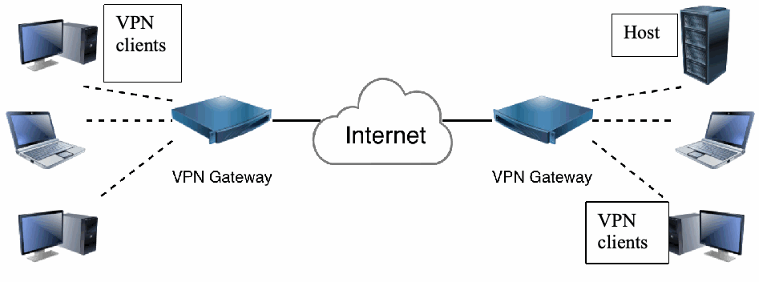
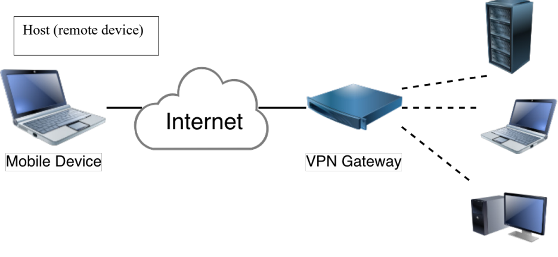
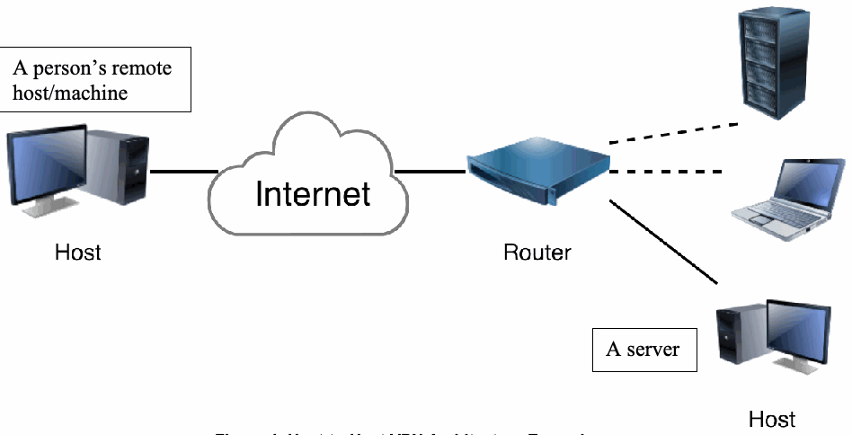
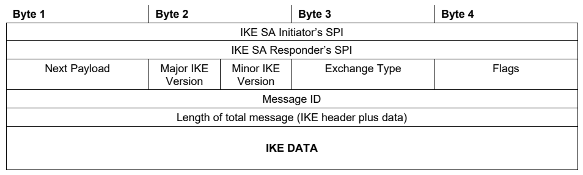
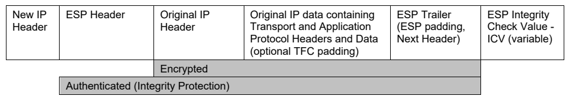
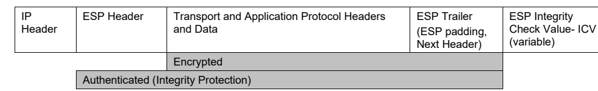
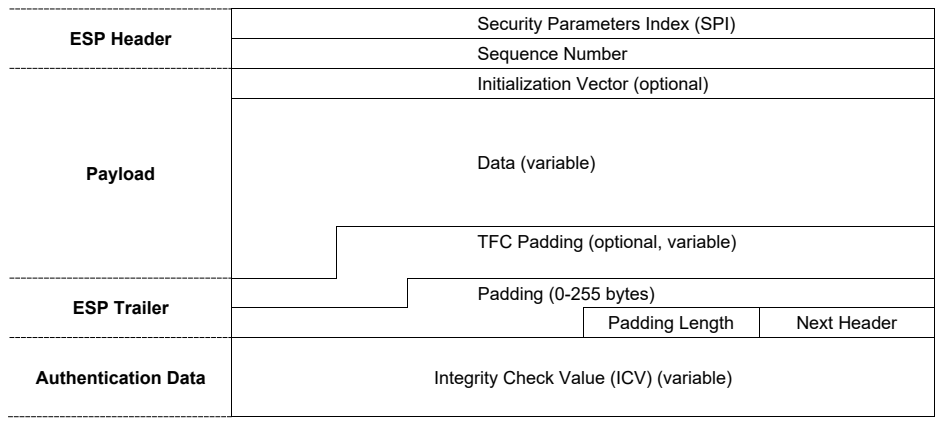
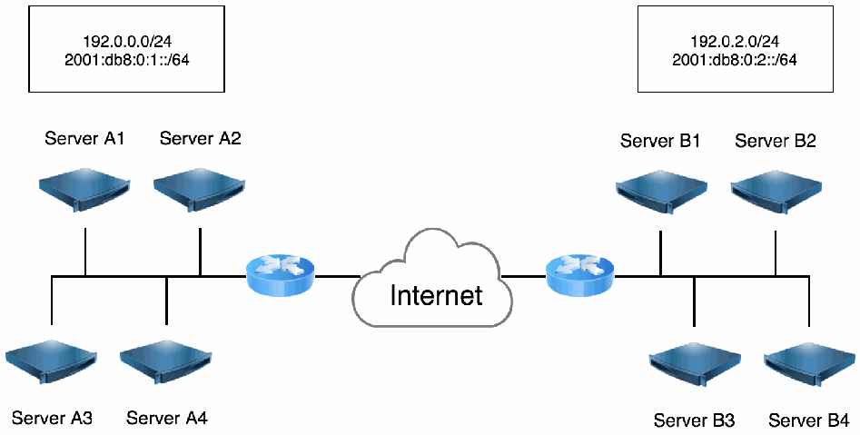

NIST Special Publication · PDF 原文抽出
Guide to IPsec VPNs
IPsec VPNガイド
NIST SP 800-77 Rev. 1（Guide to IPsec VPNs）の英文と日本語訳を段落ごとに並べた閲覧用ページです。IPsecとIKEの仕組みを説明し、機微情報をネットワーク経由で送信する際のリスクを軽減するため、組織がIPsecを導入し、さまざまな状況に応じたセキュリティサービスを実装するための実践的な指針を示します。 翻訳は有志による非公式のもので、NIST および米国商務省が作成・承認・推奨したものではありません。要件の確認にはNIST の正式版 PDFを参照してください。
NIST Special Publication 800-77
NIST特別刊行物800-77
Revision 1
改訂第1版
Guide to IPsec VPNs
IPsec VPNガイド
Elaine Barker Quynh Dang Sheila Frankel Karen Scarfone Paul Wouters
Elaine Barker、Quynh Dang、Sheila Frankel、Karen Scarfone、Paul Wouters
This publication is available free of charge from: https://doi.org/10.6028/NIST.SP.800-77r1
本刊行物は次から無料で入手できる：https://doi.org/10.6028/NIST.SP.800-77r1
C O M P U T E R S E C U R I T Y
コンピュータセキュリティ
NIST Special Publication 800-77
NIST特別刊行物800-77
Revision 1
改訂第1版
Guide to IPsec VPNs
IPsec VPNガイド
Elaine Barker Quynh Dang Sheila Frankel*
Elaine Barker、Quynh Dang、Sheila Frankel*
Computer Security Division Information Technology Laboratory
コンピュータセキュリティ部門 情報技術研究所
Karen Scarfone Scarfone Cybersecurity Clifton, VA
Karen Scarfone、Scarfone Cybersecurity、バージニア州クリフトン
Paul Wouters Red Hat Toronto, ON, Canada
Paul Wouters、Red Hat、カナダ オンタリオ州トロント
*Former employee; all work for this publication was done while at NIST
*元職員。本刊行物に関するすべての作業はNIST在職中に行われた。
This publication is available free of charge from: https://doi.org/10.6028/NIST.SP.800-77r1
本刊行物は次から無料で入手できる：https://doi.org/10.6028/NIST.SP.800-77r1
June 2020
2020年6月
U.S. Department of Commerce Wilbur L. Ross, Jr., Secretary
米国商務省 Wilbur L. Ross, Jr. 長官
National Institute of Standards and Technology
国立標準技術研究所
Walter Copan, NIST Director and Under Secretary of Commerce for Standards and Technology
Walter Copan、NIST所長兼商務省標準技術担当次官
Authority
権限
This publication has been developed by NIST in accordance with its statutory responsibilities under the Federal Information Security Modernization Act (FISMA) of 2014, 44 U.S.C. § 3551 et seq., Public Law (P.L.) 113-283. NIST is responsible for developing information security standards and guidelines, including minimum requirements for federal information systems, but such standards and guidelines shall not apply to national security systems without the express approval of appropriate federal officials exercising policy authority over such systems. This guideline is consistent with the requirements of the Office of Management and Budget (OMB) Circular A-130.
本刊行物は、2014年連邦情報セキュリティ近代化法（FISMA）、44 U.S.C. § 3551 et seq.、公法（P.L.）113-283に基づく法定責務に従い、NISTが策定した。NISTは、連邦情報システムの最低要件を含む情報セキュリティ標準およびガイドラインを策定する責任を負う。ただし、適切な連邦当局者が当該システムに対する政策権限を行使して明示的に承認しない限り、これらの標準およびガイドラインは国家安全保障システムには適用されない。本ガイドラインは、行政管理予算局（OMB）通達A-130の要件に準拠している。
Nothing in this publication should be taken to contradict the standards and guidelines made mandatory and binding on federal agencies by the Secretary of Commerce under statutory authority. Nor should these guidelines be interpreted as altering or superseding the existing authorities of the Secretary of Commerce, Director of the OMB, or any other federal official. This publication may be used by nongovernmental organizations on a voluntary basis and is not subject to copyright in the United States. Attribution would, however, be appreciated by NIST.
本刊行物のいかなる内容も、法定権限に基づき商務長官が連邦機関に義務付け、拘束力を持たせた標準およびガイドラインに矛盾するものと解釈してはならない。また、これらのガイドラインは、商務長官、OMB長官、またはその他の連邦当局者の既存の権限を変更または置き換えるものと解釈してはならない。本刊行物は、非政府組織が任意に使用でき、米国内では著作権の対象ではない。ただし、NISTの出典表示をいただければ幸いである。
National Institute of Standards and Technology Special Publication 800-77 Revision 1 Natl. Inst. Stand. Technol. Spec. Publ. 800-77 Rev. 1, 166 pages (June 2020) CODEN: NSPUE2
国立標準技術研究所 特別刊行物800-77 改訂第1版 Natl. Inst. Stand. Technol. Spec. Publ. 800-77 Rev. 1、166ページ（2020年6月）CODEN: NSPUE2
This publication is available free of charge from: https://doi.org/10.6028/NIST.SP.800-77r1
本刊行物は次から無料で入手できる：https://doi.org/10.6028/NIST.SP.800-77r1
Certain commercial entities, equipment, or materials may be identified in this document in order to describe an experimental procedure or concept adequately. Such identification is not intended to imply recommendation or endorsement by NIST, nor is it intended to imply that the entities, materials, or equipment are necessarily the best available for the purpose.
原本PDFの抜粋画像

実験手順または概念を十分に説明するため、本書では特定の商業事業者、機器または材料に言及している場合がある。このような言及は、NISTによる推奨または承認を意味するものではなく、それらの事業者、材料または機器が目的に適した入手可能な最良のものであることを意味するものでもない。
There may be references in this publication to other publications currently under development by NIST in accordance with its assigned statutory responsibilities. The information in this publication, including concepts and methodologies, may be used by federal agencies even before the completion of such companion publications. Thus, until each publication is completed, current requirements, guidelines, and procedures, where they exist, remain operative. For planning and transition purposes, federal agencies may wish to closely follow the development of these new publications by NIST.
本刊行物には、NISTが割り当てられた法定責任に従って現在策定中の他の刊行物への言及が含まれる場合がある。本刊行物の情報（概念および方法論を含む）は、関連する刊行物が完成する前であっても、連邦機関が利用してもよい。したがって、各刊行物が完成するまでは、既存の要件、ガイドラインおよび手順がある場合、それらは引き続き有効である。計画および移行にあたり、連邦機関はNISTによる新たな刊行物の策定状況を注視してもよい。
Organizations are encouraged to review all draft publications during public comment periods and provide feedback to NIST. Many NIST cybersecurity publications, other than the ones noted above, are available at https://csrc.nist.gov/publications.
組織には、すべての草案をパブリックコメント期間中に確認し、NISTに意見を提出することを推奨する。上記以外の多くのNISTサイバーセキュリティ刊行物は、https://csrc.nist.gov/publications で入手できる。
Comments on this publication may be submitted to: National Institute of Standards and Technology Attn: Computer Security Division, Information Technology Laboratory 100 Bureau Drive (Mail Stop 8930) Gaithersburg, MD 20899-8930 Email: revision_of_SP800-77@nist.gov
本刊行物に関するコメントの送付先：National Institute of Standards and Technology Attn: Computer Security Division, Information Technology Laboratory 100 Bureau Drive (Mail Stop 8930) Gaithersburg, MD 20899-8930 Email: revision_of_SP800-77@nist.gov
All comments are subject to release under the Freedom of Information Act (FOIA).
すべてのコメントは、情報公開法（FOIA）に基づく公開の対象となる。
Reports on Computer Systems Technology
コンピュータシステム技術に関する報告書
The Information Technology Laboratory (ITL) at the National Institute of Standards and Technology (NIST) promotes the U.S. economy and public welfare by providing technical leadership for the Nation’s measurement and standards infrastructure. ITL develops tests, test methods, reference data, proof of concept implementations, and technical analyses to advance the development and productive use of information technology. ITL’s responsibilities include the development of management, administrative, technical, and physical standards and guidelines for the cost-effective security and privacy of other than national security-related information in federal information systems. The Special Publication 800-series reports on ITL’s research, guidelines, and outreach efforts in information system security, and its collaborative activities with industry, government, and academic organizations.
国立標準技術研究所（NIST）の情報技術研究所（ITL）は、米国の計量・標準インフラに技術的リーダーシップを提供することにより、米国経済と公共の福祉を促進する。ITLは、情報技術の発展と生産的な利用を推進するため、試験、試験方法、参照データ、概念実証実装、および技術分析を開発する。ITLの責務には、連邦情報システムにおける国家安全保障関連以外の情報の費用対効果の高いセキュリティおよびプライバシーを確保するための、管理的、事務的、技術的および物理的な標準とガイドラインの策定が含まれる。特別刊行物800シリーズは、情報システムセキュリティに関するITLの研究、ガイドライン、普及活動、および産業界、政府、学術機関との協力活動を報告する。
Abstract
概要
Internet Protocol Security (IPsec) is a widely used network layer security control for protecting communications. IPsec is a framework of open standards for ensuring private communications over Internet Protocol (IP) networks. IPsec configuration is usually performed using the Internet Key Exchange (IKE) protocol. This publication provides practical guidance to organizations on implementing security services based on IPsec so that they can mitigate the risks associated with transmitting sensitive information across networks. The document focuses on how IPsec provides network layer security services and how organizations can implement IPsec and IKE to provide security under different circumstances. It also describes alternatives to IPsec and discusses under what circumstances each alternative may be appropriate.
インターネットプロトコルセキュリティ（IPsec）は、通信を保護するために広く使用されているネットワーク層セキュリティ制御である。IPsecは、インターネットプロトコル（IP）ネットワーク上のプライベートな通信を確保するためのオープン標準の枠組みである。通常、IPsecの設定にはインターネット鍵交換（IKE）プロトコルが使用される。本刊行物は、ネットワークを介した機密情報の送信に伴うリスクを軽減できるよう、IPsecに基づくセキュリティサービスを実装するための実践的な指針を組織に提供する。本書では、IPsecがネットワーク層のセキュリティサービスをどのように提供するか、また、さまざまな状況下でセキュリティを実現するために組織がIPsecおよびIKEをどのように実装できるかに重点を置く。さらに、IPsecの代替手段を説明し、それぞれの代替手段がどのような状況で適切となり得るかを論じる。
Keywords
キーワード
communications security; Internet Key Exchange (IKE); Internet Protocol (IP); Internet Protocol Security (IPsec); network layer security; networking; virtual private network (VPN).
通信セキュリティ、Internet Key Exchange（IKE）、Internet Protocol（IP）、Internet Protocol Security（IPsec）、ネットワーク層セキュリティ、ネットワーキング、仮想プライベートネットワーク（VPN）。
Document Conventions
文書の表記規則
The terms “shall” and “shall not” indicate requirements to be followed strictly in order to conform to the publication and from which no deviation is permitted.
用語「shall」および「shall not」は、本文書に適合するために厳格に従わなければならず、いかなる逸脱も許されない要件を示す。
The terms “should” and “should not” indicate that among several possibilities, one is recommended as particularly suitable, without mentioning or excluding others, or that a certain course of action is preferred but not necessarily required, or that (in the negative form) a certain possibility or course of action is discouraged but not prohibited.
用語 “should” および “should not” は、複数の可能性のうち、他に言及することも他を排除することもなく特に適切なものとして推奨される選択肢、必須とは限らないが望ましい行動方針、または（否定形の場合）禁止ではないものの推奨されない選択肢や行動方針を示す。
The terms “may” and “need not” indicate a course of action permissible within the limits of the publication.
用語 “may” および “need not” は、本刊行物の範囲内で許容される行動方針を示す。
The terms “can” and “cannot” indicate a possibility and capability, whether material, physical, or causal.
用語 “can” および “cannot” は、物質的、物理的または因果的な可能性および能力を示す。
Acknowledgments
謝辞
The authors—Elaine Barker, Quynh Dang, and Sheila Frankel of NIST; Karen Scarfone of Scarfone Cybersecurity; and Paul Wouters—wish to thank everyone who has contributed to this revision of Special Publication (SP) 800-77, particularly Andrew Regenscheid, David Waltermire, and Lily Chen of NIST; Deb Cooley and James Banoczi of the National Security Agency (NSA); and Graham Bartlett of Cisco.
著者であるNISTのElaine Barker、Quynh Dang、Sheila Frankel、Scarfone CybersecurityのKaren Scarfone、およびPaul Woutersは、特にNISTのAndrew Regenscheid、David Waltermire、Lily Chen、米国国家安全保障局（NSA）のDeb Cooley、James Banoczi、ならびにCiscoのGraham Bartlettをはじめ、本特別刊行物（SP）800-77の改訂に貢献したすべての方々に感謝する。
The authors acknowledge the following individuals (with their original affiliations) and organizations that assisted in the development of the original SP 800-77:
著者は、SP 800-77初版の策定を支援した以下の個人（当時の所属先を併記）および組織に謝意を表する。
•The authors of the original version: Sheila Frankel of NIST and Karen Kent, Ryan Lewkowski, Angela D. Orebaugh, Ronald W. Ritchey, and Steven R. Sharma of Booz Allen Hamilton
•初版の著者：NISTのSheila Frankel、ならびにBooz Allen HamiltonのKaren Kent、Ryan Lewkowski、Angela D. Orebaugh、Ronald W. Ritchey、Steven R. Sharma
•Bill Burr, Tim Grance, Okhee Kim, Peter Mell, and Murugiah Souppaya of NIST
•NISTのBill Burr、Tim Grance、Okhee Kim、Peter Mell、Murugiah Souppaya
•Darren Hartman and Mark Zimmerman of ICSA Labs
•ICSA LabsのDarren Hartman、Mark Zimmerman
•Paul Hoffman of the VPN Consortium
•VPN ConsortiumのPaul Hoffman
•Representatives from the Department of Energy, the Department of State, the Environmental Protection Agency, and the U.S. Nuclear Regulatory Commission
•エネルギー省、国務省、環境保護庁、および米国原子力規制委員会の代表者
Audience
対象読者
This document has been created for network architects, network administrators, security staff, technical support staff, and computer security program managers who are responsible for the technical aspects of preparing, operating, and securing networked infrastructures. The material in this document is technically oriented, and it is assumed that readers have at least a basic understanding of networking and network security.
本書は、ネットワーク化されたインフラストラクチャの準備、運用、および保護に関する技術的側面を担当するネットワークアーキテクト、ネットワーク管理者、セキュリティ担当者、技術サポート担当者、およびコンピュータセキュリティプログラム管理者を対象として作成されている。本書の内容は技術的なものであり、読者がネットワーキングおよびネットワークセキュリティについて少なくとも基本的な理解を有することを前提としている。
Trademark Information
商標情報
All names are registered trademarks or trademarks of their respective companies.
すべての名称は、それぞれの企業の登録商標または商標である。
Patent Disclosure Notice
特許開示に関する通知
NOTICE: The Information Technology Laboratory (ITL) has requested that holders of patent claims whose use may be required for compliance with the guidance or requirements of this publication disclose such patent claims to ITL. However, holders of patents are not obligated to respond to ITL calls for patents and ITL has not undertaken a patent search in order to identify which, if any, patents may apply to this publication.
通知：情報技術研究所（ITL）は、本刊行物の指針または要件への準拠にその使用が必要となり得る特許請求の範囲を保有する者に対し、当該特許請求の範囲をITLに開示するよう要請している。ただし、特許保有者はITLからの特許照会に回答する義務を負わず、またITLは、本刊行物に適用され得る特許があるかどうかを特定するための特許調査を実施していない。
As of the date of publication and following call(s) for the identification of patent claims whose use may be required for compliance with the guidance or requirements of this publication, no such patent claims have been identified to ITL.
刊行日時点で、本刊行物の指針または要件への準拠にその使用が必要となり得る特許請求の範囲の特定を求める照会を行った結果、そのような特許請求の範囲はITLに報告されていない。
No representation is made or implied by ITL that licenses are not required to avoid patent infringement in the use of this publication.
本刊行物の使用において特許侵害を避けるためにライセンスが不要であると、ITLが表明または黙示するものではない。
Executive Summary
エグゼクティブサマリー
Internet Protocol Security (IPsec) is a suite of open standards for ensuring private communications over public networks. It is the most common network layer security control, typically used to encrypt Internet Protocol (IP) traffic between hosts in a network and to create a virtual private network (VPN). A VPN is a virtual network built on top of existing physical networks that provides a secure communications mechanism for data and control information transmitted between computers or networks. IPsec is also used as a component that provides the security for many other internet protocols. The User Datagram Protocol (UDP) usage guidelines [1] specify IPsec as one of the methods to secure UDP.
インターネットプロトコルセキュリティ（IPsec）は、公衆ネットワーク上でプライベートな通信を確保するためのオープン標準群である。最も一般的なネットワーク層セキュリティ制御であり、通常、ネットワーク内のホスト間のインターネットプロトコル（IP）トラフィックを暗号化し、仮想プライベートネットワーク（VPN）を構築するために使用される。VPNは、既存の物理ネットワーク上に構築される仮想ネットワークであり、コンピュータまたはネットワーク間で送信されるデータおよび制御情報のために安全な通信機構を提供する。IPsecは、他の多くのインターネットプロトコルにセキュリティを提供する構成要素としても使用される。ユーザーデータグラムプロトコル（UDP）の使用ガイドライン[1]では、UDPを保護する方法の一つとしてIPsecを規定している。
The Internet Key Exchange (IKE) protocol is most commonly used to establish IPsec-based VPNs. The terms IKE and IPsec are often used interchangeably, although that is not correct. In practice, the terms “IPsec VPN,” “IKEv2 VPN,” “Cisco IPsec,” “IPsec XAUTH1,” and “L2TP2/IPsec” all refer to IPsec-based VPN connections. Some examples of technologies and protocols that use IKE and/or IPsec are:
IPsec ベースの VPN の確立には、Internet Key Exchange（IKE）プロトコルが最も一般的に用いられる。IKE と IPsec という用語はしばしば同じ意味で使われるが、それは正しくない。実際には、「IPsec VPN」、「IKEv2 VPN」、「Cisco IPsec」、「IPsec XAUTH1」、「L2TP2/IPsec」という用語は、いずれも IPsec ベースの VPN 接続を指す。IKE および／または IPsec を使用する技術やプロトコルの例を次に示す。
•3rd Generation Partnership Project (3GPP) mobile phone telephony standard (Long-Term Evolution [LTE]/5th Generation [5G], Wireless Fidelity [WiFi] calling) [2] [3]
•3rd Generation Partnership Project（3GPP）の携帯電話通信規格（Long-Term Evolution［LTE］／第5世代［5G］、Wireless Fidelity［WiFi］通話）[2] [3]
•Ethernet VPN (EVPN) and Virtual eXtensible Local Area Network (VXLAN) [4]
•Ethernet VPN（EVPN）およびVirtual eXtensible Local Area Network（VXLAN）[4]
•Software-Defined Networking (SDN) and Software-Defined Wide Area Network (SDWAN)
•Software-Defined Networking（SDN）およびSoftware-Defined Wide Area Network（SDWAN）
•Segment Routing [5]
•Segment Routing [5]
•Data Center Network Virtualization Overlay (NVO3) Networks [6]
•Data Center Network Virtualization Overlay（NVO3）ネットワーク[6]
•Generic Network Virtualization Encapsulation (GENEVE) [7]
•Generic Network Virtualization Encapsulation（GENEVE）[7]
•Smart Grid [8]
•Smart Grid [8]
•Constrained Application Protocol (CoAP)
•Constrained Application Protocol（CoAP）
•IPv6 over Low-Power Wireless Personal Area Networks (6LowPANs) [9]
•低電力無線パーソナルエリアネットワーク上のIPv6（6LowPANs）[9]
•Routing protocol protection [10] such as Border Gateway Protocol (BGP)/BGP Monitoring Protocol (BMP) [11] and Open Shortest Path First (OSPFv3) [12]
•ルーティングプロトコル保護[10]。例として、Border Gateway Protocol（BGP）/BGP Monitoring Protocol（BMP）[11]やOpen Shortest Path First（OSPFv3）[12]がある
VPNs protect communications carried over public networks, such as the internet, as well as private networks, such as fiber networks or Multiprotocol Label Switching (MPLS) networks. A VPN can provide several types of data protection, including confidentiality, integrity, data origin authentication, replay protection, and access control. The primary VPN architectures are as follows:
VPNは、インターネットなどの公衆ネットワーク上だけでなく、ファイバーネットワークやマルチプロトコルラベルスイッチング（MPLS）ネットワークなどのプライベートネットワーク上で伝送される通信も保護する。VPNは、機密性、完全性、データ発信元認証、リプレイ防止、およびアクセス制御など、複数種類のデータ保護を提供できる。主なVPNアーキテクチャは次のとおりである。
•Gateway-to-gateway. This architecture protects communications between two specific networks, such as an organization’s main office network and a branch office network or two business partners’ networks.
•ゲートウェイ間。このアーキテクチャは、組織の本社ネットワークと支社ネットワーク、または二つのビジネスパートナーのネットワークなど、特定の二つのネットワーク間の通信を保護する。
•Remote access. Also known as host-to-gateway, this architecture protects communications between one or more individual hosts and a specific network belonging to an organization. The remote access architecture is most often used to allow hosts on unsecured networks, such as traveling employees and telecommuters, to gain access to internal organizational services, such as the organization’s email and web servers.
•リモートアクセス。ホスト対ゲートウェイとも呼ばれるこのアーキテクチャは、一台以上の個別ホストと、組織が所有する特定のネットワークとの間の通信を保護する。リモートアクセスアーキテクチャは、出張中の従業員や在宅勤務者など、セキュリティ保護されていないネットワーク上のホストが、組織の電子メールサーバーやWebサーバーなどの内部サービスにアクセスできるようにするために最もよく使用される。
•Host-to-host. A host-to-host architecture protects communication between two specific computers. It can be used when a small number of users need to use or administer a remote system that requires the use of inherently insecure protocols.
•ホスト間。ホスト間アーキテクチャは、特定の二台のコンピュータ間の通信を保護する。安全性が本質的に低いプロトコルの使用を必要とするリモートシステムを、少数のユーザーが利用または管理する必要がある場合に使用できる。
•Mesh. In a mesh architecture, many hosts within one or a few networks all establish individual VPNs with each other.
•メッシュ。メッシュアーキテクチャでは、一つまたは少数のネットワーク内にある多数のホストが、相互に個別のVPNを確立する。
The guide provides an overview of the types of security controls that can offer protection for network communications that are widely used throughout the world. IP communications are composed of four layers that work together: application, transport, network, and data link. Security controls exist for network communications at each of the four layers. As data is prepared for transport, it is passed from the highest to the lowest layer, with each layer adding more information. Because of this, a security control at a higher layer cannot provide full protection for lower layers because the lower layers add information to the communications after the higher layer security controls have been applied. The primary disadvantage of lower layer security controls is that they are less flexible and granular than higher layer controls. Accordingly, network layer controls have become widely used for securing communications because they provide a more balanced solution.
本ガイドは、世界中で広く使用されているネットワーク通信の保護に役立つセキュリティ制御の種類を概説する。IP通信は、連携して動作するアプリケーション、トランスポート、ネットワーク、およびデータリンクの四つの層で構成される。ネットワーク通信のセキュリティ制御は、これら四層のそれぞれに存在する。データは転送の準備が進むにつれて最上位層から最下位層へ渡され、各層で情報が追加される。このため、上位層のセキュリティ制御を適用した後に下位層が通信に情報を追加するため、上位層のセキュリティ制御では下位層を完全に保護できない。下位層のセキュリティ制御の主な欠点は、上位層の制御より柔軟性と粒度が低いことである。したがって、より均衡の取れた解決策を提供するネットワーク層制御が、通信の保護に広く使用されるようになった。
IPsec is a network layer security protocol with two main components:
IPsecは、次の二つの主要な構成要素を持つネットワーク層セキュリティプロトコルである。
•Encapsulating Security Payload (ESP) is the protocol that transports the encrypted and integrity-protected network communications across the network. If only integrity protection is needed without encryption, the ESP protocol can use NULL encryption. An older method for IPsec transport of non-encrypted data involves the use of the Authentication Header (AH) protocol, but this method is no longer recommended by this guidance.
•Encapsulating Security Payload（ESP）は、暗号化され完全性保護されたネットワーク通信をネットワーク上で転送するプロトコルである。暗号化を行わず完全性保護のみが必要な場合、ESPプロトコルはNULL暗号化を使用できる。暗号化されていないデータをIPsecで転送する旧来の方法ではAuthentication Header（AH）プロトコルを使用するが、本ガイドではこの方法をもはや推奨しない。
•Internet Key Exchange (IKE) is the protocol used by IPsec to negotiate IPsec connection settings; authenticate endpoints to each other; define the security parameters of IPsec-protected connections; negotiate session keys; and manage, update, and delete IPsec-protected communication channels. The current version is IKEv2.
•Internet Key Exchange（IKE）は、IPsec接続設定のネゴシエーション、エンドポイント間の相互認証、IPsec保護接続のセキュリティパラメータの定義、セッション鍵のネゴシエーション、およびIPsec保護通信チャネルの管理、更新、削除にIPsecが使用するプロトコルである。現行バージョンはIKEv2である。
Optionally, IPsec can use the IP Payload Compression Protocol (IPComp) to compress packet payloads before encrypting them, but this has not been widely used.
任意で、IPsecはIP Payload Compression Protocol（IPComp）を使用して暗号化前にパケットペイロードを圧縮できるが、これは広く使用されていない。
Only implementations of NIST-approved cryptographic algorithms specified in Federal Information Processing Standards (FIPS) or NIST Special Publications (SPs) and contained in FIPS-validated cryptographic modules shall be used in IPsec VPN deployments for compliance with this guidance. The FIPS 140 specifications [13][14] define how cryptographic modules will be validated. One requirement of FIPS 140 is that the module be capable of operating in a mode where all algorithms are NIST approved. NIST-approved algorithms are specified in a FIPS (e.g., FIPS 180, Secure Hash Standard) or in a NIST SP (e.g., SP 800-56A, Recommendation for Pair-Wise Key Establishment Schemes Using Discrete Logarithm Cryptography). Some implementations can run in both FIPS mode and non-FIPS mode, so it is important to set and verify the mode of operation of the IKE and IPsec modules.
このガイダンスに準拠するには、連邦情報処理規格（FIPS）またはNIST特別刊行物（SP）で規定され、かつFIPS検証済み暗号モジュールに含まれている、NIST承認済み暗号アルゴリズムの実装のみを、IPsec VPNの導入で使用しなければならない。FIPS 140仕様[13][14]は、暗号モジュールの検証方法を定めている。FIPS 140の要件の一つは、すべてのアルゴリズムがNIST承認済みであるモードでモジュールが動作できることである。NIST承認済みアルゴリズムは、FIPS（例：FIPS 180、セキュアハッシュ標準）またはNIST SP（例：SP 800-56A、離散対数暗号を用いたペア単位鍵確立方式に関する勧告）で規定される。一部の実装はFIPSモードと非FIPSモードの両方で動作できるため、IKEおよびIPsecモジュールの動作モードを設定し、検証することが重要である。
The Cryptographic Module Validation Program (CMVP) is a joint effort between NIST and the Communications Security Establishment (CSE) of the Government of Canada for the validation of cryptographic modules against FIPS 140 [13][14]. The Cryptographic Algorithm Validation Program (CAVP) provides validation testing of FIPS-approved and NIST-recommended cryptographic algorithms and their individual components. Cryptographic algorithm validation is a prerequisite of cryptographic module validation.
暗号モジュール検証プログラム（CMVP）は、FIPS 140[13][14]に対する暗号モジュールの検証を目的とする、NISTとカナダ政府通信保安機構（CSE）の共同事業である。暗号アルゴリズム検証プログラム（CAVP）は、FIPS承認済みおよびNIST推奨の暗号アルゴリズムとその個々の構成要素について検証試験を行う。暗号アルゴリズムの検証は、暗号モジュール検証の前提条件である。
Cryptographic recommendations in this document are based on the time of publication of this document and may be superseded by other publications in the future. The References section contains a list of relevant FIPS, SPs, and Internet Engineering Task Force (IETF) standards related to IKE and IPsec.
本書の暗号に関する勧告は本書の刊行時点に基づくものであり、将来、他の刊行物によって置き換えられる場合がある。参考文献の節には、IKEおよびIPsecに関連するFIPS、SP、およびインターネット技術特別調査委員会（IETF）標準の一覧が含まれる。
Approved algorithms and their options for IKE and IPsec as of this writing are listed in Table 1.
本書執筆時点における、IKEおよびIPsec向けの承認済みアルゴリズムとそのオプションを表1に示す。
Table 1: Approved Algorithms and Options
表1：承認済みアルゴリズムとオプション
| Option | Recommended | Legacy | Expected |
|---|---|---|---|
| IKE | |||
| Version | IKEv2 | IKEv1 | |
| IKEv2 exchanges | All | - | |
| IKEv1 exchanges | Main Mode, Quick Mode | Aggressive Mode | |
| Encryption | AES-GCM, AES-CTR, AES-CBC, AES-CCM (128, 192, 256-bit keys) | TDEA3 | |
| Integrity/Pseudorandom Function (PRF) | HMAC-SHA256, HMAC-SHA384, HMAC-SHA512 | HMAC-SHA-1 | HMAC-SHA-3 |
| Diffie-Hellman (DH) group | DH 14 to DH 21 RFC 3526 [15] and RFC 5114 [16] | DH 31 and DH 32, RFC 8031 [17] | |
| Peer authentication4 | RSA, DSA, and ECDSA with 128-bit security strength (for example, RSA with 3072-bit or larger key) | RSA, DSA, and ECDSA with less than 112 bits of security strength | |
| Lifetime | 24 hours |
| オプション | 推奨 | レガシー | 想定 |
|---|---|---|---|
| IKE | |||
| バージョン | IKEv2 | IKEv1 | |
| IKEv2交換 | すべて | - | |
| IKEv1交換 | メインモード、クイックモード | アグレッシブモード | |
| 暗号化 | AES-GCM、AES-CTR、AES-CBC、AES-CCM（128、192、256ビット鍵） | TDEA3 | |
| 完全性／擬似乱数関数（PRF） | HMAC-SHA256、HMAC-SHA384、HMAC-SHA512 | HMAC-SHA-1 | HMAC-SHA-3 |
| Diffie-Hellman（DH）グループ | DH 14～DH 21 RFC 3526 [15]およびRFC 5114 [16] | DH 31およびDH 32、RFC 8031 [17] | |
| ピア認証4 | 128ビットのセキュリティ強度を持つRSA、DSA、およびECDSA（例：3072ビット以上の鍵を使用するRSA） | 112ビット未満のセキュリティ強度を持つRSA、DSA、およびECDSA | |
| 有効期間 | 24時間 |
| Option | Recommended | Legacy | Expected |
|---|---|---|---|
| IPsec | |||
| Mode | tunnel mode, transport mode | ||
| Protocol | ESP, IPComp | AH | |
| Version | IPsec-v3 | IPsec-v2 | |
| Encryption | AES-GCM, AES-CTR, AES-CBC, AES-CCM (128, 192, 256-bit keys) | ||
| Integrity | HMAC-SHA256, HMAC-SHA384, HMAC-SHA512, AES-GMAC | HMAC-SHA-3 | |
| Perfect Forward Secrecy (PFS) | Same or stronger DH as initial IKE DH | ||
| Lifetime | 8 hours |
| オプション | 推奨 | レガシー | 想定 |
|---|---|---|---|
| IPsec | |||
| モード | トンネルモード、トランスポートモード | ||
| プロトコル | ESP, IPComp | AH | |
| バージョン | IPsec-v3 | IPsec-v2 | |
| 暗号化 | AES-GCM、AES-CTR、AES-CBC、AES-CCM（128、192、256ビット鍵） | ||
| 完全性 | HMAC-SHA256、HMAC-SHA384、HMAC-SHA512、AES-GMAC | HMAC-SHA-3 | |
| 完全前方秘匿性（PFS） | 初期IKE DHと同等以上のDH | ||
| 有効期間 | 8時間 |
NIST’s current cryptographic timeline requirements are specified in SP 800-131A [18]. Federal agencies that want to provide IPsec VPN services in compliance with NIST’s recommendation or requirements must ensure that their systems will be upgraded to NIST-recommended or approved algorithms and key lengths before the current algorithms and their key lengths become disallowed. Federal agencies should require their IPsec VPN vendors to have the necessary upgrades available early enough for testing and deployment in the field.
NISTの現行の暗号タイムライン要件はSP 800-131A[18]に規定されている。NISTの勧告または要件に準拠したIPsec VPNサービスの提供を望む連邦機関は、現行のアルゴリズムおよび鍵長が許可されなくなる前に、自機関のシステムがNIST推奨または承認済みのアルゴリズムおよび鍵長へアップグレードされるようにしなければならない。連邦機関は、IPsec VPNベンダーに対し、現場での試験および導入に間に合うよう、必要なアップグレードを十分早期に利用可能にすることを求めるべきである。
The strongest possible cryptographic algorithms and key lengths that are NIST-approved should be used for authentication, encryption, and integrity protection unless they are incompatible with interoperability, performance, or export constraints.
相互運用性、性能、または輸出上の制約と両立しない場合を除き、認証、暗号化、および完全性保護には、NIST承認済みのうち可能な限り強力な暗号アルゴリズムおよび鍵長を使用するべきである。
In addition to providing specific recommendations related to configuring cryptography for IPsec, this guide presents a phased approach to IPsec planning and implementation that can help in achieving successful IPsec deployments. The five phases of the approach are as follows:
本ガイドは、IPsecの暗号設定に関する具体的な勧告に加えて、IPsecの計画および実装に段階的なアプローチを提示し、IPsec導入の成功を支援する。このアプローチの五つの段階は次のとおりである。
1.Identify Needs – Identify the need to protect network communications and determine how that need can best be met.
1.ニーズの特定 – ネットワーク通信を保護する必要性を特定し、その必要性を最も適切に満たす方法を判断する。
2.Design the Solution – Make design decisions in several areas, including architectural considerations, authentication methods, cryptographic policy, and packet filters. The placement of an IPsec gateway has potential security, functionality, and performance implications. An authentication solution should be selected based primarily on maintenance, scalability, and security. Packet filters should apply appropriate protections to traffic and not protect other types of traffic for performance or functionality reasons.
2.ソリューションの設計 – アーキテクチャ上の考慮事項、認証方式、暗号ポリシー、パケットフィルターなど、複数の領域で設計上の決定を行う。IPsecゲートウェイの配置は、セキュリティ、機能、および性能に影響を及ぼす可能性がある。認証ソリューションは、主として保守性、拡張性、およびセキュリティに基づいて選択するべきである。パケットフィルターは、トラフィックに適切な保護を適用し、性能または機能上の理由から、対象外の種類のトラフィックを保護しないようにするべきである。
3.Implement and Test a Prototype – Test a prototype of the designed solution in a lab or test environment to identify any potential issues. Testing should evaluate several factors, including connectivity, protection, authentication, application compatibility, management, logging, performance, the security of the implementation, and component interoperability.
3.プロトタイプの実装と試験 – 設計したソリューションのプロトタイプを実験室または試験環境で試験し、潜在的な問題を特定する。試験では、接続性、保護、認証、アプリケーション互換性、管理、ログ記録、性能、実装のセキュリティ、およびコンポーネント間の相互運用性など、複数の要因を評価するべきである。
4.4. Deploy the Solution – Gradually deploy IPsec throughout the enterprise. Existing network infrastructure, applications, and users should be moved incrementally over time to the new IPsec solution. This provides administrators an opportunity to evaluate the impact of the IPsec solution and resolve issues prior to enterprise-wide deployment.
4.4. ソリューションの導入 – 企業全体にIPsecを段階的に導入する。既存のネットワークインフラストラクチャ、アプリケーション、およびユーザーは、時間をかけて段階的に新しいIPsecソリューションへ移行するべきである。これにより、管理者は、企業全体への導入に先立ち、IPsecソリューションの影響を評価し、問題を解決する機会を得られる。
5.Manage the Solution – Maintain the IPsec components and resolve operational issues; repeat the planning and implementation process when significant changes need to be incorporated into the solution.
5.ソリューションの管理 – IPsecコンポーネントを保守し、運用上の問題を解決する。ソリューションに大幅な変更を組み込む必要が生じた場合は、計画および実装のプロセスを繰り返す。
As part of implementing IPsec, organizations should also implement additional technical, operational, and management controls that support and complement IPsec implementations. Examples include establishing control over all entry and exit points for the protected networks, ensuring the security of all IPsec endpoints, and incorporating IPsec considerations into organizational policies.
IPsecの実装の一環として、組織はIPsec実装を支援し補完する追加の技術的、運用的、および管理的制御も実装するべきである。例として、保護対象ネットワークのすべての入口および出口を管理下に置くこと、すべてのIPsecエンドポイントのセキュリティを確保すること、および組織のポリシーにIPsecに関する考慮事項を組み込むことが挙げられる。
Table of Contents
目次
Executive Summary ...................................................................................................... v
エグゼクティブサマリー ...................................................................................................... v
1 Introduction — 1
1 はじめに — 1
1.1 Purpose and Scope — 1
1.1 目的および適用範囲 — 1
1.2 Document Structure — 1
1.2 文書の構成 — 1
2 Network Layer Security — 3
2 ネットワーク層セキュリティ — 3
2.1 The Need for Network Layer Security — 3
2.1 ネットワーク層セキュリティの必要性 — 3
2.2 The IPsec Protocol — 6
2.2 IPsecプロトコル — 6
2.3 Virtual Private Networking (VPN) — 8
2.3 仮想プライベートネットワーキング（VPN）— 8
2.3.1 Confidentiality — 8
2.3.1 機密性 — 8
2.3.2 Integrity — 8
2.3.2 完全性 — 8
2.3.3 Establishment of Shared Secret Keys — 9
2.3.3 共有シークレット鍵の確立 — 9
2.3.4 Peer Authentication — 9
2.3.4 ピア認証 — 9
2.3.5 Deployment Risks — 10
2.3.5 導入リスク — 10
2.4 Primary IPsec-Based VPN Architectures — 10
2.4 主なIPsecベースVPNアーキテクチャ — 10
2.4.1 Gateway-to-Gateway — 11
2.4.1 ゲートウェイ間 — 11
2.4.2 Remote Access — 13
2.4.2 リモートアクセス — 13
2.4.3 Host-to-Host — 15
2.4.3 ホスト間 — 15
2.5 Summary — 19
2.5 まとめ — 19
3 Internet Key Exchange (IKE) — 20
3 インターネット鍵交換（IKE）— 20
3.1 Overview of IKE — 20
3.1 IKEの概要 — 20
3.2 IKE Exchange Types — 21
3.2 IKE交換タイプ — 21
3.2.1 The IKE_SA_INIT Exchange — 22
3.2.1 IKE_SA_INIT交換 — 22
3.2.2 The IKE_AUTH Exchange — 23
3.2.2 IKE_AUTH交換 — 23
3.2.3 The CREATE_CHILD_SA Exchange — 25
3.2.3 CREATE_CHILD_SA交換 — 25
3.2.4 The INFORMATIONAL Exchange — 26
3.2.4 INFORMATIONAL交換 — 26
3.3 IKE Authentication Models — 27
3.3 IKE認証モデル — 27
3.3.1 Certificate-Based Authentication — 27
3.3.1 証明書ベース認証 — 27
3.3.2 Extensible Authentication Protocol (EAP) — 27
3.3.2 拡張認証プロトコル（EAP） — 27
3.3.3 Raw Public Key Authentication — 28
3.3.3 生公開鍵認証 — 28
3.3.4 Preshared Secret Key (PSK) Authentication — 28
3.3.4 事前共有シークレット鍵（PSK）認証 — 28
3.3.5 NULL Authentication — 29
3.3.5 NULL認証 — 29
3.4 Network Address Translation (NAT) — 29
3.4 ネットワークアドレス変換（NAT） — 29
3.5 IKE Fragmentation — 30
3.5 IKEフラグメンテーション — 30
3.6 Mobile IKE (MOBIKE) — 31
3.6 モバイルIKE（MOBIKE） — 31
3.7 Postquantum Preshared Keys (PPKs) — 31
3.7 耐量子事前共有鍵（PPK） — 31
3.8 IKE Redirect — 32
3.8 IKEリダイレクト — 32
3.9 Differences Between IKEv2 and the Obsolete IKEv1 — 33
3.9 IKEv2と廃止されたIKEv1の相違点 — 33
3.10 Manual Keying — 35
3.10 手動鍵設定 — 35
3.11 IKE Summary — 35
3.11 IKEの概要 — 35
4 The IPsec Protocols — 36
4 IPsecプロトコル — 36
4.1 Encapsulating Security Payload (ESP) — 36
4.1 カプセル化セキュリティペイロード（ESP） — 36
4.1.1 Tunnel Mode and Transport Mode — 37
4.1.1 トンネルモードとトランスポートモード — 37
4.1.2 Encryption with Separate Integrity Protection — 38
4.1.2 完全性保護を分離した暗号化 — 38
4.1.3 AEAD Encryption with Built-In Integrity — 38
4.1.3 完全性保護を内蔵したAEAD暗号化 — 38
4.1.4 Common ESP Algorithms — 39
4.1.4 ESP共通アルゴリズム — 39
4.1.5 ESP Packet Fields — 39
4.1.5 ESPパケットのフィールド — 39
4.1.6 How ESP Works — 41
4.1.6 ESPの動作 — 41
4.2 ESP Encapsulation — 43
4.2 ESPカプセル化 — 43
4.2.1 UDP Encapsulation of ESP — 43
4.2.1 ESPのUDPカプセル化 — 43
4.2.2 TCP Encapsulation of ESP — 44
4.2.2 ESPのTCPカプセル化 — 44
4.3 IP Payload Compression Protocol (IPComp) — 44
4.3 IPペイロード圧縮プロトコル（IPComp） — 44
4.4 Authentication Header (AH) — 45
4.4 認証ヘッダー（AH） — 45
4.5 Summary — 45
4.5 まとめ — 45
5 Deployment of IPsec Using IKE — 47
5 IKEを使用したIPsecの展開 — 47
5.1 IPsec States and Policies — 47
5.1 IPsecの状態とポリシー — 47
5.1.1 The Security Association Database (SAD) — 48
5.1.1 セキュリティアソシエーションデータベース（SAD） — 48
5.1.2 The Security Policy Database (SPD) — 50
5.1.2 セキュリティポリシーデータベース（SPD） — 50
5.1.3 SAD Message Types — 51
5.1.3 SADメッセージタイプ — 51
5.2 Example of Establishing an IPsec Connection Using IKE — 52
5.2 IKEを使用したIPsec接続確立の例 — 52
5.3 Procurement Considerations for IPsec Products — 53
5.3 IPsec製品の調達に関する考慮事項 — 53
6 Troubleshooting IPsec VPNs — 55
6 IPsec VPNのトラブルシューティング — 55
6.1 IKE Policy Exceptions — 55
6.1 IKEポリシーの例外 — 55
6.2 IPv6 Neighbor Discovery Policy Exception — 55
6.2 IPv6近隣探索ポリシーの例外 — 55
6.3 Debugging IKE Configurations — 56
6.3 IKE設定のデバッグ — 56
6.4 Common Configuration Mistakes — 56
6.4 よくある設定ミス — 56
6.5 Routing-Based VPNs Versus Policy-Based VPNs — 57
6.5 ルーティングベースVPNとポリシーベースVPN — 57
6.6 Firewall Settings — 58
6.6 ファイアウォール設定 — 58
7 IPsec Planning and Implementation — 59
7 IPsecの計画と実装 — 59
7.1 Identify Needs — 60
7.1 ニーズの特定 — 60
7.2 Design the Solution — 60
7.2 ソリューションの設計 — 60
7.2.1 Architecture — 61
7.2.1 アーキテクチャ — 61
7.2.2 IKE Authentication — 66
7.2.2 IKE認証 — 66
7.2.3 Cryptography for Confidentiality and Integrity Protection and for Key Exchange — 69
7.2.3 機密性および完全性保護ならびに鍵交換のための暗号 — 69
7.2.4 High Speed and Large Server Considerations — 70
7.2.4 高速処理および大規模サーバーに関する考慮事項 — 70
7.2.5 Packet Filter — 74
7.2.5 パケットフィルター — 74
7.2.6 Other Design Considerations — 75
7.2.6 その他の設計上の考慮事項 — 75
7.2.7 Summary of Design Decisions — 77
7.2.7 設計上の決定事項のまとめ — 77
7.3 Implement and Test Prototype — 78
7.3 プロトタイプの実装とテスト — 78
7.3.1 Component Interoperability — 80
7.3.1 コンポーネント間の相互運用性 — 80
7.3.2 Security of the Implementation — 82
7.3.2 実装のセキュリティ — 82
7.4 Deploy the Solution — 82
7.4 ソリューションの展開 — 82
7.5 Manage the Solution — 83
7.5 ソリューションの管理 — 83
7.6 Summary — 84
7.6 まとめ — 84
8 Alternatives to IPsec — 86
8 IPsecの代替手段 — 86
8.1 Data Link Layer VPN Protocols — 86
8.1 データリンク層VPNプロトコル — 86
8.1.1 WiFi Data Link Protection — 87
8.1.1 Wi-Fiデータリンク保護 — 87
8.1.2 Media Access Control Security (MACsec) — 87
8.1.2 メディアアクセス制御セキュリティ（MACsec） — 87
8.2 Transport Layer VPN Protocols (SSL VPNs) — 88
8.2 トランスポート層VPNプロトコル（SSL VPN） — 88
8.2.1 Secure Socket Tunneling Protocol (SSTP) — 88
8.2.1 セキュアソケットトンネリングプロトコル（SSTP） — 88
8.2.2 OpenConnect — 89
8.2.2 OpenConnect — 89
8.2.3 OpenVPN — 89
8.2.3 OpenVPN — 89
8.3 WireGuard — 89
8.3 WireGuard — 89
8.4 Secure Shell (SSH) — 90
8.4 セキュアシェル（SSH） — 90
8.5 Obsoleted and Deprecated VPN Protocols — 91
8.5 廃止または非推奨となったVPNプロトコル — 91
8.5.1 Point-to-Point Tunneling Protocol (PPTP) — 91
8.5.1 ポイントツーポイントトンネリングプロトコル（PPTP） — 91
8.5.2 Layer 2 Tunneling Protocol (L2TP) — 91
8.5.2 レイヤー2トンネリングプロトコル（L2TP） — 91
8.6 Summary — 92
8.6 まとめ — 92
9 Planning and Implementation Case Studies — 93
9 計画と実装の事例研究 — 93
9.1 Connecting a Remote Office to the Main Office — 93
9.1 支社を本社に接続する — 93
9.1.1 Identifying Needs and Evaluating Options — 94
9.1.1 ニーズの特定と選択肢の評価 — 94
9.1.2 Designing the Solution — 95
9.1.2 ソリューションの設計 — 95
9.1.3 Implementing a Prototype — 97
9.1.3 プロトタイプの実装 — 97
9.1.4 Analysis — 102
9.1.4 分析 — 102
9.2 Protecting Communications for Remote Users — 104
9.2 リモートユーザーの通信を保護する — 104
9.2.1 Identifying Needs and Evaluating Options — 104
9.2.1 ニーズの特定と選択肢の評価 — 104
9.2.2 Designing the Solution — 105
9.2.2 ソリューションの設計 — 105
9.2.3 Implementing a Prototype — 107
9.2.3 プロトタイプの実装 — 107
9.2.4 Analysis — 110
9.2.4 分析 — 110
9.3 Remote Access to a Cloud Server Instance — 111
9.3 クラウドサーバーインスタンスへのリモートアクセス — 111
9.3.1 Identifying Needs and Evaluating Options — 111
9.3.1 ニーズの特定と選択肢の評価 — 111
9.3.2 Designing the Solution — 112
9.3.2 ソリューションの設計 — 112
9.3.3 Implementing a Prototype — 113
9.3.3 プロトタイプの実装 — 113
9.3.4 Testing the Solution — 115
9.3.4 ソリューションのテスト — 115
9.3.5 Analysis — 115
9.3.5 分析 — 115
9.4 Cloud Encryption — 116
9.4 クラウド暗号化 — 116
9.4.1 Identifying Needs and Evaluating Options — 116
9.4.1 ニーズの特定と選択肢の評価 — 116
9.4.2 Designing the Solution — 117
9.4.2 ソリューションの設計 — 117
9.4.3 Implementing a Prototype — 118
9.4.3 プロトタイプの実装 — 118
9.4.4 Testing the Solution — 119
9.4.4 ソリューションのテスト — 119
9.4.5 Analysis — 119
9.4.5 分析 — 119
10 Work In Progress — 120
10 進行中の作業 — 120
10.1 Support for Multicast and Group Authentication — 120
10.1 マルチキャストおよびグループ認証のサポート — 120
10.2 Labeled IPsec — 120
10.2 ラベル付きIPsec — 120
10.3 ESP Implicit IV — 120
10.3 ESPの暗黙的IV — 120
10.4 The INTERMEDIATE Exchange — 121
10.4 INTERMEDIATE交換 — 121
10.5 IPv4 and IPv6 Support in Remote Access VPNs — 121
10.5 リモートアクセスVPNにおけるIPv4およびIPv6のサポート — 121
10.6 Post Quantum Key Exchange — 121
10.6 耐量子鍵交換 — 121
References — 122
参考文献 — 122
List of Appendices
付録一覧
Appendix A— Required Configuration Parameters for IKE and IPsec — 132
付録A— IKEおよびIPsecの必須設定パラメーター — 132
Appendix B— Policy Considerations — 133
付録B— ポリシーに関する考慮事項 — 133
B.1 Communications with a Remote Office Network or Cloud — 133
B.1 支社ネットワークまたはクラウドとの通信 — 133
B.1.1 IPsec Gateway Devices and Management Servers — 133
B.1.1 IPsecゲートウェイ機器および管理サーバー — 133
B.1.2 Hosts and People Using the IPsec Tunnel — 134
B.1.2 IPsecトンネルを使用するホストおよび人 — 134
B.2 Communications with a Business Partner Network — 134
B.2 ビジネスパートナーネットワークとの通信 — 134
B.2.1 Interconnection Agreement — 135
B.2.1 相互接続合意 — 135
B.2.2 IPsec Gateway Devices and Management Servers — 136
B.2.2 IPsecゲートウェイ機器および管理サーバー — 136
B.2.3 Hosts and People Using the IPsec Tunnel — 136
B.2.3 IPsecトンネルを使用するホストおよび人 — 136
B.3 Communications for Individual Remote Hosts — 136
B.3 個別リモートホストの通信 — 136
B.3.1 Remote Access Policy — 137
B.3.1 リモートアクセス・ポリシー — 137
B.3.2 IPsec Gateway Devices and Management Servers — 137
B.3.2 IPsecゲートウェイ機器および管理サーバー — 137
Appendix C— Case Study Configuration Files — 139
付録C— 事例研究の設定ファイル — 139
C.1 Section 9.1 Case Study Cisco Configuration — 139
C.1 9.1節の事例研究：Cisco設定 — 139
C.2 Section 9.1 Case Study Alternative Using strongSwan on FreeBSD — 140
C.2 9.1節の事例研究：FreeBSD上のstrongSwanを使用する代替構成 — 140
C.3 Section 9.1 Case Study Alternative Using libreswan on Linux — 141
C.3 9.1節の事例研究：Linux上のlibreswanを使用する代替構成 — 141
C.4 Section 9.1 Case Study Alternative Using iked on OpenBSD — 142
C.4 9.1節の事例研究：OpenBSD上のikedを使用する代替構成 — 142
Appendix D— Glossary — 143
付録D— 用語集 — 143
Appendix E— Acronyms and Abbreviations — 145
付録E— 頭字語および略語 — 145
List of Figures
図一覧
Figure 1: IP Model — 3
図1：IPモデル — 3
Figure 2: Gateway-to-Gateway VPN Architecture Example — 12
図2：ゲートウェイ間VPNアーキテクチャの例 — 12
Figure 3: Remote Access VPN Architecture Example — 13
図3：リモートアクセスVPNアーキテクチャの例 — 13
Figure 4: Host-to-Host VPN Architecture Example — 15
図4：ホスト間VPNアーキテクチャの例 — 15
Figure 5: SDWAN Architecture Example — 17
図5：SD-WANアーキテクチャの例 — 17
Figure 6: The IKEv2 Packet Format — 21
図6：IKEv2パケット形式 — 21
Figure 7: ESP Tunnel Mode Packet — 37
図7：ESPトンネルモード・パケット — 37
Figure 8: ESP Transport Mode Packet — 38
図8：ESPトランスポートモード・パケット — 38
Figure 9: ESP Packet Fields — 41
図9：ESPパケットのフィールド — 41
Figure 10: ESP Packet Capture Using Wireshark, Showing Sequence Number 1 — 42
図10：シーケンス番号1を示すWiresharkによるESPパケットキャプチャ — 42
Figure 11: tcpdump Capture of ping, IKE, and ESP Packets — 43
図11：ping、IKEおよびESPパケットのtcpdumpキャプチャ — 43
Figure 12: Example of an ESP IPsec SA (Inbound and Outbound) Using an AEAD Algorithm on Linux — 48
図12：Linux上でAEADアルゴリズムを使用するESP IPsec SAの例（インバウンドおよびアウトバウンド） — 48
Figure 13: Example of an ESP IPsec SA Using a Non-AEAD Algorithm on FreeBSD .. 49
図13：FreeBSD上で非AEADアルゴリズムを使用するESP IPsec SAの例 — 49
Figure 14: Examples of Policies Corresponding to Figure 12 on Linux — 50
図14：Linux上で図12に対応するポリシーの例 — 50
Figure 15: Example of IPsec Policies for a Gateway Architecture Connecting IPv4 Subnets using IPv6 on Linux — 51
図15：IPv4サブネットをIPv6で接続するゲートウェイ構成のIPsecポリシー例（Linux） — 51
Figure 16: IP Model — 86
図16：IPモデル — 86
Figure 17: Gateway-to-Gateway VPN for Remote Office Connectivity — 96
図17：支社接続用のゲートウェイ間VPN — 96
Figure 18: Remote Access VPN for Protecting Communications — 106
図18：通信保護のためのリモートアクセスVPN — 106
Figure 19: Remote Access to a Cloud-Based Virtual Network — 112
図19：クラウドベースの仮想ネットワークへのリモートアクセス — 112
List of Tables
表一覧
Table 1: Approved Algorithms and Options....................................................................vii
表1：承認済みアルゴリズムおよびオプション — vii
Table 2: Design Decisions Checklist — 77
表2：設計上の決定事項チェックリスト — 77
1 Introduction
1 はじめに
1.1 Purpose and Scope
1.1 目的と適用範囲
This publication seeks to assist organizations in mitigating the risks associated with the transmission of sensitive information across networks by providing practical guidance for implementing security services based on Internet Protocol Security (IPsec). This document presents information that is independent of particular hardware platforms, operating systems, and applications other than providing real-world examples to illustrate particular concepts. Specifically, the document includes a discussion of the need for network layer security services, then focuses on how IPsec provides them and how organizations can implement IPsec. The document uses a case-based approach to show how IPsec can be used to provide security for different scenarios. It also describes alternatives to IPsec and discusses the circumstances under which each alternative may be appropriate.
本刊行物は、インターネットプロトコルセキュリティ（IPsec）に基づくセキュリティサービスを実装するための実践的な指針を示し、ネットワークを介して機微情報を送信する際のリスク軽減を組織に支援する。本書は、特定のハードウェアプラットフォーム、オペレーティングシステムおよびアプリケーションに依存しない情報を提示し、個別の概念を説明するために実環境の例を示す。具体的には、まずネットワーク層セキュリティサービスの必要性を論じ、続いてIPsecがそれらをどのように提供するか、また組織がIPsecをどのように実装できるかに焦点を当てる。本書では事例に基づく手法を用いて、さまざまなシナリオでIPsecをセキュリティ確保に利用する方法を示す。また、IPsecの代替手段と、それぞれが適切となる状況についても説明する。
1.2 Document Structure
1.2 文書の構成
The remainder of this document is organized into the following sections and appendices:
本書の残りの部分は、次の各節および付録で構成される。
•Section 2 discusses the need for network layer security, introduces the concept of a virtual private network (VPN), and defines the primary VPN architectures for IPsec (a collection of protocols that assist in protecting communications over networks).
•第2節では、ネットワーク層セキュリティの必要性を論じ、仮想プライベートネットワーク（VPN）の概念を紹介し、IPsec（ネットワークを介した通信の保護を支援する一連のプロトコル）の主要なVPNアーキテクチャを定義する。
•Section 3 explains the Internet Key Exchange (IKE) protocol, which is used when two hosts need to negotiate IPsec parameters and authenticate each other in order to set up an IPsec connection with each other.
•第3節では、2つのホストが相互にIPsecパラメーターをネゴシエートし、認証を行ってIPsec接続を確立する際に使用するインターネット鍵交換（IKE）プロトコルを説明する。
•Section 4 covers the fundamentals of IPsec protocols, focusing on Encapsulating Security Payload (ESP). ESP protects the confidentiality and integrity of data packets.
•第4節では、IPsecプロトコルの基礎を扱い、カプセル化セキュリティペイロード（ESP）に重点を置く。ESPはデータパケットの機密性および完全性を保護する。
•Section 5 describes the interactions between the IKE and IPsec subsystems, focusing on the standard protocols used to communicate between IKE and IPsec.
•第5節では、IKEサブシステムとIPsecサブシステム間の相互作用を説明し、IKEとIPsecの間の通信に使用される標準プロトコルに焦点を当てる。
•Section 6 provides information on troubleshooting common situations with IPsec VPNs.
•第6節では、IPsec VPNでよく発生する状況のトラブルシューティングに関する情報を示す。
•Section 7 points out issues to be considered during IPsec planning and implementation.
•第7節では、IPsecの計画および実装時に検討すべき課題を示す。
•Section 8 discusses several alternatives to IPsec and describes when each method may be appropriate.
•第8節では、IPsecの複数の代替手段を論じ、それぞれの方法が適切となる状況を説明する。
•Section 9 presents several IPsec planning and implementation case studies that show how IPsec could be used in various scenarios.
•第9節では、さまざまなシナリオでIPsecをどのように利用できるかを示す、IPsecの計画および実装に関する複数の事例研究を紹介する。
•Section 10 briefly discusses future directions for IPsec.
•第10節では、IPsecの今後の方向性について簡潔に論じる。
•The References section lists the references for the publication.
•参考文献の節には、本刊行物の参考文献を列挙する。
•Appendix A defines the required configuration parameters for IKE and IPsec.
•付録Aでは、IKEおよびIPsecに必要な設定パラメーターを定義する。
•Appendix B discusses the needs for IPsec-related policy and provides examples of common IPsec policy considerations.
•付録Bでは、IPsec関連ポリシーの必要性を論じ、一般的なIPsecポリシー上の考慮事項の例を示す。
•Appendix C contains configuration files referenced by the case studies in Section 9.
•付録Cには、第9節の事例研究で参照する設定ファイルが含まれる。
•Appendices D and E contain a glossary and acronym list, respectively.
•付録DおよびEには、それぞれ用語集と略語一覧が含まれる。
2 Network Layer Security
2 ネットワーク層セキュリティ
This section provides a general introduction to network layer security—protecting network communications at the layer that is responsible for routing packets across networks. It first introduces the Internet Protocol (IP) model and its layers, then discusses the need to use security controls at each layer to protect communications. It includes a brief introduction to IPsec, primarily focused on the types of protection IPsec can provide for communications. This section also briefly introduces VPN services, architectures, features, and common uses and explains what types of protection a VPN can provide.5
本節では、ネットワーク層セキュリティ、すなわちネットワーク間でパケットをルーティングする役割を担う層でネットワーク通信を保護することについて概説する。まず、インターネットプロトコル（IP）モデルとその各層を紹介し、続いて通信を保護するために各層でセキュリティ管理策を用いる必要性を論じる。また、IPsecの簡単な概要を示し、主としてIPsecが通信に提供できる保護の種類に焦点を当てる。本節ではさらに、VPNサービス、アーキテクチャ、機能および一般的な用途を簡単に紹介し、VPNが提供できる保護の種類を説明する。5
2.1 The Need for Network Layer Security
2.1 ネットワーク層セキュリティの必要性
IP networking (sometimes called TCP/IP, although it encompasses more than just TCP, the Transmission Control Protocol) is the standard used throughout the world to provide network communications. IP communications are roughly composed of four layers that work together. When a user wants to transfer data across networks, the data is passed from the highest layer through intermediate layers to the lowest layer, with each layer adding additional information.6 The lowest layer sends the accumulated data through the physical network; the data is then passed up through the layers to its destination. Essentially, the data produced by a layer is encapsulated in a larger container by the layer below it. The four IP layers, from highest to lowest, are shown in Figure 1.
IPネットワーキング（TCP/IPと呼ばれることもあるが、伝送制御プロトコル（TCP）だけに限られない）は、世界中でネットワーク通信を提供するための標準である。IP通信は、おおむね連携して動作する4つの層で構成される。利用者がネットワーク間でデータを転送すると、データは最上位層から中間層を経て最下位層へ渡され、各層が追加情報を付加する。6 最下位層は蓄積されたデータを物理ネットワーク上に送信し、データはその後、宛先まで各層を上向きに渡される。基本的に、ある層が生成したデータは、その下位層によってより大きな容器にカプセル化される。最上位から最下位までの4つのIP層を図1に示す。
| Application Layer. This layer sends and receives data for particular applications, such as Domain Name System (DNS), web traffic via the Hypertext Transfer Protocol (HTTP) and HTTP Secure (HTTPS), and email via the Simple Mail Transfer Protocol (SMTP) and the Internet Message Access Protocol (IMAP). |
| Transport Layer. This layer provides connection-oriented or connectionless services for transporting application-layer services between networks. The transport layer can optionally assure the reliability of communications. TCP, which provides reliable connection-oriented communications, and the User Datagram Protocol (UDP), which provides unreliable connectionless communications, are commonly used transport layer protocols. |
| Network Layer. This layer routes packets across networks. IP is the fundamental network layer protocol for TCP/IP. Other commonly used protocols at the network layer are the Internet Control Message Protocol (ICMP) and the Internet Group Management Protocol (IGMP). |
| Data Link Layer. This layer handles communications between the physical network components. The best-known data link layer protocols are Ethernet and the various Wireless Fidelity (WiFi) standards such as the Institute of Electrical and Electronics Engineers (IEEE) 802.11. |
| アプリケーション層。 この層は、ドメインネームシステム（DNS）、ハイパーテキスト転送プロトコル（HTTP）およびHTTP Secure（HTTPS）によるウェブ通信、ならびに簡易メール転送プロトコル（SMTP）およびインターネットメッセージアクセスプロトコル（IMAP）による電子メールなど、個々のアプリケーションのデータを送受信する。 |
| トランスポート層。 この層は、ネットワーク間でアプリケーション層のサービスを転送するため、コネクション型またはコネクションレス型のサービスを提供する。トランスポート層は、通信の信頼性を任意で保証できる。信頼性のあるコネクション型通信を提供するTCPと、信頼性のないコネクションレス型通信を提供するユーザーデータグラムプロトコル（UDP）は、一般的に使われるトランスポート層プロトコルである。 |
| ネットワーク層。 この層はネットワーク間でパケットをルーティングする。IPはTCP/IPにおける基本的なネットワーク層プロトコルである。ネットワーク層で一般的に使われるその他のプロトコルには、インターネット制御メッセージプロトコル（ICMP）およびインターネットグループ管理プロトコル（IGMP）がある。 |
| データリンク層。 この層は、物理ネットワークコンポーネント間の通信を処理する。最もよく知られているデータリンク層プロトコルは、Ethernetと、Institute of Electrical and Electronics Engineers（IEEE）802.11などのさまざまなWireless Fidelity（WiFi）標準である。 |
Figure 1: IP Model
図1：IPモデル
Security controls exist for network communications at each layer of the IP model. As previously explained, data is passed from the highest to the lowest layer, with each layer adding more information. Therefore, a security control at a higher layer cannot provide full protection for lower layers because the lower layers perform functions of which the higher layers are not aware. The following items discuss the security controls that are available at each layer:
IPモデルの各層には、ネットワーク通信のためのセキュリティ管理策が存在する。前述のとおり、データは最上位層から最下位層へ渡され、各層が情報を追加する。したがって、上位層のセキュリティ管理策では、下位層が上位層の認識していない機能を実行するため、下位層を完全には保護できない。以下では、各層で利用できるセキュリティ管理策を説明する。
•Application Layer. Separate controls must be established for each application. For example, if an application needs to protect sensitive data sent across networks, the application may need to be modified to provide this protection. While this allows for a high degree of control and flexibility over the application’s security, it may require a large resource investment to properly add and configure controls for each application.
•アプリケーション層。アプリケーションごとに個別の管理策を確立しなければならない。たとえば、ネットワークを介して送信される機微データを保護する必要があるアプリケーションでは、その保護を提供するためにアプリケーション自体の変更が必要となる場合がある。これによりアプリケーションのセキュリティをきめ細かく制御し柔軟に対応できる一方、各アプリケーションに管理策を適切に追加・設定するため、多くのリソースが必要になる可能性がある。
Designing a cryptographically sound application protocol is very difficult, and implementing it properly is even more challenging, so creating new application layer security controls is likely to create vulnerabilities. Also, some applications, particularly commercial off-the-shelf (COTS) software, may not be capable of providing such protection.
暗号学的に健全なアプリケーションプロトコルの設計は非常に難しく、適切に実装することはさらに困難である。そのため、新たなアプリケーション層セキュリティ管理策を作成すると、脆弱性を生み出す可能性が高い。また、市販の既製（COTS）ソフトウェアなど、一部のアプリケーションはそのような保護を提供できない場合がある。
While application layer controls can protect application data, they cannot protect communication metadata, such as source and destination IP addresses, because this information exists at a lower layer. Whenever possible, application layer controls for protecting network communications should be standards-based solutions that have been in use for some time. One example is Secure/Multipurpose Internet Mail Extensions (S/MIME) [19], which is commonly used to encrypt email messages. Another example is the Secure Shell (SSH) [20] protocol, which encrypts remote login sessions.
アプリケーション層の管理策はアプリケーションデータを保護できるが、送信元および宛先のIPアドレスなどの通信メタデータは、それより下位の層に存在するため保護できない。可能な限り、ネットワーク通信を保護するアプリケーション層管理策には、標準に基づき、長期間利用実績のあるソリューションを用いるべきである。たとえば、セキュア／多目的インターネットメール拡張（S/MIME）[19]は、電子メールメッセージの暗号化によく使われる。もう一つの例であるセキュアシェル（SSH）[20]プロトコルは、リモートログインセッションを暗号化する。
•Transport Layer. Controls at this layer can be used to protect the data in a single communication session between two hosts, often called a netflow. Because IP information is added at the network layer, transport layer controls cannot protect it. In the past, there have been many protocols that protect different netflows, but the current best practice is to use Transport Layer Security (TLS) [21] to protect TCP streams and Datagram Transport Layer Security (DTLS) [22] to protect UDP datagrams.
•トランスポート層。2つのホスト間の単一の通信セッション（ネットフローと呼ばれることが多い）のデータを、この層の管理策で保護できる。IP情報はネットワーク層で付加されるため、トランスポート層の管理策ではそれを保護できない。過去には異なるネットフローを保護する多数のプロトコルがあったが、現在のベストプラクティスは、TCPストリームを保護するトランスポート層セキュリティ（TLS）[21]と、UDPデータグラムを保護するデータグラムトランスポート層セキュリティ（DTLS）[22]を使用することである。
The use of TLS or DTLS typically requires each application to support TLS or DTLS; however, unlike application layer controls (which typically involve extensive customization of the application), transport layer controls such as TLS and DTLS are less intrusive because they simply protect network communications and do not need to understand the application’s functions or characteristics. Although using TLS or DTLS may require modifying some applications, these protocols are well-tested and are a relatively low-risk option compared to adding protection at the application layer instead.
TLSまたはDTLSを使うには通常、各アプリケーションがTLSまたはDTLSをサポートする必要がある。ただし、アプリケーションの大幅なカスタマイズを伴うことが多いアプリケーション層管理策とは異なり、TLSやDTLSなどのトランスポート層管理策は、アプリケーションの機能や特性を理解する必要がなく、ネットワーク通信を保護するだけなので、影響が比較的小さい。TLSまたはDTLSの使用に一部のアプリケーションの変更が必要な場合もあるが、これらのプロトコルは十分に検証されており、アプリケーション層に保護を追加する方法と比べてリスクが比較的低い選択肢である。
Alternatively, an application could use a TLS proxy instead of building native support for TLS or DTLS. The transport layer can only provide transport security, not data origin security. For example, a TLS-based connection between two email servers protects the transport from eavesdroppers but does not protect the message content transmitted within that TLS connection from manipulation by one of the two email servers. TLS and DTLS are sometimes deployed as a generic VPN solution protecting all IP traffic instead of only protecting a netflow. Such VPNs, commonly called Secure Sockets Layer (SSL) VPNs, work on the network layer but use an application at the transport layer.
別の方法として、アプリケーションはTLSまたはDTLSのネイティブサポートを組み込む代わりに、TLSプロキシを使用できる。トランスポート層が提供できるのはトランスポートのセキュリティであり、データの送信元の真正性は保護できない。たとえば、2つのメールサーバー間のTLS接続は盗聴者から通信を保護するが、そのTLS接続内で転送されるメッセージ内容が、いずれかのメールサーバーによって改変されることまでは防げない。TLSおよびDTLSは、単一のネットフローだけでなく、すべてのIPトラフィックを保護する汎用VPNソリューションとして導入されることもある。一般にSSL VPNと呼ばれるこれらのVPNはネットワーク層で動作するが、トランスポート層のアプリケーションを利用する。
•Network Layer. Controls at this layer apply to all applications and are not application-specific. For example, all network communications between two hosts or networks can be protected at this layer without modifying any applications on the clients or the servers. In many environments, network layer controls such as IPsec provide a much better solution than transport or application layer controls because of the difficulties in adding controls to individual applications. Network layer controls also provide a way for network administrators to enforce certain security policies.
•ネットワーク層。この層の管理策はすべてのアプリケーションに適用され、特定のアプリケーションには依存しない。たとえば、クライアントまたはサーバー上のアプリケーションを変更することなく、2つのホスト間またはネットワーク間のすべての通信をこの層で保護できる。多くの環境では、個々のアプリケーションに管理策を追加する難しさがあるため、IPsecなどのネットワーク層管理策がトランスポート層またはアプリケーション層の管理策よりはるかに優れたソリューションとなる。また、ネットワーク層管理策によって、ネットワーク管理者は特定のセキュリティポリシーを適用できる。
Another advantage of network layer controls is that since IP information (e.g., IP addresses) is added at this layer, the controls can protect both the data within the packets and the IP information for each packet. However, network layer controls provide less control and flexibility for protecting specific applications than transport and application layer controls.
ネットワーク層管理策のもう一つの利点は、IP情報（例：IPアドレス）がこの層で付加されるため、パケット内のデータと各パケットのIP情報の両方を保護できることである。ただし、特定のアプリケーションを保護する際の制御性と柔軟性は、トランスポート層またはアプリケーション層の管理策より低い。
•Data Link Layer. Data link layer controls are applied to all communications on a specific physical link, such as a dedicated circuit between two buildings or a WiFi network. Data link layer controls for dedicated circuits are most often provided by specialized hardware devices known as data link encryptors; data link layer controls for WiFi networks are usually provided through WiFi chipset firmware. Because the data link layer is below the network layer, controls at this layer can protect both data and IP information.
•データリンク層。この層の管理策は、2つの建物を結ぶ専用回線やWi-Fiネットワークなど、特定の物理リンク上のすべての通信に適用される。専用回線向けのデータリンク層管理策は、データリンク暗号化装置と呼ばれる専用ハードウェア機器で提供されることが最も多く、Wi-Fiネットワーク向けの管理策は通常、Wi-Fiチップセットのファームウェアで提供される。データリンク層はネットワーク層より下位にあるため、この層の管理策はデータとIP情報の両方を保護できる。
Compared to controls at the other layers, data link layer controls are relatively simple, which makes them easier to implement. They also support other network layer protocols besides IP. Because data link layer controls are specific to a particular physical link or local WiFi signal, they are poorly suited to protecting connections to remote endpoints, such as establishing a VPN over the internet.
データリンク層の管理策は、他の層の管理策と比べて比較的単純であり、実装しやすい。また、IP以外のネットワーク層プロトコルもサポートする。一方、特定の物理リンクまたはローカルWi-Fi信号に限定されるため、インターネット経由でVPNを確立する場合など、遠隔エンドポイントへの接続を保護する用途には適さない。
An internet-based connection is typically composed of several physical links chained together; protecting such a connection with data link layer controls would involve many parties and different protocols for each part of the physical chain. It is easier to consider the internet as a whole to be untrustworthy and use controls at the network, transport, or application layer. Data link layer protocols have been used for many years primarily to provide additional protection for specific physical links that should not be trusted.
インターネットベースの接続は通常、複数の物理リンクを連結して構成される。このような接続をデータリンク層の管理策で保護するには、多数の関係者が関わり、物理的な経路の各部分で異なるプロトコルを用いる必要がある。インターネット全体を信頼できないものとみなし、ネットワーク層、トランスポート層またはアプリケーション層の管理策を使う方が容易である。データリンク層プロトコルは長年、信頼すべきでない特定の物理リンクに追加の保護を提供する目的で主に使われてきた。
Because network layer security controls can provide protection for many applications at once without modifying them, these controls have been used frequently for securing communications, particularly over shared networks such as the internet. Network layer security controls provide a single solution for protecting all data from all applications, as well as protecting IP address, protocol, and port information. However, in many cases, controls at another layer are better suited to providing protection than network layer controls. For example, if only one or two applications need protection, a network layer control may be excessive. An application is often not aware of the (lack of) protection offered by the network or data link layer. Controls at each layer offer advantages and features that controls at other layers do not. Information on data link, transport, and application layer alternatives to network layer controls is provided in Section 8.
ネットワーク層のセキュリティ管理策は、アプリケーションを変更せずに多数のアプリケーションを一度に保護できるため、通信の保護、特にインターネットのような共有ネットワークで頻繁に用いられてきた。ネットワーク層管理策は、すべてのアプリケーションからのすべてのデータを保護し、IPアドレス、プロトコルおよびポート情報も保護する単一のソリューションを提供する。しかし、多くの場合、ネットワーク層以外の管理策の方が適切に保護できる。たとえば、保護が必要なアプリケーションが1つか2つだけなら、ネットワーク層管理策は過剰となる可能性がある。アプリケーションは、ネットワーク層またはデータリンク層で保護が提供されているかどうかを認識しないことが多い。各層の管理策には、他の層では得られない利点や機能がある。ネットワーク層管理策に代わるデータリンク層、トランスポート層およびアプリケーション層の方法については、第8節で説明する。
2.2 The IPsec Protocol
2.2 IPsecプロトコル
IPsec has emerged as the most commonly used network layer security control for protecting communications. IPsec is a framework of open standards for ensuring private communications over IP networks. The Internet Key Exchange (IKE) protocol is used to securely negotiate IPsec parameters and encryption keys. IKE is described in Section 3.
IPsecは、通信を保護するために最も広く利用されるネットワーク層セキュリティ管理策となっている。IPsecは、IPネットワーク上のプライベート通信を確保するためのオープン標準の枠組みである。IPsecパラメーターおよび暗号鍵を安全にネゴシエートするには、インターネット鍵交換（IKE）プロトコルを使用する。IKEについては第3節で説明する。
The IPsec Working Group at the Internet Engineering Task Force (IETF) is responsible for maintaining and publishing the standards for IKE and IPsec. Documents produced by IETF Working Groups are defined in two types: Request for Comments (RFCs), which are completed specifications, and Internet-Drafts, which are working documents that may become RFCs. IKEv2 is specified in [23]. The Encapsulating Security Payload (ESP), the core IPsec security protocol, is specified in [24]. Algorithm implementation and usage guidelines are specified in [25] for IKEv2 and [26] for IPsec. Various extensions to IKEv2 have their own RFC specifications. The IKE and IPsec protocols originated at the IETF almost three decades ago. Some of their history, such as the difference between IPsec-v2 and IPsec-v3, has been documented in the IPsec roadmap document [27].
インターネット技術タスクフォース（IETF）のIPsecワーキンググループは、IKEおよびIPsecの標準の維持と公開を担当する。IETFワーキンググループが作成する文書には、完成した仕様であるRequest for Comments（RFC）と、将来RFCとなる可能性がある作業文書であるInternet-Draftの2種類がある。IKEv2は[23]で規定されている。IPsecの中核となるセキュリティプロトコル、カプセル化セキュリティペイロード（ESP）は[24]で規定されている。IKEv2のアルゴリズム実装および使用に関する指針は[25]、IPsecの指針は[26]で規定されている。IKEv2の各種拡張にも、それぞれ独自のRFC仕様がある。IKEおよびIPsecプロトコルは、およそ30年前にIETFで策定が始まった。IPsec-v2とIPsec-v3の違いなど、その歴史の一部はIPsecロードマップ文書[27]に記録されている。
Depending on how IPsec is implemented and configured, it can provide any combination of the following types of protection:
IPsecの実装および設定に応じて、次の種類の保護を任意に組み合わせて提供できる。
•Confidentiality. IPsec ensures that data cannot be discovered by unauthorized parties. This is accomplished by encrypting and decrypting data using a cryptographic algorithm and a secret key—a value known only to the two parties exchanging data. The data can only be decrypted by someone who has the secret key. While it is possible to use IPsec without encryption, it is not recommended.
•機密性。IPsecは、未承認の第三者がデータを知ることができないようにする。これは、暗号アルゴリズムと秘密鍵（データを交換する2者だけが知る値）を使ってデータを暗号化および復号することで実現する。秘密鍵を持つ者だけがデータを復号できる。IPsecは暗号化なしでも使用できるが、推奨されない。
•Integrity. IPsec determines if data has been changed (intentionally or unintentionally) during transit. The integrity of data can be assured by generating a message authentication code (MAC) value, which is a cryptographic checksum (hash) of the data made with a mutually agreed secret key (different from the encryption secret key). If the data is altered, the MAC’s verification will fail.
•完全性。IPsecは、転送中にデータが（意図的または意図せずに）変更されたかどうかを判定する。完全性は、メッセージ認証コード（MAC）値を生成することで保証できる。MACは、双方が合意した秘密鍵（暗号化用の秘密鍵とは別の鍵）を使ってデータから生成する暗号学的チェックサム（ハッシュ）である。データが変更されると、MACの検証に失敗する。
•Confidentiality and Integrity. Both types of checks can be combined into one Authenticated Encryption with Associated Data (AEAD) algorithm. This combines symmetric encryption and cryptographic checksums into one process using a single secret key rather than two separate keys. Both parties still need to have the same secret key and use the same associated data.
•機密性と完全性。両方の検査を、認証付き暗号化と関連データ（AEAD）アルゴリズムにまとめることができる。これにより、2つの別々の鍵ではなく単一の秘密鍵を用いて、共通鍵暗号化と暗号学的チェックサムを一つの処理に統合する。双方は引き続き同じ秘密鍵と同じ関連データを使う必要がある。
•Peer Authentication. Each IPsec endpoint confirms the identity of the other IPsec endpoint with which it wishes to communicate, ensuring that the network traffic and data is only transmitted to the expected and authorized endpoint.
•ピア認証。各IPsecエンドポイントは、通信相手となる他のIPsecエンドポイントの識別情報を確認する。これにより、ネットワークトラフィックおよびデータが、想定され認可されたエンドポイントにのみ送信されることを確保する。
•Replay Protection. The same data will not be accepted multiple times, and data is not accepted grossly out of order. This prevents attackers from copying and retransmitting valid IPsec encrypted data for malicious purposes. IPsec (like UDP) does not ensure that data is delivered in the exact order in which it was sent. The receiver has a Replay Window where it will store out-of-order received messages before decrypting and delivering these messages to the operating system in the right order.
•リプレイ保護。同一データが複数回受け入れられることはなく、極端に順序が前後したデータも受け入れられない。これにより、攻撃者が有効なIPsec暗号化データを複製・再送して悪用することを防ぐ。IPsecは（UDPと同様に）、送信したとおりの順番でデータが届くことを保証しない。受信側はリプレイウィンドウを持ち、順序が前後して到着したメッセージを一時保存し、適切な順序に並べてから復号してオペレーティングシステムへ渡す。
•Traffic Analysis Protection. When IPsec’s tunnel mode is used (see Section 4.1.1), a person monitoring network traffic does not know which parties are communicating, how often communications are occurring, or how much data is being exchanged. While the number and size of the encrypted packets being exchanged can be counted, the traffic flow confidentiality (TFC) capabilities of ESP can pad all packets to a single length (usually the maximum transmission unit [MTU]), and dummy packets can be sent to further obfuscate the timing of the actual communication.
•トラフィック分析保護。IPsecのトンネルモード（4.1.1節参照）を使うと、ネットワークトラフィックを監視する者には、どの当事者が通信しているか、通信頻度、交換されるデータ量が分からない。交換された暗号化パケットの数とサイズは数えられるが、ESPのトラフィックフロー機密性（TFC）機能によって、すべてのパケットを単一の長さ（通常は最大伝送単位（MTU））にパディングできる。また、実際の通信タイミングをさらに分かりにくくするため、ダミーパケットを送信できる。
•Access Control. IPsec endpoints can perform filtering to ensure that only authorized IPsec users can access particular network resources. IPsec endpoints can also allow or block certain types of network traffic, such as allowing web server access but denying file sharing. This is called policy-based IPsec. Routing-based IPsec accepts all traffic at the IPsec policy layer, but both endpoints filter valid traffic by setting routes into a specific IPsec interface. In other words, the routing table acts as the policy filter.
•アクセス制御。IPsecエンドポイントはフィルタリングを実施し、認可されたIPsecユーザーだけが特定のネットワークリソースにアクセスできるようにする。また、ウェブサーバーへのアクセスは許可し、ファイル共有は拒否するなど、特定の種類のネットワークトラフィックを許可または遮断できる。これをポリシーベースIPsecと呼ぶ。ルーティングベースIPsecはIPsecポリシー層ですべてのトラフィックを受け入れるが、両方のエンドポイントが特定のIPsecインターフェースに経路を設定して有効なトラフィックをフィルタリングする。つまり、経路表がポリシーフィルターとして機能する。
Policy-based IPsec is more secure than routing-based IPsec, as the security of the policy works independently from the security of the remote endpoint. Policy-based IPsec is not vulnerable to accidental or malicious routing table changes, and it prevents leaking packets to the local network, since local packets do not use the routing table. IPsec-based access control works independently from other access control mechanisms, such as firewall services or other mandatory access control mechanisms.
ポリシーベースIPsecは、ポリシーのセキュリティがリモートエンドポイントのセキュリティから独立しているため、ルーティングベースIPsecより安全である。ポリシーベースIPsecは、経路表の偶発的または悪意ある変更の影響を受けず、ローカルパケットは経路表を使わないため、パケットがローカルネットワークへ漏えいするのを防ぐ。IPsecベースのアクセス制御は、ファイアウォールサービスやその他の強制アクセス制御機構など、他のアクセス制御機構から独立して動作する。
•Perfect Forward Secrecy (PFS). IPsec endpoints create session keys that are changed frequently, typically once an hour. Afterwards, the endpoints wipe the old session keys from volatile memory, and no entities are left with a copy of these private decryption keys. Since expired keys are not saved, any encrypted traffic monitored and stored cannot be decrypted at a later time by compromising an IPsec endpoint and obtaining the encryption/decryption keys belonging to past IPsec sessions.
•完全前方秘匿性（PFS）。IPsecエンドポイントはセッション鍵を生成し、通常は1時間に1回など、頻繁に鍵を変更する。その後、エンドポイントは古いセッション鍵を揮発性メモリから消去するため、過去のセッションの秘密復号鍵のコピーを保持する主体は残らない。期限切れの鍵が保存されないため、監視・保存された暗号化トラフィックは、後日IPsecエンドポイントを侵害して過去のIPsecセッションの暗号化／復号鍵を取得しても復号できない。
Normally, new keys are generated based on the generated shared secret of the original key exchange using a key derivation function (KDF). To guarantee that new key material has no relationship to the old key exchange, fresh session keys can, optionally, be generated by performing a new Diffie-Hellman (DH) key exchange instead of reusing the old key exchange’s generated shared secret to generate new session keys. This method of using a fresh key exchange provides perfect forward secrecy (PFS). When resources allow, PFS should be used.
通常、新しい鍵は鍵導出関数（KDF）を使い、最初の鍵交換で生成された共有シークレットから導出する。新しい鍵素材が古い鍵交換と無関係であることを保証するには、古い鍵交換で生成した共有シークレットを再利用して新しいセッション鍵を生成する代わりに、新たなディフィー・ヘルマン（DH）鍵交換を行い、任意で新しいセッション鍵を生成できる。このように新たな鍵交換を使う方式が完全前方秘匿性（PFS）を提供する。リソースが許す場合は、PFSを使用すべきである。
•Mobility. The outer IP address of an endpoint can change without causing an interruption to the encrypted data flow. Since the application is communicating using the inner (encrypted) IP address, it does not matter that the outer IP address changes. This allows a device to switch from WiFi to Ethernet to mobile data without application interruption.
•モビリティ。エンドポイントの外側IPアドレスが変わっても、暗号化データフローを中断させずに済む。アプリケーションは内側（暗号化された）IPアドレスを使って通信するため、外側IPアドレスの変更は影響しない。これにより、デバイスがWi-Fiからイーサネット、さらにモバイルデータへ切り替えても、アプリケーションを中断せずに利用できる。
2.3 Virtual Private Networking (VPN)
2.3 仮想プライベートネットワーキング（VPN）
The most common use of IPsec implementations is providing VPN services. A Virtual Private Network (VPN) is a virtual network built on top of existing physical networks that can provide a secure communications mechanism for data and IP information transmitted between networks or between different nodes on the same network. Because a VPN can be used over existing networks, such as the internet, it can facilitate the secure transfer of sensitive data across public networks. This is often less expensive than alternatives such as dedicated private telecommunication links between organizations or branch offices. Since dedicated private lines are often multi-tenant solutions themselves (such as those partitioned via Multiprotocol Label Switching [MPLS] [28] and run by third-party telecommunication companies), even they are now usually protected by an IPsec VPN. Remote access VPNs provide flexible solutions, such as securing communications between remote workers and the organization’s servers. A VPN can be established within a single network to protect particularly sensitive communications from other parties on the same network or even deploy a mesh of IPsec connections between all nodes in a single network so that no unencrypted data ever appears on the network. Section 2.4 discusses these different deployment models.
IPsec実装の最も一般的な用途は、VPNサービスの提供である。仮想プライベートネットワーク（VPN）は、既存の物理ネットワーク上に構築される仮想ネットワークであり、ネットワーク間または同一ネットワーク上の異なるノード間で送信されるデータとIP情報に、安全な通信手段を提供できる。インターネットなど既存のネットワーク上で利用できるため、VPNは公衆ネットワークを介した機微データの安全な転送を可能にする。これは、組織間または支社間に専用のプライベート通信回線を設けるなどの代替手段より費用が低いことが多い。専用プライベート回線であっても、マルチプロトコルラベルスイッチング（MPLS）[28]で区分され、第三者の通信事業者が運用するものなど、複数の利用者が共有するソリューションである場合が多いため、現在では通常IPsec VPNで保護される。リモートアクセスVPNは、リモートワーカーと組織のサーバー間の通信を保護するなど、柔軟なソリューションを提供する。同一ネットワーク内にVPNを構築して、同じネットワークを利用する他者から特に機微な通信を保護することもできる。また、単一ネットワーク内のすべてのノード間にIPsec接続のメッシュを展開し、暗号化されていないデータがネットワーク上に一切現れないようにすることもできる。こうした異なる展開モデルについては第2.4節で説明する。
Below are further discussions of the cryptographic security services provided by IPsec for VPNs.
以下では、VPNに対してIPsecが提供する暗号学的セキュリティサービスをさらに説明する。
2.3.1 Confidentiality
2.3.1 機密性
VPNs use symmetric cryptography to encrypt and decrypt their command and data channels. Symmetric cryptography is generally more efficient and requires less processing power than asymmetric cryptography, which is why symmetric encryption is typically used to encrypt the bulk of the data being sent over a VPN. National Institute of Standards and Technology (NIST)-approved algorithms that implement symmetric encryption include the Advanced Encryption Standard (AES) and the Triple Data Encryption Standard (3DES).7 One of the NIST-approved modes for symmetric encryption algorithms is AES-Galois Counter Mode (AES-GCM); see Table 1 for additional NIST-approved symmetric encryption modes.
VPNは共通鍵暗号を使って、制御チャネルおよびデータチャネルを暗号化・復号する。共通鍵暗号は一般に、公開鍵暗号より効率がよく、必要な処理能力も小さい。そのため、VPN上で送信するデータの大部分の暗号化には、通常、共通鍵暗号を使用する。共通鍵暗号を実装するNIST承認アルゴリズムには、高度暗号化標準（AES）およびトリプルDES（3DES）がある。7 共通鍵暗号アルゴリズムに対するNIST承認モードの一つは、AESガロア／カウンターモード（AES-GCM）である。その他のNIST承認済み共通鍵暗号モードについては表1を参照。
2.3.2 Integrity
2.3.2 完全性
Integrity is provided by a message authentication algorithm. The algorithm takes input data and a secret integrity key and produces a MAC. The data and MAC are sent across the network. The receiver calculates the MAC on the received data using the same secret integrity key (which has been previously established between the sender and receiver). If there is any change in the message and/or its MAC, a verification of the MAC will fail, and the message must be discarded. Common algorithms that implement integrity protection are:
完全性は、メッセージ認証アルゴリズムによって提供される。このアルゴリズムは入力データと完全性保護用の秘密鍵を受け取り、MACを生成する。データとMACはネットワークを介して送信される。受信側は、受信データに対して送信側と同じ完全性保護用秘密鍵（送信側と受信側の間で事前に確立済み）を使ってMACを計算する。メッセージおよび／またはMACに何らかの変更があれば、MACの検証に失敗し、そのメッセージを破棄しなければならない。完全性保護を実装する一般的なアルゴリズムは次のとおりである。
•The keyed-hash message authentication code (HMAC) algorithm specified in Federal Information Processing Standard (FIPS) 198 [29], which uses a hash function from FIPS
•連邦情報処理標準（FIPS）198 [29]で規定される鍵付きハッシュメッセージ認証コード（HMAC）アルゴリズム。このアルゴリズムは、FIPS
180 [30] (i.e., Secure Hash Algorithm [SHA]: SHA-1 or the SHA-2 family of hash functions, also known as HMAC-SHA-2).8 The SHA-3 family might be added in the future.
180 [30]（すなわち、セキュアハッシュアルゴリズム（SHA）：SHA-1またはSHA-2ファミリーのハッシュ関数。HMAC-SHA-2とも呼ばれる）から選択したハッシュ関数を用いる。8 SHA-3ファミリーは将来追加される可能性がある。
•A mode of AES, as specified in FIPS 197 [31]. Included modes are AES-Cipher Block Chaining (AES-CBC), AES-Cipher-Based Message Authentication Code (AES-CMAC) [32], and AES-Galois Message Authentication Code (AES-GMAC) [33]. While commonly deployed on Internet of Things (IoT) devices, AES-XCBC9 is not a NIST-approved integrity algorithm.
•FIPS 197 [31]で規定されるAESのモード。AES暗号ブロック連鎖（AES-CBC）、AES暗号ベースメッセージ認証コード（AES-CMAC）[32]およびAESガロアメッセージ認証コード（AES-GMAC）[33]が含まれる。モノのインターネット（IoT）デバイスで一般的に導入されているAES-XCBC9は、NIST承認の完全性アルゴリズムではない。
2.3.3 Establishment of Shared Secret Keys
2.3.3 共有シークレット鍵の確立
VPNs typically use the DH key exchange algorithm to create a confidential communication channel to calculate a shared key between the two endpoints that an eavesdropper cannot obtain or compute. DH key exchanges can be based on finite field cryptography (“classic” or “modular” DH) or on elliptic curve cryptography (ECDH). After performing the DH key exchange and calculating the shared key, the endpoints still need to authenticate each other to ensure that the confidential communication channel is set up with the expected party and not somebody else.
VPNでは通常、盗聴者が取得または計算できない共有鍵を2つのエンドポイント間で算出するために、ディフィー・ヘルマン（DH）鍵交換アルゴリズムを使い、機密性のある通信チャネルを作成する。DH鍵交換は、有限体暗号（「古典的」または「モジュラー」DH）または楕円曲線暗号（ECDH）に基づく。DH鍵交換を行って共有鍵を算出した後も、機密通信チャネルが別人ではなく想定された相手との間で確立されていることを確認するため、エンドポイントは相互認証を行う必要がある。
2.3.4 Peer Authentication
2.3.4 ピア認証
A digital signature algorithm is used for peer authentication. It uses two separate keys: a public key and a private key. The private key is used to digitally sign data to be sent to a receiving party along with the signature, and the public key is used by the receiver to verify the digital signature on the received data. These keys are often referred to as public/private key pairs. When an individual’s private key is used to digitally sign data, only that same individual’s corresponding public key can be used to verify the digital signature. Common algorithms that are used to generate and verify digital signatures include RSA, the Digital Signature Algorithm (DSA)10, and the Elliptic Curve Digital Signature Algorithm (ECDSA). NIST-approved digital signature algorithms are specified in FIPS 186 [34][35].
ピア認証にはデジタル署名アルゴリズムを使用する。このアルゴリズムは公開鍵と秘密鍵の2つの別個の鍵を使う。秘密鍵は、送信先へデータとともに送るデジタル署名の作成に使用し、公開鍵は受信側が受信データのデジタル署名を検証するために使用する。これらの鍵は公開鍵／秘密鍵ペアと呼ばれることが多い。個人の秘密鍵を使ってデータにデジタル署名すると、対応する同じ個人の公開鍵だけがその署名を検証できる。デジタル署名の生成および検証に使われる一般的なアルゴリズムには、RSA、デジタル署名アルゴリズム（DSA）10、および楕円曲線デジタル署名アルゴリズム（ECDSA）がある。NIST承認のデジタル署名アルゴリズムはFIPS 186 [34][35]で規定されている。
VPNs usually use asymmetric cryptography for identity authentication. Such a public/private key pair can be used by itself or contained within an X.509 certificate. A VPN entity is authenticated by proving it has possession of the private key that corresponds to a known public key as well as the secret key computed by the parties during the DH key exchange. This binds the private communication channel (i.e., the VPN) to the expected identities. The public key can verify this proof without having a copy of the private key. Thus, as long as both parties each have the other’s public key and their own private key, they can establish an authenticated private channel through which they can communicate.
VPNでは通常、本人確認に公開鍵暗号を使う。このような公開鍵／秘密鍵ペアは単独で使用することも、X.509証明書に含めて使用することもできる。VPN主体は、既知の公開鍵に対応する秘密鍵と、DH鍵交換時に当事者間で計算された秘密鍵を保有していることを証明することで認証される。これにより、プライベート通信チャネル（VPN）を想定された本人の識別情報に結び付ける。公開鍵は秘密鍵のコピーを持たずにこの証明を検証できる。したがって、双方が相手の公開鍵と自分自身の秘密鍵をそれぞれ持っていれば、認証済みのプライベートチャネルを確立して通信できる。
A less secure method of identity authentication is using a pre-shared key (PSK). Parties authenticate each other’s identity based on the fact that no one else has possession of this shared key, which must be established out-of-band.11 A VPN entity’s identity is authenticated by proving that it has possession of the PSK as well as the secret key computed by the parties during the DH key exchange. This binds the private communication channel to the expected identities. The main disadvantage of VPNs using PSKs for authentication is that all parties that know the PSK can impersonate every other party in the group. PSKs are also vulnerable to online and offline dictionary attacks. That means that PSKs must be highly random (providing at least 112 bits of security strength) and must not be based on simple words or phrases. Otherwise, an attacker observing the key exchange can attempt to use an offline brute-force attack to find the PSK by calculating the authentication payload based on dictionary words and comparing the generated authentication payloads to the observed authentication payload. Unfortunately, experience has shown that administrators often use weak PSKs that are vulnerable to dictionary attacks.
本人確認の安全性がより低い方法は、事前共有鍵（PSK）を使用することである。当事者は、他者がこの共有鍵を持っていないことを前提に相互認証する。共有鍵は帯域外で確立しなければならない。11 VPN主体は、PSKと、DH鍵交換時に当事者間で計算された秘密鍵を保有していることを証明することで認証される。これにより、プライベート通信チャネルが想定された本人の識別情報に結び付けられる。認証にPSKを使用するVPNの主な欠点は、PSKを知るグループ内の誰もが他のすべての参加者になりすませることである。PSKはオンラインおよびオフラインの辞書攻撃にも弱い。そのためPSKには十分に高いランダム性（少なくとも112ビットのセキュリティ強度）を持たせ、単純な単語や語句に基づくものにしてはならない。そうしないと、鍵交換を観察した攻撃者が、辞書内の単語から認証ペイロードを計算し、生成した認証ペイロードを観察済みのものと比較するオフライン総当たり攻撃によってPSKを特定しようとする可能性がある。残念ながら、管理者が辞書攻撃に弱いPSKを使うことが多いと経験上示されている。
2.3.5 Deployment Risks
2.3.5 展開に伴うリスク
VPNs do not remove all risk from networking, particularly for communications that occur over public networks. One potential problem is the strength of the implementation. For example, flaws in an encryption algorithm or the software implementing the algorithm could allow attackers to decrypt intercepted traffic, and random number generators that do not produce sufficiently random values as keys could provide additional attack possibilities. Another issue is encryption key disclosure; an attacker who discovers a symmetric key could decrypt previously recorded or current traffic. An attacker obtaining the private key of a public/private key pair (or PSK) used for identity authentication could potentially pose as a legitimate user.
VPNは、特に公衆ネットワーク上で行われる通信について、ネットワーク接続に伴うすべてのリスクを取り除くわけではない。潜在的な問題の一つは実装の強度である。たとえば、暗号アルゴリズムまたはそれを実装するソフトウェアの欠陥により、攻撃者が傍受したトラフィックを復号できる可能性がある。また、鍵として十分な乱数を生成できない乱数生成器は、追加の攻撃機会を生むおそれがある。もう一つの問題は暗号鍵の漏えいである。攻撃者が共通鍵を入手すれば、過去または現在のトラフィックを復号できる。本人確認に使われる公開鍵／秘密鍵ペアの秘密鍵（またはPSK）を攻撃者が取得すると、正規の利用者になりすます可能性がある。
Another area of risk involves availability. A common model for information assurance is based on the concepts of confidentiality, integrity, and availability. Although VPNs are designed to support confidentiality and integrity, they generally do not improve availability (i.e., the ability for authorized users to access systems as needed). In fact, many VPN implementations actually tend to decrease availability somewhat because they add more components, complexity, and services to the existing network infrastructure.
可用性にもリスクがある。情報保証の一般的なモデルは、機密性、完全性および可用性の概念に基づく。VPNは機密性と完全性を支援するよう設計されているが、一般に可用性（認可された利用者が必要に応じてシステムにアクセスできること）は向上させない。実際、多くのVPN実装は既存のネットワーク基盤にコンポーネント、複雑さおよびサービスを追加するため、可用性を多少低下させる傾向がある。
Risks are highly dependent upon the chosen VPN architecture and the details of the implementation. Section 2.4 describes the primary VPN architectures.
リスクは選択したVPNアーキテクチャおよび実装の詳細に大きく左右される。主要なVPNアーキテクチャについては第2.4節で説明する。
2.4 Primary IPsec-Based VPN Architectures
2.4 IPsecベースVPNの主要アーキテクチャ
There are four primary architectures for IPsec-based VPNs:
IPsecベースVPNには、主に4つのアーキテクチャがある。
•Gateway-to-gateway
•ゲートウェイ間
•Remote access
•リモートアクセス
•Host-to-host
•ホスト間
•Mesh
•メッシュ型
2.4.1 Gateway-to-Gateway
2.4.1 ゲートウェイ間
IPsec-based VPNs are often used to provide secure network communications between two networks. This is typically done by deploying a VPN gateway onto each network and establishing a VPN connection between the two gateways. Traffic between the two networks that needs to be secured passes within the established VPN connection between the two VPN gateways. The VPN gateway may be a dedicated device that only performs VPN functions, or it may be part of another network device, such as a firewall or router. Figure 2 shows an example of an IPsec network architecture that uses the gateway-to-gateway model to provide a protected connection between the two networks.
IPsecベースVPNは、2つのネットワーク間に安全なネットワーク通信を提供するためによく使われる。通常、各ネットワークにVPNゲートウェイを配置し、2つのゲートウェイ間にVPN接続を確立する。保護が必要な2つのネットワーク間のトラフィックは、確立したVPN接続内を通過する。VPNゲートウェイはVPN機能のみを実行する専用機器の場合もあれば、ファイアウォールやルーターなど、他のネットワーク機器の一部である場合もある。図2に、ゲートウェイ間モデルを使って2つのネットワーク間に保護された接続を提供するIPsecネットワークアーキテクチャの例を示す。

図2：ゲートウェイ間VPNアーキテクチャの例。中央に Internet と記された雲があり、左右にある VPN Gateway と記された 2 台の装置と実線で結ばれている。左側では、VPN clients と記された 3 台のコンピューター（デスクトップ 2 台とノート PC 1 台）が左の VPN Gateway と破線で結ばれている。右側では、Host と記されたサーバー、ノート PC、VPN clients と記されたデスクトップコンピューターが右の VPN Gateway と破線で結ばれている。
Figure 2: Gateway-to-Gateway VPN Architecture Example
図2：ゲートウェイ間VPNアーキテクチャの例
This model is relatively simple to understand. To facilitate VPN connections, one of the VPN gateways issues a request to the other gateway to establish an IPsec connection. The two VPN gateways exchange information with each other and create an IPsec connection. Routing on each network is configured so that as hosts on one network need to communicate with hosts on the other network, their network traffic is automatically routed through the IPsec connection, protecting it appropriately. A single IPsec connection establishing a cryptographically protected tunnel between the gateways can support all communications between the two networks, or multiple IPsec connections can each protect different types or classes of traffic. The gateways connect to each other using IPv4 or IPv6 protocols. When using tunnel mode, the IP address family of the outer ESP packets transmitted between the gateways does not need to be the same as the IP address family of the encrypted IP packets. For example, an IPsec connection between the hosts on IPv6 addresses 2001:db8:1:2::45 and 2001:db8:1:2::23 could be used to transport IPv4 traffic from 192.0.2.0/24 to 198.51.100.0/24. These types of IPsec connections are often called 6in4 or 4in6, respectively, to denote the inner and outer IP families.
このモデルは比較的理解しやすい。VPN接続を確立するため、一方のVPNゲートウェイが他方のゲートウェイにIPsec接続の確立を要求する。2つのVPNゲートウェイは相互に情報を交換し、IPsec接続を作成する。各ネットワークのホストが他方のネットワークのホストと通信する必要があるとき、そのネットワークトラフィックが適切に保護されるよう、各ネットワークのルーティングを設定してIPsec接続経由に自動的に転送する。ゲートウェイ間に暗号学的に保護されたトンネルを確立する単一のIPsec接続で、2つのネットワーク間のすべての通信を支援できる。または複数のIPsec接続を使って、異なる種類やクラスのトラフィックをそれぞれ保護できる。ゲートウェイ同士はIPv4またはIPv6プロトコルで接続する。トンネルモードでは、ゲートウェイ間で送信される外側ESPパケットのIPアドレスファミリーと、暗号化されたIPパケットのアドレスファミリーは同じである必要がない。たとえば、IPv6アドレス2001:db8:1:2::45および2001:db8:1:2::23を持つホスト間のIPsec接続で、192.0.2.0/24から198.51.100.0/24へのIPv4トラフィックを転送できる。このようなIPsec接続は、内側と外側のIPファミリーを示すため、それぞれ6in4または4in6と呼ばれることが多い。
Figure 2 illustrates a gateway-to-gateway VPN that does not provide full protection for data throughout its transit. In fact, the gateway-to-gateway architecture only protects data between the two gateways, as denoted by the solid line. The dashed lines indicate that communications between VPN clients and their local gateway and between the remote gateway and destination hosts (e.g., servers) are not protected by the gateway-to-gateway architecture. The other VPN models provide protection for more of the transit path. The gateway-to-gateway architecture is most often used when connecting two secured networks, such as linking a branch office to headquarters over the internet. The gateway-to-gateway architecture is the easiest to implement in terms of user and host management. Gateway-to-gateway VPNs are typically transparent to users; the use of a gateway-to-gateway VPN connection is not noticeable to them. Also, the users’ systems and the target hosts (e.g., servers) do not need to have any VPN client software installed, nor should they require any reconfiguration, to be able to use the VPN.
図2は、データが転送経路全体にわたり完全には保護されないゲートウェイ間VPNを示している。実際、ゲートウェイ間アーキテクチャが保護するのは、実線で示される2つのゲートウェイ間のデータだけである。破線は、VPNクライアントとローカルゲートウェイ間、およびリモートゲートウェイと宛先ホスト（サーバーなど）間の通信が、このアーキテクチャでは保護されないことを示す。他のVPNモデルでは転送経路をより広い範囲で保護できる。ゲートウェイ間アーキテクチャは、支社と本社をインターネット経由で接続する場合など、2つの保護されたネットワークを接続する際に最もよく使われる。ユーザーおよびホストの管理という点では、実装が最も容易なアーキテクチャである。ゲートウェイ間VPNは通常、ユーザーからは透過的であり、そのVPN接続の使用に気付かない。また、VPNを使うために、ユーザーのシステムや対象ホスト（サーバーなど）へVPNクライアントソフトウェアをインストールしたり、再設定したりする必要はない。
If the gateway-to-gateway VPN connects two different organizations, it is possible that some special DNS configuration is required if machines in one network need to be able to reach machines in the other network by DNS name. If machines are found by their IP address, no special DNS handling is required.
ゲートウェイ間VPNが異なる組織を接続する場合、一方のネットワークのマシンから他方のネットワークのマシンへDNS名で到達する必要があれば、特別なDNS設定が必要となることがある。マシンをIPアドレスで検索する場合、特別なDNS処理は必要ない。
2.4.2 Remote Access
2.4.2 リモートアクセス
An increasingly common VPN architecture is the remote access architecture. The organization deploys a VPN gateway onto its network; each remote access user then establishes a VPN connection between their remote device (host) and the VPN gateway. As with the gateway-to-gateway architecture, the VPN gateway may be a dedicated device or part of another network device. Figure 3 shows an example of an IPsec remote access architecture that provides a protected connection for the remote user.
ますます一般的になっているVPNアーキテクチャがリモートアクセス型である。組織は自らのネットワークにVPNゲートウェイを配置し、各リモートアクセスユーザーは自分のリモートデバイス（ホスト）とVPNゲートウェイとの間にVPN接続を確立する。ゲートウェイ間アーキテクチャと同様、VPNゲートウェイは専用機器の場合も、別のネットワーク機器の一部である場合もある。図3に、リモートユーザーへ保護された接続を提供するIPsecリモートアクセスアーキテクチャの例を示す。

図3：リモートアクセスVPNアーキテクチャの例。左側に Mobile Device と記されたノート PC があり、その上に Host (remote device) と記された枠がある。ノート PC は Internet と記された雲と実線で結ばれ、雲は VPN Gateway と記された装置と実線で結ばれている。右側では、サーバー、ノート PC、デスクトップコンピューターが VPN Gateway と破線で結ばれている。
Figure 3: Remote Access VPN Architecture Example
図3：リモートアクセスVPNアーキテクチャの例
In this model, IPsec connections are created as needed for each individual mobile device that has been configured to act as an IPsec client with the organization’s IPsec gateway. When a remote user wishes to use computing resources through the VPN, the user’s host initiates communications with the VPN gateway. The user is typically asked by the VPN gateway to authenticate their identity before the connection can be established. The VPN gateway can perform the authentication itself or consult a dedicated authentication server. The client (the remote device in Figure 3) and gateway exchange information, and the IPsec connection is established. The user can now use the organization’s computing resources, and the network traffic between the user’s host (the remote device in Figure 3) and the VPN gateway will be protected by the IPsec connection.
このモデルでは、組織のIPsecゲートウェイとIPsecクライアントとして通信するよう設定された各モバイルデバイスについて、必要に応じて個別にIPsec接続を作成する。リモートユーザーがVPN経由でコンピューティング資源を利用しようとすると、ユーザーのホストがVPNゲートウェイとの通信を開始する。通常、接続を確立する前にVPNゲートウェイがユーザーに本人確認を求める。VPNゲートウェイ自身が認証を実行する場合も、専用の認証サーバーに照会する場合もある。クライアント（図3のリモートデバイス）とゲートウェイが情報を交換し、IPsec接続が確立される。これによりユーザーは組織のコンピューティング資源を利用でき、ユーザーのホスト（図3のリモートデバイス）とVPNゲートウェイ間のネットワークトラフィックはIPsec接続によって保護される。
Some organizations do not want to receive all of the internet traffic generated by a remote host. For example, if a host is browsing the internet, that traffic could be prohibited from going through the VPN connection. Only traffic for the organization itself will be sent over the VPN connection; a separate internet connection would be required. This is called a split-tunnel VPN. Other organizations do not trust the remote hosts to directly communicate with the internet over a separate internet connection while also being connected via a VPN connection to the organizational computer resources since that internet connection could be used to attack or infiltrate the VPN connection. If an organization normally has a strict firewall preventing unauthorized access of the organization’s computer resources by the hosts in the local network, it would not want a remote host to bypass this security when it is connecting from a remote location. In that case, a remote host will send all its traffic via the VPN connection to the VPN gateway; this allows IPsec protection to be applied to all of the traffic. Traffic received and decrypted by the VPN gateway that is not meant for the local organization can be sent to the organization’s firewall for inspection and then sent onwards through the organization’s internet connection. Similarly, response traffic from the internet flows back via the organization’s firewall to the VPN gateway and is then sent via the VPN connection to the remote host.
リモートホストが生成するインターネットトラフィックのすべてを受け入れたくない組織もある。たとえば、ホストがインターネットを閲覧している間、そのトラフィックがVPN接続を通過することを禁止できる。この場合、組織宛てのトラフィックだけをVPN接続経由で送信し、インターネット接続を別に用意する必要がある。これをスプリットトンネルVPNと呼ぶ。一方、VPN接続で組織のコンピューティング資源につながっている間に、リモートホストが別のインターネット接続を使って直接インターネットと通信することを信頼できないと考える組織もある。そのインターネット接続が、VPN接続への攻撃または侵入に利用される可能性があるためである。通常、ローカルネットワーク上のホストから組織のコンピューティング資源への未承認アクセスをファイアウォールで厳しく防いでいる組織では、リモート接続時にホストがこの保護を回避することを望まない。その場合、リモートホストはすべてのトラフィックをVPN接続経由でVPNゲートウェイへ送り、全トラフィックにIPsec保護を適用する。ローカル組織宛てではないトラフィックをVPNゲートウェイで受信・復号した後、組織のファイアウォールで検査し、組織のインターネット接続を通じて外部へ送信できる。同様に、インターネットからの応答トラフィックは組織のファイアウォール経由でVPNゲートウェイへ戻り、VPN接続を通じてリモートホストへ送信される。
As shown in Figure 3, the remote access VPN does not provide full protection for data throughout transit. The dashed lines indicate that communications between the gateway and the destination hosts (e.g., servers, laptops, desktops) on the right side of the figure are not protected. The remote access VPN architecture is most often used when connecting hosts on unsecured networks to resources on secured networks, such as linking traveling employees around the world to headquarters over the internet. The remote access VPN is somewhat complex to implement and maintain in terms of user and host management: the VPN gateway (or a designated device) must manage the credentials of all of the remote devices (hosts) and their authorized users, and all of these might frequently change. Remote access VPNs are typically not transparent to users because they must authenticate before using the VPN. Also, the user’s remote device needs to have a VPN connection configured. Some devices do not allow more than one VPN connection to be active at a time.
図3に示すように、リモートアクセスVPNはデータを転送経路全体で完全に保護するわけではない。破線は、ゲートウェイと図の右側にある宛先ホスト（サーバー、ノートPC、デスクトップPCなど）との間の通信が保護されないことを示す。リモートアクセスVPNは、世界中を移動する従業員を本社へインターネット経由で接続する場合など、保護されていないネットワーク上のホストを保護されたネットワーク上の資源に接続する際に最もよく使われる。ユーザーおよびホストの管理という点では実装・保守がやや複雑であり、VPNゲートウェイ（または指定機器）が、すべてのリモートデバイス（ホスト）および認可されたユーザーの認証情報を管理する必要があり、それらは頻繁に変更される可能性がある。ユーザーはVPNを使用する前に認証を行う必要があるため、リモートアクセスVPNは通常ユーザーに透過的ではない。また、ユーザーのリモートデバイスにVPN接続を設定しておかなければならない。1つのVPN接続しか同時に有効にできないデバイスもある。
Remote access users can find themselves on networks that, intentionally or not, cause VPN connections to fail. Some unintentional failures can be worked around by always having the latest software and IPsec VPN features supported.12 Standard IKE runs over the UDP protocol, and ESP can also use UDP. Some networks block all UDP packets, causing IKE and ESP-over-UDP traffic to be dropped. As a method of last resort, IPsec communication can be tunneled over TCP, which is a more universally accepted protocol. For added insurance, TLS can be used in conjunction with TCP to work around network failures with native IPsec packets.
リモートアクセスユーザーが接続するネットワークによっては、意図的であるかどうかにかかわらず、VPN接続が失敗することがある。意図しない障害の一部は、常に最新のソフトウェアを使用し、IPsec VPN機能がサポートされた状態にしておくことで回避できる。12 標準IKEはUDPプロトコル上で動作し、ESPもUDPを使用できる。一部のネットワークはすべてのUDPパケットをブロックし、その結果、IKEおよびUDP上のESPトラフィックが破棄される。最後の手段として、より広く受け入れられているプロトコルであるTCP上にIPsec通信をトンネル化できる。さらに確実にするため、ネイティブIPsecパケットでのネットワーク障害を回避する目的で、TCPと組み合わせてTLSを使用できる。
Modern devices often have more than one network interface, and the user can switch between network interfaces automatically. For instance, when a mobile device loses a WiFi connection, it can automatically fall back to a mobile network (Long-Term Evolution [LTE]/5th Generation [5G]) provider. IPsec provides mobility support to ensure that the VPN connection continues working without interruption when switching between such networks.
最近のデバイスは複数のネットワークインターフェースを備えることが多く、ユーザーがインターフェースを自動的に切り替える場合がある。たとえば、モバイルデバイスがWi-Fi接続を失うと、移動体通信網（Long-Term Evolution（LTE）／第5世代（5G））へ自動的に切り替えられる。IPsecはモビリティをサポートし、このようなネットワーク間の切替え時にもVPN接続が中断なく機能することを確保する。
2.4.3 Host-to-Host
2.4.3 ホスト間
The host-to-host VPN architecture is used for a variety of reasons. For security reasons, some hosts may only accept connections protected by a VPN. This makes it more secure against unauthenticated access attempts. For example, if the web server software on the host is vulnerable to a specific attack, it is only exposed to those who also have VPN credentials to contact the host. Another common issue is the presence of attackers performing port scans or dictionary attacks against the login method (e.g., SSH). With a VPN, these ports are not accessible to attackers.
ホスト間VPNアーキテクチャはさまざまな理由で使われる。セキュリティ上の理由から、VPNで保護された接続しか受け入れないホストもある。これにより、認証されていないアクセス試行に対する安全性が高まる。たとえば、ホスト上のウェブサーバーソフトウェアに特定の攻撃に対する脆弱性があっても、そのホストに接続するためのVPN認証情報も持つ利用者にのみ攻撃対象が限定される。もう一つよくある問題は、SSHなどのログイン方式に対してポートスキャンや辞書攻撃を行う攻撃者の存在である。VPNを使えば、これらのポートは攻撃者からアクセスできなくなる。
In this case, the organization configures the server to provide VPN services and the system administrators’ machines (or some users’ machine) to act as VPN clients. The system administrators use the VPN client when needed to establish protected connections to the remote server. Figure 4 shows an example of an IPsec network architecture that uses the host-to-host architecture to provide a protected connection to a server for an administrator (or a user) that is remote to that server. The purpose of a host-to-host VPN connection is to protect the traffic from one end of the connection to the other end.
この場合、組織はサーバーがVPNサービスを提供し、システム管理者のマシン（または一部のユーザーのマシン）がVPNクライアントとして動作するよう設定する。システム管理者は必要に応じてVPNクライアントを使用し、リモートサーバーへの保護された接続を確立する。図4に、ホスト間アーキテクチャを使用して、そのサーバーから離れた場所にいる管理者（またはユーザー）とサーバーとの間に保護された接続を提供するIPsecネットワークアーキテクチャの例を示す。ホスト間VPN接続の目的は、接続の一端から他端までトラフィックを保護することである。

図4：ホスト間VPNアーキテクチャの例。左側に Host と記されたデスクトップコンピューターがあり、その上に A person's remote host/machine と記された枠がある。このコンピューターは Internet と記された雲と実線で結ばれ、雲は Router と記された装置と実線で結ばれている。右側では、サーバーとノート PC が Router と破線で結ばれ、Host と記されたデスクトップコンピューター（横に A server と記された枠がある）が Router と実線で結ばれている。
Figure 4: Host-to-Host VPN Architecture Example
図4：ホスト間VPNアーキテクチャの例
In this model, IPsec connections are created as needed for each individual remote VPN administrator or user. The remote hosts have been configured to act as IPsec clients with another remote host that is a server. When a user or administrator wishes to use or modify resources on the server, that user or administrator’s host initiates IPsec communications with the server. The server acts as an IPsec server that requests the person authenticate before the connection can be established. The host and the server exchange information, and if the authentication is successful, the IPsec connection is established. The person can now access the server, and the network traffic between the host and the server will be protected by the IPsec connection.
このモデルでは、個々のリモートVPN管理者またはユーザーごとに、必要に応じてIPsec接続を作成する。リモートホストは、別のリモートホストであるサーバーとIPsecクライアントとして通信するよう設定されている。ユーザーまたは管理者がサーバー上の資源を使用または変更しようとすると、そのユーザーまたは管理者のホストがサーバーとのIPsec通信を開始する。サーバーはIPsecサーバーとして動作し、接続を確立する前に本人認証を要求する。ホストとサーバーは情報を交換し、認証が成功するとIPsec接続が確立される。ユーザーはサーバーにアクセスできるようになり、ホストとサーバー間のネットワークトラフィックはIPsec接続によって保護される。
As shown in Figure 4, the host-to-host VPN (indicated by the solid line) provides protection for data throughout its transit. This can be a problem because network-based firewalls, intrusion detection systems, and other network devices cannot be deployed to inspect the traffic in transit, which effectively circumvents certain layers of security.13 The host-to-host VPN is most often used when a small number of trusted users or administrators need to access a system from remote locations using insecure protocols (e.g., a legacy system) as long as the system can be updated to provide VPN services.
図4に示すように、実線で示されたホスト間VPNは、データを転送経路全体で保護する。これは問題となる場合がある。ネットワークベースのファイアウォール、侵入検知システムおよびその他のネットワーク機器を配置して転送中のトラフィックを検査できず、結果として特定のセキュリティ層を迂回することになるからである。13 ホスト間VPNは、システムを更新してVPNサービスを提供できることを条件に、信頼された少数のユーザーまたは管理者が、レガシーシステムなど安全でないプロトコルを用いて遠隔地からシステムへアクセスする必要がある場合に最もよく使われる。
Host-to-host VPNs can be resource-intensive to implement and maintain in terms of configuration management. Host-to-host VPNs are not transparent to users because they must authenticate the user before using the VPN. Also, all end user systems and servers that will participate in VPNs need to have VPN software installed and/or configured. However, the host-to-host architecture can be deployed in a more automated way that requires no end user interaction to establish a VPN.
ホスト間VPNは、設定管理の面で実装および保守に多くのリソースを要することがある。VPNを使用する前にユーザーの認証が必要なため、ホスト間VPNはユーザーに透過的ではない。また、VPNに参加するすべてのエンドユーザーシステムおよびサーバーにVPNソフトウェアをインストールおよび／または設定する必要がある。ただし、エンドユーザーの操作なしにVPNを確立できるよう、より自動化した方法でホスト間アーキテクチャを展開することもできる。
A special case of host-to-host VPNs is a large-scale host-to-host IPsec deployment. This is typically used when one wants to encrypt all connections within a network, cloud, or datacenter. Whenever one host in such a network wishes to communicate with another host in the network, it first establishes an IPsec connection. This is also called mesh encryption. Usually, these IPsec connections are packet triggered. An application in one host sends a packet to another host remote to it. The kernel of the host on which the application runs receives the packet from the application and determines that it does not have an IPsec connection to that remote host, so it triggers the setup of an IPsec connection. Once the IPsec connection is established, the packet is encrypted and sent to the remote host. This way, no unencrypted packet is ever sent over the network. Hosts authenticate each other using X.509 certificates or Domain Name System Security Extensions (DNSSEC)14. These types of authentication are based on a shared trust anchor: an X.509 certificate authority (CA) or a DNSSEC zone key. This allows hosts to be added to a network without the need to reconfigure all other hosts to learn about the newly deployed host.
ホスト間VPNの特殊な形態として、大規模なホスト間IPsec展開がある。これは通常、ネットワーク、クラウドまたはデータセンター内のすべての接続を暗号化したい場合に使われる。このようなネットワーク内のあるホストが別のホストと通信するとき、最初にIPsec接続を確立する。これはメッシュ暗号化とも呼ばれる。通常、このIPsec接続はパケットを契機に開始される。そのようなホスト上のアプリケーションがリモートホストにパケットを送ると、アプリケーションを実行するホストのカーネルがアプリケーションからパケットを受け取り、そのリモートホストへのIPsec接続がないことを検出し、IPsec接続の確立を開始する。IPsec接続が確立されると、パケットは暗号化されてリモートホストに送信される。このため、暗号化されていないパケットがネットワーク上に送信されることはない。ホストはX.509証明書またはドメインネームシステムセキュリティ拡張（DNSSEC）14を使って相互認証する。これらの認証方法は、共有された信頼の起点、すなわちX.509認証局（CA）またはDNSSECゾーン鍵に基づく。これにより、新たに展開されたホストを他のすべてのホストに知らせるための再設定を行わずに、ネットワークへホストを追加できる。
One advantage of this type of IPsec architecture is that every host is responsible for its own protection; no large expensive IPsec gateways are required, which also means there is no single point of failure added to the network architecture. Hosts in a network can be configured to insist on IPsec or to attempt IPsec but allow cleartext communication if that fails. This architecture can be combined with the gateway-to-gateway architecture, where hosts within one network can initiate IPsec to hosts in another network, extending the network mesh encryption to both networks. The two networks are connected by a gateway-to-gateway architecture so that the internet can still be used to connect these two networks at the cost of packets being encrypted twice—once by the host-to-host IPsec deployment and once by the gateway-to-gateway IPsec deployment.
このIPsecアーキテクチャの利点の一つは、各ホストが自らの保護に責任を持ち、高価な大型IPsecゲートウェイを必要としないことにある。また、ネットワークアーキテクチャに単一障害点を追加せずに済む。ネットワーク内のホストは、IPsec通信のみを必須とすることも、IPsecを試みて失敗した場合は平文通信を許可することもできる。このアーキテクチャはゲートウェイ間アーキテクチャと組み合わせられる。一方のネットワーク内のホストが他方のネットワーク内のホストにIPsecを開始できるため、メッシュ暗号化を両方のネットワークに拡張できる。2つのネットワークはゲートウェイ間アーキテクチャで接続されるので、インターネットを使って接続を維持できるが、ホスト間IPsec展開とゲートウェイ間IPsec展開でそれぞれ一度ずつ、パケットが二重に暗号化される。
2.4.3.1 SDN-Based VPN Encryption
2.4.3.1 SDNベースのVPN暗号化
Software Defined Networking (SDN) is an architecture of dynamic cloud networking. An SDN network (sometimes called a Software Defined Wide Area Network, or SDWAN) is a network with a security controller and various nodes (hosts). The security controller enforces the security policies of its nodes. All of the nodes are configured by the security controller, usually via the Network Configuration Protocol (NETCONF) [36]. For communication between two nodes within a network or within two different networks, each node consults its local security controller. If the nodes have enough resources to set up IPsec, the security controller(s) can relay the authentication and connection parameters to its node(s), and the two nodes can then negotiate the IPsec VPN connection.
ソフトウェア定義ネットワーキング（SDN）は、動的なクラウドネットワーキングのアーキテクチャである。SDNネットワーク（ソフトウェア定義広域ネットワーク、SD-WANとも呼ばれる）は、セキュリティコントローラーと複数のノード（ホスト）を持つネットワークである。セキュリティコントローラーは各ノードのセキュリティポリシーを適用する。通常、各ノードはネットワーク設定プロトコル（NETCONF）[36]を使ってセキュリティコントローラーにより設定される。同一ネットワーク内または異なるネットワーク間の2つのノードが通信する際、各ノードは自らのローカルセキュリティコントローラーに問い合わせる。ノードにIPsecを設定する十分なリソースがあれば、セキュリティコントローラーは認証パラメーターと接続パラメーターをノードに中継でき、その後、2つのノードはIPsec VPN接続をネゴシエートできる。
![Figure 5: SDWAN Architecture Example. Three security controllers, SC1 (left), SC2 (right), and SC3 (no IKE) (bottom center), are connected to each other by lines labeled TLS. At the top, hosts A1 and B1 are connected to each other by a line labeled IKE + IPsec, and A1 is connected to SC1 and B1 to SC2 by lines labeled TLS. Hosts A2, A3, and A4 are connected to SC1; A2 and A3 are connected to each other by a line labeled IKE + IPsec. Hosts B2, B3, and B4 are connected to SC2; B2 and B3 are connected to each other by a line labeled IKE + IPsec. At the bottom, hosts C1 and C2 are connected to SC3 and to each other by a line labeled Manual IPsec; A4 is connected to C1, and B4 to C2, by lines labeled Manual IPsec.](assets/77r1/p0034-figure-01.png)
図5：SD-WANアーキテクチャの例。3 つのセキュリティコントローラー SC1（左）、SC2（右）、SC3 (no IKE)（中央下）が互いに TLS と記された線で結ばれている。上部では、ホスト A1 と B1 が IKE + IPsec と記された線で結ばれ、A1 は SC1 と、B1 は SC2 と、それぞれ TLS と記された線で結ばれている。ホスト A2、A3、A4 は SC1 と結ばれ、A2 と A3 の間は IKE + IPsec と記された線で結ばれている。ホスト B2、B3、B4 は SC2 と結ばれ、B2 と B3 の間は IKE + IPsec と記された線で結ばれている。下部では、ホスト C1 と C2 が SC3 と結ばれ、C1 と C2 の間は Manual IPsec と記された線で結ばれている。A4 と C1、B4 と C2 も Manual IPsec と記された線で結ばれている。
Figure 5: SDWAN Architecture Example
図5：SD-WANアーキテクチャの例
This is shown in Figure 5 for communication between hosts (i.e., nodes) A1 and B1 (at the top of the figure). Host A1 contacts its security controller SC1. SC1 and SC2 (host B1’s security controller) negotiate the IKE and IPsec parameters and convey them to their respective hosts (A1 or B1, as appropriate). Host A1 can now initiate an IKE session with B1, establishing an IPsec connection between A1 and B1. The IPsec secret key material is only known by the A1 and B1 hosts and not by the security controller. The hosts could optionally transfer these secret keys to their security controller to facilitate monitoring via decryption by the security controller or another dedicated monitoring device that takes its configuration from the security controller.
図5に、図の上部にあるホスト（ノード）A1とB1間の通信を示す。ホストA1がセキュリティコントローラーSC1に接続する。SC1と、ホストB1のセキュリティコントローラーであるSC2が、IKEおよびIPsecのパラメーターをネゴシエートし、それぞれのホスト（該当する場合はA1またはB1）に伝える。ホストA1はB1とのIKEセッションを開始でき、A1とB1の間にIPsec接続が確立される。IPsecのシークレット鍵素材はA1およびB1のホストだけが知り、セキュリティコントローラーは知らない。任意で、ホストはこれらの秘密鍵をセキュリティコントローラーへ転送できる。そうすると、セキュリティコントローラーまたはコントローラーから設定を受ける別の専用監視機器が復号して通信を監視できる。
When establishing a connection between two hosts in two different networks, if the hosts do not have enough resources to negotiate an IPsec connection, the security controller in each network can negotiate an IPsec connection with the security controller in the other network on behalf of its host and give the keying material and security policies for the IPsec connection to that host. The two hosts receive the exact same IPsec policies and the same encryption keys from their security controllers to install in their IPsec subsystems (key exchange is performed by the two corresponding security controllers). This latter method is called an IKEless IPsec connection. It is not the preferred method since, in this case, the security controllers are aware of all of the secret keys used by their hosts, and the security controllers (or whoever manages to get control of one of them) can decrypt all of the host-to-host IPsec-protected traffic or masquerade as one of the hosts under its control. An IKEless connection can also be established by a single security controller between two of its own managed nodes.
異なるネットワーク内の2つのホスト間で接続を確立する際、ホストにIPsec接続をネゴシエートする十分なリソースがなければ、各ネットワークのセキュリティコントローラーがホストに代わって相手ネットワークのセキュリティコントローラーとIPsec接続をネゴシエートし、その接続用の鍵素材とセキュリティポリシーをホストに渡すことができる。2つのホストは、セキュリティコントローラーからまったく同じIPsecポリシーと同じ暗号鍵を受け取り、それぞれのIPsecサブシステムに設定する（鍵交換は対応する2つのセキュリティコントローラーが実施する）。この方式はIKEレスIPsec接続と呼ばれる。ホストが使用するすべての秘密鍵をセキュリティコントローラーが把握し、そのコントローラー（またはその制御を奪った者）がホスト間のIPsec保護トラフィックをすべて復号したり、制御下にあるホストの一つになりすましたりできるため、望ましい方式ではない。単一のセキュリティコントローラーが、自ら管理する2つのノード間にIKEレス接続を確立することもできる。
A third method for configuring hosts by a security controller is for the hosts to give their key-exchange public keys to the security controller. When two hosts establish an IPsec connection, the security controller distributes each host’s key-exchange public key and a nonce to the other host. Each of the hosts uses the public key and nonce from the other host along with its own private key to generate a secret shared key, which is then used for an IPsec connection. The security controller does not know the private keys or the shared key of the IPsec devices. Therefore, the security controllers cannot decrypt any host-to-host communication and cannot masquerade as one of the hosts.15 The same method can be used for two nodes behind different security controllers. In that case, the security controllers distribute the nodes’ public keys to each other and relay these to the nodes they manage.
セキュリティコントローラーがホストを設定する第3の方式では、ホストが鍵交換用の公開鍵をセキュリティコントローラーに提供する。2つのホストがIPsec接続を確立する際、セキュリティコントローラーは各ホストの鍵交換用公開鍵とノンスを相手のホストへ配布する。各ホストは、相手から受け取った公開鍵とノンスを自らの秘密鍵とともに使用して秘密共有鍵を生成し、IPsec接続に用いる。IPsecデバイスの秘密鍵および共有鍵をセキュリティコントローラーは知らないため、コントローラーがホスト間通信を復号したり、ホストの一つになりすましたりすることはできない。15 この方式は、異なるセキュリティコントローラー配下の2つのノードにも使用できる。その場合、各コントローラーがノードの公開鍵を相互に配布し、それぞれ管理するノードに中継する。
2.4.3.2 Anonymous IPsec VPN
2.4.3.2 匿名IPsec VPN
The hardest part of deploying an IPsec implementation is the authentication mechanisms, which depend on the prior deployment of a CA or other identity verifier mechanism. If a network only needs to protect itself from passive attackers (i.e., attackers that can eavesdrop but not send their own malicious packets), then anonymous IPsec can be used. Therefore, anonymous IPsec connections are typically host-to-host connections and not gateway-based connections16 because an IPsec gateway typically requires authentication of the connecting gateway or host and authenticates itself to that entity. A variant of this is server-only authenticated IPsec. This works similarly to regular HTTPS connections where a client connects to the server and the server has to authenticate itself to the client, but the client remains anonymous. Any client authentication then happens at the application layer and not at the network layer.
IPsec実装の展開で最も難しいのは認証機構である。認証機構は、認証局（CA）または他の本人確認機構を事前に配備しておく必要がある。ネットワークが受動的攻撃者（盗聴はできるが、自ら悪意あるパケットを送信できない攻撃者）からの保護だけを必要とする場合は、匿名IPsecを使用できる。そのため、匿名IPsec接続は通常ホスト間接続であり、ゲートウェイベースの接続ではない。16 IPsecゲートウェイは通常、接続するゲートウェイまたはホストの認証を要求し、その相手に対して自らも認証するためである。その変形として、サーバーのみを認証するIPsecがある。これは通常のHTTPS接続と同様に機能し、クライアントがサーバーに接続し、サーバーはクライアントに対して自らを認証するが、クライアントは匿名のままである。クライアント認証が必要な場合は、ネットワーク層ではなくアプリケーション層で行う。
The advantage of anonymous IPsec is that it can be deployed quickly. Once in place and protecting against passive attackers, the configuration can be slowly migrated to an authenticated IPsec capability that also protects against active attacks.
匿名IPsecの利点は、すばやく展開できることである。展開して受動的攻撃者からの保護を開始した後、アクティブ攻撃からも保護する認証付きIPsec機能へ、設定を徐々に移行できる。
Due to its security risk, anonymous IPsec VPNs are discouraged by NIST.
匿名IPsec VPNは、セキュリティリスクがあるためNISTは推奨しない。
2.5 Summary
2.5 まとめ
Section 2 describes the IP model and its layers—application, transport, network, and data link— and explains how security controls at each layer provide different types of protection for IP communications. IPsec, a network layer security control, can provide several types of protection for data, depending on its configuration. The section describes VPNs and highlights the VPN architectures. IPsec is a framework of open standards for ensuring private communications over IP networks and is the standard used for network layer security control. It can provide several types of protection, including maintaining confidentiality and integrity, preventing packet replay attacks and traffic analysis, and enforcing access restrictions.
第2節では、IPモデルとその各層（アプリケーション層、トランスポート層、ネットワーク層およびデータリンク層）を説明し、各層のセキュリティ管理策がIP通信に異なる種類の保護を提供する方法を解説した。ネットワーク層のセキュリティ管理策であるIPsecは、設定に応じてデータに複数の種類の保護を提供できる。本節ではVPNを説明し、そのアーキテクチャを概説した。IPsecはIPネットワーク上のプライベート通信を確保するためのオープン標準の枠組みであり、ネットワーク層のセキュリティ管理策に用いられる標準である。機密性と完全性の維持、パケットのリプレイ攻撃およびトラフィック分析の防止、アクセス制限の適用など、複数の種類の保護を提供できる。
•IKE is the protocol that is used to negotiate, update, and maintain IPsec connections.
•IKEは、IPsec接続のネゴシエート、更新および維持に用いるプロトコルである。
•A VPN is a virtual network built on top of existing networks that can provide a secure communications mechanism for data and IP information transmitted between networks.
•VPNは既存のネットワーク上に構築される仮想ネットワークであり、ネットワーク間で送信されるデータおよびIP情報に安全な通信手段を提供できる。
•VPNs can be used to secure communication between individual hosts (host-to-host) or multiple networks (gateway-to-gateway) or to provide secure remote access for mobile devices to a home or enterprise network. Hosts within a network can build a mesh of IPsec connections between all nodes or use a security controller to assist them with building VPN connections to other nodes.
•VPNは、個々のホスト間（ホスト間）または複数のネットワーク間（ゲートウェイ間）の通信を保護するため、あるいはモバイルデバイスからホームネットワークまたは企業ネットワークへの安全なリモートアクセスを提供するために使用できる。ネットワーク内のホストは、すべてのノード間にIPsec接続のメッシュを構築することも、セキュリティコントローラーを使って他のノードとのVPN接続の構築を支援させることもできる。
•Although VPNs can reduce the risks of operating over an insecure network, they cannot eliminate them. For example, a VPN implementation may have flaws in algorithms or software that attackers can exploit. Also, VPN implementations often have at least a slightly negative impact on availability because they add components and services to existing network infrastructures.
•VPNは信頼できないネットワーク上での運用リスクを低減できるが、完全に排除することはできない。たとえば、VPN実装のアルゴリズムまたはソフトウェアに欠陥があり、攻撃者に悪用される可能性がある。また、VPN実装は既存のネットワーク基盤にコンポーネントやサービスを追加するため、可用性に少なくとも若干の悪影響を及ぼすことが多い。
3 Internet Key Exchange (IKE)
3 インターネット鍵交換（IKE）
When two hosts want to set up an IPsec connection with each other, the parameters of the IPsec connection need to be negotiated (e.g., the source and destination IP addresses that are allowed, the encryption algorithms to use, and the cryptographic key material to use for the encryption and decryption of packets). The hosts also need to authenticate each other. All of this is done using the Internet Key Exchange (IKE) protocol. The version of the IKE protocol described in this section is IKE version 2 (IKEv2) and is specified in RFC 7296 [23].17 The differences between IKEv1 and IKEv2 are described at the end of this section.
2つのホストが相互にIPsec接続を確立しようとする場合、IPsec接続のパラメーター（例：許可する送信元および宛先IPアドレス、使用する暗号アルゴリズム、パケットの暗号化および復号に用いる暗号鍵素材）をネゴシエートする必要がある。また、ホストは相互に認証を行う必要がある。これらすべてにインターネット鍵交換（IKE）プロトコルを使用する。本節で説明するIKEプロトコルはバージョン2（IKEv2）であり、RFC 7296 [23]で規定されている。17 IKEv1とIKEv2の相違点については本節の最後で説明する。
Typically, IKE runs as a privileged process, while IPsec usually runs as part of the operating system kernel. The IKE process is responsible for configuring the kernel for IPsec. The kernel is responsible for the actual packet encryption and decryption operations. The IKE process can insert a policy into the kernel that will instruct the kernel to warn the IKE process when an unencrypted packet matching certain source and destination IP addresses and/or other criteria is about to be transmitted. If the peers can mutually authenticate each other and agree on other policy details, then the IKE process can negotiate an IPsec tunnel that covers this packet. This is used for creating IPsec tunnels on demand.
通常、IKEは特権プロセスとして動作し、IPsecは一般にオペレーティングシステムのカーネルの一部として動作する。IKEプロセスはIPsec用にカーネルを設定する。カーネルは実際のパケット暗号化・復号処理を担う。IKEプロセスは、特定の送信元・宛先IPアドレスおよび／またはその他の条件に一致する暗号化されていないパケットが送信されようとしているときにIKEプロセスへ警告するよう、カーネルに指示するポリシーをカーネルへ登録できる。ピア同士が相互認証を行い、その他のポリシーの詳細にも合意すると、IKEプロセスはそのパケットを対象とするIPsecトンネルをネゴシエートできる。これはオンデマンドのIPsecトンネル作成に使われる。
3.1 Overview of IKE
3.1 IKEの概要
The IKE protocol can be considered the command channel. The IPsec protocol is the data channel; it encrypts and decrypts the IP packets and verifies that the source and destination IP address conform to the negotiated policies. The IKE protocol command channel itself also needs to be encrypted to ensure the privacy of the parameters of the IPsec connection. In other words, first the IKE encrypted connection is established, and then one or more IPsec connections are established through the protected IKE command channel.18 The IKE protocol is used to establish an IKE Security Association (IKE SA) [23].19 An IPsec connection is called an IPsec SA or Child SA.20 Both IKEv2 SAs and IPsec SAs are identified by Security Parameters Index (SPI) numbers; for IKEv1, other fields are used as the SA identifier until the IPsec SPIs are established.
IKEプロトコルは制御チャネルとみなすことができる。IPsecプロトコルはデータチャネルであり、IPパケットを暗号化・復号し、送信元および宛先IPアドレスがネゴシエート済みのポリシーに適合することを検証する。IPsec接続のパラメーターの機密性を確保するため、IKEプロトコルの制御チャネル自体も暗号化する必要がある。つまり、まずIKEの暗号化接続を確立し、その保護されたIKE制御チャネルを通じて1つ以上のIPsec接続を確立する。18 IKEプロトコルはIKEセキュリティアソシエーション（IKE SA）[23]を確立する。19 IPsec接続はIPsec SAまたはChild SAと呼ばれる。20 IKEv2 SAとIPsec SAはいずれもセキュリティパラメーターインデックス（SPI）番号で識別される。IKEv1では、IPsec SPIが確立するまで、他のフィールドをSA識別子として使用する。
The IKE protocol consists of UDP messages on port 500 and 4500. As shown in Figure 6, each IKE packet consists of a fixed IKE header (the first five lines of the figure) followed by the variable-length IKE data.
IKEプロトコルはUDPポート500および4500上のメッセージで構成される。図6に示すように、各IKEパケットは固定長のIKEヘッダー（図の最初の5行）と、その後に続く可変長のIKEデータから成る。

図6：IKEv2パケット形式。幅4バイトのパケット構成で、列の見出しはバイト1、バイト2、バイト3、バイト4である。行は上から、IKE SA開始側のSPI（IKE SA Initiator’s SPI。全幅）、IKE SA応答側のSPI（IKE SA Responder’s SPI。全幅）、次ペイロード（Next Payload。バイト1）・IKEメジャーバージョンとIKEマイナーバージョン（Major/Minor IKE Version。バイト2を半分ずつ）・交換タイプ（Exchange Type。バイト3）・フラグ（Flags。バイト4）、メッセージID（Message ID。全幅）、メッセージ全体の長さ（IKEヘッダーとデータ）（Length of total message (IKE header plus data)。全幅）、IKEデータ（IKE DATA。全幅で、高さが大きい）である。
Figure 6: The IKEv2 Packet Format
図6：IKEv2パケット形式
The initiator of an IKE exchange generates a four-byte Initiator SPI. The responder generates the four-byte Responder SPI. In the first IKE packet sent by the Initiator, the Responder SPI is 0x00000000. The SPI numbers are used to uniquely identify an established IKE SA. Each endpoint selects the corresponding IKE encryption/decryption key for an encrypted IKE message from its endpoint to the other endpoint based on the SPI numbers.
IKE交換の開始側は4バイトの開始側SPIを生成する。応答側も4バイトの応答側SPIを生成する。開始側が送信する最初のIKEパケットでは、応答側SPIは0x00000000である。SPI番号は、確立されたIKE SAを一意に識別するために使われる。各エンドポイントは、SPI番号に基づいて、自身から相手エンドポイントへ送信する暗号化IKEメッセージに対応するIKE暗号化／復号鍵を選択する。
An IKE session consists of IKE packet exchanges. Each exchange consists of a single request packet and a single reply packet. If there is any packet loss, it is the initiator’s responsibility to retransmit its request.21 Each exchange packet has a message ID, which starts at zero and is incremented for each message exchange. The message ID allows for detecting retransmitted packets and handling out-of-order IKE packets. There is a distinct message ID for messages started at each IKE peer (endpoint).
IKEセッションはIKEパケット交換で構成される。各交換は単一の要求パケットと単一の応答パケットから成る。パケット損失があった場合、要求を再送する責任は開始側にある。21 各交換パケットはメッセージIDを持ち、最初の値は0で、メッセージ交換ごとに増加する。メッセージIDにより、再送されたパケットを検出し、順序が前後したIKEパケットを処理できる。それぞれのIKEピア（エンドポイント）が開始するメッセージには、別個のメッセージIDが割り当てられる。
The IKEv2 protocol uses two exchanges to establish an IKE SA and an associated IPsec SA. The IKE SA is then used to send and receive further configuration and management commands. The first exchange is called IKE_SA_INIT, and the second exchange is called IKE_AUTH. Together, these two exchanges are referred to as the initial exchanges. Once these two exchanges are completed, both the initiator and the responder have established the IKE SA and one IPsec SA. Once the IKE SA is established, other additional exchange types are used to establish additional IPsec SAs, rekey the existing IKE SA or the IPsec SAs, make configuration changes, perform a liveness detection of peers, and terminate IKE or IPsec SAs.
IKEv2プロトコルでは、IKE SAおよび関連付けられたIPsec SAを確立するために2つの交換を使用する。その後、IKE SAを使って追加の設定コマンドおよび管理コマンドを送受信する。最初の交換はIKE_SA_INIT、2番目はIKE_AUTHと呼ばれる。この2つを合わせて初期交換と呼ぶ。2つの交換が完了すると、開始側と応答側の双方でIKE SAと1つのIPsec SAが確立される。IKE SAの確立後は、追加のIPsec SAの確立、既存のIKE SAまたはIPsec SAの鍵更新、設定変更、ピアの生存確認、IKE SAまたはIPsec SAの終了などのため、他の交換タイプが使われる。
The following sections describe the IKE exchanges in detail and explain how they work together to establish IPsec connections.
以下の各節では、IKE交換について詳しく説明し、IPsec接続を確立するために各交換がどのように連携するかを解説する。
3.2 IKE Exchange Types
3.2 IKE交換タイプ
The exchange type for additional IPsec SA messages is called CREATE_CHILD_SA. Another common exchange type is the INFORMATIONAL exchange, which is used for notification messages such as IPsec SA deletions, rekeying, liveness (dead peer detection), and mobility updates. Each exchange can relay additional information about supported features or algorithms using Notify payloads.
追加のIPsec SAメッセージに使う交換タイプはCREATE_CHILD_SAと呼ばれる。もう一つの一般的な交換タイプはINFORMATIONAL交換であり、IPsec SAの削除、鍵更新、生存確認（デッドピア検出）、モビリティ更新などの通知メッセージに使われる。各交換では、Notifyペイロードを使って、サポートする機能やアルゴリズムに関する追加情報を中継できる。
3.2.1 The IKE_SA_INIT Exchange
3.2.1 IKE_SA_INIT交換
The IKE_SA_INIT exchange sends the cryptographic IKE proposals for setting up the encrypted IKE SA. Each proposal consists of a list of components needed to establish an IKE SA. These components are called transforms. For IKEv2, four types of transforms are required: encryption (AEAD algorithms or encryption algorithms), integrity (none for AEAD22, or a MAC otherwise), (Elliptic Curve) Diffie-Hellman—(EC)DH, and pseudorandom function (PRF). The IKE_SA_INIT exchange also includes data that will be used to generate a shared secret that is used to derive symmetric keys to protect later traffic between the two peers, such as the sender’s (EC)DH public value (carried in the Key Exchange [KE] payload), a random nonce (in the nonce payload), and both IPsec SPIs (in the IKE Header). The initiator can propose multiple alternative transform combinations, and the responder selects the preferred proposal and returns a single proposal with those transforms, its own KE and nonce payloads, and a responder SPI.
IKE_SA_INIT交換は、暗号化されたIKE SAを設定するための暗号学的IKE提案を送信する。各提案はIKE SAの確立に必要な構成要素の一覧から成り、これらの構成要素をトランスフォームと呼ぶ。IKEv2では4種類のトランスフォームが必要である。暗号化（AEADアルゴリズムまたは暗号化アルゴリズム）、完全性（AEADの場合はなし22、それ以外の場合はMAC）、（楕円曲線）ディフィー・ヘルマン（（EC）DH）、および疑似乱数関数（PRF）である。また、IKE_SA_INIT交換には、2つのピア間の後続トラフィックを保護する共通鍵を導出するために使用する共有シークレットの生成データも含まれる。たとえば、送信者の（EC）DH公開値（鍵交換（KE）ペイロードで運ぶ）、ランダムなノンス（nonceペイロードに格納）、および双方のIPsec SPI（IKEヘッダー内）が含まれる。開始側は複数の代替トランスフォーム組合せを提案でき、応答側は優先する提案を選び、そのトランスフォームを含む単一の提案と、自身のKEおよびnonceペイロード、ならびに応答側SPIを返す。
The initiator needs to determine the cryptographic policy that can be accepted by the responder. The initiator sends a list of transforms that represents its policy.23 For the initiator’s (EC)DH Key Exchange algorithm, it will include the corresponding KE payload (e.g., an EC public key) of its preferred Key Exchange algorithm. If the responder does not allow this (EC)DH algorithm in any of its transforms, the responder will reply with an INVALID_KE notification that indicates the responder’s preferred (EC)DH algorithm based on the list that the initiator sent. The initiator can use this response to create a new IKE_SA_INIT packet with a proper KE payload that is acceptable to both initiator and responder policies.
開始側は、応答側が受け入れられる暗号ポリシーを特定する必要がある。開始側は自身のポリシーを表すトランスフォームの一覧を送信する。23 開始側の（EC）DH鍵交換アルゴリズムについては、優先する鍵交換アルゴリズムに対応するKEペイロード（例：楕円曲線公開鍵）を含める。応答側がその（EC）DHアルゴリズムをいずれのトランスフォームでも許可しない場合、応答側は開始側が送った一覧に基づいて自身が優先する（EC）DHアルゴリズムを示すINVALID_KE通知を返す。開始側はこの応答を用い、開始側と応答側の両方のポリシーで受け入れられる適切なKEペイロードを含む新しいIKE_SA_INITパケットを作成できる。
Since an (EC)DH computation is central processing unit (CPU) intensive, a malicious entity could send many spoofed IKE_SA_INIT messages, causing the responder to perform multiple (EC)DH key exchange calculations to try and complete the (EC)DH calculations and resulting in a denial of service attack. When a responder deems it is under attack, it may respond to an IKE_SA_INIT message with a special COOKIE payload instead of the regular payloads. The initiator that receives a response containing a COOKIE must resend its IKE_SA_INIT packet but now include that COOKIE payload. This proves to the responder that the initiator can receive packets—that is, the original packet received by the responder was not simply a spoofed packet by an attacker. The responder typically encodes some information in the COOKIE—such as the initiator’s IP address, a timestamp, and a random value—so that the COOKIE cannot be reused by an attacker redistributing it to its attacking nodes that are spoofing packets. Now the responder is assured that the initiator is an actual participant in the IKE exchange and not simply sending malicious packets using a forged (spoofed) IP address. While this could still be an attacker, at least now the responder can defend itself against this abuse by, for example, rate-limiting the number of IKE negotiation attempts allowed by that IP address.
（EC）DH計算は中央処理装置（CPU）を多く使用するため、悪意ある主体が偽装したIKE_SA_INITメッセージを多数送信し、応答側に複数の（EC）DH鍵交換計算を実行させることで、サービス拒否攻撃を引き起こす可能性がある。応答側が攻撃を受けていると判断すると、通常のペイロードの代わりに特殊なCOOKIEペイロードを含むIKE_SA_INITメッセージを返すことがある。COOKIEを含む応答を受信した開始側は、そのCOOKIEペイロードを追加したうえでIKE_SA_INITパケットを再送しなければならない。これにより開始側がパケットを受信できること、すなわち応答側が受信した最初のパケットが攻撃者による単なる偽装パケットではないことを応答側に証明する。通常、応答側は開始側のIPアドレス、タイムスタンプ、ランダム値などの情報をCOOKIEに符号化し、攻撃者がそれを再配布してパケットを偽装する攻撃ノードで再利用できないようにする。これにより応答側は、開始側がIKE交換に実際に参加しており、偽装IPアドレスを用いて悪意あるパケットを送っているだけではないと確認できる。攻撃者である可能性は残るが、少なくとも応答側は、たとえばそのIPアドレスから許可するIKEネゴシエーション試行数を制限して、この悪用から自身を防御できる。
The IKE_SA_INIT exchange is also used to detect the presence of network address translation (NAT) devices. If a NAT device is detected, the IKE negotiation will move to port 4500, and the IPsec connection will be configured to use UDP or TCP encapsulation to avoid problems with the NAT device rewriting the IP address of the IPsec packets. Often, NAT routers also drop all IP protocols except UDP and TCP, so by encapsulating the IPsec (ESP) packets into UDP or TCP, the packets will not be dropped by the NAT router. The endpoint behind the NAT device will also send one-byte KEEPALIVE packets, typically at 20-second intervals, to ensure that the NAT device will keep open the port mapping that is used by the endpoint behind NAT. This is especially important with deployments of Carrier Grade NAT (CGN) that are typically deployed on mobile data networks (LTE/5G). The KEEPALIVE packets serve no purpose beyond passing the NAT device and are discarded by any endpoint IPsec stack that receives them.
IKE_SA_INIT交換は、ネットワークアドレス変換（NAT）機器の有無を検出するためにも使われる。NAT機器が検出されると、IKEネゴシエーションはポート4500へ移行し、NAT機器によるIPsecパケットのIPアドレス書換えの問題を回避するため、IPsec接続はUDPまたはTCPカプセル化を使うよう設定される。NATルーターはUDPおよびTCP以外のすべてのIPプロトコルを破棄することも多いため、IPsec（ESP）パケットをUDPまたはTCP内にカプセル化すれば、NATルーターに破棄されなくなる。NAT機器の背後にあるエンドポイントは、通常20秒間隔で1バイトのKEEPALIVEパケットも送信し、NAT機器がそのエンドポイント用のポートマッピングを開いたまま維持するようにする。これは、移動体データネットワーク（LTE／5G）で一般的に導入されるキャリアグレードNAT（CGN）環境で特に重要である。KEEPALIVEパケットにはNAT機器を通過する以外の目的はなく、受信したエンドポイントのIPsecスタックはこれらを破棄する。
After the IKE_SA_INIT exchange has completed, both endpoints have performed the (EC)DH key exchange and have generated the secret value called the SKEYSEED. All encryption and authentication keys will be derived from this value using the negotiated PRF transform.24 From here on, all further packets are encrypted. However, both the initiator and the responder still need to authenticate each other’s identity.
IKE_SA_INIT交換が完了すると、双方のエンドポイントは（EC）DH鍵交換を実行し、SKEYSEEDと呼ばれる秘密値を生成している。すべての暗号化鍵および認証鍵は、ネゴシエートされたPRFトランスフォームを使ってこの値から導出する。24 以降、すべてのパケットは暗号化される。ただし、開始側と応答側は引き続き相互の本人確認を行う必要がある。
3.2.2 The IKE_AUTH Exchange
3.2.2 IKE_AUTH交換
The peers still need to verify each other’s identities and prove that the initial unencrypted IKE SA messages were not modified in transit. The IKE_AUTH exchange contains the payloads needed for the responder to authenticate the initiator and its previous IKE_SA_INIT exchange. The IKE_AUTH exchange also contains payloads to negotiate the first IPsec SA, such as the proposals and transforms to negotiate the cryptographic parameters, the source/destination packet policies for the IPsec SA in the form of traffic selectors for the initiator (TSi) and responder (TSr), and other options such as the mode of the IPsec SA and Configuration Payload requests for obtaining an IP address and a DNS nameserver IP address.
ピアは相互の識別情報を検証し、最初の暗号化されていないIKE SAメッセージが転送中に変更されていないことを証明する必要がある。IKE_AUTH交換には、応答側が開始側およびそれ以前のIKE_SA_INIT交換を認証するために必要なペイロードが含まれる。また、最初のIPsec SAをネゴシエートするペイロードも含まれる。たとえば、暗号パラメーターをネゴシエートするための提案とトランスフォーム、開始側（TSi）および応答側（TSr）用のトラフィックセレクター形式で表すIPsec SAの送信元／宛先パケットポリシー、ならびにIPsec SAのモードなどのオプションや、IPアドレスおよびDNSネームサーバーのIPアドレスを取得するためのConfiguration Payload要求などである。
Since authentication can involve X.509 certificates and intermediary CA certificates, this packet can end up being larger than the network MTU. To work around networks that do not handle IP fragmentation properly, the IKE protocol itself supports fragmentation to prevent fragmentation at the network layer. Typically, only the IKE_AUTH packets trigger IKE fragmentation.
認証ではX.509証明書や中間認証局（CA）証明書が使われることがあるため、このパケットはネットワークの最大伝送単位（MTU）より大きくなる場合がある。IPフラグメンテーションを適切に処理できないネットワークを回避するため、IKEプロトコル自体がフラグメンテーションをサポートし、ネットワーク層での断片化を防ぐ。通常、IKE_AUTHパケットだけがIKEフラグメンテーションを引き起こす。
Typical authentication methods are X.509 certificates, raw (unsigned) public keys (e.g., RSA or ECDSA public keys, usually formatted in the SubjectPublicKeyInfo [SPKI] format), or PSKs. IKE supports the Extensible Authentication Protocol (EAP). If EAP authentication is required, more than one IKE_AUTH exchange might be required to complete the authentication. The authentication method can be different between the two endpoints, although they often use the same method. One example of using different authentication methods by each party is a remote access VPN where the server is authenticated using its X.509 certificate, but clients are authenticated via EAP-TLS.25
一般的な認証方式には、X.509証明書、未署名の生公開鍵（例：通常はSubjectPublicKeyInfo（SPKI）形式にしたRSAまたはECDSA公開鍵）、およびPSKがある。IKEは拡張認証プロトコル（EAP）をサポートする。EAP認証が必要な場合、認証を完了するために複数のIKE_AUTH交換が必要となることがある。2つのエンドポイントで異なる認証方式を使うこともできるが、同じ方式を使うことが多い。異なる認証方式を使う例として、サーバーはX.509証明書で認証し、クライアントはEAP-TLSで認証するリモートアクセスVPNがある。25
Once the IKE_SA_INIT and IKE_AUTH exchanges have successfully completed, the two hosts have set up an IKE SA and an IPsec SA. Any further communication will be sent using the encrypted and authenticated IKE SA.
IKE_SA_INIT交換とIKE_AUTH交換が正常に完了すると、2つのホスト間にIKE SAとIPsec SAが確立される。それ以降の通信は、暗号化および認証されたIKE SAを使って送信される。
3.2.2.1 Traffic Selectors
3.2.2.1 トラフィックセレクター
The IKE_AUTH exchange negotiates the IPsec SA network parameters, such as the source and destination IP address, the address family, the source and destination ports, and the protocol, using traffic selectors. A traffic selector consists of:
IKE_AUTH交換はトラフィックセレクターを使ってIPsec SAのネットワークパラメーターをネゴシエートする。たとえば、送信元および宛先IPアドレス、アドレスファミリー、送信元および宛先ポート、プロトコルをネゴシエートする。トラフィックセレクターは次から成る。
•The traffic selector type (e.g., IPv4 or IPv6 type)
•トラフィックセレクターのタイプ（例：IPv4またはIPv6タイプ）
•The IP address range (start address and end address)
•IPアドレス範囲（開始アドレスと終了アドレス）
•The IP protocol number (0 means all protocols)
•IPプロトコル番号（0はすべてのプロトコルを意味する）
•The port range (start and end port, 0-65535 means all ports)26
•ポート範囲（開始ポートと終了ポート。0～65535はすべてのポートを意味する）26
Additional traffic selector components are possible, too, such as Network Label or Security Context.
ネットワークラベルやセキュリティコンテキストなど、追加のトラフィックセレクター構成要素も指定できる。
Traffic selectors are negotiated in sets of two. A set of two traffic selectors denotes the policy for the source and destination traffic—one for the inbound traffic and one for the outbound traffic of the IPsec SA. The IKE_AUTH request contains at least the TSi and TSr. The TSi describes the sending and receiving address of the initiator, and the TSr describes the sending and receiving address of the responder.
トラフィックセレクターは2つ一組でネゴシエートされる。一組のトラフィックセレクターは、送信元および宛先トラフィックのポリシーを表し、IPsec SAの受信トラフィック用と送信トラフィック用に一つずつ指定する。IKE_AUTH要求には少なくともTSiとTSrが含まれる。TSiは開始側の送信元および宛先アドレスを記述し、TSrは応答側の送信元および宛先アドレスを記述する。
IKEv2 allows the concept of narrowing, where the responder picks a subset of the TSi/TSr that the initiator requested. This facilitates setting up a number of smaller-range IPsec SAs instead of one large network-to-network IPsec SA. This can enhance parallel processing. It is also used for the initiator obtaining an IP address from the responder where the initiator requests every address on the internet (by requesting 0.0.0.0/0) and is narrowed down by the responder to one IP address (e.g., 192.0.2.1/32).
IKEv2では「絞り込み」が可能であり、応答側は開始側が要求したTSi／TSrの部分集合を選択する。これにより、単一の大規模なネットワーク間IPsec SAの代わりに、より小さな範囲の複数のIPsec SAを確立しやすくなり、並列処理を強化できる。また、開始側が応答側からIPアドレスを取得する際にも使われる。この場合、開始側はインターネット上のすべてのアドレス（0.0.0.0/0を要求）を要求し、応答側が1つのIPアドレス（例：192.0.2.1/32）に絞り込む。
An additional traffic selector pair can be included that contains the actual source, destination, and protocol values from the packet that triggered the IKE session at the initiator. This assists the responder in narrowing traffic selectors to a range that includes the traffic that the initiator wants to send to the responder.
IKEセッションを開始するきっかけとなったパケットの実際の送信元、宛先およびプロトコル値を含む追加のトラフィックセレクターペアを指定できる。これにより、応答側は、開始側が応答側へ送信したいトラフィックを含む範囲へトラフィックセレクターを絞り込みやすくなる。
3.2.2.2 Configuration Payloads
3.2.2.2 Configuration Payload
Optionally, during IKE_AUTH, the hosts can also exchange Configuration Payloads (CPs). The initiator can request a number of configuration options, and the responder can respond with appropriate values. The main CPs are:
IKE_AUTH中に、ホストは任意でConfiguration Payload（CP）を交換することもできる。開始側は複数の設定オプションを要求でき、応答側は適切な値で応答できる。主なCPは次のとおりである。
•Internal IPv4 and IPv6 address and netmask
•内部IPv4およびIPv6アドレスとネットマスク
•Internal IPv4 and IPv6 DNS server to use as generic DNS resolver
•汎用DNSリゾルバーとして使用する内部IPv4およびIPv6のDNSサーバー
•Internal IPv4 or IPv6 subnet
•内部IPv4またはIPv6サブネット
•Internal IPv4 or IPv6 Dynamic Host Configuration Protocol (DHCP) relay address
•内部IPv4またはIPv6の動的ホスト構成プロトコル（DHCP）リレーアドレス
•Internal DNS domains for domains that must be resolved via the VPN
•VPN経由で名前解決する必要があるドメインの内部DNSドメイン
•Internal DNSSEC trust anchors to use for internal DNSSEC-signed domains
•内部のDNSSEC署名済みドメインに使用する内部DNSSEC信頼アンカー
•Application version
•アプリケーションのバージョン
All these CPs enable the remote access VPN client to find and use resources on the remote network. By obtaining an IP address on that remote network, other hosts on that network can potentially reach the remote VPN clients as if they were present locally. CPs are not used and are ignored on gateway-to-gateway and host-to-host IPsec deployments.
これらすべてのCPにより、リモートアクセスVPNクライアントはリモートネットワーク上の資源を検出し、利用できる。リモートネットワーク上のIPアドレスを取得すると、そのネットワークの他のホストは、VPNクライアントがローカルに存在するかのように到達できる場合がある。ゲートウェイ間およびホスト間のIPsec展開ではCPを使用せず、無視する。
CPs are the successor to the IKEv1 non-standard Extended Authentication (XAUTH) and Mode Configuration (ModeCFG) payloads.
CPは、IKEv1の標準外の拡張認証（XAUTH）およびモード構成（ModeCFG）ペイロードの後継である。
3.2.3 The CREATE_CHILD_SA Exchange
3.2.3 CREATE_CHILD_SA交換
The CREATE_CHILD_SA exchange is used for three separate tasks:
CREATE_CHILD_SA交換は、次の3つの個別のタスクに使用される。
•Create an additional IPsec SA
•追加のIPsec SAを作成する
•Rekey an IPsec SA, which replaces the IPsec SA with a new SA that has the same traffic selectors but new encryption keys
•IPsec SAの鍵を更新する。トラフィックセレクターは同じまま、新しい暗号鍵を持つ新しいSAに置き換える。
•Rekey the IKE SA, which replaces the IKE SA encryption keys with new encryption keys
•IKE SAの鍵を更新する。IKE SAの暗号化鍵を新しい暗号化鍵に置き換える。
Creating an additional IPsec SA uses similar IPsec payloads as those used to create the initial IPsec SA in the IKE_AUTH exchange. Either endpoint can initiate a CREATE_CHILD_SA exchange. Lifetimes for IKE and IPsec SAs are not negotiated. Each peer is responsible for rekeying the relevant SAs before the lifetime of their local policy is exceeded.
追加のIPsec SAの作成には、IKE_AUTH交換で最初のIPsec SAを作成するときに使うものと同様のIPsecペイロードを使用する。いずれのエンドポイントもCREATE_CHILD_SA交換を開始できる。IKE SAおよびIPsec SAの有効期間はネゴシエートされない。各ピアは、自身のローカルポリシーで定める有効期間を超える前に、該当するSAの鍵を更新する責任を負う。
Rekeying is the process of creating fresh cryptographic keys for an IKE SA or IPsec SA. IKE and IPsec keys are ephemeral and only stored in volatile memory for the duration of the lifetime of the SA. Once an SA is rekeyed, the old cryptographic keys are wiped from memory. In the event that one of the IPsec hosts is compromised, only the current session keys are still in memory, and previously recorded encrypted SA traffic cannot be decrypted. IKE SA and IPsec SA session keys typically have a lifetime of one to eight hours. A rekey request can be for one of the IPsec SAs or for the IKE SA. A new IPsec SA is negotiated and installed as a new IPsec SA without yet removing the old IPsec SA. The outbound IPsec SA is used immediately. Once traffic is received on the new inbound IPsec SA, the old IPsec SA is completely deleted. This ensures that rekeying does not lead to any traffic flow interruptions or leaking of unencrypted packets.
鍵更新とは、IKE SAまたはIPsec SA用の新しい暗号鍵を作成するプロセスである。IKE鍵およびIPsec鍵は一時的なものであり、SAの有効期間中のみ揮発性メモリに保存される。SAの鍵を更新すると、古い暗号鍵はメモリから消去される。IPsecホストの一つが侵害された場合でも、メモリに残っているのは現在のセッション鍵だけであり、以前に記録された暗号化SAトラフィックは復号できない。IKE SAおよびIPsec SAのセッション鍵の有効期間は通常1～8時間である。鍵更新要求は、IPsec SAの一つを対象とすることも、IKE SAを対象とすることもできる。新しいIPsec SAは、古いIPsec SAをまだ削除しないまま、ネゴシエートされ、新しいIPsec SAとしてインストールされる。送信側のIPsec SAは直ちに使用される。新しい受信側IPsec SAでトラフィックを受信すると、古いIPsec SAは完全に削除される。これにより、鍵更新によってトラフィックフローが中断したり、暗号化されていないパケットが漏えいしたりしないことが保証される。
Once an IKE SA rekey is complete, the associated IPsec SAs of the old IKE SA are transferred to the new IKE SA. The old IKE SA is then deleted.
IKE SAの鍵更新が完了すると、古いIKE SAに関連付けられたIPsec SAが新しいIKE SAへ移行される。その後、古いIKE SAを削除する。
3.2.4 The INFORMATIONAL Exchange
3.2.4 INFORMATIONAL交換
The purpose of the IKE INFORMATIONAL exchange is to provide the endpoints with a way to send each other status and error messages. Some commonly used informational messages are:
IKE INFORMATIONAL交換の目的は、エンドポイント同士が状態メッセージやエラーメッセージを送信できるようにすることである。一般的な通知メッセージには次のものがある。
•Delete one or more IPsec SAs
•1つ以上のIPsec SAを削除する
•Delete this IKE SA
•このIKE SAを削除する
•Liveness probe (aka Dead Peer Detection [DPD])
•生存確認プローブ（デッドピア検出（DPD）とも呼ばれる）
•Mobility IP address updates for Mobile IKE (MOBIKE)
•モバイルIKE（MOBIKE）用のモバイルIPアドレス更新
Either endpoint can initiate an informational exchange. The other endpoint is obliged to return an answer to prevent the initiator (of the informational exchange) from retransmitting. A delete message denotes that the SPI of the IPsec SAs or the IKE SA is to be deleted. Deleting the IKE SA will also cause all of its IPsec SAs to be terminated and deleted.
いずれのエンドポイントもINFORMATIONAL交換を開始できる。開始側が再送を繰り返さないよう、もう一方のエンドポイントは応答を返す義務を負う。削除メッセージは、IPsec SAまたはIKE SAのSPIを削除することを示す。IKE SAを削除すると、それに属するすべてのIPsec SAも終了し、削除される。
An endpoint that has not received any IPsec traffic in a while might want to verify that the remote endpoint is still alive. To do so, it can send an informational exchange message (i.e., a probe message) containing zero payloads.27 An endpoint receiving such an informational message must respond with an empty informational message. If these probes are not answered for a configured time period, the IKE SA and IPsec SA are terminated.
しばらくIPsecトラフィックを受信していないエンドポイントは、リモートエンドポイントがまだ稼働しているか確認したい場合がある。そのためには、ペイロードを含まないINFORMATIONAL交換メッセージ（プローブメッセージ）を送信する。27 このようなINFORMATIONALメッセージを受信したエンドポイントは、空のINFORMATIONALメッセージを返さなければならない。設定された時間内にプローブへの応答がない場合、IKE SAおよびIPsec SAを終了する。
A mobile device that is switching its connection (e.g., from LTE/5G to WiFi) needs to send an informational message with a notification to its remote endpoint. The remote endpoint uses both the content of the informational message, as well as the IP addresses observed from the IKE packet itself, as an indication of which IP address to use as the updated IP address for the mobile endpoint. Successful decryption of the packet (with properly incremented Message ID to prevent replays) verifies the new IP address to use. This process is called Mobile IKE (MOBIKE) and is specified in [38].
モバイルデバイスが接続を切り替える場合（例：LTE／5GからWi-Fiへ）、リモートエンドポイントに通知を含むINFORMATIONALメッセージを送信する必要がある。リモートエンドポイントは、そのメッセージの内容と、IKEパケット自体から観測したIPアドレスの両方を使って、モバイルエンドポイントの更新後のIPアドレスとして使用すべきアドレスを判断する。パケットの復号が成功し（リプレイ防止のためメッセージIDが適切に増加していることも含めて）、使用する新しいIPアドレスを検証する。このプロセスはモバイルIKE（MOBIKE）と呼ばれ、[38]で規定されている。
3.3 IKE Authentication Models
3.3 IKE認証モデル
Different deployments require different authentication methods. Usually, hosts authenticate each other using the same authentication method. But sometimes a client host authenticates a server host differently from the method used by the server to authenticate the client.
展開ごとに必要な認証方式は異なる。通常、ホスト同士は同じ認証方式で相互認証する。ただし、クライアントホストがサーバーホストを認証する方式と、サーバーがクライアントを認証する方式が異なる場合もある。
3.3.1 Certificate-Based Authentication
3.3.1 証明書ベース認証
This method, also called machine certificate authentication, is most often used for deploying IPsec within an organization when it involves a large number of devices. The organization can set up a new internal X.509 certificate deployment or reuse an existing X.509 certificate-based solution. Setting up a new host does not require any changes to the already deployed hosts. Certificate revocation lists (CRLs) and the Online Certificate Status Protocol (OCSP) can be used to revoke a particular certificate. Remote access VPN clients are often authenticated using X.509 certificates. Cloud (mesh) encryption also often uses certificate-based authentication.
マシン証明書認証とも呼ばれるこの方式は、多数のデバイスを含む組織内でIPsecを展開する際に最もよく使われる。組織は新たに内部X.509証明書を展開することも、既存のX.509証明書ベースのソリューションを再利用することもできる。新しいホストを設定するために、すでに展開済みのホストを変更する必要はない。特定の証明書を失効させるには、証明書失効リスト（CRL）およびオンライン証明書状態プロトコル（OCSP）を使用できる。リモートアクセスVPNクライアントはX.509証明書で認証されることが多い。クラウド（メッシュ）暗号化でも、証明書ベース認証がよく使われる。
A host that requires the other end to authenticate itself using certificates can send a CERTREQ payload (during IKE_SA_INIT or IKE_AUTH). Both parties then exchange their certificates in CERT payloads during the IKE_AUTH exchange. Intermediate CAs can also be sent as part of the CERT payload.28
相手側が証明書を使って自身を認証することを要求するホストは、CERTREQペイロードを送信できる（IKE_SA_INIT中またはIKE_AUTH中）。その後、両者はIKE_AUTH交換中にCERTペイロードで証明書を交換する。中間CAもCERTペイロードの一部として送信できる。28
Since certificate-based authentication requires certificates generated by CAs that may not be trusted by the organizations verifying the certificates, this method is not always a usable solution to connect two different organizations since one (or both) of the organizations would need to trust an external CA party not under their own control. For U.S. Government organizations, the Common Policy CA can be used as a mutually trusted CA.
証明書ベース認証には、証明書を検証する組織が信頼していない可能性のあるCAが生成した証明書が必要となる。そのため、組織の一方または双方が自らの管理下にない外部CAを信頼する必要があり、この方式は異なる2つの組織を接続する際に常に利用できる解決策とは限らない。米国政府機関では、相互に信頼するCAとしてCommon Policy CAを使用できる。
3.3.2 Extensible Authentication Protocol (EAP)
3.3.2 拡張認証プロトコル（EAP）
EAP is a framework for adding arbitrary authentication methods in a standardized way to any protocol. It uses a model of a client, a server, and a backend authentication, authorization, and accounting (AAA) server. The client initiates an EAP authentication to the server. The server forwards these messages to and from the AAA server. The AAA server will let the server and client know that the client and server have successfully authenticated each other. AAA protocols with EAP support include Remote Authentication Dial-In User Service (RADIUS) [39] and Diameter [40].
EAPは任意の認証方式を標準化された形であらゆるプロトコルに追加するための枠組みである。クライアント、サーバー、およびバックエンドの認証・認可・アカウンティング（AAA）サーバーから成るモデルを使う。クライアントがサーバーに対してEAP認証を開始する。サーバーはこれらのメッセージをAAAサーバーとの間で中継する。AAAサーバーはクライアントとサーバーに対し、相互認証が成功したことを通知する。EAPをサポートするAAAプロトコルには、Remote Authentication Dial-In User Service（RADIUS）[39]およびDiameter [40]がある。
The most common EAP method used with IKEv2 is EAP-TLS, although EAP-Microsoft Challenge Handshake Authentication Protocol version 2 (EAP-MSCHAPv2) is used as well. EAP-TLS uses certificates issued to users instead of certificates issued to hosts. Some devices, such as mobile phones, often do not make such a distinction. However, laptops generally have non-privileged users that cannot modify the operating system’s machine certificate store. These users cannot install a machine certificate but can install a certificate for themselves for use with EAP-TLS.
IKEv2で最も一般的に使われるEAP方式はEAP-TLSであるが、EAP-Microsoft Challenge Handshake Authentication Protocol version 2（EAP-MSCHAPv2）も使われる。EAP-TLSは、ホストに発行された証明書ではなく、ユーザに発行された証明書を使う。携帯電話などの一部のデバイスでは、この区別がないことが多い。しかし、ラップトップには一般に、オペレーティングシステムのマシン証明書ストアを変更できない非特権ユーザがいる。こうしたユーザはマシン証明書をインストールできないが、EAP-TLSで使うために自分自身の証明書をインストールすることはできる。
Usually, clients use EAP to authenticate themselves to the server, but the server is authenticated by the clients using regular certificate-based authentication.
通常、クライアントはEAPを使ってサーバーに対し自身を認証するが、サーバーは通常の証明書ベース認証によってクライアントに認証される。
3.3.3 Raw Public Key Authentication
3.3.3 生公開鍵認証
Authentication using the raw public key of the other entity in a communication (there are no certificates which bind the public key with the other entity’s identity) is mostly used for IoT devices or when authentication of the public keys is done via publication in DNSSEC.29 IoT devices often do not have the memory, storage, or CPU capacity to perform X.509 certificate validation. These devices often have a hard-coded public key in their firmware that authenticates its IPsec peers.
通信相手の生の公開鍵を用いる認証（公開鍵を相手の識別情報に結び付ける証明書は存在しない）は、主に IoT デバイスで、または公開鍵の認証を DNSSEC での公開によって行う場合に用いられる。29 IoT デバイスは、X.509 証明書の検証を行うためのメモリ、ストレージ、CPU 能力を備えていないことが多い。こうしたデバイスは、ファームウェアに公開鍵をハードコードしていることが多く、それによって IPsec のピアを認証する。
When public keys are stored in DNS, and the DNS is secured against tampering or spoofing using DNSSEC, there is no more need to use X.509 certificates. Certificates provide trust via the entity that signs the certificate, but in this case, the public key stored in the DNS itself is already signed by DNSSEC. The trust anchor is not a CA but rather a DNSSEC trust key responsible for that part of the DNS hierarchy. Instead of certificates stating the validity period of the public key, raw public keys in DNS are valid as long as these public keys are still published in the DNS. DNSSEC prevents the replay of old DNS data by adding signature lifetimes to DNS records. This type of deployment is most commonly used within a single administrative network, similar to machine-based certificate authentication.
公開鍵をDNSに保存し、DNSSECで改ざんやなりすましからDNSを保護している場合、X.509証明書を使用する必要はなくなる。証明書は発行者への信頼を通じて信頼を提供するが、この場合、DNS自体に格納された公開鍵がすでにDNSSECによって署名されている。信頼の起点はCAではなく、DNS階層の該当部分を担うDNSSEC信頼鍵である。公開鍵の有効期間を証明書に記載する代わりに、DNS内の生公開鍵はDNSで公開されている間、有効となる。DNSSECはDNSレコードに署名の有効期間を追加して、古いDNSデータのリプレイを防ぐ。この方式は、マシン証明書ベース認証と同様に、単一の管理ネットワーク内で最もよく使われる。
3.3.4 Pre-shared Secret Key (PSK) Authentication
3.3.4 事前共有シークレット鍵（PSK）認証
PSK-based authentication is often deployed because it is the easiest to configure. Each end of the communication has the identity of the other end and their PSK. It does not require generating public keys or certificates or running an EAP infrastructure. It is most commonly used for gateway-to-gateway deployments as it does not involve adding a third-party trust anchor to the VPN gateway device.
PSKベース認証は設定が最も簡単なため、よく導入される。通信の両端は、相手側の識別情報とPSKをそれぞれ保持する。公開鍵や証明書を生成したり、EAP基盤を運用したりする必要はない。VPNゲートウェイ機器に第三者の信頼の起点を追加しなくてよいため、ゲートウェイ間の展開で最もよく使われる。
Some deployments use a PSK for authentication that is shared between the VPN server and all of the remote access VPN clients. Once the PSK has been obtained by an attacker, it can be used to impersonate any client or the remote access VPN server itself. Even if the clients are using one-time passwords (OTPs), a man-in-the-middle attacker can obtain an OTP and log in as the remote user to the real remote access VPN. Therefore, group PSKs are strongly discouraged.
一部の導入例では、VPN サーバとすべてのリモートアクセス VPN クライアントの間で共有される PSK を認証に用いている。攻撃者がいったんこの PSK を入手すると、それを用いて任意のクライアント、あるいはリモートアクセス VPN サーバ自体になりすますことができる。クライアントがワンタイムパスワード（OTP）を使用していても、中間者攻撃者は OTP を入手し、リモートユーザとして本物のリモートアクセス VPN にログインできる。したがって、グループ PSK の使用は強く推奨されない。
PSKs are often derived from dictionary words and are less than 32 characters long. Such insecure deployments are vulnerable to offline dictionary attacks.30 PSKs must have a high entropy value. A good PSK is pseudorandomly created and has at least 128 bits of entropy.
PSKは辞書にある単語から導出され、32文字未満であることが多い。このような安全でない展開は、オフライン辞書攻撃に対して脆弱である。30 PSKは高いエントロピー値を持たなければならない。優れたPSKは疑似ランダムに生成され、少なくとも128ビットのエントロピーを持つ。
3.3.5 NULL Authentication
3.3.5 NULL認証
NULL authentication is a special kind of authentication. It really means that no authentication is required. There are two common use cases for this.
NULL認証は特殊な種類の認証であり、実際には認証を必要としないことを意味する。一般的な使用例は2つある。
The first use case is to deploy IPsec to a large number of nodes (i.e., hosts) where the goal is to only protect against passive attacks. It does not protect against attackers that can perform a man-in-the-middle attack. An advantage is that no authentication system (e.g., certificates, EAP, or DNSSEC) needs to be deployed. For small-scale deployments, this method should never be used, and strong PSKs should be used instead. Sometimes a NULL authentication deployment is gradually upgraded to an authenticated deployment.
1つ目は、受動的攻撃への保護だけを目的として、多数のノード（ホスト）にIPsecを展開する場合である。中間者攻撃を実行できる攻撃者からは保護されない。認証システム（証明書、EAP、DNSSECなど）を展開する必要がない点が利点である。小規模展開ではこの方式を決して使わず、代わりに強固なPSKを使うべきである。NULL認証の展開を、認証付き展開へ徐々にアップグレードする場合もある。
The second use case only uses NULL authentication for the initiator client. The responder (i.e., the server) still authenticates itself to the initiator using another authentication method, such as a machine certificate. This creates a situation that is similar to HTTPS-based websites: the client remains anonymous, but the server is authenticated. This is the method used for internet-based opportunistic IPsec, where two IPsec hosts attempt to establish an IPsec connection without a preexisting configuration or knowledge of each other. This usually involves authentication based on DNSSEC or a widely acknowledged CA such as Let’s Encrypt.31 The advantage of this type of deployment is that only the servers need to have an identity for authentication. The clients (usually laptops and phones) do not need to have any kind of identity and can remain anonymous—at least at the network layer. Similar to HTTPS, the application layer might require the client to authenticate before it is allowed to access a particular resource.
2つ目の使用例では、開始側クライアントに対してのみNULL認証を使う。応答側（すなわちサーバー）は、マシン証明書など別の認証方式を使って開始側に対し自身を認証する。これはHTTPSを使うウェブサイトと似ており、クライアントは匿名のままだが、サーバーは認証される。事前の設定や相互認識がない2つのIPsecホストがIPsec接続の確立を試みる、インターネットベースの機会利用型IPsecで用いる方式である。通常はDNSSECまたはLet’s Encryptのように広く認知されたCAに基づく認証を使う。31 この方式の利点は、認証用の識別情報が必要なのはサーバーだけであることだ。クライアント（通常はノートPCや携帯電話）はいかなる種類の識別情報も必要とせず、少なくともネットワーク層では匿名のままでいられる。HTTPSと同様に、特定の資源へのアクセスを許可する前にアプリケーション層でクライアント認証を求める場合がある。
NIST does not approve the use of NULL authentication-based IPsec. Any deployment of NULL authenticated IPsec shall be categorized as being identical to plaintext unprotected network traffic.
NISTはNULL認証ベースのIPsecの使用を承認していない。NULL認証IPsecの展開は、平文で保護されていないネットワークトラフィックと同一として分類しなければならない。
3.4 Network Address Translation (NAT)
3.4 ネットワークアドレス変換（NAT）
During the IKE_SA_INIT exchange, both endpoints exchange information about what they believe their IP address is.32 The other end of the communication will confirm whether the information matches the source address of the packet it received. If the endpoints detect that a NAT is present, they will move further IKE communication from port 500 to port 4500. Changing the UDP port was originally done to prevent bad interactions with NAT devices that tried to support “IPsec passthrough.” This feature caused more harm than good, and by moving to a new port, the IPsec passthrough modifications performed by NAT devices were avoided.
IKE_SA_INIT交換中に、双方のエンドポイントは自分のIPアドレスをどのように認識しているかに関する情報を交換する。32 相手側は、その情報が受信パケットの送信元アドレスと一致するかを確認する。エンドポイントがNATの存在を検出すると、以降のIKE通信をポート500からポート4500へ移す。UDPポートを変更したのは当初、「IPsecパススルー」をサポートしようとするNAT機器との相互作用を防ぐためであった。この機能は利点より問題を多く引き起こしたため、新しいポートへ移ることでNAT機器によるIPsecパススルーの改変を回避した。
Currently, no NAT devices perform IPsec passthrough. Once an IPsec SA has been negotiated, the hosts will also enable UDP or TCP encapsulation of ESP packets to facilitate traversing the NAT over a single port. This avoids two problems. The first problem is that NAT devices commonly only support UDP and TCP, meaning that IPsec (ESP) packets would not be dropped by some NAT devices. The second problem is that the NAT device needs to keep a port mapping between the internal device’s ports that are used and how these ports are mapped onto the NAT device’s public-facing ports. It is easiest if a device behind the NAT device only needs one port mapping for IKE and IPsec (ESP) traffic. The host behind NAT will also send one-byte keepalive packets to ensure that the NAT device does not expire its NAT port mapping if the VPN does not produce any traffic for some time. Otherwise, if the remote IPsec host starts sending traffic towards the NAT device, the NAT device would no longer remember which internal device to forward that traffic to, and the IPsec connection would no longer function.
現在、IPsecパススルーを実行するNAT機器はない。IPsec SAのネゴシエーション後、ホストはESPパケットのUDPまたはTCPカプセル化も有効にし、単一ポートでNATを通過できるようにする。これにより2つの問題を回避する。第1に、NAT機器はUDPおよびTCPのみをサポートすることが多く、IPsec（ESP）パケットが一部のNAT機器に破棄されなくなる。第2に、NAT機器は内部機器が使うポートと、そのポートがNAT機器の外部公開ポートへどのように対応付けられるかを保持する必要がある。NAT機器の背後にある機器にとって、IKEおよびIPsec（ESP）トラフィック用のポートマッピングが1つだけで済むのが最も簡単である。VPNがしばらくトラフィックを生成しない場合でもNATポートマッピングが失効しないよう、NATの背後のホストも1バイトのキープアライブパケットを送信する。そうしないと、リモートIPsecホストがNAT機器へトラフィックを送り始めたとき、NAT機器は転送先の内部機器を把握できず、IPsec接続が機能しなくなる。
Some cloud providers issue an ephemeral or semi-static public IP address to some virtual machines inside their cloud. The virtual machines are deployed with only an internal [41] IP address. The cloud infrastructure uses NAT to translate the public IP address to the virtual machine’s private IP address. This NAT will also trigger the NAT traversal mechanism of IKE. This poses another problem. If the IPsec tunnel is configured with the public IP address as the tunnel endpoint, the virtual machine cannot create packets with its public IP address as the source address, since this public IP address is not configured on the machine itself. Packets received after decryption are dropped because the operating system is not looking for packets with the public IP address. A common workaround is for such virtual machines to configure the public IP address on one of their network interfaces.
一部のクラウドプロバイダーは、クラウド内の一部の仮想マシンに一時的または準静的なパブリックIPアドレスを割り当てる。仮想マシンには内部[41]IPアドレスのみが設定される。クラウド基盤はNATを使ってパブリックIPアドレスを仮想マシンのプライベートIPアドレスへ変換する。このNATもIKEのNATトラバーサル機構を作動させる。ここで別の問題が生じる。IPsecトンネルのエンドポイントにパブリックIPアドレスを設定していると、仮想マシン自体にはそのパブリックIPアドレスが設定されていないため、送信元アドレスがパブリックIPとなるパケットを作成できない。復号後に受信したパケットも、オペレーティングシステムがパブリックIPアドレス宛てのパケットを待ち受けていないため破棄される。一般的な回避策として、仮想マシンのネットワークインターフェースの一つにパブリックIPアドレスを設定する。
3.5 IKE Fragmentation
3.5 IKEフラグメンテーション
IKE packets can be larger than the common ethernet MTU of 1500 bytes. If these packets are sent over the network, they will most likely be fragmented. Too often, those fragments will be dropped by a firewall, and the host will fail to receive the fragments for reassembly. This problem is avoided by using IKE fragmentation, which fragments the packets at the application layer instead of the network layer.
IKEパケットは、一般的な1,500バイトのイーサネットMTUより大きくなる場合がある。このようなパケットをネットワーク上に送信すると、高い確率でフラグメント化される。多くの場合、ファイアウォールがそのフラグメントを破棄し、ホストは再構成に必要なフラグメントを受信できなくなる。ネットワーク層ではなくアプリケーション層でパケットを分割するIKEフラグメンテーションを使うと、この問題を回避できる。
IKEv2 fragmentation is specified in RFC 7383 [42]. The main difference with the IKEv1 vendor-specific implementations of fragmentation is that IKEv2 fragments are encrypted. This makes it harder for an attacker to interfere. Note that while the fragments are encrypted, the fragments are not (yet) authenticated because the IKE exchange has not yet completed. Once all fragments have been received, the original IKE packet can be reconstructed and processed as if it was received in one packet.
IKEv2フラグメンテーションはRFC 7383 [42]で規定されている。IKEv1のベンダー固有フラグメンテーション実装との主な違いは、IKEv2のフラグメントが暗号化されることである。そのため攻撃者が干渉しにくくなる。ただし、フラグメントは暗号化されている一方、IKE交換がまだ完了していないため（まだ）認証されていない。すべてのフラグメントを受信すると、元のIKEパケットを再構成し、単一パケットとして受信した場合と同じように処理できる。
IKEv2 fragmentation is supported for every exchange type except IKE_SA_INIT. Typically, only the IKE_AUTH exchange requires fragmentation, since that exchange includes the X.509 certificates. These certificates can be larger than 1500 bytes, especially when using RSA public keys that use a key size of 2048 bits or more.
IKEv2フラグメンテーションはIKE_SA_INIT以外のすべての交換タイプでサポートされる。通常、IKE_AUTH交換だけがフラグメンテーションを必要とする。この交換にはX.509証明書が含まれ、特に2,048ビット以上の鍵サイズを使うRSA公開鍵証明書は1,500バイトを超える場合がある。
3.6 Mobile IKE (MOBIKE)
3.6 モバイルIKE（MOBIKE）
Devices such as mobile phones and laptops often have multiple network interfaces, which allows those devices to switch to cheaper and/or faster networks when available. Phones may use the local WiFi network at the office or at home and mobile networks (5G/LTE) at other locations. Switching also occurs when an existing network connection suddenly degrades. Switching networks changes the source IP address used by the device. VPN traffic is still sent to the old, no longer used IP address until the device establishes a new IPsec connection.
携帯電話やノートPCなどのデバイスは、複数のネットワークインターフェースを備えることが多く、利用可能な場合はより安価および／または高速なネットワークへ切り替えられる。携帯電話は、オフィスや自宅ではローカルWi-Fiネットワークを使い、他の場所ではモバイルネットワーク（5G／LTE）を使う場合がある。既存のネットワーク接続が突然劣化したときにも切替えが起きる。ネットワークを切り替えると、デバイスが使う送信元IPアドレスが変わる。デバイスが新しいIPsec接続を確立するまでは、VPNトラフィックは古いIPアドレス、すなわち使用されなくなったアドレスに送信され続ける。
MOBIKE [38] addresses this issue. It assumes that an internal IP address is assigned by the VPN on the device using CPs. This internal IP address will remain with this device regardless of the outer IP address used by the device. Once a device switches between its network interfaces, it will send an INFORMATIONAL exchange packet with an UPDATE_SA_ADDRESS notification. This packet will be sent using the new IP address. The VPN server will be able to recognize the IPsec SA based on the SPI numbers, despite the fact that it is suddenly coming from a different IP address. Once decrypted and authenticated, the VPN server will notice the UPDATE_SA_ADDRESS payload and change the endpoint IP address (and port if encapsulation is used due to NAT). It will reply with a confirmation message. At this point, all IPsec SA traffic is sent and received using the client’s new IP address. Since the VPN client’s applications are only using the internal IP address assigned by the VPN server for communication to the remote access network, and this IP address does not change when the device itself changes its network interface and outer IP address, all existing connections remain intact. The applications are not even aware that the network interfaces have switched.
MOBIKE [38]はこの問題に対処する。VPNのConfiguration Payload（CP）によってデバイスに内部IPアドレスが割り当てられることを前提とする。この内部IPアドレスは、デバイスが使う外側IPアドレスにかかわらず、同じデバイスに割り当てられ続ける。デバイスがネットワークインターフェースを切り替えると、UPDATE_SA_ADDRESS通知を含むINFORMATIONAL交換パケットを新しいIPアドレスから送信する。VPNサーバーは、異なるIPアドレスから突然送られてきた場合でも、SPI番号に基づいてIPsec SAを識別できる。パケットを復号・認証した後、VPNサーバーはUPDATE_SA_ADDRESSペイロードを検出し、エンドポイントのIPアドレス（NATのためカプセル化を使っていればポートも）を変更する。サーバーは確認メッセージを返す。この時点からIPsec SAのトラフィックはすべてクライアントの新しいIPアドレスを使って送受信される。VPNクライアントのアプリケーションは、リモートアクセスネットワークとの通信にVPNサーバーから割り当てられた内部IPアドレスだけを使い、デバイス自体がネットワークインターフェースや外側IPアドレスを変更してもその内部IPアドレスは変わらないため、既存の接続はすべて維持される。ネットワークインターフェースの切替えにアプリケーションが気付くこともない。
A device that wakes up from battery saving mode will generally send a MOBIKE update whether or not its IP address changed. This ensures that any NAT state updates that have happened since the device went to sleep are reported back to the VPN server. For example, the NAT device might have terminated the unused NAT port mapping between the device and the VPN server. The MOBIKE packet will create a new fresh NAT port mapping entry, and the VPN server will immediately be able to update the client’s IP address and port number and activate the updated VPN connection.
バッテリー節約モードから復帰したデバイスは、IPアドレスが変わったかどうかにかかわらず、通常MOBIKE更新を送信する。これにより、デバイスがスリープしてから発生したNAT状態の更新をVPNサーバーに通知できる。たとえば、NAT機器がデバイスとVPNサーバーの間で使用されていないNATポートマッピングを終了した可能性がある。MOBIKEパケットは新しいNATポートマッピングエントリーを作成し、VPNサーバーは直ちにクライアントのIPアドレスとポート番号を更新し、更新済みVPN接続を有効にできる。
MOBIKE allows for more complicated setups with multiple IP addresses. While MOBIKE can be used as a failover mechanism for the gateway-to-gateway architecture, care should be taken with such a deployment. If one of the endpoints is compromised, its state could be copied onto a (rogue) machine on the other side of the world, and a MOBIKE update message could be sent to redirect all traffic to the rogue location. The most secure option is to disable MOBIKE unless the IPsec configuration is for a remote access VPN client.
MOBIKEを使うと、複数のIPアドレスを用いるより複雑な構成が可能になる。ゲートウェイ間アーキテクチャのフェイルオーバー機構としてMOBIKEを使うこともできるが、このような展開には注意が必要である。いずれかのエンドポイントが侵害されると、その状態が地球の反対側にある不正なマシンへ複製され、MOBIKE更新メッセージによってすべてのトラフィックを不正な場所へ転送される可能性がある。最も安全な選択肢は、IPsec設定がリモートアクセスVPNクライアント用である場合を除いて、MOBIKEを無効にすることである。
3.7 Post-quantum Pre-shared Keys (PPKs)
3.7 耐量子事前共有鍵（PPK）
It is unclear when a quantum computer will become available. Sufficiently large quantum computers will be able to break the finite field (classic) DH and ECDH key exchanges within the timeframe in which it would be expected that IPsec traffic should remain confidential. That is, the key exchange could be broken in weeks or months, while the expectation of confidentiality would be in the timeframe of decades. Adversaries could store today’s encrypted communications for later decryption using quantum computers. This problem is not unique to IKE. Other encryption protocols, such as TLS, suffer from the same problem. It is expected that in the near future, quantum-resistant algorithms will be standardized and deployed for IKE, TLS, and other protocols. Until then, some deployments of IKE and IPsec might use post-quantum pre-shared keys (PPKs) to strengthen the current algorithms against potential future attacks using quantum computers.
量子コンピュータがいつ利用可能になるかは不明である。十分に大規模な量子コンピュータは、IPsecトラフィックが機密性を保つと期待される期間内に、有限体（古典的）DH鍵交換およびECDH鍵交換を破ることができる。つまり、鍵交換は数週間または数か月で破られる一方、機密性が求められる期間は数十年に及ぶ。攻撃者は、今日の暗号化通信を保存し、将来量子コンピュータで復号する可能性がある。この問題はIKEに固有のものではない。TLSなど、他の暗号化プロトコルも同じ問題を抱える。近い将来、量子耐性アルゴリズムが標準化され、IKE、TLSその他のプロトコル向けに展開される見込みである。それまでは、一部のIKEおよびIPsec展開で、量子コンピュータを用いる将来の攻撃に対して現在のアルゴリズムを強化するため、耐量子事前共有鍵（PPK）を使用する場合がある。
With the exception of IKEv1 using a very strong PSKs, all IKEv1 and IKEv2 configurations are vulnerable to quantum computers. IKEv2 supports PPKs [43] as a countermeasure. For the purpose of defending against quantum computers, the PPK works similarly to the PSK in IKEv1 in that the PPK is mixed into the key derivation process in addition to the DH values. The PPK must be a cryptographically strong random key and is exchanged out of band. PPKs are identified by a static or ephemeral PPK Identity. This can be used to protect the identity of the connecting clients and facilitate the use of OTPs as the source of the PPK.
非常に強力なPSKを使用するIKEv1を除き、IKEv1およびIKEv2の設定はすべて量子コンピュータに対して脆弱である。IKEv2は対抗策としてPPK [43]をサポートする。量子コンピュータへの防御を目的とする場合、PPKはIKEv1のPSKと同様に、DH値に加えて鍵導出処理へ混合される。PPKは暗号学的に強いランダム鍵でなければならず、帯域外で交換される。PPKは静的または一時的なPPK識別子で識別される。これを使って接続クライアントの識別情報を保護し、PPKの供給元としてOTPを利用しやすくすることができる。
IKEv2 allows the gradual migration of a network from not using PPK to using PPK. First, some hosts are configured with PPK, and when two hosts both support PPK and have each other’s PPK ID with corresponding PPK, the hosts will use the PPK as an additional input to create the KEYMAT and SKEYSEED that are used as input to the PRFs that generate the keying material for the IKE and IPsec SAs. Once all hosts support PPK, their configurations can be updated to mandate PPK.
IKEv2では、PPKを使用しないネットワークからPPKを使用するネットワークへ段階的に移行できる。まず一部のホストにPPKを設定する。PPKをサポートする2つのホストが互いのPPK IDと対応するPPKを持つ場合、ホストはPPKを追加の入力として使用し、IKE SAおよびIPsec SAの鍵素材を生成するPRFへ入力するKEYMATおよびSKEYSEEDを作成する。すべてのホストがPPKをサポートした後、設定を更新してPPKを必須にできる。
While this protects the IPsec SAs (since their key material derivation depends on the PPK), the initial IKE SA DH process is not protected by the PPK and can still be broken by a quantum computer. This will lead to a loss of privacy of the IKE identities and other information exchanged during the initial IKE Exchange, such as the traffic selectors used for the first IPsec SA. This can be prevented if the IKE implementation allows for setting up a childless IKE SA (without IPsec) and then immediately rekeying the IKE SA. This rekeyed IKE SA is protected by the PPK, and IPsec SAs can then be set up using this new IKE SA without exposing any information to adversaries with quantum computers.
鍵素材の導出がPPKに依存するため、これによりIPsec SAは保護されるが、初期IKE SAのDH処理はPPKによって保護されず、量子コンピュータで依然として破られる可能性がある。その結果、最初のIKE交換中にやり取りされるIKE識別情報やその他の情報（最初のIPsec SAに用いるトラフィックセレクターなど）のプライバシーが失われる。IPsecを使わないChildless IKE SAを確立してすぐにIKE SAの鍵を更新できる実装であれば、この問題を防止できる。鍵更新後のIKE SAはPPKで保護され、その新しいIKE SAを用いてIPsec SAを確立すれば、量子コンピュータを持つ攻撃者に情報をさらさずに済む。
PPKs shall have at least 128 bits of entropy.
PPKは少なくとも128ビットのエントロピーを持たなければならない。
3.8 IKE Redirect
3.8 IKEリダイレクト
The IKE Redirect [44] notify payload allows an IPsec server to send a redirection request to connecting or connected VPN clients. This can be used to reduce the load of overloaded IPsec servers or to take a server out of use (for instance, to update its operating system). Redirected clients must use the same credentials they were originally using before being redirected. A redirection message includes an IP address or DNS name of the forwarding VPN that the VPN client will need to initiate a connection with.
IKE Redirect [44] Notifyペイロードを使うと、IPsecサーバーは接続中または接続済みのVPNクライアントにリダイレクト要求を送信できる。過負荷のIPsecサーバーの負荷を軽減したり、サーバーを運用から外したりする場合（例：オペレーティングシステムの更新）に使える。リダイレクトされたクライアントは、リダイレクト前に使っていたものと同じ認証情報を使用しなければならない。リダイレクトメッセージには、VPNクライアントが接続を開始する必要がある転送先VPNのIPアドレスまたはDNS名が含まれる。
Redirected messages sent in IKE_AUTH are only processed after both ends have authenticated each other. This allows a server to only send specific clients to another server (e.g., all clients of a certain customer in a multi-tenant deployment or some individual power users generating a lot of traffic). The (overloaded) servers are still required to perform full IKE exchanges to all connecting clients and then redirect them to different server hosts.
IKE_AUTHで送信されるリダイレクトメッセージは、双方の認証が完了した後にのみ処理される。これにより、サーバーは特定のクライアントだけを別のサーバーへ送ることができる（例：マルチテナント展開の特定顧客の全クライアントや、大量のトラフィックを発生させる一部のパワーユーザー）。過負荷のサーバーであっても、接続するすべてのクライアントとの完全なIKE交換を実行してから、別のサーバーホストへリダイレクトする必要がある。
Redirected messages sent in IKE_SA_INIT are not authenticated. Clients that accept such redirected messages should take the necessary precautions to prevent denial-of-service attacks. The advantage for the host performing the redirection is that it can redirect clients without performing a full IKE exchange.33 The disadvantage is that redirections in IKE_SA_INIT cannot select the specific clients for redirection by their IDs since the client ID has not yet been transmitted to the server.
IKE_SA_INITで送信されるリダイレクトメッセージは認証されていない。このようなリダイレクトメッセージを受け入れるクライアントは、サービス拒否攻撃を防止するために必要な予防措置を講じるべきである。リダイレクトを実行するホストの利点は、完全なIKE交換を実行せずにクライアントをリダイレクトできることである。33 欠点は、IKE_SA_INITのリダイレクトでは、クライアントIDがまだサーバーに送信されていないため、IDに基づいて個々のクライアントを選択してリダイレクトできないことである。
Redirected messages can be used to provide a redundant set of servers for the gateway-to-gateway deployment. A failing server can redirect clients to the other (backup) server. In such an architecture, it is recommended that redirected messages be limited for each endpoint based on preconfigured IP addresses.
リダイレクトメッセージを使用して、ゲートウェイ間展開に冗長なサーバー群を提供できる。障害が発生しているサーバーは、クライアントを別の（バックアップ）サーバーへリダイレクトできる。このようなアーキテクチャでは、事前設定されたIPアドレスに基づき、エンドポイントごとにリダイレクトメッセージを制限することが推奨される。
3.9 Differences Between IKEv2 and the Obsolete IKEv1
3.9 IKEv2と廃止されたIKEv1の相違点
The IKEv2 protocol builds on the lessons learned with IKEv1. IKEv2 is simpler, faster, and more secure. IKEv2 has some important new features, such as mobility support (MOBIKE), support for newer cryptographic algorithms, anti-distributed denial-of-service (DDoS) support, and server redirection support. It is recommended that existing IKEv1 installations be upgraded to IKEv2.
IKEv2プロトコルはIKEv1で得られた教訓を踏まえている。IKEv2はより単純で、高速かつ安全である。IKEv2には、モビリティサポート（MOBIKE）、新しい暗号アルゴリズムのサポート、分散型サービス拒否（DDoS）対策、サーバーリダイレクトのサポートなど、重要な新機能がある。既存のIKEv1導入環境をIKEv2へアップグレードすることが推奨される。
For those familiar with IKEv1, the main differences between IKEv1 and IKEv2 are:
IKEv1に詳しい読者向けに、IKEv1とIKEv2の主な違いを以下に示す。
•IKEv1 was designed to be a far more general-purpose key exchange protocol, but many extraneous features were not used. IKEv2 no longer has these features.
•IKEv1は、より汎用的な鍵交換プロトコルとして設計されたが、余分な機能の多くは使われなかった。IKEv2にはこれらの機能がなくなっている。
•Some IKEv1 protocol extensions are now part of the IKEv2 core specification, such as IKE fragmentation,34 NAT traversal, and liveness detection (formerly called dead peer detection [DPD]). This means that these features are always available in IKEv2.
•IKEv1の一部のプロトコル拡張はIKEv2の中核仕様に取り込まれた。たとえば、IKEフラグメンテーション、34 NATトラバーサル、生存確認（従来はデッドピア検出（DPD）と呼ばれた）がある。つまり、IKEv2ではこれらの機能を常に利用できる。
•IKEv1 has a large number of exchange types to choose from (e.g., main mode, aggressive mode, revised mode, etc.). With IKEv2, there is no choice of exchange methods, so this no longer needs to be explicitly configured.
•IKEv1には選択可能な交換タイプが多数あった（例：メインモード、アグレッシブモード、リビズドモードなど）。IKEv2では交換方法を選択する必要がなくなり、明示的な設定も不要となった。
•The IKEv2 exchange has anti-DDoS protection using cookies.
•IKEv2交換には、COOKIEを使ったDDoS対策がある。
•When an IKEv1 endpoint uses the wrong PSK to encrypt a message, the other endpoint is unable to decrypt the encrypted message. For the endpoint receiving this erroneous message, it has no way to distinguish this error from other problems such as packet corruption.
•IKEv1エンドポイントが誤ったPSKを使ってメッセージを暗号化すると、もう一方のエンドポイントはその暗号化メッセージを復号できない。この誤ったメッセージを受信した側のエンドポイントには、パケット破損など他の問題とこのエラーを区別する方法がない。
•In IKEv1, both endpoints are responsible for retransmissions, which leads to conflicting retransmits and denial-of-service vectors. In IKEv2, only the exchange initiator is responsible for retransmission.
•IKEv1では、両方のエンドポイントが再送を担当するため、再送の競合やサービス拒否攻撃の手段につながる。IKEv2では、交換の開始側のみが再送を担当する。
•In IKEv1, the IKE SA can expire while the IPsec SA is still active, which could lead to strange scenarios with DPD. In IKEv2, every IPsec SA has an IKE SA. If the IKE SA expires, all IPsec SAs are terminated as well. This guarantees that every IPsec SA has a functional control channel, which was not the case with IKEv1.
•IKEv1では、IPsec SAがまだ有効な間にIKE SAの有効期限が切れることがあり、DPDに関する奇妙な状況につながる可能性がある。IKEv2では、すべてのIPsec SAにIKE SAが対応する。IKE SAの有効期限が切れると、すべてのIPsec SAも終了する。これにより、すべてのIPsec SAに機能する制御チャネルが確保される。IKEv1ではそうではなかった。
•In IKEv1, rekeying always requires a reauthentication of the two endpoints. Some proprietary extensions allowed rekeying without reauthentication. Reauthentication is not always desirable, especially with the use of OTPs or hardware tokens that requires the use of a PIN or fingerprint for activation by the user (such as a VPN client) since it would require human interaction to keep the IPsec connection alive. In IKEv2, rekeying and reauthentication are separate processes with their own lifetimes.
•IKEv1では、鍵の再生成のたびに二つのエンドポイントの再認証が常に必要となる。一部の独自拡張では、再認証なしで鍵を再生成できた。特に、利用者がVPNクライアントなどを有効化するためにOTPまたはPINや指紋を必要とするハードウェアトークンを使う場合、IPsec接続を維持するために人の操作が必要となるため、再認証が望ましくないことがある。IKEv2では、鍵の再生成と再認証は、それぞれ独自の有効期間を持つ別々のプロセスである。
•In IKEv1, the transport mode and IP compression are negotiated, and a mismatched configuration would lead to a fatal IKE error. In IKEv2, the initiator can request the transport mode and IP compression, but if the responder does not confirm those requests, the IPsec SA is established in tunnel mode (or without compression).
•IKEv1では、トランスポートモードとIP圧縮がネゴシエーションされ、構成が一致しないと致命的なIKEエラーにつながる。IKEv2では、開始側はトランスポートモードとIP圧縮を要求できるが、応答側がそれらの要求を承認しない場合、IPsec SAはトンネルモード（または圧縮なし）で確立される。
•In IKEv1, the IKE SA and IPsec SA can use different DH groups during key establishment (i.e., the DH group used to establish the IKE SA can be different from the DH group used to establish the IPsec SA). This is possible because the IKE and IPsec parameters are negotiated in two different message exchanges that take place at different times. In IKEv2, there is only one exchange of parameters, and the first IPsec SA is established using the IKE SA DH group. Subsequent IPsec SAs can perform an additional DH exchange, thus ensuring the property of PFS; that exchange can use a different group. However, when configuring multiple IPsec SAs, there is no guarantee which SA will be brought up first, either through an operator or by on-demand tunnel establishments. Therefore, in IKEv2, the DH group selected should be the same for the IKE SA and IPsec SAs.
•IKEv1では、鍵確立時にIKE SAとIPsec SAで異なるDHグループを使用できる（すなわち、IKE SAの確立に使用するDHグループをIPsec SAの確立に使用するDHグループと異なるものにできる）。IKEとIPsecのパラメータは、異なる時点で行われる二つの別々のメッセージ交換でネゴシエーションされるため、これが可能である。IKEv2ではパラメータ交換は一回のみであり、最初のIPsec SAはIKE SAのDHグループを用いて確立される。後続のIPsec SAでは追加のDH交換を実行でき、これによりPFSの性質が確保される。その交換では異なるグループを使用できる。しかし、複数のIPsec SAを構成する場合、オペレーターによる起動であれオンデマンドのトンネル確立であれ、どのSAが最初に確立されるかは保証されない。したがって、IKEv2では、選択するDHグループはIKE SAとIPsec SAで同じであるべきである。
•In IKEv1, ESP encapsulation can only happen in UDP. IKEv2 can also use TCP and TLS encapsulation on any port. The TCP/TLS encapsulation cannot be negotiated and must be configured manually or via configuration provisioning. TCP port 4500 is often the default used. This might require updates to firewall rules.
•IKEv1ではESPのカプセル化はUDPでのみ可能である。IKEv2では、任意のポート上でTCPおよびTLSによるカプセル化も使用できる。TCP/TLSカプセル化はネゴシエーションできず、手動または構成プロビジョニングによって設定しなければならない。TCPポート4500が既定値としてよく用いられる。ファイアウォールルールの更新が必要になる場合がある。
•When migrating from IKEv1 to IKEv2, an upgrade of the algorithms used is strongly recommended. 3DES, MD5, SHA-1, and DH Groups 2 and 5 should not be used. Instead, AES-CBC with HMAC-SHA-2 or AES-GCM with either DH group 14 or an ECDH group (19, 20, or 21) should be used.
•IKEv1からIKEv2へ移行する際は、使用するアルゴリズムを更新することが強く推奨される。3DES、MD5、SHA-1、およびDHグループ2と5は使用すべきではない。代わりに、HMAC-SHA-2を用いるAES-CBC、またはDHグループ14もしくはECDHグループ（19、20、21）のいずれかを用いるAES-GCMを使用すべきである。
•IKEv2 traffic selector negotiations allow a narrowing of the proposed source and destination network ranges. This helps with creating multiple parallel IPsec SAs per traffic flow, which generally improves performance, as hardware (i.e., CPUs and network interface cards [NICs]) can then handle multiple parallel streams at once. It is also used as a method for IP address assignment by the server. A client asks for 0.0.0.0/0, and this proposal is narrowed to the IP address given (e.g., 192.168.1.1/32).
•IKEv2のトラフィックセレクターのネゴシエーションでは、提案された送信元および宛先ネットワーク範囲を狭めることができる。これにより、一つのトラフィックフローに対して複数のIPsec SAを並行して作成でき、一般に性能が向上する。ハードウェア（すなわちCPUおよびネットワークインターフェースカード [NICs]）が複数のストリームを同時に処理できるためである。これはサーバーによるIPアドレス割当ての方法としても用いられる。クライアントは0.0.0.0/0を要求し、この提案は付与されたIPアドレス（例：192.168.1.1/32）に絞り込まれる。
•In IKEv1 it is not always possible to detect different groups of clients early enough to select the right authentication mechanism or the right PSK. This complicates multi-tenant VPNs. In IKEv2, the initiator can optionally send the expected ID of the peer in the IDr payload. This allows the responder (i.e., the server) to always select the proper tenant group.
•IKEv1では、適切な認証方式または適切なPSKを選択できるほど早い段階で、異なるクライアントグループを検出できない場合がある。このことはマルチテナントVPNを複雑にする。IKEv2では、開始側はピアに期待するIDをIDrペイロードで任意に送信できる。これにより、応答側（すなわちサーバー）は適切なテナントグループを常に選択できる。
•IKEv1 with PSK has the side effect of offering quantum computing resistance. In IKEv2 this is no longer the case, but a separate RFC [43] specifies how to use PPKs to gain the same protection in IKEv2.
•PSKを用いるIKEv1には、量子コンピューティングに対する耐性を提供するという副次的な効果がある。IKEv2ではこの効果はなくなったが、別のRFC [43]で、IKEv2において同じ保護を得るためにPPKを使用する方法が規定されている。
3.10 Manual Keying
3.10 手動鍵設定
While it is possible to hard-code the IPsec information using out-of-band communication (called manual keying), this shall not be used. The IKE protocol handles a number of other security properties, none of which are enforced when using manual keying. Encryption keys would never be refreshed when a fixed key is manually input and used, so any compromise would allow an attacker to decrypt all previously monitored traffic under the fixed key. Some values, such as nonces, counters, and initialization vectors (IVs), shall never be used more than once. Otherwise, the encryption may become vulnerable (weaken).
帯域外通信を用いてIPsec情報をハードコードすること（手動鍵設定）は可能だが、これを使用してはならない。IKEプロトコルは他の複数のセキュリティ特性を扱うが、手動鍵設定ではそのいずれも強制されない。固定鍵を手動で入力して使用すると、暗号鍵は更新されることがなく、その鍵が漏えいした場合、攻撃者は固定鍵の下で過去に監視したすべての通信を復号できる。ノンス、カウンター、初期化ベクトル（IV）などの値は、二度以上使用してはならない。そうしなければ、暗号化が脆弱になる（弱体化する）おそれがある。
The only time that manual keying might be acceptable is if another trusted entity, such as a security controller in the SDWAN paradigm, assumes these responsibilities. Another example is the 3GPP protocol, which negotiates the IPsec parameters between a cell tower and handset using a non-IKE protocol.
手動鍵設定が許容される場合があるのは、SDWANの方式におけるセキュリティコントローラーなど、別の信頼されたエンティティがこれらの責任を担う場合に限られる。もう一つの例は3GPPプロトコルであり、IKE以外のプロトコルを用いて基地局と携帯端末間のIPsecパラメータをネゴシエーションする。
Administrators sometimes mistakenly believe that manual keying is easier to set up than automated keying via IKE. However, manual keying is much harder to set up than IKE.
管理者は、IKEを用いた自動鍵設定より手動鍵設定の方が簡単だと誤って考えることがある。しかし、手動鍵設定はIKEよりはるかに難しい。
Manual keying is typically only used for software testing and IPsec benchmark tests.
手動鍵設定は通常、ソフトウェア試験およびIPsecベンチマーク試験にのみ使用される。
This recommendation discourages the use of manual keying.
この推奨事項は、手動鍵設定の使用を避けるよう勧めている。
3.11 IKE Summary
3.11 IKEの概要
•IPsec uses IKE to create security associations, which are sets of values that define the security of IPsec-protected connections. The first IPsec SA is created in conjunction with the IKE SA during the initial exchanges.
•IPsecはIKEを用いてセキュリティアソシエーションを作成する。セキュリティアソシエーションは、IPsecで保護された接続のセキュリティを定義する値の集合である。最初のIPsec SAは、初期の交換中にIKE SAとともに作成される。
•The IKE SA is used to securely communicate IPsec configuration, status, and management information, such as setting up additional IPsec SAs, rekey events, deletions, and other notifications.
•IKE SAは、追加のIPsec SAの設定、鍵再生成イベント、削除、その他の通知など、IPsecの構成、状態および管理情報を安全に通信するために用いられる。
•IKEv2 is faster, more versatile, and uses more modern cryptography compared to IKEv1. IKEv1 should not be used for new deployments, and existing deployments using IKEv1 should be converted to IKEv2 when possible.
•IKEv2はIKEv1と比べ、より高速で汎用性が高く、より現代的な暗号技術を使用する。新規展開ではIKEv1を使用すべきではなく、IKEv1を使用している既存の展開は、可能な場合にIKEv2へ移行すべきである。
4 The IPsec Protocols
4 IPsec プロトコル
IPsec is a collection of protocols that assist in protecting communications over networks.35 This section focuses on the primary component of IPsec—ESP, which protects the confidentiality and integrity of data packets. The section also briefly covers the other IPsec components: the IP Payload Compression Protocol (IPComp) and the Authentication Header (AH) protocol. All of the parameters and cryptographic keys needed by the IPsec protocols are negotiated using the IKE protocol as described in Section 3.
IPsec は、ネットワーク上の通信の保護を支援するプロトコルの集合である。35 本節では、IPsec の主要な構成要素であり、データパケットの機密性と完全性を保護する ESP を中心に扱う。また、IPsec のその他の構成要素である IP Payload Compression Protocol（IPComp）と Authentication Header（AH）プロトコルについても簡単に取り上げる。IPsec プロトコルが必要とするパラメータと暗号鍵はすべて、第3節で述べた IKE プロトコルを用いてネゴシエートされる。
4.1 Encapsulating Security Payload (ESP)
4.1 カプセル化セキュリティペイロード（ESP）
ESP is the core IPsec security protocol. It has largely been unchanged since its second version, which was published as RFC 2406 in 1998 [46]. The current version (IPsec-v3) was specified in RFC 4303 in 2005 [24]. It contains only a few updates to the IPsec-v2 specification in RFC 2406. Since all of the changes to ESP are either backwards compatible or are new features that would need to be negotiated via IKE before they are enabled for ESP, there are no compatibility issues between IPsec implementations receiving and sending ESP packets. Regardless, practically all current implementations support IPsec-v3. Features only available in IPsec-v3 are:
ESP は IPsec の中核となるセキュリティプロトコルである。1998年に RFC 2406 として公開された第2版以降、ESP はほとんど変更されていない [46]。現行版（IPsec-v3）は2005年に RFC 4303 で規定された [24]。これには、RFC 2406 の IPsec-v2 仕様に対する少数の更新しか含まれていない。ESP に対する変更はすべて、後方互換性があるか、ESP で有効化する前に IKE によるネゴシエーションが必要な新機能であるため、ESP パケットを送受信する IPsec 実装間に互換性の問題はない。いずれにせよ、現在の実装は事実上すべて IPsec-v3 をサポートしている。IPsec-v3 でのみ利用できる機能は次のとおりである。
•Support for AEAD algorithms
•AEADアルゴリズムのサポート
•Extended Sequence Numbers (ESNs)
•拡張シーケンス番号（ESN）
•Enhanced policy support (via Security Policy Database [SPD]/Security Association Database [SAD])
•強化されたポリシーのサポート（セキュリティポリシーデータベース[SPD]/セキュリティアソシエーションデータベース[SAD]を介する）
•Padding support
•パディングのサポート
•Dummy packet support
•ダミーパケットのサポート
The use of padding and the capability of sending dummy messages increase TFC by making it harder for an eavesdropper who cannot decrypt the packets to deduce anything from the encrypted packet sizes or timings.
パディングおよびダミーメッセージ送信機能を使用すると、TFCが増加する。これにより、パケットを復号できない盗聴者が、暗号化されたパケットのサイズや送信タイミングから情報を推測することが難しくなる。
ESP provides encryption and integrity protection. The outer header is not fully protected, allowing for routers that forward ESP packets to still modify certain flags, such as the Quality of Service (QoS) and Time to Live (TTL) values.
ESPは暗号化および完全性保護を提供する。外側のヘッダーは完全には保護されないため、ESPパケットを転送するルーターは、Quality of Service（QoS）やTime to Live（TTL）などの特定のフラグを変更できる。
ESP’s encryption functionality can be disabled through the selection of the Null ESP encryption algorithm or the AES-GMAC AEAD algorithm. AES-GMAC is a variant of the AES-GCM algorithm, which provides integrity protection without encryption. ESP can be used to provide either encryption and integrity protection or only integrity protection. AH deployments should be migrated to these ESP algorithms. ESP supports AEAD and classic (non-AEAD) encryption with integrity methods.
ESPの暗号化機能は、NULL ESP暗号化アルゴリズムまたはAES-GMAC AEADアルゴリズムを選択することで無効にできる。AES-GMACはAES-GCMアルゴリズムの変種であり、暗号化を行わずに完全性保護を提供する。ESPは、暗号化と完全性保護の両方、または完全性保護のみを提供するために使用できる。AHを用いる配備は、これらのESPアルゴリズムへ移行すべきである。ESPはAEADおよび従来型（非AEAD）の暗号化と完全性保護方式をサポートする。
4.1.1 Tunnel Mode and Transport Mode
4.1.1 トンネルモードとトランスポートモード
ESP has two modes: transport and tunnel. In tunnel mode (see Figure 7), a new packet is constructed containing the (original) IP packet being sent through the tunnel by: 1) placing an ESP header and trailer around the original IP header and its payload; 2) encrypting the original header, payload, and ESP trailer; 3) computing an integrity check value (ICV) over the ESP header and the encrypted data; 4) placing the ICV at the end of the packet being constructed; and 5) adding a new IP header to the beginning of the packet. The ICV computation does not include the new IP header.
ESPにはトランスポートモードとトンネルモードの二つがある。トンネルモード（図7参照）では、トンネルを通じて送信する（元の）IPパケットを含む新しいパケットを、次の手順で構成する：1) 元のIPヘッダーとそのペイロードの周囲にESPヘッダーおよびトレーラーを配置する；2) 元のヘッダー、ペイロード、およびESPトレーラーを暗号化する；3) ESPヘッダーおよび暗号化データに対する完全性チェック値（ICV）を計算する；4) 構成中のパケットの末尾にICVを配置する；5) パケットの先頭に新しいIPヘッダーを追加する。ICVの計算には新しいIPヘッダーを含めない。
The new IP header lists the endpoints of the ESP tunnel (such as two IPsec gateways) as the source and destination of the packet and contains the entire, now-encrypted, original packet as its payload. Because of this, tunnel mode can be used with all VPN architectures described in Section 2.4. As shown in Figure 7, tunnel mode can encrypt and protect the integrity of both the data and the original IP header for each packet. Encrypting the original IP header and its payload protects their confidentiality; encrypting the original IP header conceals the nature of the communications, such as the actual source or destination of the packet, protocol, and ports used that would indicate which application is likely being used. The ICV is used to detect any changes to the data over which the ICV is computed.
新しいIPヘッダーには、ESPトンネルのエンドポイント（例：二つのIPsecゲートウェイ）がパケットの送信元および宛先として記載され、ペイロードとして、暗号化された元のパケット全体が含まれる。このため、トンネルモードは第2.4節で説明したすべてのVPNアーキテクチャで使用できる。図7に示すように、トンネルモードでは、各パケットのデータと元のIPヘッダーの両方を暗号化し、完全性を保護できる。元のIPヘッダーとそのペイロードを暗号化することで、それらの機密性が保護される。元のIPヘッダーを暗号化すると、パケットの実際の送信元または宛先、プロトコル、使用ポートなど、どのアプリケーションが使われているかを示す通信の性質が隠される。ICVは、ICVの計算対象となったデータに変更がないかを検出するために用いられる。

図7：ESPトンネルモードのパケット。左から6つのフィールドが並ぶ：新規IPヘッダー（New IP Header）、ESPヘッダー（ESP Header）、元のIPヘッダー（Original IP Header）、トランスポート層およびアプリケーション層のプロトコルヘッダーとデータ（任意のTFCパディング）を含む元のIPデータ、ESPトレーラー（ESPパディング、次ヘッダー）、ESP完全性チェック値 - ICV（可変長）。その下に、元のIPヘッダーからESPトレーラーまでにわたる灰色の帯「暗号化（Encrypted）」と、ESPヘッダーからESPトレーラーまでにわたる、より長い灰色の帯「認証（完全性保護）（Authenticated (Integrity Protection)）」がある。
Figure 7: ESP Tunnel Mode Packet
図7：ESPトンネルモードのパケット
ESP tunnel mode is used for gateway-to-gateway deployments, remote access VPNs, and various network virtualization deployments. It is also required when the IPsec connection needs to traverse a NAT, which rewrites the outer IP address.
ESPトンネルモードは、ゲートウェイ間の配備、リモートアクセスVPN、およびさまざまなネットワーク仮想化の配備で使用される。また、外側のIPアドレスを書き換えるNATをIPsec接続が通過する必要がある場合にも必須である。
ESP transport mode is often used for host-to-host deployments within data centers, local networks, and virtual machines where no NAT is deployed. In transport mode (see Figure 8), ESP uses the original IP header instead of creating a new one. The ESP payload and trailer are encrypted, and an ICV is computed over the ESP header and the encrypted data. Integrity protection is not provided for the IP header. The overhead of the transport mode is less than that of the tunnel mode because it does not have to create an entire new IP header.
ESPトランスポートモードは、NATを使用しないデータセンター内のホスト間配備、ローカルネットワーク、仮想マシンでよく用いられる。トランスポートモード（図8参照）では、新しいIPヘッダーを作成せず、元のIPヘッダーを使用する。ESPペイロードとトレーラーは暗号化され、ESPヘッダーと暗号化データに対するICVが計算される。IPヘッダーは完全性保護されない。新しいIPヘッダー全体を作成する必要がないため、トランスポートモードのオーバーヘッドはトンネルモードより小さい。
Transport mode is incompatible with NAT. For example, in each TCP packet, the TCP checksum is calculated on both the TCP and IP fields, including the source and destination addresses in the IP header. If NAT is being used, one or both of the IP addresses are altered, so NAT needs to recalculate the TCP checksum. If ESP is encrypting packets, the TCP header is encrypted; NAT cannot recalculate the checksum, so NAT fails. This is not an issue in tunnel mode; because the entire TCP packet is hidden, NAT will not attempt to recalculate the TCP checksum of the inner encrypted packet, only of the outer IP address which is not part of the ESP encryption. However, tunnel mode and NAT have other potential compatibility issues.36 Section 7.2.1 provides guidance on overcoming NAT-related issues.
トランスポートモードはNATと互換性がない。たとえば、各TCPパケットでは、IPヘッダー内の送信元および宛先アドレスを含むTCPフィールドとIPフィールドの両方を用いてTCPチェックサムを計算する。NATを使用すると、一方または両方のIPアドレスが変更されるため、NATはTCPチェックサムを再計算する必要がある。ESPがパケットを暗号化している場合、TCPヘッダーも暗号化されるため、NATはチェックサムを再計算できず、NATは機能しなくなる。トンネルモードではこの問題はない。TCPパケット全体が隠されるため、NATは内側の暗号化パケットのTCPチェックサムを再計算せず、ESP暗号化の対象外である外側のIPアドレスのチェックサムだけを再計算する。しかし、トンネルモードとNATには他の互換性の問題が生じる可能性がある。36 NAT関連の問題を解決する指針は第7.2.1節を参照。

図8：ESPトランスポートモードのパケット。左から5つのフィールドが並ぶ：IPヘッダー（IP Header）、ESPヘッダー（ESP Header）、トランスポート層およびアプリケーション層のプロトコルヘッダーとデータ、ESPトレーラー（ESPパディング、次ヘッダー）、ESP完全性チェック値 - ICV（可変長）。その下に、トランスポート層およびアプリケーション層のプロトコルヘッダーとデータからESPトレーラーまでにわたる灰色の帯「暗号化（Encrypted）」と、ESPヘッダーからESPトレーラーまでにわたる、より長い灰色の帯「認証（完全性保護）（Authenticated (Integrity Protection)）」がある。
Figure 8: ESP Transport Mode Packet
図8：ESPトランスポートモードのパケット
4.1.2 Encryption with Separate Integrity Protection
4.1.2 独立した完全性保護を伴う暗号化
ESP uses symmetric cryptography to provide encryption for IPsec packets. Accordingly, both endpoints of an IPsec connection protected by ESP encryption must use the same key to encrypt and decrypt the packets. When an endpoint encrypts data, it divides the data into small blocks (for the AES algorithm, blocks of 128 bits each) and then performs multiple sets of cryptographic operations (known as rounds) using the data blocks and key. Encryption algorithms that work in this way are known as block cipher algorithms. When the other endpoint receives the encrypted data, it performs decryption using the same key and a similar process but with the steps reversed and the cryptographic operations altered.
ESPはIPsecパケットを暗号化するために共通鍵暗号を使用する。したがって、ESP暗号化で保護されたIPsec接続の両方のエンドポイントは、パケットの暗号化と復号に同じ鍵を使用しなければならない。エンドポイントがデータを暗号化するとき、データを小さなブロックに分割し（AESアルゴリズムでは各ブロックは128ビット）、データブロックと鍵を用いて複数回の暗号処理（ラウンドと呼ばれる）を実行する。このように動作する暗号化アルゴリズムはブロック暗号アルゴリズムと呼ばれる。もう一方のエンドポイントが暗号化データを受信すると、同じ鍵を用い、手順を逆にし、暗号処理を変更した同様のプロセスで復号する。
After encryption has been performed, the first step for providing integrity protection is to create a MAC on a message using a MAC algorithm and a secret key shared by the two endpoints. The MAC is added to the packet, and the packet is sent to the recipient. The recipient can then regenerate the MAC using the shared key and confirm that the two MACs match, thus determining whether the data has been modified. IPsec mostly uses an HMAC algorithm [47] for integrity protection, which uses approved hash functions. Examples of HMAC are HMAC-SHA256. Another common non-HMAC integrity algorithm is AES-CMAC-96 [48]. Federal agencies are required to use NIST-approved algorithms and FIPS-validated cryptographic modules. HMAC with a hash function from the SHA-2 family and AES-CMAC-96 are NIST-approved. However, AES-eXtended Cipher Block Chaining (AES-XCBC-96), for example, is not an approved algorithm.
暗号化を実行した後、完全性保護を提供する最初の手順は、二つのエンドポイントで共有する秘密鍵とMACアルゴリズムを用いてメッセージのMACを作成することである。MACをパケットに追加して受信者へ送信する。受信者は共有鍵を用いてMACを再生成し、二つのMACが一致することを確認して、データが変更されたかどうかを判定できる。IPsecは完全性保護に主としてHMACアルゴリズム[47]を使用し、承認済みのハッシュ関数を用いる。HMACの例はHMAC-SHA256である。もう一つの一般的な非HMAC完全性アルゴリズムはAES-CMAC-96 [48]である。連邦機関は、NIST承認アルゴリズムおよびFIPS検証済み暗号モジュールを使用することが求められる。SHA-2ファミリーのハッシュ関数を用いるHMACとAES-CMAC-96はNIST承認済みである。一方、たとえばAES-XCBC-96（AES拡張暗号ブロック連鎖）は承認済みアルゴリズムではない。
4.1.3 AEAD Encryption with Built-In Integrity
4.1.3 組み込み完全性保護を備えたAEAD暗号化
Encryption with separate integrity protection (as described in Section 4.1.2) requires two separate cryptographic processes over the data using two different secret keys. AEAD combines these two processes, which significantly increases performance. It also provides more constant-time processing when errors occur, resulting in a more robust error handling process that is less susceptible to timing attacks. The reverse process produces either the plaintext data or an error indication. For IKEv2 and ESP, AES-GCM is specified in [49] as an AEAD algorithm. Due to the way that IKEv1 handles the separation of encryption from data integrity protection in IKE packets, AEAD algorithms cannot be used in IKEv1. IKEv1 can, however, still negotiate AEAD algorithms for ESP.
独立した完全性保護を伴う暗号化（第4.1.2節で説明）は、異なる二つの秘密鍵を用いてデータに対する二つの別個の暗号処理を必要とする。AEADはこの二つの処理を統合し、性能を大幅に向上させる。また、エラー発生時の処理時間をより一定にするため、タイミング攻撃を受けにくい堅牢なエラー処理が可能になる。逆方向の処理では、平文データまたはエラー表示のいずれかが出力される。IKEv2およびESPでは、AES-GCMがAEADアルゴリズムとして[49]に規定されている。IKEv1はIKEパケット内で暗号化とデータ完全性保護を分離して扱うため、AEADアルゴリズムをIKEv1で使用できない。ただし、IKEv1でもESP用のAEADアルゴリズムをネゴシエートできる。
The nonce used by an AEAD algorithm must be unique for every encryption operation with the same secret key but does not need to be unpredictable.37 The nonce in IKE is built using an implicit part (the salt) and an explicit part (the IV). The implicit part is based on the keying material calculated from the DH key exchange and negotiated PRF, similar to how secret encryption keys are generated. This value is never transmitted and binds the encryption to the DH channel. The explicit part is transmitted and usually based on an increasing, and thus unique, counter. Reuse of the IV with the same secret key compromises the security of the data. Thus, these algorithms shall be used in conjunction with IKE and cannot be used with static or manual keys. An SA shall be terminated before the counter reaches its maximum possible value.
AEADアルゴリズムで使用するnonceは、同じ秘密鍵を用いる暗号化処理ごとに一意でなければならないが、予測不能である必要はない。37 IKEのnonceは、暗黙的な部分（salt）と明示的な部分（IV）から構成される。暗黙的な部分は、DH鍵交換およびネゴシエートされたPRFから算出される鍵素材に基づいており、秘密暗号鍵の生成方法と同様である。この値は決して送信されず、暗号化をDHチャネルに結び付ける。明示的な部分は送信され、通常は増加していく一意なカウンターに基づく。同じ秘密鍵でIVを再利用すると、データのセキュリティが損なわれる。したがって、これらのアルゴリズムはIKEと組み合わせて使用しなければならず、静的鍵または手動鍵では使用できない。カウンターが到達可能な最大値に達する前にSAを終了しなければならない。
4.1.4 Common ESP Algorithms
4.1.4 一般的なESPアルゴリズム
Examples of common algorithms used by ESP are AES-GCM [50] and AES-CBC [51] with HMAC-SHA-2. Most algorithms have limitations on the amount of data that can be safely encrypted with a single key and requirements for auxiliary parameters.
ESPで使用される一般的なアルゴリズムの例は、AES-GCM [50]およびHMAC-SHA-2を用いるAES-CBC [51]である。ほとんどのアルゴリズムには、単一の鍵で安全に暗号化できるデータ量の上限と、補助パラメーターに関する要件がある。
Triple DES has been deprecated since 2019 and will be disallowed after 2023. It is much slower than AES-GCM and AES-CBC. Triple DES is also cryptographically weaker and requires more frequent rekeying to avoid birthday attacks due to its smaller block size of 64 bits. The HMAC-MD5 and HMAC-SHA-1 integrity algorithms are also no longer NIST-approved.
Triple DESは2019年以降非推奨となっており、2023年以降は使用が認められない。AES-GCMおよびAES-CBCよりも大幅に低速である。Triple DESは暗号学的にも弱く、ブロックサイズが64ビットと小さいため、誕生日攻撃を避けるにはより頻繁な鍵更新が必要となる。HMAC-MD5およびHMAC-SHA-1完全性アルゴリズムも、NIST承認対象ではなくなっている。
For the latest cryptographic recommendations, see NIST SP 800-131A [18] and FIPS 140-3 [14].
最新の暗号に関する推奨事項については、NIST SP 800-131A [18]およびFIPS 140-3 [14]を参照。
4.1.5 ESP Packet Fields
4.1.5 ESPパケットのフィールド
ESP adds a header and a trailer around each packet’s payload. As shown in Figure 9, each ESP header is composed of two fields:
ESPは各パケットのペイロードの前後にヘッダーとトレーラーを追加する。図9に示すように、各ESPヘッダーは二つのフィールドで構成される：
•SPI. Each IPsec SA (inbound and outbound) contains an SPI value, which acts as a unique identifier for the IPsec SA. The endpoints use these SPI values along with the destination IP address and (optionally) the IPsec protocol type (in this case, ESP) to determine which SA is being used and which decryption key should be used.
•SPI。各IPsec SA（インバウンドおよびアウトバウンド）にはSPI値が含まれ、これはIPsec SAの一意な識別子として機能する。エンドポイントは、このSPI値を宛先IPアドレスおよび（任意の）IPsecプロトコル種別（この場合はESP）とともに使用して、どのSAが使用されているか、およびどの復号鍵を使用するかを判定する。
•(Extended) Sequence Number. Each packet is assigned a sequential number, and only packets within a sliding window of sequence numbers are accepted. This provides protection against replay attacks because duplicate packets will use the same sequence number. The use of sequence numbers also helps thwart denial-of-service attacks because old packets that are replayed will have sequence numbers outside of the window and will be dropped immediately without performing any more processing. Originally (in IPsec-v2), the sequence numbers for IPsec packets were defined as a 32-bit number. Current
•（拡張）シーケンス番号。各パケットには連続番号が割り当てられ、スライディングウィンドウ内のシーケンス番号を持つパケットだけが受け入れられる。重複パケットは同じシーケンス番号を使用するため、これによりリプレイ攻撃から保護される。シーケンス番号の使用はサービス妨害（DoS）攻撃の阻止にも役立つ。リプレイされた古いパケットはウィンドウ外のシーケンス番号を持つため、追加処理を行わずに直ちに破棄される。従来（IPsec-v2）は、IPsecパケットのシーケンス番号は32ビット数として定義されていた。現在の
The next part of the packet is the payload. It is composed of the encrypted payload data and the IV, which is not encrypted. This is helpful in deterring traffic analysis. The IV is used during encryption. Its value is different in every packet, so if two packets have the same content, the inclusion of the IV will cause the encryption of the two packets to have different results. This makes ESP less susceptible to cryptanalysis.
パケットの次の部分はペイロードである。これは暗号化されたペイロードデータと、暗号化されないIVから構成される。これはトラフィック分析を妨げるのに役立つ。IVは暗号化時に使用される。その値はパケットごとに異なるため、二つのパケットの内容が同じでも、IVを含めることで暗号化結果は異なる。このため、ESPは暗号解読を受けにくくなる。
To obfuscate the length and frequency of information sent over IPsec, the protocol allows for sending dummy data called traffic flow confidentiality (TFC) padding. TFC padding can be added to the unencrypted data before encryption, or it can be injected as a whole new packet with padding only being encrypted to a certain size between real encrypted data transmissions. An observer cannot tell if TFC is enabled and, more importantly, can no longer make any reasonable assumptions based on packet size or frequency. One common deployment of TFC is to pad all packets to the maximum MTU value, resulting in all sent ESP packets having the exact same length. This would increase the amount of encrypted data sent, so on links where transmission costs depend on the amount of data sent (e.g., LTE/5G), there is a cost associated with using TFC.
IPsecで送信される情報の長さと頻度を隠すため、このプロトコルでは、トラフィックフロー機密性（TFC）パディングと呼ばれるダミーデータを送信できる。TFCパディングは、暗号化前の平文データに付加することもできるし、実際の暗号化データの送信の合間に、一定サイズまで暗号化されたパディングのみからなる新しいパケットとして挿入することもできる。観測者はTFCが有効かどうかを判別できず、さらに重要なこととして、パケットのサイズや頻度に基づいて妥当な推測をすることがもはやできない。TFCの一般的な運用の一つは、すべてのパケットを最大MTU値までパディングし、送信されるすべてのESPパケットをまったく同じ長さにするものである。これにより送信される暗号化データの量が増えるため、送信データ量に応じて伝送コストが決まるリンク（例：LTE/5G）では、TFCの使用にコストが伴う。
The third part of the packet is the ESP trailer, which contains at least two fields and may optionally include one more:
パケットの三つ目の部分はESPトレーラーであり、少なくとも二つのフィールドを含み、任意でさらに一つを含む場合がある：
•ESP Padding. An ESP packet may optionally contain padding, which is additional bytes of data that make the packet larger and are discarded by the packet’s recipient. Because ESP uses block ciphers for encryption, padding may be needed so that the encrypted data is an integral multiple of the block size. Padding may also be needed to ensure that the ESP trailer ends on a multiple of four bytes.
•ESPパディング。ESPパケットには任意でパディングを含めることができる。これはパケットを大きくする追加データのバイト列であり、受信側で破棄される。ESPは暗号化にブロック暗号を使用するため、暗号化データの長さをブロックサイズの整数倍にする目的でパディングが必要となる場合がある。また、ESPトレーラーの長さを4バイトの整数倍にするためにも、パディングが必要となる場合がある。
•ESP Padding Length. This number indicates the length of the padding in bytes. The Padding Length field is mandatory.
•ESPパディング長。この数値は、パディングの長さをバイト単位で示す。パディング長フィールドは必須である。
•Next Header. In tunnel mode, the outer (original) IP header is followed by an inner (new) IP header. The next payload is thus an IP packet, so the Next Header value is set to four, indicating IP-in-IP (one IP packet tunneled in another IP packet). In transport mode,
•Next Header。トンネルモードでは、外側（元の）IPヘッダの後に内側（新しい）IPヘッダが続く。したがって次のペイロードはIPパケットであり、Next Headerの値は4に設定され、IP-in-IP（あるIPパケットが別のIPパケット内でトンネリングされること）を示す。トランスポートモードでは、
the payload is usually a transport layer protocol, often TCP (protocol number 6) or UDP (protocol number 17). Every ESP trailer contains a Next Header value.
ペイロードは通常トランスポート層プロトコルであり、多くの場合TCP（プロトコル番号6）またはUDP（プロトコル番号17）である。すべてのESPトレーラーには次ヘッダー値が含まれる。
•ICV. This is used to verify the integrity of the encrypted data. For AES-GCM and AES-Counter with CBC-MAC (AES-CCM), it consists of an 8, 12, or 16-byte ICV consisting solely of the Authentication Tag. For AES CCM, the ICV is encrypted. For AES-GCM and AES-CCM, the 16-byte ICV value is recommended by NIST and RFC 8247 [25]. The recipient of the packet can recalculate the ICV value to confirm that the portions of the packet other than the outermost IP header have not been altered in transit.
•ICVは、暗号化データの完全性を検証するために使用される。AES-GCMおよびCBC-MAC付きAESカウンターモード（AES-CCM）では、認証タグだけで構成される8、12、または16バイトのICVである。AES-CCMではICVが暗号化される。AES-GCMおよびAES-CCMでは、16バイトのICV値がNISTおよびRFC 8247 [25]によって推奨されている。パケットの受信者はICV値を再計算し、最外側のIPヘッダー以外のパケット部分が転送中に変更されていないことを確認できる。

図9：ESPパケットのフィールド。左側に破線で区切られたグループ名があるパケット構成である。ESPヘッダー（ESP Header）：セキュリティパラメーターインデックス（SPI）とシーケンス番号。ペイロード（Payload）：初期化ベクトル（任意）、データ（可変長）、TFCパディング（任意、可変長）。ESPトレーラー（ESP Trailer）：パディング（0～255バイト）、続いてパディング長と次ヘッダーが横に並ぶ。認証データ（Authentication Data）：完全性チェック値（ICV）（可変長）。データ、TFCパディング、パディングの境界は階段状に描かれている。
Figure 9: ESP Packet Fields
図9：ESPパケットのフィールド
4.1.6 How ESP Works
4.1.6 ESPの動作
Reviewing and analyzing actual ESP packets can provide a better understanding of how ESP works. Figure 10 shows the bytes that compose an actual ESP packet and their American Standard Code for Information Interchange (ASCII) representations. The ESP packet only contains four sections (ignoring the link layer): IP header, ESP header, encrypted data (payload and ESP trailer), and (optionally) authentication data information. It is not possible to determine if this packet was generated in transport mode or tunnel mode by examining the encrypted data. However, because the IP header is unencrypted, the IP protocol field in the header does reveal which IPsec protocol the payload uses (in this case, ESP). As shown in Figure 7 and Figure 8, the unencrypted fields in both modes (tunnel and transport) are the same.
実際のESPパケットを確認・分析すると、ESPの動作をよりよく理解できる。図10は、実際のESPパケットを構成するバイトと、その米国標準情報交換コード（ASCII）表現を示す。ESPパケットは（リンク層を除くと）四つのセクションだけで構成される。IPヘッダー、ESPヘッダー、暗号化データ（ペイロードおよびESPトレーラー）、そして（任意の）認証データ情報である。暗号化データを調べても、このパケットがトランスポートモードとトンネルモードのどちらで生成されたかは判定できない。ただし、IPヘッダーは暗号化されていないため、そのヘッダーのIPプロトコルフィールドから、ペイロードがどのIPsecプロトコルを使用しているか（この場合はESP）が分かる。図7および図8に示すように、両モード（トンネルおよびトランスポート）の暗号化されていないフィールドは同じである。
![Figure 10: ESP Packet Capture Using Wireshark, Showing Sequence Number 1. A Wireshark screenshot of packet 5 (0.078396, 193.1.2.45 to 193.1.2.23, ESP, 154 bytes, SPI=0xa6f554a4). The upper pane shows the decoded layers: Frame 5 (154 bytes on wire, 154 bytes captured); Ethernet II (source 0e:85:75:ef:71:df, destination 52:72:63:54:21:4c); Internet Protocol Version 4 (source 193.1.2.45, destination 193.1.2.23, version 4, header length 20 bytes, total length 140, time to live 64, protocol Encap Security Payload (50)); and Encapsulating Security Payload with ESP SPI 0xa6f554a4 (2801095844) and ESP Sequence 1, which is highlighted. The lower pane shows the packet bytes in hexadecimal with their ASCII representation; the bytes of the ESP payload are highlighted.](assets/77r1/p0059-figure-01.png)
図10：Wiresharkを使用したESPパケットキャプチャ（シーケンス番号1を表示）。パケット 5（0.078396、193.1.2.45 から 193.1.2.23、ESP、154 バイト、SPI=0xa6f554a4）を表示した Wireshark の画面である。上の枠には解析された各層が示されている。Frame 5（回線上 154 バイト、取得 154 バイト）、Ethernet II（送信元 0e:85:75:ef:71:df、宛先 52:72:63:54:21:4c）、Internet Protocol Version 4（送信元 193.1.2.45、宛先 193.1.2.23、バージョン 4、ヘッダー長 20 バイト、全長 140、TTL 64、プロトコル Encap Security Payload (50)）、Encapsulating Security Payload（ESP SPI 0xa6f554a4 (2801095844)、ESP Sequence 1。後者が強調表示されている）である。下の枠にはパケットのバイト列が 16 進数と ASCII 表現で示され、ESP ペイロードのバイトが強調表示されている。
Figure 10: ESP Packet Capture Using Wireshark, Showing Sequence Number 1
図10：Wiresharkを使用したESPパケットキャプチャ（シーケンス番号1を表示）
Although it is difficult to tell from Figure 10, the ESP header fields are not encrypted. Figure 11 shows a network traffic capture made with the tcpdump tool of encrypted traffic generated by the ping command, followed by an IKE session which is followed by another ping that is now protected by ESP. Each direction uses its own negotiated SPI value for its packets, which corresponds to an ESP connection being composed of two one-way connections, each with its own SPI. Both hosts initially set the sequence number to 1, and both incremented the number to 2 for their second packets. The tcpdump tool labels IKE packets as “isakmp”—a legacy name from the IKEv1 protocol.
図10からは判別しにくいが、ESPヘッダーのフィールドは暗号化されていない。図11は、pingコマンドで生成された暗号化されたトラフィック、その後のIKEセッション、さらにESPで保護された2回目のpingをtcpdumpツールでキャプチャした結果を示す。各方向のパケットには、それぞれネゴシエートされたSPI値が使用される。これは、ESP接続が、それぞれ独自のSPIを持つ一方向接続二つで構成されることに対応する。両ホストはシーケンス番号を最初に1に設定し、2番目のパケットではどちらも番号を2に増やした。tcpdumpツールは、IKEパケットを「isakmp」と表示する。これはIKEv1プロトコルに由来する旧称である。
13:45:34.118804 IP 203.0.113.1 > 198.51.100.1: ICMP echo request, id 27083, seq 2, length 64 13:45:34.118850 IP 198.51.100.1 > 203.0.113.1: ICMP echo reply, id 27083, seq 2, length 64 13:45:39.469941 IP 203.0.113.1.isakmp > 198.51.100.1.isakmp: isakmp: parent_sa ikev2_init[I] 13:45:39.472043 IP 198.51.100.1.isakmp > 203.0.113.1.isakmp: isakmp: parent_sa ikev2_init[R] 13:45:39.481690 IP 203.0.113.1.isakmp > 198.51.100.1.isakmp: isakmp: child_sa ikev2_auth[I] 13:45:39.525826 IP 198.51.100.1.isakmp > 203.0.113.1.isakmp: isakmp: child_sa ikev2_auth[R] 13:45:39.587728 IP 203.0.113.1 > 198.51.100.1: ESP(spi=0xc55ed62b,seq=0x1), length 120 13:45:39.587773 IP 198.51.100.1 > 203.0.113.1: ESP(spi=0xf6fc7c09,seq=0x1), length 120 13:45:40.646761 IP 203.0.113.1 > 198.51.100.1: ESP(spi=0xc55ed62b,seq=0x2), length 120 13:45:40.646800 IP 198.51.100.1 > 203.0.113.1: ESP(spi=0xf6fc7c09,seq=0x2), length 120
13:45:34.118804 IP 203.0.113.1 > 198.51.100.1: ICMP echo request, id 27083, seq 2, length 64 13:45:34.118850 IP 198.51.100.1 > 203.0.113.1: ICMP echo reply, id 27083, seq 2, length 64 13:45:39.469941 IP 203.0.113.1.isakmp > 198.51.100.1.isakmp: isakmp: parent_sa ikev2_init[I] 13:45:39.472043 IP 198.51.100.1.isakmp > 203.0.113.1.isakmp: isakmp: parent_sa ikev2_init[R] 13:45:39.481690 IP 203.0.113.1.isakmp > 198.51.100.1.isakmp: isakmp: child_sa ikev2_auth[I] 13:45:39.525826 IP 198.51.100.1.isakmp > 203.0.113.1.isakmp: isakmp: child_sa ikev2_auth[R] 13:45:39.587728 IP 203.0.113.1 > 198.51.100.1: ESP(spi=0xc55ed62b,seq=0x1), length 120 13:45:39.587773 IP 198.51.100.1 > 203.0.113.1: ESP(spi=0xf6fc7c09,seq=0x1), length 120 13:45:40.646761 IP 203.0.113.1 > 198.51.100.1: ESP(spi=0xc55ed62b,seq=0x2), length 120 13:45:40.646800 IP 198.51.100.1 > 203.0.113.1: ESP(spi=0xf6fc7c09,seq=0x2), length 120
Figure 11: tcpdump Capture of ping, IKE, and ESP Packets
図11：ping、IKE、およびESPパケットのtcpdumpキャプチャ
4.2 ESP Encapsulation
4.2 ESPのカプセル化
ESP packets cannot traverse a NAT device in all circumstances. If an IPsec connection uses transport mode, changing the IP address on the packets will invalidate the integrity checks imposed by IPsec. The NAT device cannot rewrite the ICV because it does not have access to the keying material needed to do so. For all intents and purposes, the NAT device is a malicious actor that IPsec protects against.
ESPパケットは、あらゆる状況でNATデバイスを通過できるわけではない。IPsec接続がトランスポートモードを使用する場合、パケットのIPアドレスを変更すると、IPsecによる完全性チェックが無効になる。NATデバイスは、必要な鍵素材にアクセスできないためICVを書き換えられない。あらゆる実質的な意味で、NATデバイスはIPsecが防御する悪意ある主体である。
The ESP protocol has no ports. If multiple clients send ESP from behind the same NAT router, it would be difficult to track the ESP packets to the respective clients as they would all have the same destination IP—that of the NAT device. While SPI numbers are uniquely generated for each IPsec host, there is no guarantee that two hosts behind the same NAT will not ultimately pick the same SPI number for an IPsec SA. Furthermore, NAT routers often do not understand or translate anything other than the UDP and TCP protocols, causing ESP packets to be dropped by the NAT device.
ESPプロトコルにはポートがない。複数のクライアントが同じNATルーターの背後からESPを送信する場合、宛先IPアドレス（NATデバイスのアドレス）がすべて同じなので、ESPパケットを各クライアントに対応付けるのは困難になる。SPI番号はIPsecホストごとに一意に生成されるが、同じNATの背後にいる二つのホストが最終的に同じIPsec SA用SPI番号を選ばない保証はない。さらに、NATルーターはUDPおよびTCP以外のプロトコルを理解または変換できないことが多く、その結果、ESPパケットはNATデバイスによって破棄される。
4.2.1 UDP Encapsulation of ESP
4.2.1 ESPのUDPカプセル化
To overcome the transport issues of the ESP protocol, ESP can be encapsulated in UDP (ESPinUDP). The NAT device can rewrite the IP address of the outer UDP packet and track multiple clients by the UDP port number. For historical reasons,39 when IKE detects a NAT during the negotiation, it switches the IKE negotiation from UDP port 500 to UDP port 4500. It uses a regular UDP packet header followed by a four-byte header with all zeroes (Non-ESP Marker) following the UDP header. Then the IKE header follows.
ESPプロトコルのトランスポート上の問題を解決するため、ESPをUDP内にカプセル化できる（ESPinUDP）。NATデバイスは外側のUDPパケットのIPアドレスを書き換え、UDPポート番号によって複数クライアントを追跡できる。歴史的な理由により、39 IKEはネゴシエーション中にNATを検出すると、IKEネゴシエーションをUDPポート500からUDPポート4500に切り替える。通常のUDPパケットヘッダーを使用し、その後にUDPヘッダーに続く4バイトすべてがゼロのヘッダー（非ESPマーカー）を置く。続いてIKEヘッダーが置かれる。
ESPinUDP also uses port 4500 to ensure that the NAT device only has one NAT mapping for all traffic (ESP and IKE). Following the regular UDP packet header, the ESP header follows. The first four bytes of the ESP header is the SPI number, which cannot be 0. Thus, an implementation receiving a packet on port 4500 can determine whether the packet is an ESPinUDP packet or an
ESPinUDPもポート4500を使用し、NATデバイスがすべてのトラフィック（ESPおよびIKE）に対してNATマッピングを一つだけ持つようにする。通常のUDPパケットヘッダーに続いてESPヘッダーが置かれる。ESPヘッダーの最初の4バイトはSPI番号であり、0にはできない。したがって、ポート4500でパケットを受信する実装は、そのパケットがESPinUDPパケットか、あるいは
IKE packet, depending on whether or not it sees the SPI number of the non-ESP marker. Usually, the kernel receiving an ESPinUDP packet will simply strip the UDP header away without bothering with the UDP checksum (which not all NAT routers properly recalculate) and process the remaining ESP data as if it was received as an ESP packet without encapsulation. If the kernel detects an IKE packet, it will send this packet to the IKE process for processing by the IKE daemon.
IKEパケットかを、非ESPマーカーのSPI番号が見えるかどうかによって判定できる。通常、ESPinUDPパケットを受信したカーネルは、UDPチェックサムを気にせずにUDPヘッダーを取り除き（すべてのNATルーターが適切に再計算するわけではない）、残ったESPデータを、カプセル化されていないESPパケットとして受信した場合と同様に処理する。カーネルがIKEパケットを検出した場合は、そのパケットをIKEプロセスに送り、IKEデーモンで処理させる。
Starting with IKEv2, even if no NAT was detected, endpoints need to support receiving ESP and ESPinUDP packets on all of their IPsec SAs. Each endpoint may decide when to use encapsulation and when not to. IKEv2 also allows for initiating a new IKE_SA_INIT on UDP port 4500, bypassing UDP port 500 completely.
IKEv2以降は、NATが検出されなかった場合でも、各エンドポイントはすべてのIPsec SAでESPパケットおよびESPinUDPパケットを受信できる必要がある。各エンドポイントは、カプセル化をいつ使用するか、いつ使用しないかを決定できる。IKEv2では、新しいIKE_SA_INITをUDPポート4500で開始し、UDPポート500を完全に迂回することもできる。
4.2.2 TCP Encapsulation of ESP
4.2.2 ESPのTCPカプセル化
Implementations supporting TCP encapsulation [53], where ESP packets are wrapped into a TCP stream, can also choose to use TCP. This provides a much-needed method to prevent IPsec from being easily filtered and blocked. A lack of TCP encapsulation was one of the reasons why SSL VPNs came into existence, as these could not be easily blocked by blocking the IPsec protocols (UDP port 500 and 4500 and protocol ESP). TCP encapsulation ports cannot be negotiated, as this would require that the negotiations start on the well-known port susceptible to blocking. Therefore, the TCP port has to be preconfigured manually or via the IPsec client provisioning system.
ESPパケットをTCPストリームに包むTCPカプセル化[53]をサポートする実装では、TCPを使用することもできる。これにより、IPsecが容易にフィルタリングまたはブロックされるのを防ぐ、切実に必要とされていた方法が得られる。TCPカプセル化がなかったことは、IPsecプロトコル（UDPポート500および4500、ならびにプロトコルESP）をブロックしても容易には遮断できないSSL VPNが登場した理由の一つである。ネゴシエーションをブロックされやすい既知のポートから開始する必要が生じるため、TCPカプセル化のポートはネゴシエートできない。したがって、TCPポートは手動で、またはIPsecクライアントのプロビジョニングシステムを介して事前設定しておく必要がある。
The ESP in TCP encapsulation uses an ASCII prefix tag of “IKETCP” so that an additional layer can be used, such as TLS. In that case, encrypted packets are encapsulated using a TCP connection that uses TLS. The packet processor can read the prefix and detect the start of an IKE/ESP stream, in which case it can send this traffic to the proper handler. Since restrictive networks often still (have to) allow access to HTTPS websites, using TLS on port 443 to protect (or really, hide) the TCP stream containing the encapsulated ESP packets will yield the best results. However, networks are often only misconfigured to drop all UDP traffic. Moving to ESP encapsulation on TCP port 4500 without TLS framing will usually be enough to be able to establish IPsec connections.
TCPカプセル化のESPでは、ASCIIのプレフィックスタグ「IKETCP」を使用するため、TLSなどの追加レイヤーを利用できる。その場合、暗号化パケットはTLSを使用するTCP接続内にカプセル化される。パケットプロセッサはプレフィックスを読み取ってIKE/ESPストリームの開始を検出し、そのトラフィックを適切なハンドラーに送ることができる。制限の厳しいネットワークでもHTTPSウェブサイトへのアクセスは許可しなければならない場合が多いため、ポート443でTLSを使用して、カプセル化されたESPパケットを含むTCPストリームを保護（実際には隠蔽）すると、最も良い結果が得られる。しかし、ネットワークではUDPトラフィックをすべて破棄するよう誤設定されているだけの場合も多い。TLSフレーミングを用いずにESPをTCPポート4500でカプセル化する方式に移行すれば、通常はIPsec接続を確立するのに十分である。
Implementations are encouraged to regularly try to go back to UDP encapsulation. TCP encapsulation means there are possibly two TCP layers involved in a packet: the TCP connection being encrypted and the TCP connection carrying the ESP packet. These two TCP layers will both independently determine retransmissions. Especially when there is packet loss, these two TCP streams will badly interfere with each other.
実装では、定期的にUDPカプセル化へ戻ることを試みることが推奨される。TCPカプセル化では、一つのパケットに二つのTCPレイヤーが関わる可能性がある。暗号化されるTCP接続と、ESPパケットを運ぶTCP接続である。この二つのTCPレイヤーは、どちらも独立して再送を判断する。特にパケット損失があると、二つのTCPストリームが互いに深刻な干渉を起こす。
4.3 IP Payload Compression Protocol (IPComp)
4.3 IPペイロード圧縮プロトコル（IPComp）
ESP can be deployed with IPComp. Before a packet is encrypted, the packet will be considered for compression. If the packet is very small already, such as an ICMP message, no compression is done, and the packet is encrypted as is; otherwise, the packet is compressed. However, various compression algorithms do not guarantee that an attempted compression does not end up being larger than the original. If this turns out to be the case, the original packet is encrypted without compression. If the compressed result is smaller, the compressed packet is encrypted. On the receiving end, the packet is decrypted, and if it was compressed, it will be decompressed.
ESPはIPCompとともに導入できる。パケットは暗号化の前に圧縮対象として評価される。ICMPメッセージなど、すでに非常に小さいパケットは圧縮せず、そのまま暗号化する。それ以外のパケットは圧縮する。ただし、さまざまな圧縮アルゴリズムでは、圧縮を試みた結果が元データより大きくならないことは保証されない。その場合は、圧縮せずに元のパケットを暗号化する。圧縮後のデータが小さくなった場合は、圧縮されたパケットを暗号化する。受信側ではパケットを復号し、圧縮されていた場合は解凍する。
However, applications that send large amounts of data usually already compress their data. At that point, attempting to compress already compressed data will not yield smaller packets, and a host will ultimately waste CPU cycles at the IPsec layer attempting futile compression. As such, IPsec level compression has not seen widespread use. This might change in the near future with the emergence of IoT devices and other battery-powered devices that use mobile data (LTE/5G). These devices save battery power by transmitting fewer bytes, even if that reduction requires more CPU power for compression. For non-IoT-based IPsec, NIST does not recommend using IPComp due to the risk of weakening security and the introduction of complexity to the encryption function. It is also not universally implemented since its status was always optional.
ただし、大量のデータを送信するアプリケーションは、通常すでにデータを圧縮している。そのため、圧縮済みデータをさらに圧縮しようとしてもパケットは小さくならず、ホストはIPsecレイヤーで無駄な圧縮を試みてCPUサイクルを消費することになる。このため、IPsecレベルの圧縮は広く使われていない。今後、IoT機器やLTE/5Gなどのモバイルデータを使用するその他のバッテリー駆動機器が増えると、状況が変わる可能性がある。これらの機器は、圧縮によりCPU負荷が増えても、送信バイト数を減らすことでバッテリー電力を節約できる。非IoT用途のIPsecについて、NISTは、セキュリティを弱めるリスクと暗号化機能に複雑さを加えることを理由に、IPCompの使用を推奨していない。また、IPCompは常に任意の機能だったため、すべての実装で利用できるわけではない。
4.4 Authentication Header (AH)
4.4 認証ヘッダー（AH）
As with ESP, AH can be used in tunnel mode and transport mode. It offers only integrity algorithms and provides no confidentiality. The ESP protocol can use null encryption (ESP algorithm number 12) with an integrity algorithm, such as HMAC-SHA-2, to accomplish the same as AH. Alternatively, ESP can use an AEAD algorithm, such as AES-GMAC (ESP algorithm number 21), to offer integrity without confidentiality to replace AH.
ESPと同様に、AHはトンネルモードおよびトランスポートモードで使用できる。AHが提供するのは完全性アルゴリズムのみであり、機密性は提供しない。ESPでは、完全性アルゴリズム（HMAC-SHA-2など）とともにNULL暗号化（ESPアルゴリズム番号12）を使用し、AHと同じ機能を実現できる。あるいは、AES-GMAC（ESPアルゴリズム番号21）などのAEADアルゴリズムをESPで使用すれば、機密性を伴わずに完全性を提供し、AHを置き換えられる。
NIST discourages the use of AH in this publication. The IETF has specified that AH is an optional IPsec protocol, which means it is not mandatory to implement and might not be available with all IPsec implementations. It is recommended that null encryption with the ESP protocol be used instead of the AH protocol when encryption is not desired.
NISTは本刊行物においてAHの使用を推奨していない。IETFはAHを任意のIPsecプロトコルとして規定している。つまり、実装は必須ではなく、すべてのIPsec実装で利用できるとは限らない。暗号化を望まない場合は、AHプロトコルの代わりにESPプロトコルでNULL暗号化を使用することが推奨される。
Some implementations support the legacy IPsec-v2 ESP without authentication in combination with AH. This is usually referred to as AH+ESP. This combined mode (ESP for encryption and AH for integrity) is no longer recommended [25] since it provides no advantage over regular ESP with authentication. Regular ESP with authentication also reduces the effective MTU compared to AH+ESP, due to the additional overhead of an AH header plus an ESP header versus just an ESP header with authentication.
一部の実装では、認証なしの旧式IPsec-v2 ESPをAHと組み合わせてサポートしている。通常、これはAH+ESPと呼ばれる。この組み合わせモード（暗号化にESP、完全性保護にAHを使用する方式）は、通常の認証付きESPに対する利点がないため、もはや推奨されない[25]。認証付きの通常ESPは、AH+ESPと比べて実効MTUも小さくなる。これは、認証付きESPヘッダーだけの場合に対し、AHヘッダーとESPヘッダーの両方による追加オーバーヘッドが生じるためである。
4.5 Summary
4.5 まとめ
This section has described the IPsec protocols ESP, IPComp, and AH. The following summarizes the key points from the section:
本節では、IPsecプロトコルのESP、IPComp、およびAHについて説明した。以下に、本節の要点をまとめる：
•The IKE protocol is used to manage IPsec security associations.
•IKEプロトコルは、IPsecセキュリティアソシエーションを管理するために使用される。
•• ESP is the main IPsec protocol and provides integrity protection for all packet headers and data with the exception of a few IP header fields that routinely change unpredictably in transit. Since those header fields can change as the packet travels from sender to receiver, they cannot be included in the integrity check calculation; if they were included, that value would then be different for the sender and the receiver. ESP also provides confidentiality protection through the encryption of data. It does not encrypt the headers since the header fields are used to correctly process and deliver the data as it traverses the internet.
•• ESPは主要なIPsecプロトコルであり、転送中に日常的に予測不能な形で変化する少数のIPヘッダーフィールドを除き、すべてのパケットヘッダーおよびデータに完全性保護を提供する。これらのヘッダーフィールドは、パケットが送信者から受信者へ移動する間に変化し得るため、完全性チェックの計算に含めることができない。含めた場合、その値は送信者と受信者とで異なることになる。ESPは、データの暗号化による機密性保護も提供する。ヘッダーは暗号化しない。ヘッダーフィールドは、データがインターネットを通過する際に、データを正しく処理し配送するために使用されるからである。
•ESP can be used in transport mode and tunnel mode.
•ESPはトランスポートモードおよびトンネルモードで使用できる。
•In tunnel mode, ESP provides encryption (or null encryption) and integrity protection for an encapsulated IP packet, as well as integrity protection for the ESP header of the outer (constructed) IP packet.
•トンネルモードでは、ESPは、カプセル化されたIPパケットに対して暗号化（またはnull暗号化）と完全性保護を提供するとともに、外側の（構築された）IPパケットのESPヘッダに対して完全性保護を提供する。
•In transport mode, ESP provides encryption (or null encryption) and integrity protection for the payload of the IP packet, as well as integrity protection for the ESP header. Transport mode is not compatible with NAT. Transport mode can only be used for host-to-host deployments. It is commonly used for large-scale host-to-host mesh deployments within an administrative domain without NAT.
•トランスポートモードでは、ESPは、IPパケットのペイロードに対して暗号化（またはnull暗号化）と完全性保護を提供するとともに、ESPヘッダに対して完全性保護を提供する。トランスポートモードはNATと互換性がない。トランスポートモードはホスト間の導入形態でのみ使用できる。トランスポートモードは、NATのない管理ドメイン内での大規模なホスト間メッシュ導入によく使われる。
•ESP in tunnel mode is the most commonly used IPsec mode because it can encrypt the entire original IP packet, which conceals the true source and destination of the packet. ESP in tunnel mode is a requirement for gateway-to-gateway communications. ESP in tunnel mode can be encapsulated in UDP and TCP, making it compatible with NAT.
•ESPのトンネルモードは、元のIPパケット全体を暗号化し、パケットの実際の送信元と宛先を隠せるため、最も一般的に使用されるIPsecモードである。ゲートウェイ間通信ではESPトンネルモードが必須である。ESPトンネルモードはUDPおよびTCPにカプセル化できるため、NATと互換性がある。
•ESP can add padding to packets and send dummy packets, further complicating attempts to perform traffic analysis.
•ESPはパケットにパディングを追加したりダミーパケットを送信したりでき、トラフィック分析の試みをさらに困難にする。
•ESP can use IPComp but rarely does because the gains made from data compression depend strongly on the type of traffic sent. Applications sending a lot of data typically compress their data before providing it to the lower layers for transmission. Applying IPComp to already compressed data would waste CPU power.
•ESPはIPCompを使用できるが、データ圧縮による効果は送信するトラフィックの種類に大きく左右されるため、使用されることはまれである。大量のデータを送信するアプリケーションは通常、下位レイヤーに送信を渡す前にデータを圧縮する。すでに圧縮されたデータにIPCompを適用すると、CPUリソースが無駄になる。
•AH has been obsoleted and should not be implemented or deployed. If encryption is undesirable, ESP with null encryption (ESP-NULL) or AES-GMAC should be used instead of AH.
•AHは廃止されており、実装または配備すべきではない。暗号化が望ましくない場合は、AHの代わりにNULL暗号化付きESP（ESP-NULL）またはAES-GMACを使用すべきである。
5 Deployment of IPsec Using IKE
5 IKEを使用したIPsecの配備
This section describes the interactions between the IKE and IPsec subsystems. The interaction depends on the implementation. This section focuses on the standard protocols used to communicate between IKE and IPsec. Although some devices have their own proprietary method of communication, in general, the concepts explained in this section will apply to those proprietary implementations as well.
本節では、IKEサブシステムとIPsecサブシステム間の相互作用について説明する。その相互作用は実装によって異なる。本節では、IKEとIPsec間の通信に使用される標準プロトコルに焦点を当てる。独自の通信方式を備えるデバイスもあるが、本節で説明する概念は一般に、そうした独自実装にも当てはまる。
The IKE protocol is usually implemented as an application running on the operating system, whereas the IPsec protocol is generally implemented in the kernel of the operating system. Some devices implement the IPsec subsystem as a program running on the operating system kernel, but for the remainder of this section, it is assumed that IPsec is implemented in the operating system kernel.
IKEプロトコルは通常、オペレーティングシステム上で動作するアプリケーションとして実装される一方、IPsecプロトコルは一般にオペレーティングシステムのカーネル内に実装される。IPsecサブシステムをオペレーティングシステムのカーネル上で動作するプログラムとして実装するデバイスもあるが、本節の以降ではIPsecがオペレーティングシステムのカーネルに実装されているものとする。
The communication between IKE and IPsec is usually implemented using the PF_KEYv2 [54] or NETLINK [55] protocol. Linux uses NETLINK with the XFRM application programming interface (API), whereas BSD-based systems use PF_KEYv2.40
IKEとIPsec間の通信は通常、PF_KEYv2 [54]またはNETLINK [55]プロトコルを使用して実装される。LinuxはXFRMアプリケーションプログラミングインターフェース（API）とともにNETLINKを使用し、BSDベースのシステムはPF_KEYv2を使用する。40
This section puts IKE and IPsec components together to illustrate how IPsec sessions are set up and executed. Each example includes the use of IKE to establish SAs.
本節では、IKEおよびIPsecの各コンポーネントを組み合わせ、IPsecセッションがどのように設定され実行されるかを示す。各例では、IKEを使用してSAを確立する。
5.1 IPsec States and Policies
5.1 IPsecの状態とポリシー
Each IPsec SA has a state containing information such as the SPI numbers and the encryption keys and algorithms used as well as a policy containing the source and destination addresses and ports used for matching traffic that is covered by the IPsec SA for encryption/decryption. While each state must have a policy, not all policies need to have a state. For example, on-demand IPsec connections have a policy that allows the kernel to detect that an outgoing packet should trigger an IKE negotiation. Once the IKE SA has been established and an IPsec SA has been negotiated, the IKE daemon will install an IPsec state with corresponding policies. During the negotiation, the kernel can drop the packet, cache the packet for later transmission, or send the packet as is without encrypting it. Usually, UDP packets are dropped, since their unreliable nature requires that applications sending these packets need to know when to transmit their packets anyway. TCP packets are usually cached because TCP retransmissions are usually very slow, and it would make the on-demand tunnel very slow if the first TCP packet was always lost. Leaking packets in cleartext only occurs when the network considers the IPsec protection optional instead of mandatory.
各IPsec SAには、SPI番号、使用する暗号鍵およびアルゴリズムなどの情報を含む状態と、IPsec SAによる暗号化／復号の対象となるトラフィックを照合するための送信元・宛先アドレスおよびポートを含むポリシーがある。各状態にはポリシーが必要だが、すべてのポリシーに状態が必要なわけではない。たとえばオンデマンドのIPsec接続では、カーネルが、送信パケットがIKEネゴシエーションの契機となるべきものであると検出できるようにするポリシーがある。IKE SAが確立され、IPsec SAがネゴシエートされると、IKEデーモンは対応するポリシーとともにIPsec状態をインストールする。ネゴシエーション中、カーネルはパケットを破棄するか、後で送信するためにキャッシュするか、暗号化せずそのまま送信できる。通常、UDPパケットは破棄される。UDPは信頼性がないため、そのようなパケットを送信するアプリケーション自身が、いつ送信するかを把握する必要があるからである。TCPパケットは通常キャッシュされる。TCPの再送は一般に非常に遅く、最初のTCPパケットが常に失われるとオンデマンドトンネルの動作が非常に遅くなるためである。平文パケットが漏えいするのは、ネットワークがIPsec保護を必須ではなく任意とみなす場合に限られる。
Once an IPsec SA has been established between two hosts, all traffic that falls within the IPsec SA policy must be IPsec-protected. If, for some reason, unencrypted traffic is received, it is assumed to have been forged, and the traffic will be dropped.
二つのホスト間でIPsec SAが確立されると、IPsec SAポリシーに該当するすべてのトラフィックをIPsecで保護しなければならない。何らかの理由で暗号化されていないトラフィックを受信した場合、それは偽造されたものとみなされ、破棄される。
5.1.1 The Security Association Database (SAD)
5.1.1 セキュリティアソシエーションデータベース（SAD）
The kernel maintains a state for each IPsec SA. An IPsec connection between two hosts consists of a pair of IPsec SAs—one for inbound and one for outbound traffic. These IPsec states are contained in the SAD. Figure 12 shows an example of an IPsec SA using an AEAD algorithm.
カーネルは、IPsec SAごとに状態を保持する。二つのホスト間のIPsec接続は、一対のIPsec SA（インバウンド用とアウトバウンド用）で構成される。これらのIPsec状態はSADに格納される。図12に、AEADアルゴリズムを使用するIPsec SAの例を示す。
src 198.51.100.1 dst 203.0.113.1 proto esp spi 0xba293cd3(3123264723) reqid 1(0x01) mode tunnel replay-window 32 seq 0x00000000 flag af-unspec (0x00100000) aead rfc4106(gcm(aes)) 0x2ee20e32be3017c1878b9ae514081ba1d[…] 128 anti-replay context: seq 0x148a3, oseq 0x0, bitmap 0xffffffff lifetime config: limit: soft (INF)(bytes), hard (INF)(bytes) limit: soft (INF)(packets), hard (INF)(packets) expire add: soft 0(sec), hard 0(sec) expire use: soft 0(sec), hard 0(sec) lifetime current: 102600783(bytes), 84090(packets) add 2019-01-06 21:57:45 use 2019-01-06 21:57:50 stats: replay-window 0 replay 0 failed 0
src 198.51.100.1 dst 203.0.113.1 proto esp spi 0xba293cd3(3123264723) reqid 1(0x01) mode tunnel replay-window 32 seq 0x00000000 flag af-unspec (0x00100000) aead rfc4106(gcm(aes)) 0x2ee20e32be3017c1878b9ae514081ba1d[…] 128 anti-replay context: seq 0x148a3, oseq 0x0, bitmap 0xffffffff lifetime config: limit: soft (INF)(bytes), hard (INF)(bytes) limit: soft (INF)(packets), hard (INF)(packets) expire add: soft 0(sec), hard 0(sec) expire use: soft 0(sec), hard 0(sec) lifetime current: 102600783(bytes), 84090(packets) add 2019-01-06 21:57:45 use 2019-01-06 21:57:50 stats: replay-window 0 replay 0 failed 0
src 203.0.113.1 dst 198.51.100.1 proto esp spi 0x6273ec0a(1651764234) reqid 1(0x01) mode tunnel replay-window 32 seq 0x00000000 flag af-unspec (0x00100000) aead rfc4106(gcm(aes)) 0x0afaf19501d6d94174bb3036b84d59d78e[…] 128 anti-replay context: seq 0x0, oseq 0x7829, bitmap 0x00000000 lifetime config: limit: soft (INF)(bytes), hard (INF)(bytes) limit: soft (INF)(packets), hard (INF)(packets) expire add: soft 0(sec), hard 0(sec) expire use: soft 0(sec), hard 0(sec) lifetime current: 2422796(bytes), 30761(packets) add 2019-01-06 21:57:45 use 2019-01-06 21:57:50 stats: replay-window 0 replay 0 failed 0
src 203.0.113.1 dst 198.51.100.1 proto esp spi 0x6273ec0a(1651764234) reqid 1(0x01) mode tunnel replay-window 32 seq 0x00000000 flag af-unspec (0x00100000) aead rfc4106(gcm(aes)) 0x0afaf19501d6d94174bb3036b84d59d78e[…] 128 anti-replay context: seq 0x0, oseq 0x7829, bitmap 0x00000000 lifetime config: limit: soft (INF)(bytes), hard (INF)(bytes) limit: soft (INF)(packets), hard (INF)(packets) expire add: soft 0(sec), hard 0(sec) expire use: soft 0(sec), hard 0(sec) lifetime current: 2422796(bytes), 30761(packets) add 2019-01-06 21:57:45 use 2019-01-06 21:57:50 stats: replay-window 0 replay 0 failed 0
Figure 12: Example of an ESP IPsec SA (Inbound and Outbound) Using an AEAD Algorithm on Linux
図12：Linux上でAEADアルゴリズムを使用するESP IPsec SAの例（インバウンドおよびアウトバウンド）
If a non-AEAD algorithm is used, such as AES-CBC with HMAC-SHA-1, the SA will contain the encryption and integrity keys separately. Figure 13 illustrates this. Note that this example uses FreeBSD, which calls the AES algorithm by its original candidate name, Rijndael.
AES-CBCとHMAC-SHA-1のように非AEADアルゴリズムを使用する場合、SAには暗号化鍵と完全性鍵が別々に含まれる。図13にその例を示す。この例ではFreeBSDを使用しており、FreeBSDはAESアルゴリズムを当初の候補名であるRijndaelと呼ぶことに注意されたい。
2001:db8:1:2::23 2001:db8:1:2::45 esp mode=tunnel spi=1675186937(0x63d952f9) reqid=1(0x00000001) E: rijndael-cbc 1dd058ed 63905223 147979df 1865bfb3 A: hmac-sha1 fde84c78 b2c90386 600927e3 1eb3dcf8 3163d053 seq=0x00000000 replay=0 flags=0x00000000 state=mature created: Feb 2 17:29:42 2019 current: Feb 2 17:37:19 2019 diff: 457(s) hard: 3600(s) soft: 2960(s) last: hard: 0(s) soft: 0(s) current: 0(bytes) hard: 0(bytes) soft: 0(bytes) allocated: 0 hard: 0 soft: 0 sadb_seq=1 pid=1404 refcnt=1
2001:db8:1:2::23 2001:db8:1:2::45 esp mode=tunnel spi=1675186937(0x63d952f9) reqid=1(0x00000001) E: rijndael-cbc 1dd058ed 63905223 147979df 1865bfb3 A: hmac-sha1 fde84c78 b2c90386 600927e3 1eb3dcf8 3163d053 seq=0x00000000 replay=0 flags=0x00000000 state=mature created: Feb 2 17:29:42 2019 current: Feb 2 17:37:19 2019 diff: 457(s) hard: 3600(s) soft: 2960(s) last: hard: 0(s) soft: 0(s) current: 0(bytes) hard: 0(bytes) soft: 0(bytes) allocated: 0 hard: 0 soft: 0 sadb_seq=1 pid=1404 refcnt=1
2001:db8:1:2::45 2001:db8:1:2::23 esp mode=tunnel spi=3301523791(0xc4c9414f) reqid=1(0x00000001) E: rijndael-cbc d32b7287 8e0ef003 3a2bac01 4b14d0c7 A: hmac-sha1 1a3b1fc7 091e76f5 860456f2 5342ceaa bc33a3d3 seq=0x00000000 replay=4 flags=0x00000000 state=mature created: Feb 2 17:29:42 2019 current: Feb 2 17:37:19 2019 diff: 457(s) hard: 3600(s) soft: 2611(s) last: hard: 0(s) soft: 0(s) current: 0(bytes) hard: 0(bytes) soft: 0(bytes) allocated: 0 hard: 0 soft: 0 sadb_seq=0 pid=1404 refcnt=1
2001:db8:1:2::45 2001:db8:1:2::23 esp mode=tunnel spi=3301523791(0xc4c9414f) reqid=1(0x00000001) E: rijndael-cbc d32b7287 8e0ef003 3a2bac01 4b14d0c7 A: hmac-sha1 1a3b1fc7 091e76f5 860456f2 5342ceaa bc33a3d3 seq=0x00000000 replay=4 flags=0x00000000 state=mature created: Feb 2 17:29:42 2019 current: Feb 2 17:37:19 2019 diff: 457(s) hard: 3600(s) soft: 2611(s) last: hard: 0(s) soft: 0(s) current: 0(bytes) hard: 0(bytes) soft: 0(bytes) allocated: 0 hard: 0 soft: 0 sadb_seq=0 pid=1404 refcnt=1
Figure 13: Example of an ESP IPsec SA Using a Non-AEAD Algorithm on FreeBSD
図13：FreeBSD上で非AEADアルゴリズムを使用するESP IPsec SAの例
The IPsec SA state information consists of:
IPsec SAの状態情報は、次のもので構成される。
•The SPI that uniquely identifies the IPsec SA
•IPsec SAを一意に識別するSPI
•IP addresses of the local and remote hosts that send and receive IPsec packets
•IPsecパケットを送受信するローカルホストおよびリモートホストのIPアドレス
•Cryptographic algorithms and their key material for encryption and integrity
•暗号化および完全性のための暗号アルゴリズムとその鍵素材
•A link to the associated security policy (sometimes called reqid)
•関連するセキュリティポリシーへのリンク（reqidと呼ばれることもある）
•The mode (tunnel or transport)
•モード（トンネルまたはトランスポート）
•The encapsulation state (transport protocol, port numbers, and optional framing)
•カプセル化の状態（トランスポートプロトコル、ポート番号、任意のフレーミング）
•The current and maximum byte and packet counters allowed
•現在のバイトカウンターおよびパケットカウンターと、許容される最大値
•The current and maximum timers for idleness and age allowed
•アイドル時間および経過時間に対する現在のタイマーと、許容される最大値
•An anti-replay context such as the current sequence number
•現在のシーケンス番号などのアンチリプレイコンテキスト
•A link to the IPComp state, if present
•IPCompの状態へのリンク（存在する場合）
•Flags indicating various properties (TFC padding, etc.)
•各種の特性を示すフラグ（TFCパディングなど）
The maximum counters and lifetimes have a soft and hard value. When the soft value is reached, the kernel will notify the IKE daemon so that it can take preventative action. When the hard value is reached, the IPsec SA is deleted by the kernel, and the IKE daemon is notified. Each time a packet is encrypted or decrypted, this state is updated appropriately.
最大カウンターおよび存続期間には、ソフト値とハード値がある。ソフト値に達すると、カーネルはIKEデーモンに通知し、IKEデーモンが予防的な措置を講じられるようにする。ハード値に達すると、カーネルはIPsec SAを削除し、IKEデーモンに通知する。パケットが暗号化または復号されるたびに、この状態は適切に更新される。
5.1.2 The Security Policy Database (SPD)
5.1.2 セキュリティポリシーデータベース（SPD）
The kernel maintains a list of IPsec policies in the SPD. The policy describes the nature of the traffic that matches a policy rule and links it to the state used to encrypt or decrypt the packet. Policies without states are used for on-demand IPsec connections. Figure 14 shows examples of two policies corresponding to the SAs in Figure 12.
カーネルはSPDにIPsecポリシーの一覧を保持する。ポリシーは、ポリシールールに一致するトラフィックの性質を記述し、そのパケットの暗号化または復号に使用する状態に関連付ける。状態を持たないポリシーは、オンデマンドのIPsec接続に使用される。図14は、図12のSAに対応する二つのポリシーの例を示す。
src 192.168.13.6/32 dst 0.0.0.0/0
src 192.168.13.6/32 dst 0.0.0.0/0
dir out priority 1040383 ptype main tmpl src 198.51.100.1 dst 203.0.113.1 proto esp reqid 1 mode tunnel
dir out priority 1040383 ptype main tmpl src 198.51.100.1 dst 203.0.113.1 proto esp reqid 1 mode tunnel
src 0.0.0.0/0 dst 192.168.13.6/32
src 0.0.0.0/0 dst 192.168.13.6/32
dir in priority 1040383 ptype main tmpl src 203.0.113.1 dst 198.51.100.1 proto esp reqid 1 mode tunnel
dir in priority 1040383 ptype main tmpl src 203.0.113.1 dst 198.51.100.1 proto esp reqid 1 mode tunnel
Figure 14: Examples of Policies Corresponding to Figure 12 on Linux
図14：Linux上での図12に対応するポリシーの例
The IPsec security policy information consists of:
IPsecセキュリティポリシーの情報は次のとおりである：
•The IP addresses of the IPsec gateways
•IPsecゲートウェイのIPアドレス
•The source IP addresses allowed in the classless inter-domain routing (CIDR) format
•クラスレスドメイン間ルーティング（CIDR）形式で許可される送信元IPアドレス
•The destination IP addresses in CIDR format
•CIDR形式の宛先IPアドレス
•The transport protocol covered (0 for all)
•対象とするトランスポートプロトコル（すべてを対象とする場合は0）
•The source and destination port ranges (0 for all)41
•送信元および宛先ポートの範囲（すべてを対象とする場合は0）41
•A link to the associated SA state
•関連するSA状態へのリンク
•Direction (inbound, outbound, or forward42)
•方向（インバウンド、アウトバウンド、またはフォワード）42
•The priority of the policy compared to other policy rules
•他のポリシールールに対するポリシーの優先度
•IPsec protocol (ESP, AH, IPComp)
•IPsecプロトコル（ESP、AH、IPComp）
•Mode (transport or tunnel)
•モード（トランスポートまたはトンネル）
•IPComp information
•IPComp情報
Using the SPD and SAD, packets are processed for encryption and decryption, and all of the security policies are applied. If a policy violation is detected, the packet is dropped (e.g., when an encrypted packet is decrypted into a packet with a source address that is not allowed by the security policy of the SA).43 A policy can also point to a non-IPsec SA target. Commonly implemented targets are PASS (never encrypt with IPsec), DROP, REJECT (DROP and send an ICMP message), and HOLD (cache the packet until an IPsec SA has been established).
SPD と SAD を用いてパケットの暗号化と復号の処理が行われ、すべてのセキュリティポリシーが適用される。ポリシー違反が検出された場合（たとえば、暗号化されたパケットを復号した結果、送信元アドレスが SA のセキュリティポリシーで許可されていないパケットになった場合）、そのパケットは破棄される。43 ポリシーは、IPsec SA 以外のターゲットを指すこともできる。一般に実装されているターゲットは、PASS（IPsec で決して暗号化しない）、DROP、REJECT（DROP して ICMP メッセージを送信する）、HOLD（IPsec SA が確立されるまでパケットをキャッシュする）である。
Looking at the SAD and SPD entries of the previous figures, it can be seen that the host with IP address 198.51.100.1 is allowed to send ESP packets to the host with IP 203.0.113.1. The encrypted IP packet included can only have the source IP address 192.168.13.6 but can have any destination IP address. AES-GCM is used as the AEAD encryption algorithm. In other words, there is a VPN client running on 198.51.100.1 that started a VPN connection to the VPN server on 203.0.113.1 and received the internal IP address 192.168.13.6.
前の図のSADおよびSPDエントリーを見ると、IPアドレス198.51.100.1のホストは、ESPパケットをIPアドレス203.0.113.1のホストへ送信することが許可されている。含まれる暗号化されたIPパケットの送信元IPアドレスは192.168.13.6に限られるが、宛先IPアドレスは任意である。AEAD暗号化アルゴリズムとしてAES-GCMが使用される。つまり、198.51.100.1上で動作するVPNクライアントが、203.0.113.1上のVPNサーバーへのVPN接続を開始し、内部IPアドレス192.168.13.6を割り当てられた、ということである。
The IP address family of the IPsec host does not need to match the IP address family of the included encrypted IP packets. Figure 15 shows policies for two IPsec gateways using IPv6 addresses that are used to connect two IPv4 subnets with each other.
IPsec ホストの IP アドレスファミリは、内包される暗号化された IP パケットの IP アドレスファミリと一致する必要はない。図15は、2つの IPv4 サブネットを相互に接続するために IPv6 アドレスを用いる2台の IPsec ゲートウェイのポリシーを示す。
src 192.0.0.0/24 dst 192.0.2.0/24
src 192.0.0.0/24 dst 192.0.2.0/24
dir out priority 1042407 ptype main tmpl src 2001:db8:1:2::45 dst 2001:db8:1:2::23 proto esp reqid 16389 mode tunnel
dir out priority 1042407 ptype main tmpl src 2001:db8:1:2::45 dst 2001:db8:1:2::23 proto esp reqid 16389 mode tunnel
src 192.0.2.0/24 dst 192.0.0.0/24
src 192.0.2.0/24 dst 192.0.0.0/24
dir in priority 1042407 ptype main tmpl src 2001:db8:1:2::23 dst 2001:db8:1:2::45 proto esp reqid 16389 mode tunnel
dir in priority 1042407 ptype main tmpl src 2001:db8:1:2::23 dst 2001:db8:1:2::45 proto esp reqid 16389 mode tunnel
Figure 15: Example of IPsec Policies for a Gateway Architecture Connecting IPv4 Subnets using IPv6 on Linux
図15：Linux 上で IPv6 を用いて IPv4 サブネットを接続するゲートウェイアーキテクチャにおける IPsec ポリシーの例
The output of the commands to inspect the current SAD and SPD differs by vendor. Figure 16 shows the SAD and SPD entries for an IPv6 in IPv4 IPsec connection in tunnel mode using the ipsecctl command on OpenBSD.
現在の SAD と SPD を確認するコマンドの出力は、ベンダによって異なる。図16は、OpenBSD 上で ipsecctl コマンドを用いた、トンネルモードによる IPv6 in IPv4 の IPsec 接続の SAD および SPD のエントリを示す。
FLOWS: flow esp in from 2001:db8:0:1::/64 to 2001:db8:0:2::/64 peer 203.0.113.1 srcid FQDN/east dstid FQDN/west type use flow esp out from 2001:db8:0:2::/64 to 2001:db8:0:1::/64 peer 203.0.113.1 srcid FQDN/east dstid FQDN/west type require
FLOWS: flow esp in from 2001:db8:0:1::/64 to 2001:db8:0:2::/64 peer 203.0.113.1 srcid FQDN/east dstid FQDN/west type use flow esp out from 2001:db8:0:2::/64 to 2001:db8:0:1::/64 peer 203.0.113.1 srcid FQDN/east dstid FQDN/west type require
SAD: esp tunnel from 198.51.100.1 to 203.0.113.1 spi 0x03f86d3a auth hmac-sha2-256 enc aes-256 esp tunnel from 203.0.113.1 to 198.51.100.1 spi 0x4df47d50 auth hmac-sha2-256 enc aes-256
SAD: esp tunnel from 198.51.100.1 to 203.0.113.1 spi 0x03f86d3a auth hmac-sha2-256 enc aes-256 esp tunnel from 203.0.113.1 to 198.51.100.1 spi 0x4df47d50 auth hmac-sha2-256 enc aes-256
Figure 16: Example of IPsec States and Policies Connecting IPv6 Subnets using IPv4 on OpenBSD (line breaks added)
図16：OpenBSD 上で IPv4 を用いて IPv6 サブネットを接続する IPsec の状態とポリシーの例（改行を追加）
5.1.3 SAD Message Types
5.1.3 SADメッセージタイプ
Regardless of the implementation, the following types of messages are sent between the IKE and IPsec subsystems:
実装にかかわらず、IKEサブシステムとIPsecサブシステム間では、次の種類のメッセージが送受信される：
•IKE to IPsec:
•IKEからIPsecへ：
•Add, update, or remove an IPsec SA state
•IPsec SA の状態の追加、更新、削除
•Add, update, or remove an IPsec SA policy
•IPsec SA のポリシーの追加、更新、削除
•Get IPsec SA information (byte counters, idleness)
•IPsec SA の情報（バイトカウンタ、アイドル状態）の取得
•Request a list of supported IPsec cryptographic algorithms
•サポートされる IPsec 暗号アルゴリズムの一覧の要求
•IPsec to IKE:
•IPsec から IKE へ：
•Packet notification (with source/destination packet header information)
•パケット通知（送信元／宛先のパケットヘッダ情報を含む）
•Invalid SPI notification (IPsec packet received without matching SA with SPI)
•無効な SPI の通知（SPI が一致する SA のない IPsec パケットを受信した場合）
•IPsec SA deleted (due to max life or max counter)
•IPsec SA の削除（最大存続期間または最大カウンタに達したため）
5.2 Example of Establishing an IPsec Connection Using IKE
5.2 IKEを使用したIPsec接続の確立例
In this example, the goal is to establish an IPsec connection that provides encryption and integrity protection services between endpoints A and B. The IPsec architecture is gateway-to-gateway; endpoint A uses gateway A on network A, and endpoint B uses gateway B on network B. If an IKE SA is not already in place, a packet will trigger the establishment of an IKE SA. In IKEv2, this is accompanied by the establishment of an IPsec SA as well:
この例の目的は、エンドポイント A と B の間で暗号化と完全性保護のサービスを提供する IPsec 接続を確立することである。IPsec のアーキテクチャはゲートウェイ間型であり、エンドポイント A はネットワーク A のゲートウェイ A を、エンドポイント B はネットワーク B のゲートウェイ B を使用する。IKE SA がまだ存在しない場合、パケットが IKE SA の確立を引き起こす。IKEv2 では、これに伴って IPsec SA も確立される。
1.Endpoint A creates and sends a regular (non-IPsec) packet that has a destination address of endpoint B.
1.エンドポイントAは、エンドポイントBを宛先アドレスとする通常の（IPsecで保護されていない）パケットを作成して送信する。
2.Network A routes the packet to gateway A.
2.ネットワークAは、そのパケットをゲートウェイAへルーティングする。
3.Gateway A matches the packet’s characteristics against those in its SPD. It determines that the packet should be protected by encryption and integrity protection through ESP. Because the SPD entry does not have a pointer to the SAD, it knows that no IPsec SA is currently established.
3.ゲートウェイAは、パケットの特性を自らのSPD内の条件と照合する。パケットはESPによる暗号化および完全性保護の対象であると判定する。SPDエントリーにはSADへのポインターがないため、IPsec SAがまだ確立されていないと分かる。
4.Gateway A initiates an IKE SA negotiation with Gateway B. At the end of the negotiation, the IKE SA has been established along with all of the parameters and keying material required for the IPsec SA.
4.ゲートウェイAは、ゲートウェイBとのIKE SAネゴシエーションを開始する。ネゴシエーションの終了時にIKE SAが確立され、IPsec SAに必要なすべてのパラメーターおよび鍵素材も確定する。
5.The parameters specify that ESP tunnel mode will be used and that it will provide encryption and integrity protection. A pair of unidirectional IPsec SAs is created for the ESP tunnel and added to the SAD. The IPsec SAs are attached to the SPD entries. Each SA provides protection only for traffic going in one direction.
5.パラメーターでは、ESPトンネルモードを使用して暗号化および完全性保護を提供することが指定される。ESPトンネル用に、一方向のIPsec SAの組が作成され、SADに追加される。IPsec SAはSPDエントリーに関連付けられる。各SAが保護するのは、一方向に送信されるトラフィックだけである。
6.Gateway A can finish processing the packet sent by endpoint A in step 1.
6.ゲートウェイAは、手順1でエンドポイントAから送信されたパケットの処理を完了できる。
7.Gateway A modifies the packet so that it is protected in accordance with the SA parameters. It creates a new IP header that uses gateway A’s IP address as the source IP address and gateway B’s IP address as the destination IP address. It sets the IP protocol to ESP and fills in the SPI number. It encrypts the original IP packet and includes this as the payload for this packet based on the encryption key of the SAD entry. It calculates and adds the integrity ICV to the ESP payload data based on the integrity key (or AEAD encryption key) of the SAD entry. Gateway A then sends the packet to Gateway B.
7.ゲートウェイAは、SAパラメーターに従って保護されるようパケットを変更する。送信元IPアドレスにゲートウェイAのIPアドレスを、宛先IPアドレスにゲートウェイBのIPアドレスを使用する新しいIPヘッダーを作成する。IPプロトコルをESPに設定し、SPI番号を入力する。SADエントリーの暗号鍵を使って元のIPパケットを暗号化し、このパケットのペイロードとして含める。SADエントリーの完全性鍵（またはAEAD暗号鍵）を使って完全性ICVを計算し、ESPペイロードデータに追加する。その後、ゲートウェイAはパケットをゲートウェイBに送信する。
8.Meanwhile, Gateway B has also installed the IPsec SAs along with the SPD rules.
8.その間に、ゲートウェイBもSPDルールとともにIPsec SAをインストールしている。
9.Gateway B receives the packet and uses the value in the unencrypted SPI field from the ESP header to determine which SA should be applied to the packet. After looking up the SA parameters (including the secret key(s) needed for integrity protection and decryption), gateway B decrypts and validates the packet. This includes removing the additional IP packet header, checking the integrity of the encrypted data, optionally performing a replay check, and decrypting the original payload. Gateway B checks the SPD entry associated with the SAD entry to ensure that the decrypted IP packet complies with any source or destination restrictions then sends the packet to its actual destination, endpoint B.
9.ゲートウェイBはパケットを受信し、暗号化されていないESPヘッダーのSPIフィールドの値から、そのパケットに適用するSAを判定する。完全性保護と復号に必要な秘密鍵を含むSAパラメーターを検索した後、ゲートウェイBはパケットを復号して検証する。この処理には、追加されたIPパケットヘッダーの削除、暗号化データの完全性確認、任意のリプレイ検査、元のペイロードの復号が含まれる。次に、ゲートウェイBはSADエントリーに関連付けられたSPDエントリーを確認し、復号されたIPパケットが送信元または宛先の制限に適合することを確かめてから、実際の宛先であるエンドポイントBにパケットを送信する。
If endpoint B wishes to reply to the packet, steps 6 to 9 of this process are repeated, except the parties are switched. Endpoint B would send a packet to endpoint A; routing would direct it to gateway B. Gateway B would modify the packet appropriately and send it to gateway A. Gateway A would process and validate the packet to restore the original IP address, then send the packet to endpoint A.
エンドポイントBがパケットに返信する場合、この処理の手順6～9を、関係する側を入れ替えて繰り返す。エンドポイントBはエンドポイントAにパケットを送信し、ルーティングによってゲートウェイBに届けられる。ゲートウェイBはパケットを適切に変更してゲートウェイAに送信する。ゲートウェイAはパケットを処理および検証して元のIPアドレスを復元し、その後、エンドポイントAに送信する。
Assuming that the IPsec connection between the gateways is sustained, eventually the IKE or IPsec SAs will approach one of the SA lifetime thresholds (maximum time or maximum bytes transmitted) as determined by the local policy on the respective gateways. The gateway with the shortest lifetime first determines whether the maximum SA lifetime is approaching and initiates the rekeying process using the existing IKE SA. If the IPsec SA is being rekeyed, both ends install the new inbound and outbound IPsec SA before removing the old inbound and outbound IPsec SA. Once valid encrypted traffic is received on the new inbound IPsec SA, the old inbound IPsec SA will be deleted. This ensures that there is no interruption of the traffic flow during IPsec SA rekeying. If the IKE SA is being rekeyed, both ends replace the IKE SA, and all IPsec SAs belonging to the old IKE SA are attached to the new IKE SA.
ゲートウェイ間のIPsec接続が維持されると、やがてIKE SAまたはIPsec SAは、それぞれのゲートウェイのローカルポリシーで定められた有効期間のしきい値（最大時間または最大送信バイト数）に近づく。最も有効期間が短いゲートウェイは、SAの有効期間が最大値に近づいたかを最初に判定し、既存のIKE SAを使用して鍵更新処理を開始する。IPsec SAを鍵更新する場合、両端は古いインバウンドおよびアウトバウンドIPsec SAを削除する前に、新しいインバウンドおよびアウトバウンドIPsec SAをインストールする。新しいインバウンドIPsec SAで有効な暗号化トラフィックを受信すると、古いインバウンドIPsec SAが削除される。これにより、IPsec SAの鍵更新中にトラフィックフローが中断しない。IKE SAを鍵更新する場合、両端はIKE SAを置き換え、古いIKE SAに属するすべてのIPsec SAを新しいIKE SAに関連付ける。
5.3 Procurement Considerations for IPsec Products
5.3 IPsec製品の調達に関する考慮事項
IPsec VPN products vary in functionality, including protocol and algorithm support. They also vary in breadth, depth, and completeness of features and security services. Management features, such as status reporting, logging, and auditing, should provide adequate capabilities for the organization to effectively operate and manage the IPsec VPN and extract detailed usage information. In the case of mesh encryption, too much logging can also be a concern. Traditionally, the management of IPsec products from different vendors has been problematic. Some recommendations and considerations include the following:
IPsec VPN製品は、プロトコルやアルゴリズムのサポートを含め、機能が製品ごとに異なる。また、機能やセキュリティサービスの範囲、深さ、完全性も異なる。ステータス報告、ログ記録、監査などの管理機能は、組織がIPsec VPNを効果的に運用・管理し、詳細な使用状況を取得できる十分な機能を備えるべきである。メッシュ暗号化では、ログが過剰になることも懸念事項となる。従来、異なるベンダーのIPsec製品を管理することには問題があった。推奨事項および考慮事項には次のものがある：
•Ensure that the cryptographic and networking capacity can accommodate the expected number of hosts and throughput.
•暗号処理能力とネットワーク処理能力が、想定されるホスト数およびスループットに対応できることを確認する。
•The Simple Network Management Protocol (SNMP) only provides a rudimentary and outdated interface for IKE and IPsec management. The IETF is working on a replacement management protocol using the YANG [56] data model language with ZEROCONF,44
•簡易ネットワーク管理プロトコル（SNMP）は、IKEおよびIPsec管理に対して基本的で旧式のインターフェースしか提供しない。IETFは、YANG [56]データモデル言語とZEROCONFを使用する代替管理プロトコルに取り組んでいる。44
which should provide a non-proprietary management interface that can be used across all vendors.
これにより、すべてのベンダーに共通して使用できる非独自の管理インターフェースが提供されるはずである。
•AEAD algorithms, such as AES-GCM for IPsec (ESP), significantly improve the performance of any IPsec product.
•AES-GCMなど、IPsec（ESP）で使用されるAEADアルゴリズムは、あらゆるIPsec製品の性能を大幅に向上させる。
•The IPsec VPN high availability, scalability, and redirection features should support the organization’s requirements for automatic failover (i.e., a secondary IPsec server is used as a spare that will automatically take over the IPsec services of a failing IPsec primary server) or, alternatively, support a deployment scenario where two IPsec servers perform load balancing for one logical IPsec service. State and information sharing are recommended to keep the IPsec server deployment process transparent to the user.
•IPsec VPNの高可用性、拡張性およびリダイレクション機能は、自動フェイルオーバー（すなわち、待機系のIPsecサーバーが、障害発生中のプライマリIPsecサーバーのサービスを自動的に引き継ぐこと）に関する組織の要件を満たすべきである。あるいは、二つのIPsecサーバーで一つの論理IPsecサービスの負荷分散を行う配備方式をサポートすべきである。IPsecサーバーの配備をユーザーから見えない形で行うため、状態および情報の共有が推奨される。
•IPsec VPN authentication should provide the necessary support for the organization’s current and future authentication methods and leverage existing authentication databases. IPsec VPN authentication should also be tested to ensure interoperability with existing authentication methods. For remote access VPNs, support for EAP-TLS is an important consideration. For host-to-host and mesh encryption deployments, public key and certificate-based authentication is important.
•IPsec VPN認証は、組織が現在および将来使用する認証方式を必要な範囲でサポートし、既存の認証データベースを活用すべきである。また、既存の認証方式との相互運用性を確認するため、IPsec VPN認証をテストすべきである。リモートアクセスVPNでは、EAP-TLSのサポートが重要な考慮事項である。ホスト間およびメッシュ暗号化の配備では、公開鍵および証明書ベースの認証が重要である。
•IPsec support within virtual machines or containers is usually provided by the operating system or container technology. This may require a different management system from physical IPsec gateway products. IPsec hardware offload needs careful consideration to ensure that the hardware offload capability is available within the virtualization technology without a performance penalty. In multi-tenant virtualization deployments, it might not be appropriate to use hardware acceleration, and the ability to disable hardware support should be available.
•仮想マシンまたはコンテナー内のIPsecは、通常、オペレーティングシステムまたはコンテナーテクノロジーによって提供される。この場合、物理IPsecゲートウェイ製品とは異なる管理システムが必要になることがある。IPsecのハードウェアオフロードでは、性能上のペナルティなしに仮想化テクノロジー内でオフロード機能を利用できることを慎重に確認する必要がある。マルチテナント仮想化の配備では、ハードウェアアクセラレーションが適切でない場合があり、ハードウェアサポートを無効にできる機能を備えるべきである。
•Many IoT devices are severely resource-constrained, requiring a very small footprint of supported algorithms and random-access memory (RAM) usage. These devices tend not to support certificate authentication and usually support one or a few encryption and integrity algorithms, such as AES-CCM. IPsec gateways that will be used to connect IoT devices should be selected carefully to ensure algorithm compatibility.
•多くのIoTデバイスはリソースが極めて限られており、サポートするアルゴリズムの種類やランダムアクセスメモリ（RAM）の使用量を非常に小さくする必要がある。これらのデバイスは証明書認証をサポートしない傾向があり、AES-CCMなど一つまたは少数の暗号化・完全性アルゴリズムだけを通常サポートする。IoTデバイスの接続に使用するIPsecゲートウェイは、アルゴリズムの互換性を確保するため、慎重に選定すべきである。
•IPsec products should be evaluated to ensure that they provide the level of granularity needed for access controls. Access controls should be capable of applying permissions to users, groups, and resources, as well as integrating with endpoint security controls. These considerations vary depending on the architecture that the IPsec product will be used for. Remote access VPNs need granularity at the user or device level, whereas host-to-host deployments could require access controls based on the IP address before accepting a connection based on a proof of identity to prevent exposure to denial-of-service attacks.
•アクセス制御に必要な細かさを実現できることを確認するため、IPsec製品を評価すべきである。アクセス制御では、ユーザー、グループおよびリソースに権限を適用でき、エンドポイントのセキュリティ制御とも統合できるべきである。こうした考慮事項は、IPsec製品を使用するアーキテクチャによって異なる。リモートアクセスVPNではユーザーまたはデバイスの単位で細かく制御する必要がある。一方、ホスト間の配備では、サービス拒否攻撃への露出を防ぐため、本人性の証明に基づいて接続を受け入れる前にIPアドレスでアクセスを制御することが必要になる場合がある。
6 Troubleshooting IPsec VPNs
6 IPsec VPNのトラブルシューティング
This section provides information on troubleshooting IPsec VPNs.
本節では、IPsec VPNのトラブルシューティングに関する情報を示す。
6.1 IKE Policy Exceptions
6.1 IKEポリシーの例外
Some IKE and IPsec interactions need careful attention to prevent the two subsystems from interfering with each other. Usually, these are handled by the IKE implementation. If an IPsec implementation insisted that all communication between two hosts be encrypted with IPsec, those two hosts would never be able to send non-IPsec packets, including IKE packets. Without allowing IKE packets, no IPsec SA can be negotiated and installed, and the two hosts would never be able to communicate. Similarly, if one host crashes and restarts, it needs to be able to send IKE packets that are not IPsec-encrypted, yet the remote endpoint still has a policy that only allows encrypted traffic to be received.
IKEとIPsecの一部の相互作用では、二つのサブシステムが互いに妨げ合わないよう注意が必要である。通常、これはIKEの実装側で処理される。IPsecの実装が、二つのホスト間のすべての通信をIPsecで暗号化するよう要求した場合、その二つのホストはIKEパケットを含む非IPsecパケットを送信できなくなる。IKEパケットを許可しなければIPsec SAをネゴシエートしてインストールできず、二つのホストは通信できない。同様に、一方のホストがクラッシュして再起動した場合、IPsecで暗号化されていないIKEパケットを送信できる必要があるが、リモート側エンドポイントのポリシーは暗号化済みトラフィックだけを許可している可能性がある。
To work around this, IPsec implements a policy exception for UDP port 500 and 4500 packets and will skip processing these via the regular SPD processing. If the kernel does not override IKE packets for IPsec processing, the IKE daemon needs to have a policy specifically for the IKE ports used with the highest preference—higher than the IPsec SA processing policy preference. If TCP is used, UDP ports 500 and 4500 also need to have such a policy exception. Practically all IKE daemons perform this task on startup.
この問題に対処するため、IPsecはUDPポート500および4500のパケットに対するポリシー例外を実装し、通常のSPD処理を介した処理を省略する。カーネルがIKEパケットをIPsec処理の対象外として扱わない場合、IKEデーモンにはIKE用ポートに対する個別のポリシーが必要であり、その優先度は最高（IPsec SA処理ポリシーの優先度より高い）でなければならない。TCPを使用する場合も、UDPポート500および4500には同様のポリシー例外が必要である。実際には、ほぼすべてのIKEデーモンが起動時にこの処理を行う。
6.2 IPv6 Neighbor Discovery Policy Exception
6.2 IPv6近隣探索のポリシー例外
A more subtle requirement is the need to exclude IPv6 neighbor discovery. If two hosts in the same subnet have established an IPsec SA over IPv6, and one of these hosts crashes and reboots, that host will send an unencrypted neighbor host discovery ICMP packet in an attempt to find the other host on the local network. If the host that did not crash drops the unencrypted ICMP packet, the two hosts will not be able to set up a new IPsec SA. If the host that did not crash performs DPD, it might find out in a few minutes that it needs to renegotiate the IPsec SA. Otherwise, communication will be blocked until the IPsec SA rekey or expiry timer runs out. This could be an outage that lasts anywhere from 1-8 hours. Unfortunately, not all IKE daemons and IPsec implementations install the IPv6 neighbor discovery policy exception. The recommendation is to test this scenario when using a new IKE/IPsec implementation.45
より見落としやすい要件として、IPv6近隣探索を除外する必要がある。同じサブネット内の二つのホストがIPv6上でIPsec SAを確立しており、そのうち一方のホストがクラッシュして再起動すると、そのホストはローカルネットワーク上のもう一方のホストを探すため、暗号化されていない近隣探索用ICMPパケットを送信する。クラッシュしなかったホストがこの暗号化されていないICMPパケットを破棄すると、二つのホストは新しいIPsec SAを設定できない。クラッシュしなかったホストがDPDを実行する場合、数分後にIPsec SAを再ネゴシエートする必要があると判明することがある。そうでなければ、IPsec SAの鍵更新または有効期限のタイマーが切れるまで通信が遮断される。障害は1～8時間続く場合がある。残念ながら、IPv6近隣探索のポリシー例外をインストールしないIKEデーモンやIPsec実装もある。新しいIKE/IPsec実装を使用する際は、このシナリオをテストすることが推奨される。45
If a kernel receives a packet with an SPI for which it has no IPsec SA, it can send a message to the IKE process containing the IP address of the host that sent the IPsec packet. Such an IKE process may be able to recognize the peer based on its (static) IP address and initiate a new IKE exchange to try to set up a new IPsec SA that replaces the obsoleted IPsec SA on the host that did not crash. Not all kernels implement this mechanism to inform the IKE process.
カーネルが、対応するIPsec SAを持たないSPIのパケットを受信した場合、そのIPsecパケットを送信したホストのIPアドレスを含むメッセージをIKEプロセスに送信できる。そのIKEプロセスは、相手の（静的な）IPアドレスに基づいてピアを識別し、IKE交換を開始して新しいIPsec SAを確立しようとすることで、クラッシュしなかったホスト上の廃止されたIPsec SAを置き換えられる場合がある。IKEプロセスに通知するこの仕組みを実装していないカーネルもある。
6.3 Debugging IKE Configurations
6.3 IKE設定のデバッグ
The method for debugging IKE and IPsec configurations depends on the specific implementation. For new configurations that are not working properly, the first step should be for both endpoint administrators to verify the configuration options that they believe they have agreed upon. A checklist with the most common options to review can be found in Appendix A. A mismatch between basic IKE or IPsec parameters is most often the cause for new IPsec configurations not establishing properly.
IKEおよびIPsecの設定をデバッグする方法は、個々の実装によって異なる。新しい設定が正しく動作しない場合、最初に、両方のエンドポイントの管理者が、合意したと考えている設定オプションを確認すべきである。確認すべき最も一般的なオプションのチェックリストは、付録Aに掲載されている。基本的なIKEまたはIPsecパラメーターの不一致が、新しいIPsec設定を正しく確立できない原因であることが最も多い。
Using a network monitoring tool such as tcpdump is not very useful for capturing and debugging the IKE negotiation because only information from the first IKE_SA_INIT exchange can be inspected, and the visible information only contains the DH groups. It is therefore unlikely that a misconfiguration can be detected at this point. All further captured IKE packets are encrypted, so they will not provide any additional information to diagnose the problem. It will be more helpful to enable additional logging or debugging. Remember to disable these settings again after the problem is resolved; otherwise, large amounts of logging information will continuously be produced.
tcpdumpなどのネットワーク監視ツールを使用しても、IKEネゴシエーションをキャプチャしてデバッグするうえではあまり役に立たない。最初のIKE_SA_INIT交換から得られる情報しか調べられず、表示される情報にはDHグループしか含まれないためである。したがって、この段階で設定ミスを検出できる可能性は低い。それ以降にキャプチャされるIKEパケットはすべて暗号化されているため、問題の診断に役立つ追加情報は得られない。追加のログ記録またはデバッグを有効にする方が有用である。問題を解決した後は、これらの設定を忘れずに無効にする。そうしないと、大量のログ情報が継続的に生成される。
If an administrator controls both endpoints that will be configured for IPsec, it is often the case that this administrator is located behind one of the gateways and is using a secure remote login tool, such as a web interface or SSH connection, to configure the remote endpoint. If a configuration mistake is made or a partial configuration is accidentally activated, the IPsec hosts will drop all non-IPsec traffic and lock out the administrator’s remote session. To prevent this problem, use a third host to indirectly log in to the remote IPsec endpoint for configuration.
IPsecを設定する両方のエンドポイントを一人の管理者が管理している場合、その管理者は一方のゲートウェイの背後にいて、ウェブインターフェースやSSH接続などの安全なリモートログインツールを使ってリモート側エンドポイントを設定することがよくある。設定ミスをしたり、不完全な設定を誤って有効にしたりすると、IPsecホストはすべての非IPsecトラフィックを破棄し、管理者のリモートセッションを締め出すことがある。この問題を防ぐため、第三のホストを使ってリモートIPsecエンドポイントに間接的にログインし、設定する。
6.4 Common Configuration Mistakes
6.4 よくある設定ミス
The HMAC integrity algorithm may be implemented with three different hash functions: SHA-256, SHA-384, and SHA-512. SHA-2 means different things for different vendors. Some vendors use SHA-2 to mean only SHA2-256, while others mean it to be all variants of the SHA-2 family.
HMAC完全性アルゴリズムには、SHA-256、SHA-384、およびSHA-512の三つの異なるハッシュ関数を使用できる。SHA-2が意味する内容はベンダーによって異なる。SHA-2をSHA2-256だけを指すものとして使うベンダーもあれば、SHA-2ファミリーのすべてのバリアントを指すものとして使うベンダーもある。
Care should be taken with sending DPD/liveness probes too often. If the remote client is a device that might enter sleep mode, it may not be able to respond to such probes. Another issue arises when the device’s link is congested while the IPsec connection is idle. This will trigger DPD/liveness probes that could be dropped due to traffic congestion. If repeatedly dropped, these packets will trigger a false positive warning about the remote IPsec endpoint connection being lost, causing the server to terminate the IKE and IPsec SAs and resulting in more packets to re-establish the VPN on an already congested link. Do not set DPD/liveness probes to values under one minute, which is in accordance with the recommendation in [23].
DPD／生存確認プローブを頻繁に送信しすぎないよう注意する必要がある。リモートクライアントがスリープモードに入る可能性のあるデバイスの場合、プローブに応答できないことがある。また、IPsec接続がアイドル状態のときにデバイスのリンクが混雑している場合も問題が生じる。混雑によって破棄される可能性のあるDPD／生存確認プローブが送信されるためである。こうしたパケットが繰り返し破棄されると、リモートIPsecエンドポイントとの接続が失われたという誤警告が発生する。その結果、サーバーがIKE SAおよびIPsec SAを終了し、すでに混雑しているリンク上でVPNを再確立するためにさらに多くのパケットが送信される。推奨事項[23]に従い、DPD／生存確認プローブの間隔を一分未満に設定してはならない。
PFS and DH group negotiation issues can be tricky to diagnose. In IKEv2, the first IPsec SA is established with the IKE SA establishment, and it does not really use a separate DH key exchange for PFS (unlike IKEv1). Any mismatch in the DH group will only become apparent during a rekey message exchange hours later.
PFSおよびDHグループのネゴシエーションに関する問題は、診断が難しいことがある。IKEv2では、最初のIPsec SAはIKE SAの確立とともに確立され、PFS用の独立したDH鍵交換は実際には使用されない（IKEv1とは異なる）。DHグループに不一致があっても、数時間後の鍵更新メッセージ交換まで明らかにならない。
VPN gateways are also commonly used as NAT devices. If packets from the internal network are NAT’ed to the VPN server’s public IP before being considered for IPsec protection, the source IP will no longer match the IPsec policy, and the packet will not be sent out via IPsec. Instead, it could leak onto the internet without encryption or be caught by the firewall subsystem running on the VPN gateway.
VPNゲートウェイはNATデバイスとしてもよく使用される。内部ネットワークからのパケットがIPsec保護の対象として判定される前にVPNサーバーのパブリックIPアドレスへNAT変換されると、送信元IPアドレスがIPsecポリシーと一致しなくなり、パケットはIPsec経由で送信されない。その代わり、暗号化されずにインターネットへ漏えいするか、VPNゲートウェイ上で動作するファイアウォールサブシステムに捕捉される可能性がある。
In an IPv4-based network, machines within the same subnet use the address resolution protocol (ARP) to find the Ethernet address belonging to a local IP address. If remote access clients are being assigned IP addresses from the remote local area network (LAN), the VPN server needs to be configured to answer for all IP addresses that are reachable via the IPsec VPN since those remote VPN clients do not receive the local network ARP requests. This service is often called proxy ARP. Some IPsec implementations detect this automatically. For IPv6, this process is handled via IPv6 neighbor discovery, which would also need to be performed by the VPN server if the local IPv6 range is used for remote access clients.
IPv4ベースのネットワークでは、同じサブネット内のマシンはアドレス解決プロトコル（ARP）を使用し、ローカルIPアドレスに対応するイーサネットアドレスを検索する。リモートアクセスクライアントにリモート側LANのIPアドレスを割り当てる場合、それらのリモートVPNクライアントはローカルネットワークのARP要求を受信しないため、VPNサーバーはIPsec VPN経由で到達可能なすべてのIPアドレスについて応答するように設定する必要がある。この機能はプロキシARPと呼ばれることが多い。一部のIPsec実装はこれを自動的に検出する。IPv6では、この処理はIPv6近隣探索によって行われる。リモートアクセスクライアントにローカルのIPv6アドレス範囲を使用する場合は、VPNサーバーも近隣探索を実行する必要がある。
The responder authenticates the initiator first and fully establishes the IPsec SA before the initiator receives the IKE_AUTH response packet. If the initiator determines that the responder failed to authenticate itself, the initiator can only notify the responder of this by immediately deleting the IKE SA since the responder believes this is a fully established IKE SA and IPsec SA. This sometimes confuses administrators when debugging a problem because from the responder’s point of view, this was a successful—but very short—IPsec connection.
応答側は最初に開始側を認証し、開始側がIKE_AUTH応答パケットを受信する前にIPsec SAを完全に確立する。応答側が自らの認証に失敗したと開始側が判断した場合、応答側はIKE SAおよびIPsec SAが完全に確立したと認識しているため、開始側はIKE SAを直ちに削除することでしか、その失敗を応答側に通知できない。このため、問題をデバッグする管理者が混乱することがある。応答側の視点では、これは成功した（ただし非常に短時間の）IPsec接続だったからである。
6.5 Routing-Based VPNs Versus Policy-Based VPNs
6.5 ルーティングベースVPNとポリシーベースVPN
IPsec implementations need to inspect packet streams to determine when a packet should be encrypted and when it should be transmitted unencrypted. One method is to use the routing table. If a route is pointing to a specific IPsec device, the IPsec implementation processes the packet based on its SPD/SAD rules. However, using routes can be fragile. Another subsystem could change the routing to accidentally or maliciously bypass the IPsec device, thus bypassing all encryption policies.
IPsec実装は、パケットを暗号化すべきか、暗号化せずに送信すべきかを判断するためにパケットストリームを調べる必要がある。一つの方法はルーティングテーブルを使用することである。経路が特定のIPsecデバイスを指していれば、IPsec実装はSPD/SADルールに基づいてパケットを処理する。しかし、経路を使用する方法は不安定になり得る。別のサブシステムが経路を変更し、誤って、または悪意を持ってIPsecデバイスを迂回させ、すべての暗号化ポリシーを回避する可能性がある。
Another issue of routing-based policies is that administrators often use a single IPsec policy covering all possible IPv4 addresses (0.0.0.0/0) to all possible IPv4 addresses (0.0.0.0/0). Once the tunnel is established, routing is used to determine which packets to send over the IPsec connection. If a remote branch extends its network to use another subnet, such as 192.0.2.0/24, the only change needed is for the local branch to add a route for that IP range into the IPsec device. Firewall rules to limit the subnets allowed are omitted to allow this easy type of deployment, but this introduces a security problem as well as a compatibility problem. If the routes into the IPsec devices on both ends do not match, traffic will be encrypted in one direction but not in the other. At best, the IPsec gateway expecting encrypted packets will drop the unencrypted packets, and network connectivity will fail. Worse, the IPsec gateway could mistakenly route the unencrypted (and possibly modified) packets onto its local network.
ルーティングベースポリシーのもう一つの問題は、管理者がすべてのIPv4アドレス（0.0.0.0/0）からすべてのIPv4アドレス（0.0.0.0/0）までを対象とする単一のIPsecポリシーをよく使用することである。トンネル確立後は、IPsec接続を通じてどのパケットを送信するかをルーティングで決定する。リモート支店が192.0.2.0/24など別のサブネットを追加する場合、ローカル支店がそのIP範囲への経路をIPsecデバイスに追加するだけでよい。このような簡易な配備を可能にするため、許可するサブネットを制限するファイアウォールルールは省略されるが、これによりセキュリティ上の問題と互換性の問題が生じる。両端のIPsecデバイスに設定された経路が一致しない場合、一方向のトラフィックは暗号化されても、逆方向は暗号化されない。うまくいってもせいぜい、暗号化パケットを想定するIPsecゲートウェイが暗号化されていないパケットを破棄し、ネットワーク接続が失敗する。さらに悪い場合は、IPsecゲートウェイが暗号化されていない（かつ改変されている可能性のある）パケットを誤ってローカルネットワークにルーティングすることがある。
Policy-based VPNs that cover only specific subnets rather than every address (0.0.0.0/0) are a better solution and are recommended over routing-based VPNs despite the additional management overhead required. Depending on the implementation, policy-based VPNs can be a bit harder to debug since it might not be obvious to the administrator where in the IP stack a packet is taken to be processed by the IPsec subsystem. This can lead to unexpected issues in hub-spoke deployments. For example, if a host with LAN IP address 10.0.2.1 and public IP 192.0.2.1 creates an IPsec tunnel to a remote host on IP 192.0.2.2 to cover traffic between 10.0.2.0/24 and 10.0.0.0/8, such an IPsec gateway might lose access to its own LAN since a packet with destination 10.0.2.13 will be sent over the IPsec tunnel because it falls within the destination IPsec policy range of 10.0.0.0/8. Routing-based VPNs do not have this issue because LAN packets do not pass through the routing table and instead find the target host to send the packet to via ARP.
すべてのアドレス（0.0.0.0/0）ではなく特定のサブネットだけを対象とするポリシーベースVPNの方が優れた解決策であり、追加の管理負荷が必要であっても、ルーティングベースVPNより推奨される。実装によっては、IPスタック内のどの地点でパケットがIPsecサブシステムに渡されるのかが管理者に明らかでないため、ポリシーベースVPNはデバッグがやや難しいことがある。その結果、ハブ・スポーク型の配備では予期しない問題が生じる可能性がある。たとえば、LAN IPアドレスが10.0.2.1でパブリックIPアドレスが192.0.2.1のホストが、リモートホスト192.0.2.2との間にIPsecトンネルを作成し、10.0.2.0/24と10.0.0.0/8間のトラフィックを対象にする場合、宛先10.0.2.13のパケットは宛先IPsecポリシー範囲10.0.0.0/8に含まれるため、そのIPsecゲートウェイ自身が自らのLANへのアクセスを失う可能性がある。ルーティングベースVPNでは、LANパケットはルーティングテーブルを通らず、ARPを介して送信先ホストを見つけるため、この問題は発生しない。
One common implementation processes the packets for IPsec after the network monitoring hooks are consulted. This leads to debugging tools, such as the tcpdump tool, seeing the packet as leaving the host unencrypted, while, in fact, the packet is encrypted after it is shown to the network debugging tool.
一般的な実装の一つでは、ネットワーク監視フックを参照した後にIPsecパケットを処理する。そのため、tcpdumpなどのデバッグツールには、実際にはネットワークデバッグツールに表示された後で暗号化されるパケットが、ホストから暗号化されずに出ていくように見える。
6.6 Firewall Settings
6.6 ファイアウォール設定
The most common network issue when setting up IPsec is that a firewall on the VPN server or the network is blocking the IKE ports UDP 500 and 4500. If an IPsec connection works for simple ping commands but not when an application is trying to use the IPsec connection, the cause is most likely due to broken path MTU discovery. While this problem is not directly related to IPsec, it is often triggered because of the extra overhead of the ESP header making each 1500-byte original packet larger than 1500 bytes after the ESP header is added. The ESP packets would fragment, and, too often, some stateful router or firewall mistakenly drops these packets.
IPsecの設定時に最もよくあるネットワーク上の問題は、VPNサーバーまたはネットワーク上のファイアウォールがIKE用のUDPポート500および4500をブロックしていることである。単純なpingコマンドではIPsec接続が機能するのに、アプリケーションが接続を使用しようとすると失敗する場合、原因は経路MTU探索の不具合である可能性が高い。この問題はIPsecに直接関係するものではないが、ESPヘッダーの追加オーバーヘッドにより、元の1500バイトのパケットがESPヘッダー追加後に1500バイトを超えるために起こることが多い。ESPパケットは断片化され、その断片をステートフルルーターまたはファイアウォールが誤って破棄することが頻繁にある。
Problems with the Maximum Segment Size (MSS) can be encountered when the ESP packet contains a TCP packet. For TCP to work properly, it needs to be able to send ICMP packets with the “packet too big” notification, but ICMP is often blocked. Some IPsec policies might only allow TCP packets and prohibit ICMP packets. This also commonly manifests itself as an administrator who can log in over the IPsec connection using the SSH protocol, but as soon as the administrator tries to actually use this session, the connection freezes. Decreasing the MTU size of the IPsec interface can work around this issue. For TCP, a common workaround is to set a smaller TCP MSS size that ensures that packets are not bigger than the path MTU. This method is called TCP MSS clamping. Most implementations also allow the setting of a fixed value independent of the discovered path MTU. Common fixed values include 1340 or even 1200.
ESPパケットにTCPパケットが含まれる場合、最大セグメントサイズ（MSS）に関する問題が発生することがある。TCPを適切に動作させるには、「パケットが大きすぎる」という通知を含むICMPパケットを送信できる必要があるが、ICMPはしばしばブロックされる。一部のIPsecポリシーはTCPパケットだけを許可し、ICMPパケットを禁止することがある。この問題は、管理者がSSHプロトコルでIPsec接続経由のログインには成功するものの、実際にセッションを使用しようとすると接続が停止する形でよく現れる。IPsecインターフェースのMTUサイズを小さくすると、この問題を回避できる場合がある。TCPでは、経路MTUを超えるパケットが発生しないようTCP MSSサイズを小さく設定する方法が一般的である。この方法はTCP MSSクランピングと呼ばれる。ほとんどの実装では、検出された経路MTUに依存しない固定値も設定できる。一般的な固定値には1340、さらには1200などがある。
7 IPsec Planning and Implementation
7 IPsecの計画と実装
This section focuses on the planning and implementation of IPsec in an enterprise. As with any new technology deployment, IPsec planning and implementation should be addressed in a phased approach. A successful deployment of IPsec can be achieved by following a clear, step-by-step planning and implementation process. The use of a phased approach for deployment can minimize unforeseen issues and identify potential pitfalls early in the process. This model also allows for the incorporation of advances in new technology, as well as adapting IPsec to the ever-changing enterprise. This section explores each of the IPsec planning and implementation phases in depth, as follows:
本節では、企業におけるIPsecの計画と実装に焦点を当てる。他の新技術の導入と同様に、IPsecの計画および実装は段階的に進めるべきである。明確な段階別の計画・実装プロセスに従うことで、IPsecの導入を成功させることができる。段階的な導入により、予期しない問題を最小限に抑え、潜在的な落とし穴を早期に特定できる。このモデルでは、新しい技術の進歩を取り入れ、絶えず変化する企業環境にIPsecを適応させることもできる。本節では、IPsecの計画および実装の各段階を次のとおり詳しく説明する：
1.Identify Needs. The first phase of the process involves identifying the need to protect network communications; determining which computers, networks, and data are part of the communications; and identifying related requirements (e.g., minimum performance criteria). This phase also involves determining how that need can best be met (e.g., IPsec, TLS, SSH) and deciding where and how the security should be implemented.
1.ニーズの特定。最初の段階では、ネットワーク通信を保護する必要性を特定し、通信に含まれるコンピューター、ネットワークおよびデータを判断し、関連要件（例：最低性能基準）を特定する。また、そのニーズを最善の方法で満たす手段（例：IPsec、TLS、SSH）を判断し、セキュリティをどこでどのように実装するかを決める。
2.Design the Solution. The second phase involves all facets of designing the IPsec solution. For simplicity, the design elements are grouped into five categories: architectural considerations, authentication methods, cryptography policy, performance, and packet filters.
2.ソリューションの設計。第二段階では、IPsecソリューションの設計に関するあらゆる側面を扱う。分かりやすくするため、設計要素をアーキテクチャ上の考慮事項、認証方式、暗号ポリシー、性能、パケットフィルターの五つのカテゴリにまとめる。
3.Implement and Test a Prototype. The next phase involves implementing and testing a prototype of the designed solution in a lab or test environment. The primary goals of testing are to evaluate the functionality, performance, scalability, and security of the solution and to identify any issues with the components, such as interoperability issues.
3.プロトタイプの実装とテスト。次の段階では、設計したソリューションのプロトタイプをラボまたはテスト環境に実装して検証する。テストの主な目的は、ソリューションの機能、性能、拡張性およびセキュリティを評価し、相互運用性の問題など、コンポーネントに関する問題を特定することである。
4.Deploy the Solution. Once the testing is completed and all issues are resolved, the next phase includes the gradual deployment of IPsec throughout the enterprise.
4.ソリューションの導入。テストが完了し、すべての問題が解決されたら、次の段階として企業全体にIPsecを段階的に導入する。
5.Manage the Solution. After the IPsec solution has been deployed, it is managed throughout its lifecycle. Management includes maintenance of the IPsec components and support for operational issues. The lifecycle process is repeated when enhancements or significant changes need to be incorporated into the solution.
5.ソリューションの管理。IPsecソリューションの導入後は、そのライフサイクル全体を通じて管理する。管理には、IPsecコンポーネントの保守と運用上の問題への対応が含まれる。機能強化または大幅な変更をソリューションに取り入れる必要が生じた場合は、このライフサイクルプロセスを繰り返す。
Organizations should also implement other measures that support and complement IPsec implementations. These measures help to ensure that IPsec is implemented in an environment with the technical, management, and operational controls necessary to provide adequate security for the IPsec implementation. Examples of supporting measures include the following:
組織は、IPsec実装を支援し補完するその他の対策も実施すべきである。これらの対策は、IPsec実装に適切なセキュリティを提供するために必要な技術的、管理的および運用上の統制が整った環境でIPsecを実装できるようにする。支援策の例を次に示す：
•Establish and maintain control over all entry and exit points for the protected network, which helps to ensure its integrity.
•保護対象ネットワークのすべての入口および出口を管理下に置き、その状態を維持する。これにより、ネットワークの完全性を確保しやすくなる。
•Ensure that all IPsec endpoints (gateways and hosts) are secured and maintained properly, which should reduce the risk of IPsec compromise or misuse.
•すべてのIPsecエンドポイント（ゲートウェイおよびホスト）が適切に保護され、維持されていることを確認する。これにより、IPsecの侵害または悪用のリスクが低減されるはずである。
•• Revise organizational policies as needed to incorporate appropriate usage of the IPsec solution. Policies should provide the foundation for the planning and implementation of IPsec. Appendix B contains an extensive discussion of IPsec-related policy considerations.
•• IPsecソリューションの適切な使用を取り入れるため、必要に応じて組織のポリシーを改訂する。ポリシーは、IPsecの計画および実装の基盤となるべきである。付録Bでは、IPsec関連のポリシー上の考慮事項について詳しく説明している。
7.1 Identify Needs
7.1 ニーズの特定
The purpose of this phase is to identify the need to protect communications and determine how that need can best be met. The first step is to determine which communications need to be protected (e.g., all communications between two networks, certain applications involving a particular server). The next step is to determine what protection measures (e.g., providing confidentiality, assuring integrity, authenticating the source) are needed for each type of communication. It is also important to identify other general and application-specific requirements, such as performance, and to think about future needs. For example, if it is likely that other types of communications will need protection in a year, those needs should also be considered.
この段階の目的は、通信を保護する必要性を特定し、そのニーズを最善の方法で満たす手段を判断することである。最初の手順では、保護が必要な通信（例：二つのネットワーク間のすべての通信、特定のサーバーに関係する特定のアプリケーション）を判断する。次に、それぞれの通信種別に必要な保護対策（例：機密性の提供、完全性の保証、送信元の認証）を判断する。性能などのその他の一般要件およびアプリケーション固有要件を特定し、将来のニーズを考慮することも重要である。たとえば、一年後に別種の通信も保護する必要が生じる可能性が高い場合は、そのニーズも考慮すべきである。
After identifying all of the relevant needs, the organization should consider the possible technical solutions and select the one that best meets the identified needs. Although IPsec is typically a reasonable choice, other protocols such as TLS or SSH may be equally good or better in some cases. See Section 8 for descriptions of such protocols and guidance on when a particular protocol may be a viable alternative to IPsec. In some cases, IPsec is the only option—for example, if a gateway-to-gateway VPN is being established with a business partner that has already purchased and deployed an IPsec gateway for the connection. Another possibility is that the solution may need to support a protocol that is only provided by IPsec.
関連するニーズをすべて特定した後、組織は実現可能な技術的解決策を検討し、特定したニーズを最もよく満たすものを選択すべきである。IPsecは通常妥当な選択肢だが、TLSやSSHなどの他のプロトコルが、場合によっては同等またはより優れていることもある。そのようなプロトコルの説明や、特定のプロトコルがIPsecの有効な代替手段となる場合の指針については、第8節を参照。たとえば、すでに接続用のIPsecゲートウェイを購入・導入している取引先との間でゲートウェイ間VPNを確立する場合など、IPsecしか選択肢がないこともある。また、IPsecでしか提供されないプロトコルをソリューションがサポートする必要がある場合もある。
Assuming that IPsec is chosen as the solution’s protocol, the Identify Needs phase should result in the following:
IPsecをソリューションのプロトコルとして選択する場合、「ニーズの特定」段階では、次の事項を明らかにすべきである：
•Identification of all communications that need to be protected (e.g., servers, client hosts, networks, applications, data) and the protection that each type of communication needs (preferably encryption, integrity protection, and peer authentication)
•保護が必要なすべての通信（例：サーバー、クライアントホスト、ネットワーク、アプリケーション、データ）と、通信の種類ごとに必要な保護（可能であれば、暗号化、完全性保護、ピア認証）を特定する。
•Selection of an IPsec architecture (e.g., gateway-to-gateway, remote access VPN, host-to-host, mesh encryption)
•IPsecアーキテクチャ（例：ゲートウェイ間、リモートアクセスVPN、ホスト間、メッシュ暗号化）を選択する。
•Specification of performance requirements (normal and peak loads)
•性能要件（通常時およびピーク時の負荷）を明確にする。
7.2 Design the Solution
7.2 ソリューションの設計
Once the needs have been identified, and it has been determined that IPsec is the best solution, the next phase is to design a solution that meets the needs. This involves five major components, which are described in more detail starting in Section 7.2.1:
ニーズを特定し、IPsecが最善のソリューションであると判断したら、次の段階では、そのニーズを満たすソリューションを設計する。これには五つの主要な要素があり、第7.2.1節から詳しく説明する：
•Architecture. Designing the architecture of the IPsec implementation includes host placement (for host-to-host architectures)46 and gateway placement (for remote access and gateway-to-gateway architectures), IPsec client software selection (for host-to-host
•アーキテクチャ。IPsec実装のアーキテクチャ設計には、ホストの配置（ホスト間アーキテクチャの場合）46、ゲートウェイの配置（リモートアクセスおよびゲートウェイ間アーキテクチャの場合）、IPsecクライアントソフトウェアの選択（ホスト間
and remote access architectures), and host address space management considerations (for host-to-host and remote access architectures).
およびリモートアクセスアーキテクチャの場合）、ホストアドレス空間の管理に関する考慮事項（ホスト間およびリモートアクセスアーキテクチャの場合）が含まれる。
•Cryptography for Authentication. The IPsec implementation must have an authentication method selected, such as the use of a digital signature or PSK. Only NIST-approved methods and algorithms shall be used. See NIST SP 800-131A [18].
•認証のための暗号技術。IPsec実装では、デジタル署名またはPSKの使用など、認証方式を選択しなければならない。NIST承認済みの方式およびアルゴリズムだけを使用しなければならない。NIST SP 800-131A [18]を参照。
•Cryptography for Key Exchange, Confidentiality, and Integrity. The algorithms for DH key exchange, encryption, and integrity protection must be selected, as well as the key lengths for algorithms that support multiple key lengths. Only NIST-approved methods and algorithms shall be used. See NIST SP 800-131A [18].
•鍵交換、機密性および完全性のための暗号技術。DH鍵交換、暗号化および完全性保護のアルゴリズムと、複数の鍵長をサポートするアルゴリズムの鍵長を選択しなければならない。NIST承認済みの方式およびアルゴリズムだけを使用しなければならない。NIST SP 800-131A [18]を参照。
•Performance. Components of the IPsec implementation may need to take performance into consideration, such as tuning their configurations, using particular algorithms, or enabling particular options.
•性能。IPsec実装のコンポーネントでは、設定の調整、特定のアルゴリズムの使用、特定のオプションの有効化など、性能を考慮する必要がある場合がある。
•Packet Filter. The packet filter determines what types of traffic should be permitted, what should be denied, and what protection and compression measures (if any) should be applied to each type of permitted traffic (e.g., ESP tunnel using AES for encryption and HMAC-SHA256 for integrity protection; Lempel-Ziv-Stac [LZS] for compression).
•パケットフィルター。パケットフィルターは、どの種類のトラフィックを許可または拒否するか、また許可する各種類のトラフィックにどの保護対策および圧縮対策（ある場合）を適用するかを決定する（例：暗号化にAES、完全性保護にHMAC-SHA256を使うESPトンネル、圧縮にLempel-Ziv-Stac [LZS]）。
The decisions made regarding cryptography and packet filters are all documented in the IPsec policy. In its simplest form, an IPsec policy is a set of rules that govern the use of the IPsec protocol. It specifies the data to secure and the security method to use to secure that data. An IPsec policy determines the type of traffic that is allowed through IPsec endpoints and generally consists of a packet filter and a set of security parameters for traffic that matches the packet filter. Those parameters include the authentication and encryption scheme and tunnel settings. When communications occur, each packet filter can result in the establishment of one or more IPsec SAs that enable protected communications satisfying the security policy for that packet filter.
暗号技術およびパケットフィルターに関する決定はすべて、IPsecポリシーに文書化する。最も単純な形では、IPsecポリシーはIPsecプロトコルの使用を規定する一連のルールである。保護するデータと、そのデータを保護するために使用するセキュリティ方式を指定する。IPsecポリシーはIPsecエンドポイントを通過できるトラフィックの種類を決定し、一般にパケットフィルターと、そのフィルターに一致するトラフィックのセキュリティパラメーター一式から成る。パラメーターには認証方式、暗号化方式、トンネル設定が含まれる。通信が発生すると、各パケットフィルターに対して一つ以上のIPsec SAが確立され、そのフィルターのセキュリティポリシーを満たす保護通信が可能になる。
Other decisions should also be made during the design phase, such as setting IKE and IPsec SA lifetimes and identifying which DH group number is best. In addition to meeting the organization’s cryptographic requirements of NIST SP 800-131A [18] and FIPS 140 [13][14], design decisions should incorporate the organization’s logging and data management strategies, incident response and recovery plans, resource replication and failover needs, and current and future network characteristics, such as the use of wireless, NAT, and IPv6. Section 7.2.6 covers these considerations and design decisions in more detail.
設計段階では、IKEおよびIPsec SAの有効期間の設定や、最適なDHグループ番号の特定など、その他の決定も行うべきである。組織のNIST SP 800-131A [18]およびFIPS 140 [13][14]に関する暗号要件を満たすことに加え、設計上の決定には、ログ記録およびデータ管理戦略、インシデント対応・復旧計画、リソースの複製とフェイルオーバーの要件、無線、NAT、IPv6の利用など現在および将来のネットワーク特性も反映すべきである。第7.2.6節では、これらの考慮事項と設計上の決定を詳しく扱う。
7.2.1 Architecture
7.2.1 アーキテクチャ
The architecture of the IPsec implementation refers to the selection of devices and software to provide IPsec services and the placement of IPsec endpoints within the existing network infrastructure. These two considerations are often closely tied together; for example, a decision could be made to use the existing internet firewall as the IPsec gateway. This section explores three particular aspects of IPsec architecture: gateway placement, IPsec client software for hosts, and host address space management.
IPsec実装のアーキテクチャとは、IPsecサービスを提供するデバイスおよびソフトウェアの選択と、既存のネットワーク基盤内におけるIPsecエンドポイントの配置を指す。この二つの考慮事項は密接に関連することが多い。たとえば、既存のインターネットファイアウォールをIPsecゲートウェイとして使用する決定が考えられる。本節では、IPsecアーキテクチャのうち、ゲートウェイの配置、ホスト用IPsecクライアントソフトウェア、ホストアドレス空間の管理という三つの側面を検討する。
7.2.1.1 Gateway Placement
7.2.1.1 ゲートウェイの配置
Due to the layered defense strategy used to protect enterprise networks, IPsec gateway placement is often a challenging task. As described later in this section, the gateway’s placement has security, functionality, and performance implications. The gateway’s placement may also have an effect on other network devices, such as firewalls, routers, and switches. Incorporating an IPsec gateway into a network architecture requires strong overall knowledge of the network and security policy. The following are major factors to consider for IPsec gateway placement:
企業ネットワークを保護する多層防御戦略のため、IPsecゲートウェイの配置は難しい作業となることが多い。本節で後述するように、ゲートウェイの配置はセキュリティ、機能、性能に影響する。また、ファイアウォール、ルーター、スイッチなど、他のネットワークデバイスにも影響を与える可能性がある。ネットワークアーキテクチャにIPsecゲートウェイを組み込むには、ネットワーク全体とセキュリティポリシーについて十分な知識が必要である。IPsecゲートウェイの配置では、主に次の要素を考慮する：
•Device Performance. IPsec can be computationally intensive, primarily because of encryption and decryption. Providing IPsec services from another device (e.g., a firewall or router) may put too high of a load on the device during peak usage, causing service disruptions. A possible alternative is to offload the cryptographic operations to a specialized hardware device, such as a network card with built-in cryptographic functions. Organizations should also review their network architecture to determine if bottlenecks are likely to occur due to network devices (e.g., routers, firewalls) that cannot sustain the processing of peak volumes of network traffic that include IPsec-encapsulated packets.47 For remote access architectures, the choice of DH group is important because it is the most computationally demanding part of IKE.
•デバイスの性能。IPsecは、主に暗号化および復号のため、計算負荷が高くなることがある。ファイアウォールやルーターなど別のデバイスからIPsecサービスを提供すると、ピーク使用時にそのデバイスの負荷が高くなりすぎ、サービス中断を招く場合がある。代替策として、暗号処理を暗号機能を内蔵したネットワークカードなどの専用ハードウェアにオフロードできる。組織は、IPsecカプセル化パケットを含むピーク量のネットワークトラフィックを処理しきれないネットワークデバイス（例：ルーター、ファイアウォール）が原因でボトルネックが発生しそうかどうかを判断するため、ネットワークアーキテクチャも確認すべきである。47 リモートアクセスアーキテクチャでは、DHグループの選択が重要である。IKEで最も計算負荷の高い部分だからである。
•Traffic Examination. If IPsec-encrypted traffic passes through a firewall, the firewall cannot determine what protocols the packets’ payloads contain, so it cannot filter the traffic based on those protocols. Intrusion detection systems encounter the same issue: they cannot examine encrypted traffic for attacks. However, it is generally recommended to design the IPsec architecture so that a firewall and intrusion detection software can examine the unencrypted traffic. Organizations most commonly address this by using their internet firewalls as VPN gateways or placing VPN gateway devices just outside their internet firewalls. A full mesh encryption bypasses all network-based firewalls and intrusion detection systems because those systems can only accept or reject the encrypted stream without being able to inspect the data that has been encrypted. This could mean a reduction of security. This is discussed in greater detail in [57].
•トラフィックの検査。IPsecで暗号化されたトラフィックがファイアウォールを通過する場合、ファイアウォールはパケットのペイロードに含まれるプロトコルを判別できず、それらのプロトコルに基づいてトラフィックをフィルタリングできない。侵入検知システムでも同様に、暗号化トラフィック内の攻撃を検査できない。しかし一般には、ファイアウォールおよび侵入検知ソフトウェアが暗号化されていないトラフィックを検査できるように、IPsecアーキテクチャを設計することが推奨される。組織では、インターネットファイアウォールをVPNゲートウェイとして使用するか、VPNゲートウェイデバイスをインターネットファイアウォールのすぐ外側に配置する方法が最もよく用いられる。フルメッシュ暗号化は、ネットワークベースのファイアウォールおよび侵入検知システムをすべて迂回する。これらのシステムは、暗号化ストリームを許可または拒否することしかできず、暗号化されたデータを検査できないためである。これによりセキュリティが低下する可能性がある。詳細は[57]で説明する。
•Traffic Not Protected by IPsec. Organizations should carefully consider the threats against network traffic after it has been processed by the receiving IPsec gateway and sent without IPsec protection across additional network segments. For example, an organization that wants to place its VPN gateway outside of its internet firewalls should ensure that the traffic passing between the IPsec gateway and the internet firewalls has sufficient protection against breaches of confidentiality and integrity.
•IPsecで保護されないトラフィック。受信側IPsecゲートウェイで処理された後、IPsec保護なしで追加のネットワークセグメントを通過するネットワークトラフィックに対する脅威を、組織は慎重に考慮すべきである。たとえば、VPNゲートウェイをインターネットファイアウォールの外側に置く場合、IPsecゲートウェイとインターネットファイアウォールの間を通過するトラフィックに、機密性および完全性の侵害に対する十分な保護があることを確保すべきである。
•Gateway Outages. The architecture should take into consideration the effects of IPsec gateway outages, including planned maintenance outages and unplanned outages caused by failures or attacks. For example, if the IPsec gateway is placed inline near the internet connection point, meaning that all network traffic passes through it, a gateway failure could cause a loss of all internet connectivity for the organization. Also, larger IPsec
•ゲートウェイの停止。計画保守による停止と、障害や攻撃による予期しない停止を含め、IPsecゲートウェイ停止の影響をアーキテクチャで考慮すべきである。たとえば、すべてのネットワークトラフィックが通過するインターネット接続点付近にIPsecゲートウェイをインライン配置する場合、ゲートウェイ障害によって組織全体のインターネット接続が失われる可能性がある。また、より大規模なIPsec
•Gateway Outages. The architecture should take into consideration the effects of IPsec gateway outages, including planned maintenance outages and unplanned outages caused by failures or attacks. For example, if the IPsec gateway is placed inline near the internet connection point, meaning that all network traffic passes through it, a gateway failure could cause a loss of all internet connectivity for the organization. Also, larger IPsec implementations may use a gateway management server; a server failure could severely impact the management of all gateways. Generally, if the network is designed to be redundant, the IPsec gateways and management servers should also be designed to be redundant.
•ゲートウェイの停止。計画保守による停止と、障害や攻撃による予期しない停止を含め、IPsecゲートウェイ停止の影響をアーキテクチャで考慮すべきである。たとえば、インターネット接続点付近にIPsecゲートウェイをインライン配置し、すべてのネットワークトラフィックがそのゲートウェイを通過する場合、ゲートウェイ障害によって組織全体のインターネット接続が失われる可能性がある。また、より大規模なIPsec実装ではゲートウェイ管理サーバーを使用することがあり、サーバーの障害はすべてのゲートウェイの管理に深刻な影響を及ぼす可能性がある。一般に、ネットワークを冗長に設計する場合は、IPsecゲートウェイおよび管理サーバーも冗長に設計すべきである。
•NAT. NAT provides a mechanism to use private addresses on the internal network while using public addresses to connect to external networks. NAT can map each private address to a different public address, while the network address port translation (NAPT) variant of NAT can map many private addresses to a single public address, differentiating the original addresses by assigning different public address ports.48 NAT is often used by enterprises, small offices, and residential users that do not want to pay for more IP addresses than necessary or wish to take advantage of the security benefits and flexibility of having private addresses assigned to internal hosts. Unfortunately, as described in Section 4, there are known incompatibilities between IPsec and NAT because NAT modifies the IP addresses in the packet, which directly violates the packet integrity assurance provided by IPsec. However, there are a few solutions to this issue, including:
•NAT。NATは、内部ネットワークではプライベートアドレスを使いながら、外部ネットワークへの接続にはパブリックアドレスを使う仕組みを提供する。NATは各プライベートアドレスを異なるパブリックアドレスに対応付けることができ、NATの一種であるネットワークアドレスポート変換（NAPT）は、多数のプライベートアドレスを単一のパブリックアドレスに対応付け、異なるパブリックアドレスのポートを割り当てることで元のアドレスを区別できる。48 NATは、必要以上のIPアドレスに費用を払いたくない企業、小規模オフィス、住宅ユーザや、内部ホストにプライベートアドレスを割り当てることによるセキュリティ上の利点と柔軟性を活用したい企業、小規模オフィス、住宅ユーザによく使われる。残念ながら、第4節で述べたように、IPsecとNATの間には既知の非互換性がある。NATはパケット内のIPアドレスを変更し、これはIPsecが提供するパケット完全性の保証に直接反するからである。ただし、この問題にはいくつかの解決策があり、次のようなものがある。
•Perform NAT before applying IPsec. This can be accomplished by arranging the devices in a particular order or by using an IPsec gateway that also performs NAT. For example, the gateway can perform NAT first and then IPsec for outbound packets. This is sometimes required because an IPsec service provider with multiple customers cannot build tunnels to each customer using the same internal IP addresses and thus requires their customers to use specific RFC 1918 [41] IP addresses.
•IPsecを適用する前にNATを実行する。これは、デバイスを特定の順序で配置するか、NATも実行するIPsecゲートウェイを使うことで実現できる。例えば、ゲートウェイは送信パケットに対してまずNATを実行し、次にIPsecを実行できる。これが必要になることがあるのは、複数の顧客を持つIPsecサービスプロバイダは、同じ内部IPアドレスを使う各顧客へのトンネルを構築できず、そのため顧客に特定のRFC 1918 [41] IPアドレスを使うよう求めるからである。
•Use UDP or TCP encapsulation of ESP packets. Encapsulation requires tunnel mode. Encapsulation adds a UDP or TCP header to each packet, which provides an IP address and UDP/TCP port that can be used by NAT (including NAPT). This removes conflicts between IPsec and NAT in most environments.49 IKE negotiates the use of encapsulation. During the IKE initial exchanges, both endpoints perform NAT discovery to determine if NAT services are running between the two IPsec endpoints. NAT discovery involves each endpoint sending a hash of its original source address(es) and port to the other endpoint, which compares the original values to the actual values to determine if NAT was applied. IKE then moves its communications from UDP port 500 to port 4500 in order to avoid inadvertent interference from NAT devices that perform proprietary alterations of IPsec-related activity. Detection of NAT and the use of encapsulation can also cause the host behind the NAT device to send keepalive packets to the other endpoint, which should keep the NAPT port-to-address mapping from being lost. Although all IKEv2 implementations must support UDP encapsulation, TCP encapsulation is a recent addition that has not yet reached universal support in IPsec devices.
•ESPパケットのUDPカプセル化またはTCPカプセル化を使う。カプセル化にはトンネルモードが必要である。カプセル化では各パケットにUDPヘッダまたはTCPヘッダが付加され、これによりNAT（NAPTを含む）が使えるIPアドレスとUDP/TCPポートが提供される。これにより、ほとんどの環境でIPsecとNATの間の競合が解消される。49 IKEはカプセル化の使用をネゴシエートする。IKEの初期交換の際、両エンドポイントはNAT検出を行い、2つのIPsecエンドポイント間でNATサービスが動作しているかどうかを判定する。NAT検出では、各エンドポイントが元の送信元アドレスとポートのハッシュを相手のエンドポイントに送信し、相手はその元の値を実際の値と比較してNATが適用されたかどうかを判定する。その後IKEは、IPsec関連の通信に独自の改変を加えるNATデバイスによる意図しない干渉を避けるため、通信をUDPポート500からポート4500に移す。NATの検出とカプセル化の使用により、NATデバイスの背後にあるホストが相手のエンドポイントにキープアライブパケットを送信するようにもなり、これによりNAPTのポートとアドレスの対応付けが失われないようにすることができる。すべてのIKEv2実装はUDPカプセル化をサポートしなければならないが、TCPカプセル化は最近追加されたものであり、IPsecデバイスで普遍的にサポートされるには至っていない。
7.2.1.2 Third-Party IPsec Client Software for Hosts
7.2.1.2 ホスト向けサードパーティIPsecクライアントソフトウェア
In IPsec host-to-host and remote access architectures, each host must have an IPsec-compliant implementation installed and configured. Most operating systems on computers and mobile devices have built-in support for IPsec and only require configuration or an enterprise provisioning system that provides and installs the required configurations. However, some mobile devices or embedded devices do not have a built-in IPsec implementation. Also, some built-in clients might be lacking a feature required for a certain deployment or might not support an enterprise provisioning system. In such cases, a third-party client might need to be deployed instead. Third-party clients must be distributed and installed, then configured or provisioned.50
IPsecのホスト間アーキテクチャおよびリモートアクセスアーキテクチャでは、各ホストにIPsec準拠の実装をインストールし、設定しなければならない。コンピュータやモバイルデバイスのほとんどのオペレーティングシステムはIPsecを標準でサポートしており、設定するか、必要な設定を提供してインストールする企業のプロビジョニングシステムを用意するだけでよい。しかし、一部のモバイルデバイスや組込みデバイスには、標準のIPsec実装がない。また、標準のクライアントの中には、特定の導入形態に必要な機能が欠けていたり、企業のプロビジョニングシステムをサポートしていなかったりするものもある。そのような場合は、代わりにサードパーティのクライアントを導入する必要があるかもしれない。サードパーティのクライアントは、配布してインストールし、そのうえで設定またはプロビジョニングしなければならない。50
Features that may be of interest when evaluating IPsec client software include support for the following:
IPsecクライアントソフトウェアを評価する際、次の機能のサポートが関心事項となることがある：
•IKEv2
•IKEv2
•IKEv1 (if communicating to legacy equipment)
•IKEv1（旧式機器と通信する場合）
•IKEv2 fragmentation
•IKEv2の断片化
•IKEv2 encapsulation (UDP, TCP, or TCP-TLS)
•IKEv2のカプセル化（UDP、TCP、またはTCP-TLS）
•IKEv2 PPK
•IKEv2 PPK
•Particular encryption, integrity protection, and compression algorithms
•特定の暗号化、完全性保護および圧縮アルゴリズム
•Particular authentication methods, such as EAP-TLS, RSA, and ECDSA
•EAP-TLS、RSA、ECDSAなどの特定の認証方式
•Multiple simultaneous tunnels51 . However, a host shall not have more than 1 tunnel at any given time.
•複数の同時トンネル51。ただし、ホストは同時に1つを超えるトンネルを持ってはならない。
•Authentication support for hardware tokens utilizing Open Authorization (OAuth), OTP, or Fast Identity Online (FIDO)
•Open Authorization（OAuth）、OTP、Fast Identity Online（FIDO）を利用するハードウェアトークンの認証サポート
•Flexible X.509 certificates and optional IPsec Extended Key Usage (EKU) restrictions
•柔軟なX.509証明書と、任意のIPsec拡張鍵使用法（EKU）制限
•CRL and/or OCSP support
•CRLおよび／またはOCSPのサポート
•Certificate uniform resource indicator (URI) and raw keys for embedded clients
•組み込みクライアント用の証明書URIおよび生鍵
•DNSSEC provisioning of enterprise trust anchors
•企業のトラストアンカーのDNSSECプロビジョニング
Another important IPsec client feature is the ability to allow or prevent split tunneling. Split tunneling occurs when an IPsec client on an external network is not configured to send all of its traffic to the organization’s IPsec gateway. Requests with a destination on the organization’s network are sent to the IPsec gateway, and all other requests are sent directly to their destination without going through the IPsec tunnel. The client host is effectively communicating directly and simultaneously with the organization’s internal network and another network (typically, the internet). If the client host were compromised, a remote attacker could connect to the host surreptitiously and use its IPsec tunnel to gain unauthorized access to the organization’s network. This would not be possible if the IPsec client software had been configured to prohibit split tunneling. However, any compromise of an IPsec client host is problematic because an attacker could install utilities on the host that capture data, passwords, and other valuable information.
IPsecクライアントのもう一つの重要な機能は、スプリットトンネリングを許可または禁止できることである。スプリットトンネリングとは、外部ネットワーク上のIPsecクライアントが、すべてのトラフィックを組織のIPsecゲートウェイに送信するよう設定されていない状態を指す。宛先が組織のネットワーク内にある要求はIPsecゲートウェイへ送られ、それ以外の要求はIPsecトンネルを通らずに宛先へ直接送信される。クライアントホストは、実質的に組織の内部ネットワークと別のネットワーク（通常はインターネット）に直接かつ同時に通信している。クライアントホストが侵害された場合、リモート攻撃者は気付かれずにホストへ接続し、そのIPsecトンネルを使って組織のネットワークへの不正アクセスを得る可能性がある。IPsecクライアントソフトウェアでスプリットトンネリングを禁止していれば、これは起こり得ない。ただし、IPsecクライアントホストが侵害されること自体が問題である。攻撃者がホストにユーティリティをインストールし、データ、パスワード、その他の重要な情報を取得できるためである。
Prohibiting split tunneling can limit the potential impact of a compromise by preventing the attacker from taking advantage of the IPsec connection to enter the organization’s network; the attacker can only connect to the compromised system when it is not using IPsec. However, many hosts have multiple methods of connectivity, such as mobile data, wired LAN, and wireless LAN. If an attacker can connect to a network interface other than the one used for IPsec, it may be possible to use the IPsec tunnel even if split tunneling is prohibited. This can allow access to a more trusted network—the network protected by IPsec—from a less trusted network, such as an improperly secured wireless LAN. Accordingly, hosts should support being configured so that only the network interface used for IPsec is enabled when IPsec is in use. Some VPN clients can be configured to disable other network interfaces automatically. An alternative is to configure a personal firewall on the host so that it blocks unnecessary and unauthorized network traffic on all interfaces. Due to its security complications and risks, split tunneling is strongly discouraged.
スプリットトンネリングを禁止すると、攻撃者がIPsec接続を利用して組織のネットワークに侵入するのを防ぐことで、侵害による影響を抑えられる。攻撃者が侵害されたシステムに接続できるのは、そのシステムがIPsecを使用していないときだけである。しかし、多くのホストはモバイルデータ、有線LAN、無線LANなど複数の接続手段を持つ。攻撃者がIPsecに使用するものとは別のネットワークインターフェースに接続できる場合、スプリットトンネリングが禁止されていてもIPsecトンネルを利用できる可能性がある。これにより、不適切に保護された無線LANなど、信頼性の低いネットワークから、IPsecで保護された信頼性の高いネットワークにアクセスできるおそれがある。そのため、IPsecの使用中は、IPsecに使用するネットワークインターフェースだけを有効にするようホストを構成できるべきである。一部のVPNクライアントは、他のネットワークインターフェースを自動的に無効化するよう設定できる。代替策として、ホスト上のパーソナルファイアウォールを設定し、すべてのインターフェースで不要かつ未承認のネットワークトラフィックをブロックする方法がある。セキュリティ上の複雑さとリスクがあるため、スプリットトンネリングは強く推奨されない。
As described in Section 7.2.6, not allowing split tunneling is also helpful in preventing the IPsec clients’ hosts from being compromised. If a user mistakenly tries to connect to a malicious site, the traffic would be forced to go through the VPN where an enterprise firewall or proxy server could filter malicious traffic. Some organizations prefer split tunneling because it prevents non-enterprise traffic from reaching the enterprise. It also reduces the internet bandwidth capacity needed by the enterprise to support its remote VPN clients. There may also be legal reasons why an enterprise prefers not to handle traffic unrelated to its organization.
第7.2.6節で説明するように、スプリットトンネリングを許可しないことは、IPsecクライアントのホストが侵害されるのを防ぐうえでも有用である。ユーザーが誤って悪意のあるサイトに接続しようとしても、トラフィックはVPNを通過するため、企業のファイアウォールまたはプロキシサーバーで悪意のあるトラフィックをフィルタリングできる。一方、企業外のトラフィックが企業ネットワークに入らないようにするため、スプリットトンネリングを好む組織もある。また、リモートVPNクライアントを支えるため企業に必要なインターネット帯域幅も削減できる。組織に関係しないトラフィックを企業が扱わないことを好む法的理由がある場合もある。
There are other factors that may differentiate IPsec clients. For example, one client may provide substantially better performance or consume less of the host’s resources. Another consideration is the security of the client software itself, such as how frequently vulnerabilities are identified and how quickly patches are available. Client interoperability with other IPsec implementations is also a key concern; some client implementations only interoperate with their own vendor’s gateway implementation or with a limited number of other vendors’ gateway implementations. It is critical to ensure that the selected client will interoperate with each gateway implementation that it might encounter. Section 7.3.1 discusses this topic in more detail.
IPsecクライアントの選択に影響するその他の要素もある。たとえば、あるクライアントは大幅に優れた性能を提供したり、ホストのリソース消費が少なかったりする。脆弱性がどれほど頻繁に発見されるか、パッチがどれほど迅速に提供されるかなど、クライアントソフトウェア自体のセキュリティも考慮事項である。クライアントと他のIPsec実装との相互運用性も重要な懸念事項である。クライアント実装によっては、自社ベンダーのゲートウェイ実装、または限られた数の他社ベンダーのゲートウェイ実装とのみ相互運用できる。選択したクライアントが、接続する可能性のある各ゲートウェイ実装と相互運用できることを必ず確認する。詳細は第7.3.1節で説明する。
Organizations should also carefully consider how clients can be provisioned with IPsec client software and configuration settings, including policies. Many clients offer different features that can make client deployment, configuration, and management easier. For example, an administrator might be able to remotely set policy for clients rather than manually visiting each host. Some clients offer administrators the ability to lock out or disable certain configuration options or functionality so that users cannot inadvertently or intentionally circumvent the intended security. If administrators cannot distribute pre-configured IPsec clients or remotely control IPsec configuration settings, the administrators might need to manually configure each IPsec client or rely on users to follow instructions and configure the clients themselves. The latter approach is often challenging for non-technical users.
クライアントにIPsecクライアントソフトウェアおよびポリシーを含む設定をどのようにプロビジョニングするかも、組織は慎重に検討すべきである。多くのクライアントには、導入、設定、管理を容易にする機能がある。たとえば、管理者は各ホストを訪問して手作業で設定せずに、クライアントのポリシーをリモートで設定できることがある。一部のクライアントには、ユーザーが意図されたセキュリティを誤ってまたは意図的に回避できないよう、特定の設定オプションや機能をロックまたは無効にする機能がある。管理者が事前設定済みのIPsecクライアントを配布できず、IPsecの設定をリモートで制御できない場合、各IPsecクライアントを手動で設定するか、ユーザーが説明に従って自分で設定することに頼る必要がある。後者の方法は、技術に詳しくないユーザーには難しいことが多い。
7.2.1.3 Host Address Space Management
7.2.1.3 ホストアドレス空間の管理
In remote access VPN architectures where the hosts are outside of the organization (e.g., mobile devices, remote workers), the VPN client will receive an additional IP address from the organization’s address space assigned as a virtual IP address to each external IPsec host. The client will then establish an IPsec connection that uses its real IP address in the external packet headers (so that the IPsec-encapsulated packets can be routed across public networks) and its virtual IP address in the internal packet headers (so that the packets can be routed across the organization’s internal networks and treated as internally generated).
ホストが組織の外部にあるリモートアクセスVPNアーキテクチャ（例：モバイルデバイス、リモートワーカー）では、VPNクライアントは組織のアドレス空間から追加のIPアドレスを受け取り、各外部IPsecホストの仮想IPアドレスとして割り当てられる。その後クライアントは、外部パケットヘッダーでは実際のIPアドレスを使用してIPsec接続を確立する（IPsecでカプセル化されたパケットをパブリックネットワーク経由でルーティングできるようにするため）。内部パケットヘッダーでは仮想IPアドレスを使用する（組織の内部ネットワーク経由でパケットをルーティングし、内部で生成されたものとして扱えるようにするため）。
Virtual addresses can be assigned from an address pool that resides on the VPN server. The VPN server can also use the DHCP relay protocol or a AAA service, such as RADIUS or Diameter, to obtain an IP address. A local pool can provide an easier indication that the IP address accessing a local resource is originating from a VPN client or is a client connecting from a certain region.
仮想アドレスは、VPNサーバー上のアドレスプールから割り当てることができる。VPNサーバーはDHCPリレープロトコルまたはRADIUSやDiameterなどのAAAサービスを使用して、IPアドレスを取得することもできる。ローカルプールを使うと、ローカルリソースにアクセスするIPアドレスがVPNクライアントからのものか、特定地域から接続しているクライアントのものかを判別しやすくなる。
It is important to ensure that any addresses managed by the IPsec gateway are excluded from the ranges that other internal DHCP servers can assign to avoid address conflicts. Some vendors provide internal address assignment and authentication using proprietary functionality. This may present compatibility issues depending on the products being used.
IPアドレスの競合を避けるため、IPsecゲートウェイが管理するアドレスは、他の内部DHCPサーバーが割り当て可能な範囲から除外する必要がある。ベンダーによっては、独自機能を使用して内部アドレスの割り当てと認証を行う。この場合、使用する製品によっては互換性の問題が生じる可能性がある。
When deploying a remote access VPN in a data center or cloud where the only service offered is the VPN server without any other local resources, non-routable IP addresses, such as those defined in RFC 1918 [41], can be used for the address pool of virtual IPs for the VPN clients. The VPN server then uses NAT to translate these IP addresses to its own public IP address. One potential issue with such a deployment is that some websites limit the number of users or connections coming from a single IP address. If dozens or hundreds of website users appear to all come from one VPN server public IP address, the website might block the IP address because it assumes that it is a malicious entity that obtained the credentials of many users. Using multiple public IP addresses on such a VPN server deployment could mitigate this problem.
データセンターまたはクラウドで、他のローカルリソースを提供せずVPNサーバーだけを提供するリモートアクセスVPNを導入する場合、VPNクライアントの仮想IPアドレス用プールには、RFC 1918 [41]で定義されたものなど、ルーティング不可能なIPアドレスを使用できる。その後、VPNサーバーはNATを使用して、これらのIPアドレスを自身のパブリックIPアドレスに変換する。このような配備で起こり得る問題の一つは、単一IPアドレスからのユーザー数または接続数を制限するウェブサイトがあることである。数十人、数百人のウェブサイトユーザーが一つのVPNサーバーのパブリックIPアドレスからアクセスしているように見えると、そのウェブサイトは、多数のユーザーの認証情報を取得した悪意ある主体だとみなして、そのIPアドレスをブロックすることがある。この問題は、そのようなVPNサーバーの配備で複数のパブリックIPアドレスを使用すると軽減できる。
7.2.2 IKE Authentication
7.2.2 IKE認証
The endpoints of a host-to-host and gateway-to-gateway IPsec architecture typically use the same authentication method to validate each other. Validation for remote access VPNs tend to use different mechanisms to authenticate each other, such as when the server is authenticated using a machine certificate, and clients are authenticated using EAP-TLS. IPsec implementations typically support a number of authentication methods. The most common methods are certificate-based digital signatures or raw public keys, EAP, and PSK. When using IKEv1, a group PSK combined with a username and password is also common. This section discusses the primary advantages and disadvantages of these methods.
ホスト間およびゲートウェイ間のIPsecアーキテクチャのエンドポイントは、通常、互いを検証するために同じ認証方式を使用する。リモートアクセスVPNでは、異なる仕組みを用いて互いを認証する傾向がある。たとえば、サーバーはマシン証明書で認証し、クライアントはEAP-TLSで認証する。IPsec実装は一般に複数の認証方式をサポートする。最も一般的なのは、証明書ベースのデジタル署名または生公開鍵、EAP、およびPSKである。IKEv1では、グループPSKをユーザー名とパスワードと組み合わせて使用することも一般的である。本節では、これらの方式の主な長所と短所を説明する。
PSKs should only be used for gateway-to-gateway scenarios that cross an administrative domain and only when based on generating strong and sufficiently long random PSKs with at least 112 bits of entropy. Using a public-key key pair (with or without certificates) based on RSA, DSA, or ECDSA is preferred over using PSKs, but if the implementations that need to interoperate do not share the same public key-based authentication method, PSKs are an appropriate alternative. Within an administrative domain, PSKs should not be used. For remote access VPN scenarios, EAP-TLS or machine certificate authentication should be used.
PSKは、管理ドメインをまたぐゲートウェイ間シナリオで、かつエントロピーが少なくとも112ビットある強力で十分な長さのランダムPSKを生成する場合に限って使用すべきである。RSA、DSA、ECDSAに基づく公開鍵ペア（証明書の有無を問わない）の使用はPSKより望ましいが、相互運用が必要な実装が同じ公開鍵ベースの認証方式を共有していない場合、PSKは適切な代替手段となる。管理ドメイン内ではPSKを使用すべきではない。リモートアクセスVPNでは、EAP-TLSまたはマシン証明書認証を使用すべきである。
7.2.2.1 PSKs
7.2.2.1 PSK
To use PSKs, the IPsec administrator needs to create a strong random secret key or password string that is then configured in both IPsec devices (the endpoints) of an IPsec connection.52 PSKs are the simplest authentication method to implement but are also, by far, the least secure. Administrators need to find IPsec products that provide key management capabilities for PSKs or implement their own key management mechanisms, such as generating, storing, deploying, auditing, and destroying keys. Proper key management can be quite resource intensive. Although it is easiest to create a single key that all endpoints share, this causes problems when a host should no longer have access; the key then needs to be changed on all other hosts. PSKs should also be updated periodically to reduce the potential impact of a compromised key. Another issue is that the key must be kept secret and transferred over secure channels. Individuals with access to an endpoint are almost always able to gain access to the PSK.53 Depending on the key type, this could grant access from one, some, or all IP addresses. Using the same key for a group of endpoints also reduces accountability since anyone within the group can impersonate another member of the group. Therefore, NIST discourages the use of a PSK for more than two entities.
PSKを使用するには、IPsec管理者が強力なランダム秘密鍵またはパスワード文字列を作成し、IPsec接続の両方のIPsecデバイス（エンドポイント）に設定する必要がある。52 PSKは実装が最も簡単な認証方式だが、安全性が群を抜いて最も低い方式でもある。管理者は、PSKの鍵管理機能を備えたIPsec製品を見つけるか、鍵の生成、保管、配備、監査、破棄などの独自の鍵管理メカニズムを実装する必要がある。適切な鍵管理はかなりのリソースを要することがある。すべてのエンドポイントで共有する単一鍵を作成するのが最も簡単だが、あるホストにアクセスさせる必要がなくなった場合に問題が生じる。その鍵を他のすべてのホストで変更しなければならないためである。侵害された鍵の潜在的な影響を抑えるため、PSKも定期的に更新すべきである。また、鍵は秘密に保ち、安全なチャネルを通じて転送しなければならない。エンドポイントにアクセスできる個人は、ほとんどの場合PSKにもアクセスできる。53 鍵の種類によっては、これにより一つ、一部、またはすべてのIPアドレスからのアクセスが許可される。エンドポイントのグループに同じ鍵を使用すると、グループ内の誰もが他のメンバーになりすませるため、説明責任も低下する。したがってNISTは、二つを超える主体でPSKを使用することを推奨していない。
Because of scalability and security concerns, PSK authentication is generally an acceptable solution only for small-scale implementations with known IP addresses or small IP address ranges. The use of a single PSK for a group of hosts is strongly discouraged for all but the most highly controlled environments, such as a group of secure routers. PSKs are generally not recommended for remote access clients that have dynamic IP addresses because the keys cannot be restricted to a particular IP address or small range of IP addresses. PSKs are also frequently used during initial IPsec testing and implementation because of their simplicity. After the IPsec implementation is operating properly, the authentication method can be changed.
拡張性とセキュリティ上の懸念から、PSK認証が一般に許容できるのは、既知のIPアドレスまたは小規模なIPアドレス範囲を用いる小規模な実装に限られる。高度に管理された環境（例：セキュアなルーター群）を除き、ホストグループに単一のPSKを使用することは強く推奨されない。PSKを特定のIPアドレスまたは小範囲のIPアドレスに制限できないため、動的IPアドレスを持つリモートアクセスクライアントにも通常推奨されない。PSKは単純なため、初期のIPsecテストや導入時にもよく使用される。IPsec実装が適切に動作した後で、認証方式を変更できる。
7.2.2.2 Certificate-based digital signatures
7.2.2.2 証明書ベースのデジタル署名
Certificates for IPsec are typically used in “machine certificate” and EAP-TLS-based authentication. The certificate owner produces a digital signature of the IKE exchange that proves its possession of the certificate’s private key and authenticates the IKE session.
IPsec用の証明書は通常、「マシン証明書」認証およびEAP-TLSベースの認証で使用される。証明書の所有者はIKE交換のデジタル署名を生成する。この署名によって証明書の秘密鍵を所持していることが証明され、IKEセッションが認証される。
A certificate identifies each device, and each device is configured to use certificates. User-specific certificates may be used instead of device-specific certificates, but some remote access
証明書は各デバイスを識別し、各デバイスには証明書を使用するよう設定する。デバイス固有ではなくユーザー固有の証明書を使用することもできるが、一部のリモートアクセス
VPN configurations do not allow a single user to log onto multiple devices simultaneously, so it is always better to generate a certificate per device rather than per user.
VPN設定では一人のユーザーが複数のデバイスに同時にログオンできないため、ユーザーごとではなくデバイスごとに証明書を生成する方が常に望ましい。
Two IPsec endpoints will trust the validity of the presented peer certificate if a CA that they both trust has signed their certificates.54 The certificates must be securely stored in the local certificate store on the IPsec hosts and gateways or on a secure hardware token. Using a certificate-based method allows much of the key administration to be offloaded to a central certificate server but still requires IPsec administrators to perform some key management activities, such as provisioning hosts with credentials, either through IPsec vendor-provided features or IPsec administrator-created capabilities. Many organizations implement a public key infrastructure (PKI) for managing certificates for IPsec VPNs and other applications, such as secure email and web access.55 Certificates can be issued to limit their use using EKU attributes. Some IPsec hosts insist on IPsec-specific EKUs, while others accept the TLS-based EKUs (serverAuth or clientAuth) and some ignore all EKUs. The IETF PKI standard for IKE EKUs is specified in RFC 4945 [60]. A certificate issued for secure email might not be usable for IPsec on some of the VPN gateways deployed in an organization. Issuing certificates per device instead of per user avoids this issue and has the additional advantage that if a device is lost or stolen, not all of the user’s VPN access will need to be revoked.
両方のIPsecエンドポイントが信頼するCAがそれぞれの証明書に署名していれば、エンドポイントは提示されたピア証明書の有効性を信頼する。54 証明書は、IPsecホストおよびゲートウェイ上のローカル証明書ストア、またはセキュアなハードウェアトークンに安全に保管しなければならない。証明書ベースの方式を使うと、鍵管理の多くを中央証明書サーバーに委譲できるが、IPsec管理者はIPsecベンダー提供機能または管理者が作成した機能を通じたホストへの認証情報のプロビジョニングなど、一部の鍵管理作業を引き続き行う必要がある。多くの組織は、IPsec VPNや、セキュアな電子メールおよびウェブアクセスなど他のアプリケーション用の証明書を管理するため、公開鍵基盤（PKI）を実装している。55 EKU属性を使って証明書の用途を制限できる。IPsecホストによってはIPsec専用EKUを要求する一方、TLSベースのEKU（serverAuthまたはclientAuth）を受け入れるものや、すべてのEKUを無視するものもある。IKE EKUに関するIETF PKI標準はRFC 4945 [60]で規定されている。セキュアな電子メール用に発行された証明書は、組織に導入された一部のVPNゲートウェイでIPsecに使用できない場合がある。ユーザーごとではなくデバイスごとに証明書を発行すればこの問題を回避でき、さらにデバイスを紛失または盗難されたときにユーザーのVPNアクセスすべてを失効させずに済む。
Although the certificate authentication method scales well to large implementations and provides a much stronger security solution than PSKs, it does have some disadvantages. While certificates can be revoked and transmitted to the VPN servers via CRLs [61] in bulk or on demand via OCSP [62], these mechanisms typically provide no option for temporarily disabling a certificate. Additional complications can occur when the connection to the OCSP server itself is down or, worse, requires an IPsec tunnel to be negotiated that needs to use that OCSP server. Non-standard solutions using a AAA server or a pluggable authentication module (PAM authentication) are usually added for such use cases.
証明書認証方式は大規模な実装にも適しており、PSKよりはるかに強力なセキュリティを提供するが、欠点もある。証明書は失効させ、CRL [61]を介して一括で、またはOCSP [62]を介してオンデマンドでVPNサーバーに送信できるが、これらの仕組みには通常、証明書を一時的に無効化する機能がない。OCSPサーバーへの接続自体が停止した場合、またはさらに悪いことに、そのOCSPサーバーを利用するためにIPsecトンネルをネゴシエートする必要がある場合、追加の複雑さが生じることがある。このような用途には、AAAサーバーまたはプラグイン可能な認証モジュール（PAM認証）を用いる非標準の解決策が通常追加される。
Another potential problem with the certificate authentication method involves packet fragmentation. Packets in an IKE negotiation are typically relatively small and do not need to be fragmented. By adding certificates to the negotiation, packets may become so large that they need to be fragmented, which is not supported by some IPsec implementations.
証明書認証方式で起こり得るもう一つの問題は、パケットの断片化である。IKEネゴシエーションのパケットは通常比較的小さく、断片化する必要はない。証明書をネゴシエーションに追加すると、パケットが非常に大きくなって断片化が必要になる場合があるが、一部のIPsec実装はこれをサポートしていない。
7.2.2.3 Raw public key digital signatures
7.2.2.3 生公開鍵によるデジタル署名
Raw public key digital signatures work the same way as certificate-based digital signatures, except that instead of trusting a certificate (directly or indirectly via a CA), the trust is placed in the public key itself. Keys are usually represented in base64 format or using just the SPKI part of a certificate.
生公開鍵によるデジタル署名は、CAを介して直接または間接に証明書を信頼する代わりに、公開鍵そのものを信頼する点を除き、証明書ベースのデジタル署名と同じように機能する。鍵は通常、base64形式、または証明書のSPKI部分だけを使用して表現される。
Public keys can be distributed to the endpoints via trusted provisioning software or can be fetched on demand from DNSSEC or a directory service (e.g., Lightweight Directory Access Protocol [LDAP]) based on the ID presented during the IKE exchange. Instead of specifying the validity period in a certificate, these publishing services can simply remove the key when it is no longer needed. The public key for a particular ID specified in IKE resides in the DNS or directory service under that ID name. Revocation is accomplished by removing the public key from the publishing service’s database.
信頼されたプロビジョニングソフトウェアを介して公開鍵をエンドポイントに配布することも、IKE交換中に提示されたIDに基づいてDNSSECまたはディレクトリーサービス（例：Lightweight Directory Access Protocol [LDAP]）からオンデマンドで取得することもできる。証明書に有効期間を指定する代わりに、公開サービスは鍵が不要になった時点で鍵を削除するだけでもよい。IKEで指定された特定のIDに対応する公開鍵は、そのID名の下にあるDNSまたはディレクトリーサービスに格納される。公開サービスのデータベースから公開鍵を削除することで失効させる。
For resource-constrained embedded devices that authenticate using a single, hard-coded public key, a certificate by itself can be too large to be contained or operated on and serves no purpose since certificate validation is not performed.
単一のハードコードされた公開鍵を使って認証する、リソースが制限された組み込みデバイスでは、証明書そのものが大きすぎて格納または処理できない場合があり、証明書検証を行わないため、証明書を使う目的もない。
One disadvantage of raw public keys is that there are not as many tools that support these because most IKE implementations have been written to be used with certificates or PSKs.
生公開鍵の欠点の一つは、それをサポートするツールが少ないことである。ほとんどのIKE実装は証明書またはPSKを使う前提で作られているためである。
7.2.2.4 EAP
7.2.2.4 EAP
EAP support is included in IKEv2. Both older and newer EAP methods are supported. EAP can be used as the only authentication method or as a second authentication method. Often, different authentication methods are used: the server is authenticated using certificate-based authentication, and the client (typically a laptop or mobile device) is authenticated using an EAP method. EAP authentication allows additional types of authentications to be used, such as a username with a password (EAP-MSCHAPv2), a user (not host) certificate (EAP-TLS), or an EAP method supporting two-factor authentication. EAP authentication is mostly used for laptops and mobile phones.
EAPサポートはIKEv2に含まれている。旧式のEAP方式と新しいEAP方式の両方がサポートされる。EAPは唯一の認証方式としても、第二の認証方式としても使用できる。異なる認証方式を使うことも多い。たとえば、サーバーは証明書ベースの認証で認証され、クライアント（通常はノートPCまたはモバイルデバイス）はEAP方式で認証される。EAP認証では、パスワードを伴うユーザー名（EAP-MSCHAPv2）、ユーザー（ホストではない）の証明書（EAP-TLS）、または二要素認証をサポートするEAP方式など、追加の認証方式を使用できる。EAP認証は主にノートPCおよび携帯電話で使用される。
7.2.3 Cryptography for Confidentiality and Integrity Protection and for Key Exchange
7.2.3 機密性および完全性保護ならびに鍵交換のための暗号技術
Setting the cryptographic policy for confidentiality and integrity protection and for key exchange involves choosing encryption and integrity protection algorithms,56 key lengths, DH groups for key exchange, and IKE and ESP lifetimes. For up-to-date policies and advice on these settings, see NIST SP 800-131A [18] and FIPS 140 [13][14] as well as the recommendations of the IETF for IKE [25] and ESP [63]. Note that these documents will be updated over time or be obsoleted for newer publications.
機密性・完全性保護および鍵交換の暗号ポリシーを設定するには、暗号化および完全性保護のアルゴリズム、56 鍵長、鍵交換用DHグループ、IKEおよびESPの有効期間を選択する。最新のポリシーとこれらの設定に関する助言については、NIST SP 800-131A [18]、FIPS 140 [13][14]、およびIKE [25]とESP [63]に関するIETFの推奨事項を参照。これらの文書は、時間の経過とともに更新されたり、新しい刊行物によって置き換えられたりすることに注意する。
The IKE protocol sends just a few packets per hour, so it makes sense to be extra cautious and pick strong algorithms with large enough keys and, specifically, a strong DH group. Approved DH groups are identified in NIST SP 800-56A [64]. The bulk of the CPU power of an IPsec host will be spent on IPsec, not IKE. In IKE, the most CPU-intensive operation is the DH calculation. When an IPsec host has hundreds or thousands of IKE (re)connections, choosing the right DH group becomes very important.
IKEプロトコルは一時間あたり数個のパケットしか送信しないため、特に強力なDHグループを含め、十分な鍵長を持つ強力なアルゴリズムを慎重に選択するのが妥当である。承認済みDHグループはNIST SP 800-56A [64]で特定されている。IPsecホストのCPU処理能力の大部分はIKEではなくIPsecに費やされる。IKEで最もCPU負荷が高い処理はDH計算である。IPsecホストが数百または数千のIKE接続（再接続を含む）を処理する場合、適切なDHグループの選択が非常に重要になる。
The use of strong key sizes is recommended for IKE. The performance impact of larger key sizes is minimal because IKE traffic is negligible compared to IPsec traffic. For IPsec (ESP), the key size can have a significant impact on performance. In general, use larger key sizes for IPsec if performance is not an issue. For ESP, the choice of algorithms for confidentiality and integrity protection should also take performance into account. Using an AEAD algorithm that can provide both confidentiality and integrity protection in a single operation, such as AES-GCM, will give better performance than using non-AEAD algorithms that require separate operations (e.g., AES-CBC for encryption and HMAC for integrity protection). It is important to estimate the processing resources that the cryptographic computations will require during peak usage.
IKEでは、強力な鍵サイズの使用が推奨される。IKEトラフィックはIPsecトラフィックに比べてごくわずかなため、鍵サイズを大きくしても性能への影響は最小限である。IPsec（ESP）では、鍵サイズが性能に大きく影響することがある。一般に、性能が問題にならない場合は、IPsecでより大きな鍵サイズを使用する。ESPでは、機密性および完全性保護のアルゴリズム選択でも性能を考慮すべきである。AES-GCMなど、機密性と完全性保護の両方を一回の処理で提供できるAEADアルゴリズムを使用すると、別々の処理を必要とする非AEADアルゴリズム（例：暗号化にAES-CBC、完全性保護にHMAC）を使用するより高い性能が得られる。ピーク使用時に暗号計算が必要とする処理リソースを見積もることが重要である。
It is uncommon to use 192-bit AES keys, and this key length is optional in [25]. It is worth mentioning as well that in the future, an adversary with a quantum computer may be able to reduce the key strength of an AES key by a factor of two, in which case a 256-bit AES key may effectively provide around 128 bits of security in the quantum computer world.
192ビットAES鍵は一般的ではなく、この鍵長は[25]で任意とされている。また、将来、量子コンピューターを持つ攻撃者がAES鍵の強度を半分にできる可能性がある。その場合、256ビットAES鍵は量子コンピューターの世界では実質的に約128ビットのセキュリティを提供することになる。
AES-GCM (an AEAD algorithm) is often offloaded to hardware, making it significantly faster than AES-CBC (a non-AEAD algorithm) in combination with an HMAC. The CPU is typically the hardware component most affected by cryptographic operations. In some cases, a hardware-based cryptographic engine with a customized CPU (also known as a cryptographic accelerator) may be needed for greater throughput, but this may limit the algorithm options. Another potential issue is export restrictions involving the use of encryption algorithms in certain countries.57 In addition, some IPsec components may not provide support for a particular algorithm or key size.
AES-GCM（AEADアルゴリズム）はハードウェアにオフロードされることが多く、非AEADアルゴリズムであるAES-CBCとHMACの組み合わせより大幅に高速になる。暗号処理の影響を最も受けるハードウェアコンポーネントは通常CPUである。より高いスループットのため、カスタマイズされたCPUを備えるハードウェアベースの暗号エンジン（暗号アクセラレーターとも呼ばれる）が必要となる場合があるが、使用できるアルゴリズムの選択肢が制限される可能性がある。暗号化アルゴリズムの使用に関する国別の輸出規制も問題となり得る。57 さらに、一部のIPsecコンポーネントは特定のアルゴリズムまたは鍵サイズをサポートしない場合がある。
For integrity checking of non-AEAD algorithms, most IPsec implementations offer HMAC-SHA-1 or HMAC-SHA-2. Even though HMAC-SHA-1 is still a NIST-approved option, the HMAC-SHA-2 algorithms are recommended because they have stronger security than HMAC-SHA-1. HMAC-MD5 has never been a NIST-approved algorithm and shall not be used.
非AEADアルゴリズムの完全性検査では、ほとんどのIPsec実装がHMAC-SHA-1またはHMAC-SHA-2を提供する。HMAC-SHA-1は現在もNIST承認の選択肢だが、HMAC-SHA-2はHMAC-SHA-1より強いセキュリティを備えるため推奨される。HMAC-MD5はこれまで一度もNIST承認アルゴリズムではなく、使用してはならない。
In some implementations of IPsec, the cryptographic policy settings are not immediately apparent to administrators. The default settings for encryption and integrity protection, as well as the details of each setting, are hidden in separate menus that are harder to access or are split among multiple locations. It is also challenging with some implementations to alter the settings once they have been located. For example, by having portions of the settings in multiple locations, administrators may need to go back and forth between different configuration screens to ensure that the settings are correct and consistent.
一部のIPsec実装では、暗号ポリシーの設定が管理者にとってすぐには分からない。暗号化と完全性保護のデフォルト設定や各設定の詳細が、アクセスしにくい別のメニューに隠れていたり、複数の場所に分かれていたりする。また、一部の実装では設定箇所を見つけた後に設定を変更することも難しい。たとえば設定の一部が複数の場所にあると、正確で一貫した設定を確認するため、管理者は異なる設定画面を何度も行き来しなければならない場合がある。
7.2.4 High Speed and Large Server Considerations
7.2.4 高速処理および大規模サーバーに関する考慮事項
While network devices such as routers and firewalls will already be optimized for network performance, generic operating systems will require tuning for optimized network performance. Enough RAM should be made available to the network stack. CPU power saving and throttling should be disabled, and on non-uniform memory access (NUMA) systems, further optimizations might be possible. Consult the hardware vendor for specific instructions.
ルーターやファイアウォールなどのネットワークデバイスはすでにネットワーク性能向けに最適化されている一方、汎用オペレーティングシステムではネットワーク性能を最適化するための調整が必要となる。ネットワークスタックに十分なRAMを割り当てるべきである。CPUの省電力機能および速度制御は無効にすべきであり、NUMA（Non-Uniform Memory Access）システムでは、さらに最適化できる場合がある。具体的な手順についてはハードウェアベンダーに確認する。
Network card settings can also have a large impact on throughput. Check that the network card’s transmit queue (txqueuelen) is set large enough to accommodate the amount of traffic. Check the network card settings for TCP segmentation offload (TSO), generic segmentation offload (GSO), checksum offloading, and virtual local area network (VLAN) settings. If using a network card with IPsec hardware acceleration support, follow the vendor’s instructions on how to optimize the host.
ネットワークカードの設定もスループットに大きく影響することがある。ネットワークカードの送信キュー（txqueuelen）が、トラフィック量に対応できる十分な大きさに設定されていることを確認する。TCPセグメンテーションオフロード（TSO）、汎用セグメンテーションオフロード（GSO）、チェックサムオフロード、および仮想LAN（VLAN）の設定も確認する。IPsecハードウェアアクセラレーションに対応したネットワークカードを使用する場合は、ホストを最適化する方法についてベンダーの指示に従う。
When using virtualization, ensure that the virtualization layer is using as much direct hardware access as possible. For performance, it will be better to configure a hardware network card inside a virtual machine than to configure the virtual machine with a virtual network card. On some hardware, this needs to be enabled in the Basic Input/Output System (BIOS). For example, on Intel systems, ensure that Intel Virtualization Technology for Directed I/O (Intel VT-d) is enabled. Ensure that the virtualization is not emulating a slightly different CPU than the real hardware because it will not be able to use the hardware virtualization instructions of the CPU and instead will have to perform full emulation in software.58
仮想化を使用する場合、仮想化レイヤーが可能な限り多くの直接ハードウェアアクセスを利用するようにする。性能面では、仮想マシンに仮想ネットワークカードを設定するより、仮想マシン内にハードウェアネットワークカードを設定する方が望ましい。ハードウェアによっては、これを基本入出力システム（BIOS）で有効にする必要がある。たとえばIntelシステムでは、Intel Virtualization Technology for Directed I/O（Intel VT-d）が有効になっていることを確認する。仮想化で実際のハードウェアとわずかに異なるCPUがエミュレートされていないことを確認する。異なるCPUがエミュレートされると、CPUのハードウェア仮想化命令を使用できず、ソフトウェアで完全なエミュレーションを実行しなければならない。58
Ideally, when not using IPsec, the system should be able to utilize line-speed unencrypted traffic. A popular network tool to perform network performance tests is iperf. Once the system is performing well without IPsec, IPsec can be enabled.
理想的には、IPsecを使用しない場合、システムは回線速度で暗号化されていないトラフィックを処理できるべきである。ネットワーク性能テストに広く使われるツールにiperfがある。システムがIPsecなしで良好に動作した後、IPsecを有効にできる。
IPsec hosts that are busy will spend the bulk of their computational resources on encrypting and decrypting ESP traffic. The performance of the algorithms for IKE is less important since there are far fewer IKE packets than ESP packets in most deployments of IPsec VPNs.
負荷の高いIPsecホストは、計算リソースの大部分をESPトラフィックの暗号化および復号に費やす。ほとんどのIPsec VPN配備では、ESPパケットに比べてIKEパケットがはるかに少ないため、IKEアルゴリズムの性能はそれほど重要ではない。
7.2.4.1 ESP performance considerations
7.2.4.1 ESPの性能に関する考慮事項
If the host’s CPU usage is the limiting factor, it is particularly important to use the right algorithms. Using an AEAD algorithm for encryption and integrity protection is much faster than using two non-AEAD algorithms. The best algorithm choice will likely be AES-GCM because modern CPUs have hardware support for it. Both 256-bit and 128-bit AES keys currently provide strong protection, so when CPU load becomes an issue, one could consider switching from 256-bit to 128-bit keys, provided that this is allowed by the deployment policy. Otherwise, 256-bit keys are recommended.
ホストのCPU使用率が性能の制約要因である場合、適切なアルゴリズムを使用することが特に重要である。暗号化と完全性保護にAEADアルゴリズムを使用すると、二つの非AEADアルゴリズムを使う場合よりはるかに高速になる。最新のCPUはAES-GCMをハードウェアでサポートしているため、最適なアルゴリズムはAES-GCMである可能性が高い。256ビット鍵と128ビット鍵はいずれも現在強力な保護を提供するため、CPU負荷が問題になったときは、配備ポリシーで許可される場合に限り、256ビット鍵から128ビット鍵への切り替えを検討できる。それ以外の場合は256ビット鍵が推奨される。
If the host is running a few high-speed IPsec SAs, it could be that multiple CPUs on the host are not utilized properly to spread the cryptographic load of a single IPsec SA over multiple CPUs. When multiple CPUs are used for a single IPsec SA, there will be an increase in out-of-order packets being sent, and the replay window will need to be increased to accommodate this at both endpoints. IPsec replay protection can be disabled to test if that is the limiting factor for the server performance. This is less of a concern on busy servers that act as a remote access VPN since these will be serving many users’ IPsec SAs per CPU. For high-speed IPsec SAs, it is also important to use ESNs to avoid excessive rekeying.
ホストが高速なIPsec SAを少数実行している場合、一つのIPsec SAの暗号処理負荷を複数のCPUに分散するために、複数のCPUが適切に使用されていないことがある。一つのIPsec SAで複数のCPUを使用すると、順序が入れ替わったパケットの送信が増えるため、両エンドポイントでこれに対応できるようリプレイウィンドウを拡大する必要がある。リプレイ保護がサーバー性能の制約要因かどうかを試すため、無効にしてもよい。リモートアクセスVPNとして動作する高負荷サーバーでは、CPUごとに多数のユーザーのIPsec SAを処理するため、この問題はそれほど大きくない。高速なIPsec SAでは、過度な鍵更新を避けるためにESNを使用することも重要である。
If the application is sending packets close to the MTU size, using ESP encryption (which adds a few bytes in size compared to the unencrypted packet size) might lead to fragmentation, which will reduce performance. If the IPsec SA is a connection within a data center or over a dedicated fiber cable, it might be possible to increase the MTU size (e.g., to 9000 bytes) to prevent fragmentation. The MTU of the internal-facing network card can also be reduced to force the LAN to send packets that are smaller than 1500 bytes so that once the host encrypts the packet to send it out over the external interface, the ESP packet will not exceed an MTU of 1500 bytes. TCP MSS clamping can be used on both IPsec endpoints to ensure that TCP sessions will use a lower MTU that prevents fragmentation.
アプリケーションがMTUに近いサイズのパケットを送信している場合、ESP暗号化（暗号化されていない元のパケットと比べて数バイト増加する）によって断片化が生じ、性能が低下することがある。IPsec SAがデータセンター内または専用光ファイバーケーブル経由の接続であれば、断片化を防ぐためにMTUサイズを（例：9000バイトに）大きくできる場合がある。内部側ネットワークカードのMTUを小さくしてLANが1500バイト未満のパケットを送信するようにすれば、外部インターフェースへ送るためにホストが暗号化した後も、ESPパケットのMTUが1500バイトを超えないようにできる。両方のIPsecエンドポイントでTCP MSSクランピングを使用し、TCPセッションが断片化を防ぐ小さなMTUを使用するようにできる。
7.2.4.2 IKE performance considerations
7.2.4.2 IKEの性能に関する考慮事項
While IKE performance in most cases does not matter, it does matter for remote access VPN servers that have a continuous stream of clients connecting and disconnecting. If IKE uses too much of the CPU resources, ESP processing times will be impacted as well. If a remote access VPN server is too busy and has degraded to the point where an IKE session takes more than a few seconds to establish, the server will completely collapse under the load. IKE clients usually time out after 5 to 10 seconds and will start a new IKE attempt. This will put even more load on the already loaded server. That is, the load based on the number of IKE clients connecting will slowly rise until it hits a breaking point. If the IKE REDIRECT [44] extension is supported, the server can be configured to start redirecting clients to another server before it becomes too busy. See Section 3.8 for more information.
多くの場合、IKEの性能は問題にならないが、クライアントが継続的に接続と切断を繰り返すリモートアクセスVPNサーバーでは重要である。IKEがCPUリソースを使いすぎると、ESPの処理時間にも影響する。リモートアクセスVPNサーバーが過負荷で、IKEセッションの確立に数秒を超える時間がかかるほど性能が劣化すると、サーバーは負荷に耐えられず完全に停止する。IKEクライアントは通常5～10秒でタイムアウトし、新たなIKE接続を試みる。これにより、すでに高負荷のサーバーにさらに負荷がかかる。つまり、接続してくるIKEクライアント数に応じて負荷が徐々に上昇し、限界に達する。IKE REDIRECT [44]拡張がサポートされている場合、サーバーは過負荷になる前にクライアントを別のサーバーへリダイレクトし始めるよう設定できる。詳細は第3.8節を参照。
The most computationally expensive part of IKE is the DH calculation that is performed during a key exchange. DH implemented using ECP groups (elliptic curve group modulo a prime) takes fewer resources than the use of finite field groups (i.e., modular exponential or MODP groups), such as DH group 14. The DH 19, DH 20, and DH 21 ECP groups are also considered more secure than the MODP groups [65]. DH groups 1, 2, 5, and 22 are not NIST-approved because these groups do not supply the minimum of 112 bits of security. See NIST SP 800-56A [64] for further information about approved DH groups.
IKEで最も計算コストが高い処理は、鍵交換中に行われるDH計算である。ECPグループ（素数を法とする楕円曲線群）を使用するDHは、DHグループ14などの有限体群（すなわち、剰余指数群またはMODP群）を使用するより少ないリソースで済む。ECPグループのDH 19、DH 20、およびDH 21は、MODPグループより安全性が高いと考えられている[65]。DHグループ1、2、5、および22は、最低限の112ビットのセキュリティを提供しないため、NIST承認対象ではない。承認済みDHグループの詳細はNIST SP 800-56A [64]を参照。
MOBIKE should be enabled on remote access VPN servers. Mobile devices will switch between WiFi and mobile data. Without MOBIKE, this requires a new IKE session for each network switch, which will increase the number of DH calculations that need to be supported. IKE clients on unreliable WiFi can result in many IKE sessions being reset and restarted. When MOBIKE is used, an encrypted informational exchange message is sent to modify the existing IKE and ESP sessions to use the new IP address of the other interface and avoid starting new sessions with new, expensive DH group calculations.
リモートアクセスVPNサーバーではMOBIKEを有効にすべきである。モバイルデバイスはWi-Fiとモバイルデータ通信を切り替える。MOBIKEがない場合、ネットワークを切り替えるたびに新しいIKEセッションが必要となり、処理が必要なDH計算の数が増える。信頼性の低いWi-Fiを使用するIKEクライアントでは、多数のIKEセッションがリセットされ再起動することがある。MOBIKEを使用すると、暗号化された情報交換メッセージを送信し、既存のIKEおよびESPセッションを変更して、もう一方のインターフェースの新しいIPアドレスを使用できる。その結果、高コストのDHグループ計算を伴う新しいセッションの開始を避けられる。
Liveness59 probes can be used by a server to detect remote clients that have vanished without sending a delete notification. The timer for these probes should not be set too short or else the server will need to send frequent IKE packets with DPD probes for idle IKE clients. If the timeout value is set very short (on the order of a few seconds), there is the additional risk of IKE clients on unreliable networks not receiving the DPD probes. The server will disconnect the IKE client when a response to the probe is not returned. That client will experience packet loss and declare the IPsec connection dead. This will lead to the creation of another new IKE session and an increased load on the VPN server. In general, keeping a few IKE and IPsec states alive for vanished VPN clients takes very little memory and no CPU resources. A reasonable DPD timeout value is in the range of 10 to 60 minutes.
生存確認プローブ59を使用すると、削除通知を送らずに応答しなくなったリモートクライアントをサーバーが検出できる。プローブのタイマーを短く設定しすぎてはならない。短すぎると、アイドル状態のIKEクライアントに対してDPDプローブを含むIKEパケットを頻繁に送信する必要が生じる。タイムアウト値を非常に短く（数秒程度に）設定すると、信頼性の低いネットワーク上のIKEクライアントがDPDプローブを受信できないリスクもある。プローブへの応答が返らないと、サーバーはIKEクライアントを切断する。そのクライアントではパケット損失が発生し、IPsec接続が停止したと判断される。その結果、新しいIKEセッションが作成され、VPNサーバーの負荷が増加する。応答しなくなったVPNクライアントのIKE状態およびIPsec状態を少数維持するために必要なメモリーはごくわずかで、CPUリソースは不要である。妥当なDPDタイムアウト値は10～60分の範囲である。
The IKE SA and IPsec SA lifetimes are not negotiated. Each endpoint decides when it wants to rekey or expire an existing SA. Using longer IKE SA and IPsec SA lifetimes can reduce the amount of IKE rekeying required. IKE rekeying and IPsec rekeying with PFS require a new DH calculation as well, so extending the IKE and IPsec lifetimes can help reduce the server load. Increased lifetimes must not result in keys encrypting too much data. The upper limit on the amount of data that can be safely encrypted depends on the specific encryption algorithm used.
IKE SAおよびIPsec SAの有効期間はネゴシエートされない。各エンドポイントは既存のSAをいつ鍵更新または期限切れにするかを決定する。IKE SAおよびIPsec SAの有効期間を長くすると、必要なIKE鍵更新の量を減らせる。IKE鍵更新およびPFSを伴うIPsec鍵更新では新たなDH計算も必要なため、IKEおよびIPsecの有効期間を延ばすとサーバー負荷の低減に役立つ。有効期間を延ばす場合でも、鍵で暗号化するデータ量が過剰になってはならない。安全に暗号化できるデータ量の上限は、使用する暗号化アルゴリズムによって異なる。
Another option on busy servers with many remote access users is to support IKE session resumption [66]. A mobile device that is going to sleep can send the server a sleep notification to prevent DPD-based disconnections. The server and client keep the cryptographic state of the IKE session. When the device wakes up, it can send an encrypted session resumption request. This avoids the need for a new IKE session with the expensive DH calculation to establish a new connection; the server is triggered via a DPD timeout to delete the IKE and IPsec SA if the sleep period exceeds the timeout period.
リモートアクセスユーザーの多い高負荷サーバーでは、IKEセッション再開[66]をサポートする方法もある。スリープするモバイルデバイスは、サーバーにスリープ通知を送り、DPDによる切断を防ぐことができる。サーバーとクライアントはIKEセッションの暗号状態を保持する。デバイスが復帰すると、暗号化されたセッション再開要求を送信できる。これにより、新しい接続を確立するために高コストなDH計算を伴う新しいIKEセッションを開始する必要がなくなる。一方、スリープ期間がタイムアウトを超えた場合は、DPDタイムアウトによってサーバーがIKE SAおよびIPsec SAを削除する。
If a provisioning system is used to generate and install configurations for the IKE clients, optimized settings could be pushed automatically to all IKE clients to ensure optimal performance. This would avoid manual configurations that, when performed by inexperienced users, could result in less optimized settings because the user did not enable or disable certain features.
IKEクライアントの設定をプロビジョニングシステムで生成・インストールする場合、最適化された設定をすべてのIKEクライアントに自動配布し、最適な性能を確保できる。これにより、経験の浅いユーザーが一部の機能を有効または無効にし忘れ、最適化されていない設定になる可能性のある手動設定を避けられる。
Enabling IKE debugging can cause a lot of data to be logged. That in itself can cause a significant performance impact on the system. Always check to see if debugging has accidentally been left enabled on systems experiencing a high workload.
IKEデバッグを有効にすると、大量のデータがログに記録されることがある。それ自体がシステムの性能に大きな影響を及ぼす可能性がある。高負荷のシステムでデバッグが誤って有効のままになっていないか、必ず確認する。
7.2.4.3 IKE DDoS attack considerations
7.2.4.3 IKEに対するDDoS攻撃の考慮事項
DDoS attacks are a separate issue of concern. Such attacks also put an additional load on the server, but the characteristics are different from a legitimate user load.
DDoS攻撃も別個に懸念すべき問題である。このような攻撃もサーバーに追加の負荷をかけるが、その特性は正規ユーザーによる負荷とは異なる。
An attack from an authenticated user with valid credentials is assumed to be a readily solvable problem—simply revoke the user’s access to the VPN infrastructure. One exception to this is when anonymous IPsec is in use because in that case, the connection cannot be terminated or prevented based on the user credentials. Vendors of IPsec equipment supporting anonymous IPsec connections should take countermeasures by, for example, limiting the number of IPsec SA requests that are accepted or by limiting the number of rekeys or anonymous connections allowed based on an IP address.
有効な認証情報を持つ認証済みユーザーによる攻撃は、簡単に解決できる問題と考えられる。つまり、そのユーザーのVPN基盤へのアクセスを取り消せばよい。ただし、匿名IPsecを使用している場合は例外である。その場合、ユーザー認証情報に基づいて接続を終了または禁止できない。匿名IPsec接続をサポートするIPsec機器のベンダーは、受け入れるIPsec SA要求数を制限する、またはIPアドレスごとに許可する鍵更新数や匿名接続数を制限するなどの対策を講じるべきである。
IKEv2 has built-in protection against DDoS attacks, but IKEv1 does not. When the number of incomplete IKE sessions (sometimes called half-open IKE SAs) reaches a threshold, indicating a possible DDoS attack, IKEv2 can enable DDoS COOKIES. Each new IKE_SA_INIT request will be answered with a reply that only contains a COOKIE based on a local secret60 and the client’s IP address and port. The client will have to resend its original IKE_SA_INIT request with the COOKIE added to the request. The server can calculate the value of the COOKIE without needing to store any state in memory for the original IKE_SA_INIT request. The IKE server will only perform the expensive DH calculations after the client has retransmitted its IKE_SA_INIT packet with the COOKIE, proving to the server that the client was not simply a spoofed IP packet.
IKEv2にはDDoS攻撃に対する保護機能が組み込まれているが、IKEv1にはない。不完全なIKEセッション（ハーフオープンIKE SAとも呼ばれる）の数がしきい値に達してDDoS攻撃の可能性が示された場合、IKEv2はDDoS COOKIEを有効にできる。新しいIKE_SA_INIT要求には、ローカル秘密値60とクライアントのIPアドレスおよびポートに基づくCOOKIEだけを含む応答が返される。クライアントは、COOKIEを追加した元のIKE_SA_INIT要求を再送しなければならない。サーバーは、元のIKE_SA_INIT要求の状態をメモリーに保存しなくてもCOOKIE値を計算できる。クライアントがCOOKIE付きIKE_SA_INITパケットを再送し、単なるIPアドレス偽装パケットではないと証明されてから、IKEサーバーは高コストなDH計算を行う。
Additionally, IKEv1 can be coerced into an amplification attack. With IKEv1, the responder and initiator are each responsible for retransmission when a packet is lost. A malicious user can send a single spoofed IKEv1 packet to an IKEv1 server and cause that IKEv1 server to send several retransmit packets to the spoofed IP address. Some IKEv1 implementations defend against this by never responding more than once to an initial IKEv1 request, but this can break legitimate IKEv1 clients using aggressive mode when there is actual packet loss happening.
さらに、IKEv1は増幅攻撃に悪用される可能性がある。IKEv1では、パケット損失時の再送はレスポンダーとイニシエーターの双方がそれぞれ担当する。悪意あるユーザーは、偽装したIKEv1パケットを一つだけIKEv1サーバーに送信し、そのIKEv1サーバーに複数の再送パケットを偽装IPアドレス宛てに送らせることができる。一部のIKEv1実装は、初期IKEv1要求に一度しか応答しないことでこの攻撃を防ぐが、実際にパケット損失が起きた際にアグレッシブモードを使用する正規のIKEv1クライアントが動作できなくなることがある。
7.2.5 Packet Filter
7.2.5 パケットフィルター
The purpose of the packet filter is to specify how each type of incoming and outgoing traffic should be handled—whether the traffic should be permitted or denied (usually based on IP addresses, protocols, and ports) and how permitted traffic should be protected (if at all). By default, IPsec implementations typically provide protection for all traffic. In some cases, this may not be advisable for performance reasons. Encrypting traffic that does not need protection or is already protected (e.g., encrypted by another application) can be a significant waste of resources. For such traffic, the packet filter could specify the use of the null encryption algorithm for ESP, which would provide integrity checks and anti-replay protection, or the packet filter could simply pass along the traffic without any additional protection at all and fully depend on the application to provide data integrity. One caveat is that the more complex the packet filter becomes, the more likely it is that a configuration error may occur, which could permit traffic to traverse networks without sufficient protection.
パケットフィルターの目的は、受信および送信される各種類のトラフィックをどのように処理するかを指定することである。つまり、トラフィックを許可するか拒否するか（通常はIPアドレス、プロトコル、ポートに基づく）、および許可するトラフィックをどのように保護するか（保護しない場合も含む）を定める。IPsec実装は通常、デフォルトですべてのトラフィックを保護する。性能上の理由から、これが望ましくない場合もある。保護が不要なトラフィック、またはすでに保護されているトラフィック（例：別のアプリケーションによって暗号化済みのもの）を暗号化すると、リソースの大幅な浪費になりうる。このようなトラフィックには、パケットフィルターでESPのNULL暗号化アルゴリズムを指定して完全性チェックとリプレイ防止を提供することも、追加の保護を一切行わずトラフィックをそのまま通過させ、データ完全性の確保をアプリケーションに完全に依存することもできる。ただし、パケットフィルターが複雑になるほど設定ミスが発生しやすくなり、十分な保護なしでネットワーク間をトラフィックが通過する可能性が高くなる。
An issue related to packet filters is that certain types of traffic are incompatible with IPsec. For example, IPsec cannot negotiate security for multicast and broadcast traffic.61 This means that some types of applications, such as multicast-based video conferencing, may not be compatible with IPsec. Attempting to use IPsec to secure such traffic often causes communication problems or impairs or breaks application functionality. Other traffic, such as multicast DNS (mDNS) and DNS Service Discovery (DNS-SD) broadcast requests, should not be forwarded to other networks because they have no meaning or relevance beyond the local network. For example,
パケットフィルターに関連する問題として、特定の種類のトラフィックはIPsecと互換性がない。たとえば、IPsecはマルチキャストおよびブロードキャストトラフィックのセキュリティをネゴシエートできない。61 このため、マルチキャストを使うビデオ会議など、一部のアプリケーションはIPsecと互換性がない場合がある。このようなトラフィックをIPsecで保護しようとすると、通信に問題が生じたり、アプリケーションの機能が損なわれたり動作しなくなったりすることが多い。マルチキャストDNS（mDNS）やDNSサービスディスカバリー（DNS-SD）のブロードキャスト要求など、他のトラフィックは、ローカルネットワーク外では意味や関連性がないため、他のネットワークに転送すべきではない。たとえば、
ICMP error messages are often generated by an intermediate host such as a router, not by a tunnel endpoint; because the source IP address of the error message is the intermediate host’s address, these ICMP packets do not have confidentiality or integrity protection, and the receiving host cannot make security policy decisions based on unprotected packets. Packet filters should be configured to not apply IPsec protection to types of traffic that are incompatible with IPsec; rather, they should let the traffic pass through unprotected if that does not compromise security. If the IPsec gateway cannot block broadcasts and other traffic that should not be passed through it, it may also be effective to configure firewalls or routers near the IPsec gateway to block that particular type of traffic.
ICMPエラーメッセージは、トンネルエンドポイントではなく、ルーターなどの中間ホストが生成することが多い。エラーメッセージの送信元IPアドレスは中間ホストのアドレスであるため、このICMPパケットには機密性保護も完全性保護もなく、受信側ホストは保護されていないパケットに基づくセキュリティポリシー上の判断を行えない。パケットフィルターは、IPsecと互換性のない種類のトラフィックにIPsec保護を適用せず、セキュリティを損なわない場合は保護されていない状態で通過させるよう設定すべきである。IPsecゲートウェイでブロードキャストなどの転送すべきでないトラフィックをブロックできない場合は、IPsecゲートウェイ付近のファイアウォールまたはルーターで該当する種類のトラフィックをブロックする設定も有効である。
7.2.6 Other Design Considerations
7.2.6 その他の設計上の考慮事項
A particularly important consideration in design decisions is the identification and implementation of other security controls. Organizations should have other security controls in place that support and complement the IPsec implementation. For example, organizations should configure packet filtering devices (e.g., firewalls, routers) to restrict direct access to IPsec gateways. Organizations should have policies in place regarding the acceptable use of IPsec connections and software. Organizations may also set minimum security standards for IPsec endpoints, such as mandatory host hardening measures and patch levels, and specify security controls that must be employed by every endpoint.
設計上の決定で特に重要なのは、その他のセキュリティ統制を特定して実装することである。組織は、IPsec実装を支援し補完する他のセキュリティ統制を整備すべきである。たとえば、IPsecゲートウェイへの直接アクセスを制限するよう、パケットフィルタリングデバイス（例：ファイアウォール、ルーター）を設定すべきである。また、IPsec接続およびソフトウェアの許容される使用に関するポリシーを整備すべきである。組織は、ホストの必須ハードニング対策やパッチレベルなど、IPsecエンドポイントの最低セキュリティ基準を定め、すべてのエンドポイントが適用しなければならないセキュリティ統制を指定することもできる。
For endpoints outside of the organization’s control—such as systems belonging to business partners, users’ home computers, and public internet access networks—organizations should recognize that some of the endpoints might violate the organization’s minimum security standards. For example, some of these external endpoints might be compromised by malware and other threats; malicious activity could then enter the organization’s networks from the endpoints through their IPsec connections. To minimize risk, organizations should restrict the access provided to external endpoints as much as possible and also ensure that policies, processes, and technologies are in place to detect and respond to suspicious activity. Organizations should be prepared to identify users or endpoint devices of interest and disable their IPsec access rapidly as needed.
組織が管理していないエンドポイント（例：取引先に属するシステム、ユーザーの自宅用コンピューター、公共インターネットアクセスネットワーク）については、一部が組織の最低セキュリティ基準に違反している可能性を認識すべきである。たとえば、こうした外部エンドポイントの一部はマルウェアその他の脅威に侵害されている可能性があり、その悪意ある活動がIPsec接続を通じてエンドポイントから組織のネットワークに侵入するおそれがある。リスクを最小限に抑えるため、組織は外部エンドポイントに許可するアクセスを可能な限り制限し、不審な活動を検出して対応するためのポリシー、プロセス、技術も整備すべきである。必要に応じて、関心対象のユーザーまたはエンドポイントデバイスを特定し、そのIPsecアクセスを速やかに無効化できるよう備えるべきである。
IPsec packet filters can be helpful in limiting external IPsec endpoints’ access to the organization. Using packet filters to limit acceptable traffic to the minimum necessary for untrusted hosts, in addition to other network security measures (e.g., firewall rulesets, router access control lists), should be effective in preventing certain types of malicious activity from reaching their targets. Administrators may also need to temporarily suspend access for infected hosts until appropriate host security measures (e.g., antivirus software update, patch deployment) have resolved any infection-related issues. Another option in some environments is to automatically quarantine each remote host that establishes an IPsec connection, checking its host security control settings and then deciding if it should be permitted to use the organization’s networks and resources. It is advisable to perform these checks, not only for hosts connecting to the organization’s VPN from external locations but also for mobile systems connecting to the organization’s internal network that are also sometimes connected to external networks.
IPsecパケットフィルターは、外部IPsecエンドポイントによる組織へのアクセス制限に役立つ。信頼できないホストに必要最小限のトラフィックだけを許可するパケットフィルターを、その他のネットワークセキュリティ対策（例：ファイアウォールルールセット、ルーターのアクセス制御リスト）と併用すれば、特定の種類の悪意ある活動が標的に到達するのを防ぐうえで有効と考えられる。感染したホストは、適切なホストセキュリティ対策（例：ウイルス対策ソフトウェアの更新、パッチの導入）で感染関連の問題が解決するまで、管理者が一時的にアクセスを停止する必要がある場合もある。環境によっては、IPsec接続を確立するリモートホストをそれぞれ自動的に隔離し、ホストのセキュリティ制御設定を確認した上で、組織のネットワークおよびリソースの使用を許可するかを決定する方法もある。こうした確認は、外部から組織のVPNに接続するホストだけでなく、内部ネットワークに接続しつつ外部ネットワークにも接続することがあるモバイルシステムにも行うことが望ましい。
In addition to endpoint security, there are many other possible design considerations. The following items describe specific IPsec settings not addressed earlier in this section:
エンドポイントセキュリティに加え、設計で考慮できる点は他にも多数ある。以下では、本節で前述していない特定のIPsec設定について説明する：
•SA Lifetimes. The IPsec endpoints should be configured with lifetimes that balance security and overhead.62 In general, shorter SA lifetimes tend to support better security, but every SA creation involves additional overhead. In IKEv1, the appropriate lifetime is somewhat dependent on the authentication method. For example, a short lifetime may be disruptive to users in a remote access architecture that requires users to authenticate manually but not disruptive in a gateway-to-gateway architecture with automatic authentication. IKEv2 also decouples rekeying from reauthentication, so rekeying can be performed more frequently without affecting the user. During testing, administrators should set short lifetimes (perhaps 5 to 10 minutes) so that the rekeying process can be tested more quickly. In operational implementations, IPsec SA lifetimes should generally be set to a few hours with IKE SA lifetimes set somewhat higher. A common default setting for IKE SAs is a lifetime of 24 hours (86,400 seconds) and a lifetime of 8 hours (28,800 seconds) for IPsec SAs. It is important to ensure that the peers are configured with compatible lifetimes; some configurations will terminate an IKE negotiation if the peer uses a longer lifetime than its configured value. Some IKEv2 implementations, especially minimum IKEv2 implementations used with embedded devices, might not support the CREATE_CHILD_SA exchange and, therefore, do not support rekeying without reauthentication.
•SAの有効期間。IPsecエンドポイントには、セキュリティとオーバーヘッドのバランスが取れた有効期間を設定すべきである。62 一般に、SAの有効期間が短いほどセキュリティが高まる傾向があるが、SAを作成するたびに追加のオーバーヘッドが発生する。IKEv1では、適切な有効期間は認証方式に多少左右される。たとえば、ユーザーが手動で認証しなければならないリモートアクセスアーキテクチャでは短い有効期間がユーザーの妨げになることがあるが、自動認証を使うゲートウェイ間アーキテクチャでは妨げにならない。IKEv2では鍵更新と再認証も分離されているため、ユーザーに影響を与えずに鍵更新をより頻繁に実行できる。テスト時には、鍵更新プロセスをより速く検証できるよう、管理者は短い有効期間（おそらく5～10分）を設定すべきである。運用環境では通常、IPsec SAの有効期間を数時間とし、IKE SAの有効期間をそれよりやや長く設定すべきである。IKE SAの一般的なデフォルト有効期間は24時間（86,400秒）、IPsec SAは8時間（28,800秒）である。ピア間で互換性のある有効期間を設定することが重要である。ピアの有効期間が自らに設定された値より長い場合、一部の設定ではIKEネゴシエーションが終了する。組み込みデバイスで使用される最小限のIKEv2実装など、一部のIKEv2実装はCREATE_CHILD_SA交換をサポートしない場合があり、その場合、再認証を伴わない鍵更新はサポートされない。
•IKE Version. IKEv2 should be used instead of IKEv1 where possible. If using IKEv1, the aggressive mode (see RFC 2409 [67] for details) should be avoided because it provides much weaker security compared to the main mode.
•IKEのバージョン。IKEv2は、可能であればIKEv1に代えて使用すべきである。IKEv1を使用する場合は、メインモードに比べてセキュリティが大幅に弱いため、アグレッシブモード（詳細はRFC 2409 [67]を参照）を避けるべきである。
•Diffie-Hellman Group Number. DH group numbers 14, 15, 16, 17, 18 [15], 19, 20, and 21 [65] are NIST-approved groups. The DH group 22 is not a NIST-approved option because it provides less than 112 bits of security; see [18]. The ECP DH groups 19, 20, and 21 are preferred for security and performance reasons. The DH group used to establish the secret keying material for IKE and IPsec should be consistent with current security requirements for the strength of the encryption keys generated by the IKE KDF.
•Diffie-Hellmanグループ番号。DHグループ番号14、15、16、17、18 [15]、19、20、および21 [65]はNIST承認済みグループである。DHグループ22は112ビット未満のセキュリティしか提供しないため、NIST承認の選択肢ではない。[18]を参照。ECP DHグループ19、20、および21は、セキュリティと性能の理由から推奨される。IKEおよびIPsecのシークレット鍵素材を確立するために使用するDHグループは、IKE KDFで生成される暗号鍵の強度に関する現行のセキュリティ要件に適合すべきである。
•Extra Padding. As described in Section 4.1.5, ESP packets can contain optional padding that alters the size of the packet to conceal how many bytes of actual data the packet contains, which is helpful in deterring traffic analysis. Having larger packets increases bandwidth usage and the endpoints’ processing load for encrypting and decrypting packets, so organizations should only use extra padding if traffic analysis is a significant threat (in most cases, it is not) and cost is not an important factor.
•追加パディング。第4.1.5節で説明したように、ESPパケットには任意のパディングを含め、実データのバイト数を隠すためにパケットサイズを変更できる。これはトラフィック分析の抑止に役立つ。パケットを大きくすると帯域幅の使用量とパケット暗号化・復号のエンドポイント処理負荷が増えるため、組織はトラフィック分析が重大な脅威であり（ほとんどの場合、そうではない）、コストが重要な要素でない場合に限り、追加パディングを使用すべきである。
•PFS. Because the PFS option provides stronger security, it should be used unless the additional computational requirements of the additional DH key exchanged would pose a problem. For IPsec servers with permanent IPsec tunnels, this is usually not an issue, but
•PFS。PFSオプションはより強いセキュリティを提供するため、追加のDH鍵交換に伴う計算要件が問題にならない限り、使用すべきである。恒久的なIPsecトンネルを持つIPsecサーバーでは通常問題にならないが、
a remote access VPN with thousands of users might experience an additional workload if PFS is enabled on all VPN clients.
リモートアクセスVPNでは、数千人のユーザー全員にPFSを有効にすると、追加の負荷が発生することがある。
Design decisions should incorporate several other considerations, as described below:
設計上の決定には、以下に述べるその他の考慮事項も含めるべきである：
•Current and Future Network Characteristics. This document has already described issues involving the use of NAT. Organizations should also be mindful of other network characteristics, such as the use of IPv6 and wireless networking, when designing an IPsec implementation. For example, if the organization is planning on deploying IPv6 technologies in the near future, it may be desirable to deploy an IPsec solution that supports IPv4 in IPv6 and IPv6 in IPv4 configurations as well as an IPv6-only mode.
•現在および将来のネットワーク特性。本書ではすでにNATの使用に関する問題を説明した。IPsec実装を設計する際、組織はIPv6や無線ネットワークの使用など、他のネットワーク特性にも注意すべきである。たとえば、近い将来にIPv6技術を導入する予定がある場合、IPv4 over IPv6およびIPv6 over IPv4の構成に加え、IPv6専用モードもサポートするIPsecソリューションを導入することが望ましい場合がある。
•Incident Response. Organizations should consider how IPsec components may be affected by incidents and create a design that supports effective and efficient incident response activities. For example, if an IPsec user’s system is compromised, this should necessitate canceling existing credentials used for IPsec authentication, such as revoking a digital certificate or deleting a PSK.
•インシデント対応。組織は、インシデントがIPsecコンポーネントに及ぼす影響を考慮し、効果的かつ効率的なインシデント対応活動を支える設計を作成すべきである。たとえば、IPsecユーザーのシステムが侵害された場合、証明書の失効やPSKの削除など、IPsec認証に使用する既存の認証情報を取り消す必要がある。
•Log Management. IPsec should be configured so that it logs sufficient details regarding successful and failed IPsec connection attempts to support troubleshooting and incident response activities. IPsec logging should adhere to the organization’s policies on log management, such as requiring copies of all log entries to be sent through a secure mechanism to centralized log servers and preserving IPsec gateway log entries for a certain number of days.
•ログ管理。トラブルシューティングおよびインシデント対応活動を支援するため、IPsec接続の成功および失敗の試行に関する十分な詳細を記録するようIPsecを設定すべきである。IPsecのログ記録は、すべてのログ項目のコピーを安全な仕組みで集中ログサーバーに送信する要件や、IPsecゲートウェイのログ項目を一定日数保存する要件など、組織のログ管理ポリシーに従うべきである。
•Redundancy. Organizations should carefully consider the need for a robust IPsec solution that can survive the failure of one or more components. If IPsec is supporting critical functions within the organization, the IPsec implementation should probably have some duplicate or redundant components. For example, an organization could have two IPsec gateways configured so that when one gateway fails, users automatically switch over to the other gateway (assuming that the gateways support such a failover capability). Redundancy and failover capabilities should be considered not only for the core IPsec components but also for supporting systems, such as authentication servers and directory servers.
•冗長性。組織は、一つ以上のコンポーネントの障害に耐えられる堅牢なIPsecソリューションの必要性を慎重に検討すべきである。IPsecが組織内の重要な機能を支える場合、IPsec実装にはおそらく重複または冗長化されたコンポーネントが必要となる。たとえば、IPsecゲートウェイを二つ構成し、一方が故障するとユーザーが自動的にもう一方へ切り替わるようにできる（ゲートウェイがそのようなフェイルオーバー機能をサポートしていることが前提）。冗長性およびフェイルオーバー機能は、主要なIPsecコンポーネントだけでなく、認証サーバーやディレクトリーサーバーなどの支援システムについても考慮すべきである。
7.2.7 Summary of Design Decisions
7.2.7 設計上の決定事項のまとめ
Table 2 provides a checklist that summarizes the major design decisions made during the first two phases of the IPsec planning and implementation process.
表2は、IPsecの計画・実装プロセスの最初の二段階で行う主要な設計上の決定をまとめたチェックリストを示す。
Table 2: Design Decisions Checklist
表2：設計上の決定事項チェックリスト
| Completed | Design Decision |
|---|---|
| Identify Needs (Section 7.1) | |
| Determine which communications need to be protected | |
| Determine what protective measures are needed for each type of communication | |
| Select an IPsec architecture | |
| 完了 | 設計上の決定 |
|---|---|
| ニーズの特定（7.1節） | |
| 保護が必要な通信を特定する | |
| 通信の種類ごとに必要な保護措置を決定する | |
| IPsecアーキテクチャを選択する | |
| Identify other current and future requirements | |
| Consider the possible technical solutions and select the one that best meets the identified needs | |
| Design the Solution—Architecture (Section 7.2.1) | |
| Determine where IPsec hosts and gateways should be located within the network architecture | |
| Select appropriate IPsec client software for hosts | |
| Determine whether split tunneling should be permitted | |
| Determine whether IPsec hosts should be issued virtual IP addresses | |
| Design the Solution—IKE Authentication (Section 7.2.2) | |
| Decide which authentication methods should be supported | |
| Design the Solution—Cryptography (Section 7.2.3) | |
| Set the cryptographic policy | |
| Design the Solution—High Speed and Large Server Considerations (Section 7.2.4) | |
| Tune the operating system for optimized network performance | |
| Design the Solution—Packet Filter (Section 7.2.5) | |
| Determine which types of traffic should be permitted or denied | |
| Determine what protection and compression measures (if any) should be applied to traffic | |
| Design the Solution—Other Design Considerations (Section 7.2.6) | |
| Select maximum lifetimes for IKE and IPsec SAs | |
| Choose IKEv2 or IKEv1; if using IKEv1, choose between main or aggressive mode | |
| Select an appropriate DH group number for each chosen encryption algorithm and key size | |
| Determine whether extra padding should be used to thwart traffic analysis | |
| Enable PFS if it would not negatively impact performance too much | |
| 現在および将来のその他の要件を特定する | |
| 考えられる技術的解決策を検討し、特定したニーズを最もよく満たすものを選択する | |
| 解決策の設計—アーキテクチャ（7.2.1節） | |
| ネットワークアーキテクチャ内でIPsecホストおよびゲートウェイを配置すべき場所を決定する | |
| ホスト用の適切なIPsecクライアントソフトウェアを選択する | |
| スプリットトンネリングを許可すべきかどうかを決定する | |
| IPsecホストに仮想IPアドレスを割り当てるべきかどうかを決定する | |
| 解決策の設計—IKE認証（7.2.2節） | |
| サポートすべき認証方式を決定する | |
| 解決策の設計—暗号（7.2.3節） | |
| 暗号ポリシーを設定する | |
| 解決策の設計—高速処理および大規模サーバーに関する考慮事項（7.2.4節） | |
| ネットワーク性能を最適化するためにオペレーティングシステムを調整する | |
| 解決策の設計—パケットフィルター（7.2.5節） | |
| どの種類のトラフィックを許可または拒否するかを決定する | |
| トラフィックに適用すべき保護および圧縮措置（該当する場合）を決定する | |
| 解決策の設計—その他の設計上の考慮事項（7.2.6節） | |
| IKEおよびIPsecのSAの最大有効期間を選択する | |
| IKEv2またはIKEv1を選択し、IKEv1を使用する場合はメインモードまたはアグレッシブモードを選択する | |
| 選択した暗号アルゴリズムと鍵サイズの組ごとに、適切なDHグループ番号を選択する | |
| トラフィック分析を阻止するために追加のパディングを使用すべきかどうかを決定する | |
| 性能に過度の悪影響を与えない場合は、PFSを有効にする | |
7.3 Implement and Test Prototype
7.3 プロトタイプの実装およびテスト
After the solution has been designed, the next step is to implement and test a prototype of the design. This could be done in one or more environments, including lab, test, and production networks.63 Aspects of the solution to evaluate include the following:
解決策の設計後の次の段階は、その設計のプロトタイプを実装してテストすることである。これは、ラボ、テスト環境、本番ネットワークなど、複数の環境で実施できる。63 評価すべき解決策の側面には、次のものが含まれる。
•Connectivity. Users can establish and maintain connections that use IPsec for all types of traffic that are intended to be protected by IPsec and cannot establish connections for traffic that IPsec is intended to block. It is important to verify that all of the protocols that need to flow through the connection can do so. This should be tested after the initial SA negotiation as well as after the original SAs have expired and new IKE and IPsec SAs have been negotiated. (During testing, it may be helpful to temporarily shorten the SA lifetimes so that renegotiation occurs more quickly.) Connectivity testing should also evaluate possible fragmentation-related issues for IKE (e.g., certificates) and ESP (e.g., TCP flow issues).
•接続性。ユーザーは、IPsecで保護することを意図したすべての種類のトラフィックについてIPsecを使用する接続を確立および維持でき、IPsecが遮断することを意図したトラフィックについては接続を確立できない。接続を通過する必要があるすべてのプロトコルが通過できることを検証することが重要である。これは、初回のSAネゴシエーション後と、元のSAの有効期間が終了して新しいIKEおよびIPsecのSAがネゴシエートされた後の両方でテストすべきである。（テスト中は、再ネゴシエーションをより早く発生させるため、SAの有効期間を一時的に短縮すると役立つ場合がある。）接続性テストでは、IKE（証明書など）およびESP（TCPフローの問題など）に関する、フラグメンテーションに起因する可能性のある問題も評価すべきである。
•Protection. Each traffic flow should be protected in accordance with the information gathered during the Identify Needs phase. This should be verified by monitoring network traffic and checking IPsec endpoint logs to confirm that the packet filter rules are ensuring that the proper protection is provided for each type of traffic.
•保護。各トラフィックフローは、「ニーズの特定」段階で収集した情報に従って保護されるべきである。ネットワークトラフィックを監視し、IPsecエンドポイントのログを確認して、パケットフィルタールールにより各種トラフィックに適切な保護が提供されていることを確かめ、この点を検証すべきである。
•Authentication. Performing robust testing of IKE authentication is important because if authentication services are lost, IPsec services may be lost as well. Authentication solutions, such as using digital signatures, may be complex and could fail in various ways. See Section 7.2.2 for more information on IKE authentication.
•認証。認証サービスが失われるとIPsecサービスも失われる可能性があるため、IKE認証を十分にテストすることが重要である。デジタル署名の使用などの認証方式は複雑な場合があり、さまざまな形で失敗する可能性がある。IKE認証の詳細については第7.2.2節を参照。
•Application Compatibility. The solution should not break or interfere with the use of existing software applications. This includes network communications between application components, as well as IPsec client software issues (e.g., a conflict with host-based firewall or intrusion detection software).
•アプリケーション互換性。この解決策によって、既存のソフトウェアアプリケーションの使用が妨げられたり、干渉されたりすべきではない。これには、アプリケーションコンポーネント間のネットワーク通信に加え、IPsecクライアントソフトウェアの問題（ホストベースのファイアウォールソフトウェアまたは侵入検知ソフトウェアとの競合など）も含まれる。
•Management. Administrators should be able to configure and manage the solution effectively and securely. This includes all components, including gateways, management servers, and client software. For remote access architectures, it is particularly important to evaluate the ease of deployment and configuration. For example, most implementations do not have fully automated client configuration; in many cases, administrators need to manually configure each client. Another concern is the ability of users to alter IPsec settings, causing connections to fail and requiring administrators to manually reconfigure the client or causing a security breach.
•管理。管理者は、解決策を効果的かつ安全に構成および管理できるべきである。これには、ゲートウェイ、管理サーバー、クライアントソフトウェアなど、すべてのコンポーネントが含まれる。リモートアクセスアーキテクチャでは、導入と構成の容易さを評価することが特に重要である。たとえば、ほとんどの実装ではクライアント構成が完全には自動化されておらず、多くの場合、管理者は各クライアントを手動で構成する必要がある。もう一つの懸念は、ユーザーがIPsec設定を変更できることである。これにより接続が失敗し、管理者によるクライアントの手動再構成が必要になったり、セキュリティ侵害が生じたりする可能性がある。
•Logging. The logging and data management features should function properly in accordance with the organization’s policies and strategies.
•ロギング。ログ機能およびデータ管理機能は、組織のポリシーおよび戦略に従って適切に機能すべきである。
•Performance. The solution should be able to provide adequate performance during normal and peak usage. Performance issues are among the most common IPsec-related problems. It is important to consider not only the performance of the primary IPsec components but also that of intermediate devices, such as routers and firewalls. Encrypted traffic often consumes more processing power than unencrypted traffic, so it may cause bottlenecks.64 Because IPsec headers and tunneling increase the packet length, intermediate network devices might also need to fragment the packets, possibly slowing network activity.65 In many cases, the best way to test the performance of a prototype implementation under fully loaded conditions is to use simulated traffic generators on a live test network to mimic the actual characteristics of the expected traffic as closely as possible. Testing should incorporate a variety of applications that will be used with IPsec, especially those that are most likely to be affected by network throughput or latency issues, such as VoIP.66 Addressing performance problems generally involves upgrading or replacing hardware, offloading cryptographic calculations from software-based
•性能。この解決策は、通常時およびピーク時の使用状況において十分な性能を提供できるべきである。性能上の問題は、IPsecに関連する問題の中でも特に一般的である。主要なIPsecコンポーネントだけでなく、ルーターやファイアウォールなどの中間デバイスの性能も考慮することが重要である。暗号化されたトラフィックは、暗号化されていないトラフィックより多くの処理能力を消費することが多いため、ボトルネックが生じる可能性がある。64 IPsecヘッダーとトンネリングによってパケット長が増加するため、中間ネットワークデバイスでパケットのフラグメンテーションが必要となり、ネットワーク動作が遅くなることもある。65 多くの場合、実装プロトタイプが完全負荷時に示す性能をテストする最善の方法は、実際に予想されるトラフィックの特性を可能な限り忠実に再現するために、稼働中のテストネットワークでトラフィック生成シミュレーターを使用することである。テストでは、IPsecと併用するさまざまなアプリケーション、特にVoIPなど、ネットワークのスループットや遅延の問題の影響を受けやすいアプリケーションを取り入れるべきである。66 性能問題への対処には、一般に、ハードウェアのアップグレードまたは交換、暗号計算のソフトウェアベースの
cryptographic modules to hardware-based cryptographic modules, or reducing processing needs (e.g., using a more efficient encryption algorithm or only encrypting sensitive traffic).
暗号モジュールからハードウェアベースの暗号モジュールへのオフロード、または処理の必要量の削減（より効率的な暗号化アルゴリズムを使用する、あるいは機密性の高いトラフィックのみを暗号化するなど）が含まれる。
•Security of the Implementation. The IPsec implementation itself may contain vulnerabilities and weaknesses that attackers could exploit. Organizations with high security needs may want to perform extensive vulnerability assessments against the IPsec components. At a minimum, the testers should update all components with the latest patches and configure the components following sound security practices. Section 7.3.2 presents some common IPsec security concerns.
•実装のセキュリティ。IPsec実装自体に、攻撃者が悪用できる脆弱性や弱点が含まれている場合がある。高いセキュリティを必要とする組織は、IPsecコンポーネントに対して広範な脆弱性評価を実施することが望ましい。最低限、テスト担当者はすべてのコンポーネントに最新のパッチを適用し、健全なセキュリティ慣行に従ってコンポーネントを構成すべきである。一般的なIPsecのセキュリティ上の懸念についてはSection 7.3.2で説明する。
•Component Interoperability. The components of the IPsec solution must function together properly. This is of greatest concern when a variety of components from different vendors may be used. Section 7.3.1 contains more information on interoperability concerns.
•コンポーネントの相互運用性。IPsec解決策のコンポーネントは、適切に連携して機能しなければならない。異なるベンダーのさまざまなコンポーネントを使用する場合に、これが最も大きな懸念となる。相互運用性の懸念の詳細についてはSection 7.3.1を参照。
•Default Settings. In addition to the IPsec settings described in Section 7.2, IPsec implementations may have other configuration settings. IPsec implementers should carefully review the default values for each setting and alter the settings as necessary to support their design goals. They should also ensure that the implementation does not unexpectedly “drop back” to default settings for interoperability or other reasons.
•デフォルト設定。Section 7.2で説明したIPsec設定に加えて、IPsec実装にはその他の構成設定がある場合がある。IPsec実装者は、各設定のデフォルト値を慎重に確認し、設計目標を満たすために必要に応じて設定を変更すべきである。また、相互運用性その他の理由により、実装が予期せずデフォルト設定に「戻る」ことがないよう確認すべきである。
7.3.1 Component Interoperability
7.3.1 コンポーネントの相互運用性
Another facet of testing to consider is the compatibility and interoperability of the IPsec components. Although there have been improvements in the industry, especially with IKEv2-based IPsec implementations, some vendors make it difficult to interoperate with or manage other IPsec devices. Because many vendors offer IPsec clients and gateways, implementation differences among products and the inclusion of proprietary solutions can lead to interoperability problems. Although IPsec vendors use the term “IPsec compliant” to state that they meet the current IETF IPsec standards, they may implement the standards differently, which can cause subtle problems that are difficult to diagnose. Some products also provide support for components (e.g., encryption algorithms) that are not part of the IPsec standards; this is done for various reasons, including enhancing ease-of-use, providing additional functionality, and addressing weak or missing parts of the standards. Examples of compatibility issues include:
テストにおいて検討すべきもう一つの側面は、IPsecコンポーネントの互換性および相互運用性である。業界では改善が進んでおり、特にIKEv2ベースのIPsec実装で進展が見られるものの、一部のベンダーは他のIPsecデバイスとの相互運用や管理を困難にしている。多くのベンダーがIPsecクライアントおよびゲートウェイを提供しているため、製品間の実装の違いや独自方式の採用によって、相互運用性の問題が生じる場合がある。IPsecベンダーは、現行のIETF IPsec標準に適合していることを示すために「IPsec準拠」という用語を使用するが、標準の実装方法が異なる場合があり、その結果、診断が困難な微妙な問題を引き起こすことがある。また、一部の製品は、IPsec標準に含まれていないコンポーネント（暗号化アルゴリズムなど）もサポートしている。これは、使いやすさの向上、追加機能の提供、標準の弱い部分または欠落部分への対処など、さまざまな理由による。互換性の問題の例を以下に示す。
•The endpoints support different encryption algorithms, compression algorithms, or authentication methods.
•エンドポイントが、異なる暗号化アルゴリズム、圧縮アルゴリズム、または認証方式をサポートしている。
•One endpoint requires the usage of a proprietary feature for proper operation.
•一方のエンドポイントが、適切に動作するために独自機能の使用を必要とする。
•The endpoints may encode or interpret certain digital certificate fields or data differently.
•エンドポイントによって、特定のデジタル証明書フィールドまたはデータの符号化方法や解釈方法が異なる場合がある。
•The endpoints default to different parameters, such as DH group 14 versus DH group 19.
•エンドポイントのデフォルト値が異なる場合がある。たとえば、一方がDHグループ14、他方がDHグループ19を使用する。
•The endpoints implement different interpretations of ambiguous or vaguely worded standards, such as performing SA rekeying in different ways.
•エンドポイントが、曖昧または漠然とした表現の規格について異なる解釈を実装している。たとえば、SAの鍵更新を異なる方法で実行する。
•Most gateway implementations interoperate with other vendors’ implementations, but many client implementations only interoperate with their own vendor’s gateway implementation.
•ほとんどのゲートウェイ実装は他ベンダーの実装と相互運用できるが、多くのクライアント実装は自社ベンダーのゲートウェイ実装とのみ相互運用できる。
The following are some IKE-related interoperability issues:
IKEに関連する相互運用性の問題には、次のようなものがある。
•Certificate Contents. Different implementations may encode or interpret certificate data fields (e.g., peer identity) differently or handle certificate extensions, such as EKU extensions, in conflicting ways. Some vendors have also implemented the sending of intermediary certificates in a non-standard way.
•証明書の内容。実装によっては、証明書のデータフィールド（ピアIDなど）の符号化方法や解釈方法が異なったり、EKU拡張などの証明書拡張を相反する方法で処理したりする場合がある。一部のベンダーは、中間証明書の送信も非標準的な方法で実装している。
•Rekeying Behavior. When implementations renegotiate IKE or IPsec SAs, different rekeying behavior can result in lost traffic. One potential area of difficulty is related to timing, such as when to start using the new SA and when to delete the old SA. In addition, when an IKEv1 SA expires, some implementations delete all IPsec SAs that were negotiated using that IKEv1 SA. Other implementations allow the IPsec SAs to continue until they, in turn, expire. This can also cause interoperability problems. In IKEv1, an expired and terminated IKE SA does not cause its corresponding IPsec SA to be deleted, but without an IKE SA, this IPsec SA can no longer send or respond to DPD packets. IKEv2 resolved these issues by specifying that the deletion of an IKE SA causes the deletion of all of its IPsec SAs.
•鍵更新の動作。実装がIKEまたはIPsecのSAを再ネゴシエートするとき、鍵更新の動作が異なるとトラフィックが失われる可能性がある。問題となり得る領域の一つはタイミングであり、新しいSAをいつ使用し始めるか、古いSAをいつ削除するかなどが該当する。さらに、IKEv1のSAの有効期間が終了したとき、そのIKEv1 SAを使用してネゴシエートされたすべてのIPsec SAを削除する実装もある一方、それらのIPsec SA自体の有効期間が終了するまで継続させる実装もある。これも相互運用性の問題を引き起こす場合がある。IKEv1では、有効期間が終了してIKE SAが終了しても、対応するIPsec SAは削除されないが、IKE SAがないと、そのIPsec SAはDPDパケットを送信することも応答することもできなくなる。IKEv2では、IKE SAを削除すると、それに属するすべてのIPsec SAも削除されることを規定することで、これらの問題を解決した。
•Initial Contact Messages. Some implementations send an Initial Contact notification message when they begin an IKE negotiation with a peer for whom they have no current SAs. This can also be an indication that the sending implementation has rebooted and lost previously negotiated SAs. There can be incompatibility issues if one implementation sends and expects to receive this message, and the other one has not implemented this feature.
•初回接続メッセージ。一部の実装は、現在のSAを持たないピアとのIKEネゴシエーションを開始するときに、「Initial Contact」通知メッセージを送信する。これは、送信側の実装が再起動し、以前にネゴシエートしたSAを失ったことを示す場合もある。一方の実装がこのメッセージを送信し、受信も想定しているのに、もう一方がこの機能を実装していない場合、互換性の問題が生じる可能性がある。
•DPD. DPD enables an endpoint to ensure that its peer is still able to communicate. This can help the endpoint avoid a situation in which it expends processing resources to send IPsec-protected traffic to a peer that is no longer available. If no traffic is sent through an SA for a preconfigured period of time, some implementations will delete the SA, even if the negotiated lifetime has not elapsed. DPD messages can be sent to ensure that an otherwise unused IPsec SA is kept alive. This can avoid NAT mapping timeouts and the deletion of inactive SAs.
•DPD。DPDを使用すると、エンドポイントはピアが引き続き通信可能であることを確認できる。これにより、利用できなくなったピアにIPsecで保護されたトラフィックを送信するために処理リソースを費やす状況を回避できる。事前設定された期間にSAを通じてトラフィックが送信されない場合、ネゴシエートされた有効期間がまだ終了していなくてもSAを削除する実装がある。DPDメッセージを送信すると、通常は使われていないIPsec SAを維持できる。これにより、NATマッピングのタイムアウトや非アクティブなSAの削除を回避できる。
•Vendor ID. One endpoint may depend on a proprietary custom vendor ID IKE payload to enable a feature that is either absent or inconsistently implemented. This has led some vendors to include vendor IDs of other vendors in their product to gain compatibility with the other vendor. This can lead to unexpected side effects when one vendor adds a different customization that is activated when the same vendor ID value is seen.
•ベンダーID。一方のエンドポイントが、機能を有効にするために独自のカスタムベンダーID IKEペイロードに依存している場合がある。その機能は、実装されていないか、実装に一貫性がないことがある。このため、一部のベンダーは他ベンダーとの互換性を得る目的で、自社製品に他ベンダーのベンダーIDを含めている。同じベンダーID値が検出された際に有効になる別のカスタマイズを一方のベンダーが追加すると、予期しない副作用が起きる可能性がある。
•Lifetimes. Peers may be configured with different values for IKE or IPsec SA lifetimes. IKEv2 allows the sending of the maximum accepted authentication lifetime, so a client connecting to a server will be told within which period of time it is supposed to reauthenticate.
•有効期間。ピア間で、IKEまたはIPsec SAの有効期間に異なる値が設定されている場合がある。IKEv2では、受け入れ可能な認証有効期間の最大値を送信できるため、サーバーに接続するクライアントは、どの期間内に再認証することになっているかを通知される。
In IKEv1, a misconfiguration of the mode (transport or tunnel) or compression would lead to a failure in establishing the IPsec SA. With IKEv2, transport mode and compression can only be requested. If not confirmed, the IPsec SA must be established in tunnel mode or without compression.
IKEv1では、モード（トランスポートまたはトンネル）または圧縮の設定を誤ると、IPsec SAの確立に失敗する。IKEv2では、トランスポートモードと圧縮は要求のみが可能である。確認されない場合、IPsec SAはトンネルモードで、または圧縮なしで確立しなければならない。
The best way to determine interoperability between vendors is to actually test them in a lab environment. Another approach is to research issues with the products by using websites that provide interoperability testing configuration and results, as well as the ability to perform real-time testing.
ベンダー間の相互運用性を判断する最善の方法は、実際にラボ環境でテストすることである。別の方法として、相互運用性テストの構成および結果を提供し、リアルタイムテストも行えるウェブサイトを利用して、製品に関する問題を調査することが挙げられる。
7.3.2 Security of the Implementation
7.3.2 実装のセキュリティ
Another topic to keep in mind during testing is the security of the IPsec implementation itself. IPsec was built with careful thought and consideration for security; however, no protocol or software is completely bulletproof. Security concerns regarding IPsec include the following:
テスト中に留意すべきもう一つのテーマは、IPsec実装自体のセキュリティである。IPsecはセキュリティに注意を払って慎重に設計されたが、完全に安全なプロトコルやソフトウェアは存在しない。IPsecに関するセキュリティ上の懸念には、次のものがある。
•Some IPsec implementations store PSKs in plaintext on the system. This can be accessed by legitimate users and anyone else who gains access to the system. The use of such implementations should be avoided if unauthorized physical access to the system is a concern. However, if it is necessary to use such a product, be sure to apply the appropriate system hardening measures and deploy host-based firewalls and intrusion detection software.
•一部のIPsec実装は、PSKをシステム上に平文で保存する。これは正規ユーザーや、システムへのアクセス権を得たその他の者が読み取ることができる。システムへの不正な物理アクセスが懸念される場合、このような実装の使用は避けるべきである。ただし、そのような製品を使用する必要がある場合は、適切なシステム強化策を講じ、ホストベースのファイアウォールおよび侵入検知ソフトウェアを必ず導入する。
•IPsec allows some traffic to pass unprotected, such as broadcast, multicast, IKE, and Kerberos traffic. Attackers could potentially use this knowledge to their advantage to send unauthorized malicious traffic through the IPsec filters. Be sure to carefully monitor the traffic that is passing through the IPsec tunnel as well as the traffic that is bypassing it. For example, network-based intrusion detection system or intrusion prevention system devices can typically be configured to alert when non-tunneled traffic appears.
•IPsecでは、ブロードキャスト、マルチキャスト、IKE、Kerberosのトラフィックなど、一部のトラフィックが保護されずに通過することがある。攻撃者はこの情報を悪用し、IPsecフィルターを通じて不正な悪意あるトラフィックを送信する可能性がある。IPsecトンネルを通過するトラフィックと、トンネルを迂回するトラフィックの両方を注意深く監視すること。たとえば、ネットワーク型侵入検知システムまたは侵入防止システムの装置は、トンネル化されていないトラフィックが現れたときに警告するよう、通常は構成できる。
•Periodically, vulnerabilities are discovered in IPsec implementations. Organizations such as the United States Computer Emergency Readiness Team (US-CERT) notify vendors of new vulnerabilities and, at the appropriate time, notify the public of the issues and the recommended resolutions, such as installing vendor-supplied patches. Information on known vulnerabilities is provided by various online databases, including the National Vulnerability Database (NVD)67 and the Common Vulnerabilities and Exposures (CVE) database.68
•IPsec実装では、脆弱性が定期的に発見されている。米国コンピューター緊急事態対策チーム（US-CERT）などの組織は、新たな脆弱性をベンダーに通知し、適切な時期に、ベンダー提供パッチのインストールなどの推奨される解決策とともに、その問題を一般に通知する。既知の脆弱性に関する情報は、National Vulnerability Database（NVD）67やCommon Vulnerabilities and Exposures（CVE）データベース68など、さまざまなオンラインデータベースで提供されている。
7.4 Deploy the Solution
7.4 解決策の導入
Once testing is complete and any issues have been resolved, the next phase of the IPsec planning and implementation model involves deploying the solution. A prudent strategy is to gradually migrate existing network infrastructure, applications, and users to the new IPsec solution. The phased deployment provides administrators the opportunity to evaluate the impact of the IPsec solution and resolve issues prior to enterprise-wide deployment. Most of the issues that can occur during IPsec deployment are the same types of issues that occur during any large IT deployment. Typical issues that are IPsec-specific are as follows:
テストが完了し、問題が解決されたら、IPsecの計画および実装モデルの次の段階は解決策の導入である。慎重な戦略として、既存のネットワークインフラストラクチャ、アプリケーション、ユーザーを新しいIPsec解決策へ段階的に移行する方法がある。段階的な導入により、管理者はIPsec解決策の影響を評価し、全社規模で導入する前に問題を解決できる。IPsec導入時に発生する問題の大半は、大規模なIT導入で一般に発生する問題と同種である。IPsecに特有の典型的な問題は次のとおりである。
•Encrypted traffic can negatively affect services such as firewalls, intrusion detection, QoS, remote monitoring (RMON) probes, and congestion control protocols.
•暗号化されたトラフィックは、ファイアウォール、侵入検知、QoS、リモート監視（RMON）プローブ、輻輳制御プロトコルなどのサービスに悪影響を及ぼす可能性がある。
•Unexpected performance issues may arise, either with the IPsec components themselves (e.g., gateways) or with intermediate devices, such as routers.
•IPsecコンポーネント自体（ゲートウェイなど）や、ルーターなどの中間デバイスで、予期しない性能問題が発生する場合がある。
•IPsec may not work properly on some production networks because of firewalls, routers, and other intermediate, packet-filtering devices that block IPsec traffic. The devices might have been misconfigured for IPsec traffic or not configured at all (e.g., if the IPsec implementers were not aware of the existence of a device). Misconfigured devices are more likely to be an issue with organizations that use a wider variety of network devices or have decentralized network device administration and management. In such environments, the changes needed to permit IPsec could vary widely among devices.
•ファイアウォール、ルーター、その他の中間パケットフィルタリング装置がIPsecトラフィックを遮断するため、一部の本番ネットワークでIPsecが正常に機能しない場合がある。これらの装置は、IPsecトラフィック用に誤って構成されているか、まったく構成されていない可能性がある（たとえば、IPsec実装者が装置の存在を把握していない場合）。さまざまな種類のネットワーク装置を使用する組織や、ネットワーク装置の管理・運用が分散化されている組織では、設定ミスのある装置が問題となる可能性が高い。このような環境では、IPsecを許可するために必要な変更が装置ごとに大きく異なる場合がある。
•The environment may change during the deployment. For example, IPsec client software may be broken by a new operating system update. This issue can be handled rather easily in a managed environment, but it can pose a major problem if users have full control over their systems and can select their own client software.
•導入中に環境が変化する場合がある。たとえば、新しいオペレーティングシステムの更新によってIPsecクライアントソフトウェアが動作しなくなることがある。管理された環境ではこの問題に比較的容易に対処できるが、ユーザーが自分のシステムを全面的に管理し、独自にクライアントソフトウェアを選択できる場合は、大きな問題になり得る。
7.5 Manage the Solution
7.5 解決策の管理
The last phase of the IPsec planning and implementation model lasts the longest. Managing the solution involves maintaining the IPsec architecture, policies, software, and other components of the deployed solution. Examples of typical maintenance actions are testing and applying patches to IPsec software, deploying IPsec to additional remote sites, configuring additional user laptops as IPsec clients, performing key management duties (e.g., issuing new credentials, revoking credentials for compromised systems or departing users), and adapting the policies as requirements change. It is also important to monitor the performance of the IPsec components so that potential resource issues can be identified and addressed before the components become overwhelmed. Another important task is to perform testing periodically to verify that the IPsec controls are functioning as expected. Any new hardware, software, or significant configuration changes start the process again at the Identify Needs phase. This ensures that the IPsec solution lifecycle operates effectively and efficiently.
IPsecの計画および実装モデルの最終段階は、最も長く続く段階である。解決策の管理には、導入済み解決策のIPsecアーキテクチャ、ポリシー、ソフトウェア、その他のコンポーネントを維持することが含まれる。一般的な保守作業の例として、IPsecソフトウェアのパッチのテストおよび適用、追加のリモートサイトへのIPsec導入、追加ユーザーのノートPCをIPsecクライアントとして構成すること、鍵管理業務（新しい認証情報の発行、侵害されたシステムや退職したユーザーの認証情報の失効など）、要件の変更に応じたポリシーの適応が挙げられる。また、IPsecコンポーネントの性能を監視し、コンポーネントが過負荷になる前に潜在的なリソースの問題を特定して対処することも重要である。IPsec制御が期待どおりに機能していることを確認するため、定期的にテストを実施することも重要な作業である。新しいハードウェア、ソフトウェア、または重大な構成変更があると、「ニーズの特定」段階からプロセスを再開する。これにより、IPsec解決策のライフサイクルが効果的かつ効率的に運用される。
Another aspect of managing the IPsec solution is handling operational issues. For example, a common problem is poor performance caused by undesired fragmentation or by not utilizing enough resources (e.g., other available CPUs or sufficient memory) to perform networking tasks. When troubleshooting IPsec connections, a network sniffer, such as tcpdump or Wireshark, can be helpful. A sniffer allows the administrator to analyze the communications as they take place and correct problems. IPsec gateway logs and client logs may also be valuable resources during troubleshooting; firewall and router logs may validate whether the IPsec traffic is reaching them, passing through them, or being blocked.
IPsec解決策の管理には、運用上の問題への対処も含まれる。たとえば、望ましくないフラグメンテーションや、ネットワーク処理に十分なリソース（利用可能な他のCPUや十分なメモリなど）を使用していないことによる性能低下がよくある問題である。IPsec接続のトラブルシューティングでは、tcpdumpやWiresharkなどのネットワークスニファーが役立つ場合がある。スニファーを使うと、管理者は通信の進行中にその内容を分析し、問題を修正できる。トラブルシューティングでは、IPsecゲートウェイログおよびクライアントログも有用な情報源となる場合がある。ファイアウォールやルーターのログによって、IPsecトラフィックがそれらの装置に到達しているか、通過しているか、または遮断されているかを確認できる。
7.6 Summary
7.6 まとめ
This section has described a phased approach to IPsec planning and implementation and highlighted various issues that may be of significance to implementers. The following summarizes the key points from this section:
このセクションでは、IPsecの計画および実装に段階的なアプローチを用いる方法を説明し、実装者にとって重要となり得るさまざまな問題を取り上げた。以下に、このセクションの要点をまとめる。
•The use of a phased approach for IPsec planning and implementation can help to achieve successful IPsec deployments. The five phases of the approach are as follows:
•IPsecの計画および実装に段階的なアプローチを用いることで、IPsecの導入を成功させやすくなる。このアプローチの五つの段階は、次のとおりである。
1.Identify Needs – Identify the need to protect network communications and determine how that need can best be met.
1.ニーズの特定 – ネットワーク通信を保護する必要性を特定し、そのニーズを最もよく満たす方法を決定する。
2.Design the Solution – Make design decisions in five areas: architectural considerations, authentication methods, cryptographic policy, performance, and packet filters.
2.解決策の設計 – アーキテクチャ上の考慮事項、認証方式、暗号ポリシー、性能、パケットフィルターの五つの領域で設計上の決定を行う。
3.Implement and Test a Prototype – Test a prototype of the designed solution in a lab or test environment to identify any potential issues.
3.プロトタイプの実装およびテスト – 設計した解決策のプロトタイプをラボまたはテスト環境でテストし、潜在的な問題を特定する。
4.Deploy the Solution – Gradually deploy IPsec throughout the enterprise.
4.解決策の導入 – IPsecを企業全体に段階的に導入する。
5.Manage the Solution – Maintain the IPsec components and resolve operational issues. Repeat the planning and implementation process when significant changes need to be incorporated into the solution.
5.解決策の管理 – IPsecコンポーネントを維持し、運用上の問題に対処する。解決策に重大な変更を組み込む必要がある場合は、計画および実装のプロセスを繰り返す。
•The placement of an IPsec gateway has potential security, functionality, and performance implications. Specific factors to consider include device performance, traffic examination, gateway outages, and NAT.
•IPsecゲートウェイの配置は、セキュリティ、機能、性能に影響を及ぼす可能性がある。考慮すべき具体的な要因には、装置の性能、トラフィック検査、ゲートウェイの停止、NATが含まれる。
•Although IPsec clients that are built into operating systems may be more convenient than deploying third-party client software, third-party clients may offer features that built-in clients do not.
•オペレーティングシステムに組み込まれたIPsecクライアントは、サードパーティ製クライアントソフトウェアを導入するより便利な場合があるが、サードパーティ製クライアントには組み込みクライアントにない機能が備わっている場合がある。
•When IPsec hosts are located outside of the organization’s networks, it may be desirable to assign them virtual internal IP addresses to provide compatibility with existing IP address-based security controls.
•IPsecホストが組織のネットワーク外にある場合、既存のIPアドレスベースのセキュリティ制御との互換性を確保するため、仮想内部IPアドレスを割り当てることが望ましい場合がある。
•Authentication options include PSKs, digital signatures, and (in some implementations) external authentication services, such as EAP and the Generic Security Services Application Program Interface (GSSAPI)/Kerberos. An authentication solution should be selected based primarily on its ease of maintenance, scalability, and security.
•認証の選択肢には、PSK、デジタル署名、および（一部の実装では）EAPやGeneric Security Services Application Program Interface（GSSAPI）/Kerberosなどの外部認証サービスが含まれる。認証解決策は、主として保守の容易さ、拡張性、セキュリティに基づいて選択すべきである。
•Cryptographic algorithms and key lengths that are considered secure for current practice should be used for encryption and integrity protection. AES-GCM with a 128-bit key or 256-bit key is recommended for encryption and integrity. DH ECP groups and the MODP group 14 (2048) are recommended for IKE for key establishment. More than one algorithm can be specified in each case to ease the transition to new, updated algorithms.
•現在の実務において安全と見なされる暗号化および完全性保護用の暗号アルゴリズムと鍵長を使用すべきである。暗号化と完全性保護には、128ビット鍵または256ビット鍵のAES-GCMが推奨される。鍵確立のためのIKEには、DH ECPグループおよびMODPグループ14（2048）が推奨される。新しく更新されたアルゴリズムへの移行を容易にするため、それぞれの場合に複数のアルゴリズムを指定できる。
•Packet filters should apply appropriate protections to traffic and not protect other types of traffic for performance or functionality reasons.
•パケットフィルターは、トラフィックに適切な保護を適用し、性能または機能上の理由から、他の種類のトラフィックを保護しないようにすべきである。
•Specific design decisions include IKE and IPsec SA lifetimes, DH group numbers, extra packet padding, and the use of PFS. When IPsec is going to be used with third parties, design decisions should take the capabilities of those third parties into account as long as their capabilities are using NIST-approved algorithms and methods. Additional design considerations include current and future network characteristics, incident response, log management, redundancy, and other security controls already in place.
•具体的な設計上の決定には、IKEおよびIPsec SAの有効期間、DHグループ番号、追加パケットパディング、PFSの使用が含まれる。IPsecを第三者と使用する場合、その第三者がNIST承認済みのアルゴリズムおよび方式を使用している限り、設計上の決定では第三者の機能を考慮すべきである。その他の設計上の考慮事項には、現在および将来のネットワーク特性、インシデント対応、ログ管理、冗長性、すでに導入されているその他のセキュリティ制御が含まれる。
•Testing of the prototype implementation should evaluate several factors, including connectivity, protection, IKE authentication, application compatibility, management, logging, performance, the security of the implementation, component interoperability, and default settings.
•プロトタイプ実装のテストでは、接続性、保護、IKE認証、アプリケーション互換性、管理、ロギング、性能、実装のセキュリティ、コンポーネントの相互運用性、デフォルト設定など、いくつかの要因を評価すべきである。
•Existing network infrastructure, applications, and users should gradually be migrated to the new IPsec solution. This provides administrators with an opportunity to evaluate the impact of the IPsec solution and resolve issues prior to enterprise-wide deployment.
•既存のネットワークインフラストラクチャ、アプリケーション、ユーザーは、新しいIPsec解決策へ段階的に移行すべきである。これにより、管理者はIPsec解決策の影響を評価し、全社規模で導入する前に問題を解決できる。
•After implementation, the IPsec solution needs to be maintained by, for example, applying patches and deploying IPsec to additional networks and hosts. Operational issues also need to be addressed and resolved.
•実装後は、たとえばパッチを適用し、IPsecを追加のネットワークおよびホストに導入することによって、IPsec解決策を維持する必要がある。運用上の問題にも対処して解決する必要がある。
•Organizations should implement technical, operational, and management controls that support and complement IPsec implementations. Examples include having control over all entry and exit points for the protected networks, ensuring the security of all IPsec endpoints, and incorporating IPsec considerations into organizational policies.
•組織は、IPsec実装を支援し補完する技術的、運用的、管理的な制御を実装すべきである。たとえば、保護対象ネットワークのすべての出入口を管理下に置くこと、すべてのIPsecエンドポイントのセキュリティを確保すること、組織のポリシーにIPsecに関する考慮事項を取り入れることが挙げられる。
8 Alternatives to IPsec
8 IPsecの代替手段
This section lists several VPN protocols that are used as alternatives to IPsec and groups them by the layer of the IP model (as shown in Figure 16)69 at which they function, although the distinction between layers is not always clear. For each VPN protocol, a brief description is provided along with a description of the circumstances under which it may be more advantageous than IPsec. Some alternatives have specifications and implementations, but some of the alternatives are implementations with some documentation that does not provide a full specification.
このセクションでは、IPsecの代替手段として使用されるいくつかのVPNプロトコルを列挙し、機能するIPモデルの層（図16に示す）69ごとに分類する。ただし、層間の区別が常に明確とは限らない。各VPNプロトコルについて簡単に説明し、IPsecより有利となり得る状況も説明する。代替手段の中には仕様と実装があるものもあれば、完全な仕様を示さない文書が一部存在する実装もある。
| Application Layer. This layer sends and receives data for particular applications, such as Domain Name System (DNS), web traffic via the Hypertext Transfer Protocol (HTTP) and HTTP Secure (HTTPS), and email via the Simple Mail Transfer Protocol (SMTP) and the Internet Message Access Protocol (IMAP). |
| Transport Layer. This layer provides connection-oriented or connectionless services for transporting application-layer services between networks. The transport layer can optionally assure the reliability of communications. Transmission Control Protocol (TCP) and User Datagram Protocol (UDP) are commonly used transport layer protocols. |
| Network Layer. This layer routes packets across networks. The Internet Protocol (IP) is the fundamental network layer protocol for TCP/IP. Other commonly used protocols at the network layer are the Internet Control Message Protocol (ICMP) and the Internet Group Management Protocol (IGMP). |
| Data Link Layer. This layer handles communications between the physical network components. The best-known data link layer protocols are Ethernet and various WiFi standards, such as the Institute of Electrical and Electronics Engineers (IEEE) 802.11. |
| アプリケーション層。 この層は、ドメインネームシステム（DNS）、ハイパーテキスト転送プロトコル（HTTP）およびHTTP Secure（HTTPS）によるウェブ通信、ならびに簡易メール転送プロトコル（SMTP）およびインターネットメッセージアクセスプロトコル（IMAP）による電子メールなど、個々のアプリケーションのデータを送受信する。 |
| トランスポート層。 この層は、ネットワーク間でアプリケーション層のサービスを転送するため、コネクション型またはコネクションレス型のサービスを提供する。トランスポート層は、通信の信頼性を任意で保証できる。Transmission Control Protocol（TCP）およびUser Datagram Protocol（UDP）は、一般的に使用されるトランスポート層プロトコルである。 |
| ネットワーク層。 この層はネットワーク間でパケットをルーティングする。Internet Protocol（IP）は、TCP/IPにおける基本的なネットワーク層プロトコルである。ネットワーク層で一般的に使用されるその他のプロトコルは、Internet Control Message Protocol（ICMP）およびInternet Group Management Protocol（IGMP）である。 |
| データリンク層。 この層は、物理ネットワークコンポーネント間の通信を処理する。最もよく知られているデータリンク層プロトコルは、Ethernetと、Institute of Electrical and Electronics Engineers（IEEE）802.11などのさまざまなWiFi標準である。 |
Figure 16: IP Model
図16：IPモデル
If only one or two applications need protection, a network-layer control may be excessive. Transport layer protocols, such as TLS, are most commonly used to provide security for communications with individual HTTP-based applications, although they are also used to provide protection for communication sessions of other types of applications, such as SMTP, Post Office Protocol (POP), IMAP, and FTP. Because all major web browsers include support for TLS, users who wish to use web-based applications that are protected by TLS normally do not need to install any client software or reconfigure their systems. Web-based systems have gained considerable integration support that reaches outside of the browser. One common example is the virtual network drive, where the browser takes on the role of a file manager application to securely transmit files.
保護が必要なアプリケーションが一つまたは二つだけであれば、ネットワーク層の制御は過剰となる可能性がある。TLSなどのトランスポート層プロトコルは、個々のHTTPベースのアプリケーションの通信を保護するために最も一般的に使用されるが、SMTP、Post Office Protocol（POP）、IMAP、FTPなど、他の種類のアプリケーションの通信セッションを保護するためにも使用される。主要なウェブブラウザーはすべてTLSをサポートしているため、TLSで保護されたウェブベースのアプリケーションを使用する場合、通常はクライアントソフトウェアをインストールしたり、システムを再構成したりする必要はない。ウェブベースのシステムは、ブラウザーの外部にまで及ぶ幅広い統合サポートを得ている。よくある例は仮想ネットワークドライブであり、ブラウザーがファイルマネージャーアプリケーションの役割を担って、ファイルを安全に送信する。
8.1 Data Link Layer VPN Protocols
8.1 データリンク層VPNプロトコル
Data link layer VPN protocols function below the network layer in the TCP/IP model. These types of VPNs are also known as layer 2 VPNs (L2VPNs). This means non-IP network protocols can also be used with a data link layer VPN. Most VPN protocols (including IPsec) only support IP, so data link layer VPN protocols may provide a viable option for protecting networks running non-IP protocols. (As the name implies, IPsec is designed to provide security for IP traffic only.) Protection at the link layer means that the security added is limited to the devices that share this link layer, such as an Ethernet-based LAN or WiFi network. However, various virtual link layers now exist to facilitate network virtualization, allowing a link layer VPN protocol to secure nodes in different physical (and virtual) locations. Since confidentiality and integrity happen at the link layer, deploying a link layer VPN protocol requires no specific support in the application. However, this also means that the application is generally not aware of the link layer protection and cannot make decisions based on whether the communication is secure or not.
データリンク層VPNプロトコルは、TCP/IPモデルのネットワーク層より下で機能する。この種のVPNは、レイヤー2 VPN（L2VPN）とも呼ばれる。そのため、データリンク層VPNではIP以外のネットワークプロトコルも使用できる。ほとんどのVPNプロトコル（IPsecを含む）はIPのみをサポートするため、データリンク層VPNプロトコルは、非IPプロトコルを実行するネットワークを保護するための有効な選択肢となり得る。（名称が示すとおり、IPsecはIPトラフィックのみを保護するよう設計されている。）リンク層で保護すると、そのセキュリティが適用される範囲は、EthernetベースのLANやWiFiネットワークなど、同じリンク層を共有する装置に限られる。ただし現在は、ネットワーク仮想化を促進するためにさまざまな仮想リンク層が存在し、リンク層VPNプロトコルによって異なる物理的（および仮想的）な場所にあるノードを保護できる。機密性および完全性の保護はリンク層で行われるため、リンク層VPNプロトコルを導入するためにアプリケーション固有のサポートは必要ない。一方で、一般にアプリケーションはリンク層の保護を認識せず、通信が安全かどうかに基づいて判断することもできない。
8.1.1 WiFi Data Link Protection
8.1.1 WiFiデータリンク保護
All devices that support WiFi technology support a number of link layer protocols that provide confidentiality and integrity protection. Wireless connections broadcast their data, so from the start, there has been a push to send data using confidentiality and integrity protection. The initial security protocol was Wired Equivalent Privacy (WEP), which was deprecated in 2004 in favor of Wi-Fi Protected Access (WPA). WEP uses 40-bit or 128-bit RC4 PSKs and is easily broken, whereas WPA270 uses AES-CCM. The Enterprise versions of WPA use IEEE 802.1X for authentication instead of a PSK. WPA supports a number of EAP extensions, such as EAP-TLS, EAP-MSCHAPv2, and EAP-Subscriber Identity Module (EAP-SIM). In WPA3, the PSK is replaced by Password Authenticated Key Exchange (PAKE), which offers more protection against the use of weak passwords. WPA3 also offers PFS.71
WiFi技術をサポートするすべての装置は、機密性および完全性を保護する複数のリンク層プロトコルをサポートする。無線接続ではデータがブロードキャストされるため、当初から機密性および完全性の保護を用いてデータを送信する取り組みが行われてきた。初期のセキュリティプロトコルはWired Equivalent Privacy（WEP）であったが、2004年に廃止され、Wi-Fi Protected Access（WPA）が後継となった。WEPは40ビットまたは128ビットのRC4 PSKを使用し、容易に破られる一方、WPA270はAES-CCMを使用する。WPAのエンタープライズ版では、PSKの代わりにIEEE 802.1Xを認証に使用する。WPAは、EAP-TLS、EAP-MSCHAPv2、EAP-Subscriber Identity Module（EAP-SIM）など、複数のEAP拡張をサポートする。WPA3ではPSKがPassword Authenticated Key Exchange（PAKE）に置き換えられ、弱いパスワードの使用に対する保護が強化されている。WPA3はPFSも提供する。71
The strength of the link layer protection for WiFi depends strongly on the configuration and the implementation of the various 802.11 standards. WiFi encryption only protects the data from the wireless device to the wireless access point. It is good practice to consider WiFi encryption to be insufficient and to not trust the access point. Devices on a WiFi network should use a remote access VPN like IPsec to communicate with resources on the wired network. This is especially true for WiFi access points belonging to third parties, such as restaurants and hotels.
WiFiのリンク層保護の強度は、各種802.11標準の構成および実装に大きく左右される。WiFi暗号化が保護するのは、無線装置から無線アクセスポイントまでのデータのみである。WiFi暗号化は不十分であると考え、アクセスポイントを信頼しないことが望ましい。WiFiネットワーク上の装置は、有線ネットワーク上のリソースと通信する際、IPsecのようなリモートアクセスVPNを使用すべきである。レストランやホテルなど、第三者が所有するWiFiアクセスポイントでは特にそうである。
8.1.2 Media Access Control Security (MACsec)
8.1.2 Media Access Control Security（MACsec）
Media Access Control Security (MACsec) is an industry standard defined in IEEE 802.1AE. It creates point-to-point security associations within an Ethernet network. MACsec is the Ethernet version of WiFi WPA security. It uses AES-GCM with 128-bit keys for confidentiality and integrity. It protects regular IP traffic, as well as ARP, IPv6 Neighbor Discovery (ND), and DHCP. For key exchange and mutual authentication, MACsec uses the IEEE 802.1X extension MACsec Key Agreement (MKA) protocol. New devices have to authenticate themselves to the authentication server before being able to join the network, and communication with other hosts on the network is encrypted between each pair of hosts. This allows MACsec to be used with virtual network technologies, such as Virtual eXtensible LAN (VXLAN) and Generic Network Virtualization Encapsulation (GENEVE).
Media Access Control Security（MACsec）は、IEEE 802.1AEで定義される業界標準である。MACsecはEthernetネットワーク内にポイントツーポイントのセキュリティアソシエーションを作成する。MACsecはEthernet版のWiFi WPAセキュリティである。機密性および完全性の保護に128ビット鍵のAES-GCMを使用する。通常のIPトラフィックに加えて、ARP、IPv6 Neighbor Discovery（ND）、DHCPも保護する。鍵交換と相互認証には、IEEE 802.1Xの拡張であるMACsec Key Agreement（MKA）プロトコルを使用する。新しい装置はネットワークに参加する前に認証サーバーに対して自身を認証しなければならず、ネットワーク上の他のホストとの通信は、ホストの各ペア間で暗号化される。これにより、MACsecはVirtual eXtensible LAN（VXLAN）やGeneric Network Virtualization Encapsulation（GENEVE）などの仮想ネットワーク技術とともに使用できる。
MACsec can protect two machines via a switch even if the switch itself does not support MACsec. However, if the switch supports MACsec, each individual Ethernet port of the switch can become a node in the MACsec network for devices connected to those ports that do not support MACsec natively. In that case, all traffic between this device and the LAN is encrypted, except from the Ethernet port to the actual device.
MACsecに対応していないスイッチを介していても、MACsecは二台のマシン間を保護できる。ただし、スイッチがMACsecに対応している場合、MACsecに標準対応していない装置が接続された各ポートについて、スイッチの個々のEthernetポートをMACsecネットワークのノードにできる。この場合、Ethernetポートから実際の装置までの区間を除き、その装置とLANの間のすべてのトラフィックが暗号化される。
The Ethernet packet change to support MACsec is similar to the change of an IP packet to support IPsec. The Ethernet header is extended with the SecTAG header, which contains the equivalent to the ESP SPI number and Sequence Number. This is followed by the (now encrypted) original payload, followed by the ICV.72 To a switch that does not support MACsec, the SecTAG and ICV look like just part of the regular Ethernet frame payload.
MACsecをサポートするためのEthernetパケットの変更は、IPsecをサポートするためのIPパケットの変更と似ている。Ethernetヘッダーは、ESPのSPI番号およびシーケンス番号に相当するものを含むSecTAGヘッダーによって拡張される。続いて（暗号化された）元のペイロードがあり、その後にICVが続く。72 MACsecに対応していないスイッチから見ると、SecTAGとICVは通常のEthernetフレームのペイロードの一部に見える。
Similar to IPsec, MACsec can be configured to use manual keying. It suffers from all of the same problems as IPsec manual keying: no PFS and no protection from reusing the same counters as nonces for AES-GCM.
IPsecと同様に、MACsecも手動鍵設定を使用するように構成できる。その場合、IPsecの手動鍵設定と同じ問題がすべて生じる。すなわち、PFSがないこと、およびAES-GCMのノンスとして同じカウンターを再利用することに対する保護がないことである。
8.2 Transport Layer VPN Protocols (SSL VPNs)
8.2 トランスポート層VPNプロトコル（SSL VPN）
Transport layer VPNs are what people usually think of when describing a VPN. The host obtains a new virtual interface configured with one or more IP addresses. Packets to and from this virtual interface use a transport protocol to encapsulate the packets securely to the remote endpoint of the VPN. The packets are then further routed, just like packets that arrived on a physical network interface. The most common IPsec alternative is the SSL VPN. Although these are still called SSL VPNs, they now use the TLS protocol rather than the older SSL protocol. This can be TLS [21] based on TCP or DTLS [70] based on UDP. The advantage is that the SSL VPN’s traffic is much harder to block as it can run on any (preconfigured) port number. Usually, it is run over port 443 (HTTPS) since most networks pass on this traffic without attempting any kind of deep packet inspection. When using TCP, it can suffer from severe performance degradation due to dueling TCP layers when there is congestion or packet loss; DTLS does not have this problem. SSL VPNs are usually implemented as an application, resulting in significantly lower performance compared to kernel-based VPNs, such as IPsec or WireGuard.
VPNについて説明する際に一般に想定されるのは、トランスポート層VPNである。ホストは、一つ以上のIPアドレスが設定された新しい仮想インターフェースを取得する。この仮想インターフェースとの間のパケットは、トランスポートプロトコルを使用して、VPNのリモートエンドポイントまで安全にカプセル化される。その後、パケットは物理ネットワークインターフェースに到着したパケットと同じように、さらにルーティングされる。IPsecに代わる最も一般的なものはSSL VPNである。現在もSSL VPNと呼ばれているが、古いSSLプロトコルではなくTLSプロトコルを使用する。これはTCPベースのTLS [21]、またはUDPベースのDTLS [70]である。利点は、SSL VPNのトラフィックが、任意の（事前構成済みの）ポート番号で実行できるため、遮断がはるかに難しいことである。通常はポート443（HTTPS）で実行される。ほとんどのネットワークは、このトラフィックを詳細なパケット検査なしで通過させるためである。TCPを使用する場合、輻輳またはパケット損失時に二重のTCP層が競合し、性能が著しく低下することがある。DTLSではこの問題は発生しない。SSL VPNは通常アプリケーションとして実装されるため、IPsecやWireGuardなどのカーネルベースVPNと比べて性能が大幅に低くなる。
NIST provides specific guidance for SSL VPN deployments in NIST SP 800-113, Guide to SSL VPNs [71].
NISTは、NIST SP 800-113『SSL VPNのガイド』[71]で、SSL VPNの導入に関する具体的な指針を示している。
8.2.1 Secure Socket Tunneling Protocol (SSTP)
8.2.1 Secure Socket Tunneling Protocol（SSTP）
Secure Socket Tunneling Protocol (SSTP) is the Microsoft version of an SSL VPN. It uses SSL/TLS over port 443 and can use TCP or UDP as the underlying protocol. It uses the SSTP protocol to run a Point-to-Point Protocol (PPP) session that handles the IP assignment and IP encapsulation. Microsoft calls this a Point-to-Site VPN, which is another name for a remote access VPN. It supports the standard encryption and integrity algorithms that SSL/TLS supports.
Secure Socket Tunneling Protocol（SSTP）は、Microsoft版のSSL VPNである。ポート443上でSSL/TLSを使用し、基盤となるプロトコルとしてTCPまたはUDPを使用できる。SSTPプロトコルを使用してPoint-to-Point Protocol（PPP）セッションを実行し、IPアドレスの割り当てとIPのカプセル化を処理する。MicrosoftはこれをPoint-to-Site VPNと呼んでおり、リモートアクセスVPNの別称である。SSL/TLSがサポートする標準的な暗号化および完全性アルゴリズムをサポートする。
8.2.2 OpenConnect
8.2.2 OpenConnect
OpenConnect originated as an open-source replacement implementation for the Cisco AnyConnect SSL VPN client using the Cisco proprietary AnyConnect protocol. OpenConnect is now a protocol specification and a client and server implementation. While it remains backwards compatible with Cisco AnyConnect, it has added its own features and has been submitted to the IETF as a draft to become an Informational RFC [72]. It uses DTLS but can fall back to TLS over TCP when needed. The server is authenticated via a machine certificate. Clients can authenticate using a user/password, certificate, or Kerberos (GSSAPI). The OpenConnect client also supports other proprietary SSL VPN protocols that are similar to Cisco AnyConnect, such as Palo Alto GlobalProtect and Juniper SSL-VPN. OpenConnect is a relatively new SSL VPN and has not been deployed as much as other SSL VPNs.
OpenConnectは、Cisco独自のAnyConnectプロトコルを使用するCisco AnyConnect SSL VPNクライアントのオープンソースによる代替実装として始まった。現在のOpenConnectは、プロトコル仕様であると同時に、クライアントおよびサーバーの実装でもある。Cisco AnyConnectとの後方互換性を保ちながら独自の機能を追加しており、Informational RFCとなるためのドラフトとしてIETFに提出されている[72]。DTLSを使用するが、必要に応じてTCP上のTLSにフォールバックできる。サーバーはマシン証明書によって認証される。クライアントは、ユーザー名とパスワード、証明書、またはKerberos（GSSAPI）を使用して認証できる。OpenConnectクライアントは、Palo Alto GlobalProtectやJuniper SSL-VPNなど、Cisco AnyConnectに類似した他の独自SSL VPNプロトコルもサポートする。OpenConnectは比較的新しいSSL VPNであり、他のSSL VPNほど広く導入されていない。
8.2.3 OpenVPN
8.2.3 OpenVPN
OpenVPN is a popular SSL VPN protocol/implementation that was originally written in 2001. It uses SSL or TLS over any preconfigured port and can use TCP or UDP as the transport protocol. The supported algorithms are the common SSL/TLS algorithms. For authentication, it supports certificates, PSKs, and usernames with corresponding passwords. It can act as a link layer VPN or as a transport layer VPN. The server can send the client commands to be executed, which means that a compromised server can compromise all of its clients. OpenVPN has a larger attack surface because the entire protocol runs as a user process and has had various vulnerabilities in the past. It is one of the more widely used SSL VPNs.
OpenVPNは、2001年に最初に作成された、広く使われているSSL VPNプロトコル／実装である。事前構成された任意のポート上でSSLまたはTLSを使用し、トランスポートプロトコルとしてTCPまたはUDPを使用できる。サポートされるアルゴリズムは、一般的なSSL/TLSアルゴリズムである。認証では、証明書、PSK、ユーザー名とそれに対応するパスワードをサポートする。リンク層VPNとしても、トランスポート層VPNとしても動作できる。サーバーはクライアントに実行するコマンドを送信できるため、侵害されたサーバーによってすべてのクライアントが侵害される可能性がある。プロトコル全体がユーザープロセスとして動作するため、OpenVPNは攻撃対象領域が広く、過去にもさまざまな脆弱性があった。広く使われているSSL VPNの一つである。
8.3 WireGuard
8.3 WireGuard
WireGuard73 is a fairly new VPN implementation originally written for the Linux kernel. It is a minimalistic VPN implementation that is less complex than IPsec but, as a result, is also not as flexible as IPsec. There is no formal protocol specification or publication in static form, which makes it harder to find compatibility issues between different versions. However, the current implementation does provide extensive documentation. The code base is small compared to other VPN implementations, but that is partially due to its requirement of an external provisioning protocol to manage internal IP address distribution, routing information, and DNS configuration that is not standardized. Anyone deploying WireGuard needs to write and deploy their own provisioning protocol. It combines the control plane (IKE functionality) and data plane (ESP functionality) over a single, preconfigured UDP port.
WireGuard73は、もともとLinuxカーネル用に作成された比較的新しいVPN実装である。最小限の機能で構成され、IPsecより複雑ではないが、その結果、IPsecほど柔軟でもない。正式なプロトコル仕様や静的形式での公開文書がないため、異なるバージョン間の互換性の問題を見つけることが難しい。しかし、現行の実装には充実した文書が用意されている。他のVPN実装と比べてコードベースは小さいが、その一因として、内部IPアドレスの割り当て、ルーティング情報、DNS構成を管理する外部プロビジョニングプロトコルを必要とし、それが標準化されていないことが挙げられる。WireGuardを導入する者は、独自のプロビジョニングプロトコルを作成して導入する必要がある。制御プレーン（IKE機能）とデータプレーン（ESP機能）を、事前構成された単一のUDPポート上で統合している。
WireGuard uses the Noise Protocol Framework74 for its key exchange and the HMAC-Based Key Derivation Function (HKDF) [73] to generate symmetric encryption keys. It uses Curve25519 [17] as its ECDH group and supports authentication only via public keys. It uses
WireGuardは、鍵交換にNoise Protocol Framework74を使用し、共通鍵暗号鍵の生成にHMAC-Based Key Derivation Function（HKDF）[73]を使用する。ECDHグループとしてCurve25519 [17]を使用し、公開鍵による認証のみをサポートする。暗号化および完全性アルゴリズムとして
CHACHA20POLY1305 [74] as its encryption and integrity algorithm. None of these algorithms are NIST-approved. However, NIST plans to allow Edwards-curve Digital Signature Algorithms (EdDSAs) [75] in a revision of FIPS 186.
暗号化および完全性アルゴリズムとしてCHACHA20POLY1305 [74]を使用する。これらのアルゴリズムはいずれもNIST承認済みではない。ただし、NISTはEdwards-curve Digital Signature Algorithms（EdDSA）[75]をFIPS 186の改訂版で許可する予定である。
There are many similarities with IPsec and IKE. WireGuard uses IKEv2-style DDoS COOKIES and DPD/Keepalives. The data packet looks very similar to ESP in tunnel mode. Transport mode is not supported. Its replay attack protection is the same as IPsec, using a replay window of 2000 (continuous packet sequence numbers). It supports PPK and has the same seamless reconnection properties as IKEv2 MOBIKE, where a device can switch network interfaces without losing the VPN connection. WireGuard takes advantage of multiple CPUs when present, unlike typical SSL VPNs that are bound to one CPU.
IPsecおよびIKEとの類似点は多い。WireGuardはIKEv2方式のDDoS COOKIEおよびDPD／Keepaliveを使用する。データパケットは、トンネルモードのESPと非常によく似ている。トランスポートモードはサポートされない。リプレイ攻撃防止機能はIPsecと同じであり、連続したパケットシーケンス番号を用いる2000のリプレイウィンドウを使用する。PPKをサポートし、IKEv2 MOBIKEと同じシームレスな再接続機能を備える。これにより、装置はVPN接続を失うことなくネットワークインターフェースを切り替えられる。一般的なSSL VPNは単一CPUに制約されるが、WireGuardは複数のCPUがあればそれらを活用する。
The protocol does not allow for DHCP-style IP address allocation, and IP addresses are hard-coded in its configuration file on the client and server. DNS configuration has to be conveyed via a provisioning protocol. WireGuard lacks authentication support using certificates or PSKs. It does not support a transport mode configuration, making it less suitable for mesh encryption. It does not support AES-GCM.
このプロトコルではDHCP方式のIPアドレス割り当てができず、IPアドレスはクライアントおよびサーバーの構成ファイルに固定で記述される。DNS構成はプロビジョニングプロトコルを通じて伝達する必要がある。WireGuardは証明書またはPSKを用いた認証をサポートしない。トランスポートモードの構成もサポートしないため、メッシュ暗号化には適さない。AES-GCMもサポートしない。
WireGuard is mostly intended as a remote access VPN even though it leaves most of the configuration of such functionality to an additional, unspecified provisioning protocol. While it can be used in a gateway-to-gateway or host-to-host architecture, it misses the optimizations and flexibility of IPsec in these architectures.
WireGuardは主にリモートアクセスVPNを想定しているが、その機能の構成の大部分は、仕様が定められていない追加のプロビジョニングプロトコルに委ねられている。ゲートウェイ間またはホスト間のアーキテクチャでも使用できるが、これらのアーキテクチャではIPsecの最適化と柔軟性を欠いている。
8.4 Secure Shell (SSH)
8.4 Secure Shell（SSH）
SSH is a commonly used application layer protocol suite. While it is often used as a secure remote login application and a secure file transfer application, it can also be used to tunnel specific ports via an SSH connection to allow either a local connection to access a remote resource or a remote connection to access a local resource. SSH is often used on intermediary hosts (also called bastion hosts) to jump to other hosts, but that jump does not need to be to the remote login (SSH) host itself. For instance, port 25 on localhost (127.0.0.1) could be made available to locally running mail clients. The SSH protocol allows for the secure transport of this traffic using the SSH VPN to the bastion host, where the SSH client will forward the decrypted traffic to a remote mail server’s port 25. Because a single SSH tunnel can provide protection for several applications at once, it is technically a transport layer VPN protocol, not an application layer protocol.
SSHは、広く使用されているアプリケーション層プロトコルスイートである。安全なリモートログインアプリケーションおよび安全なファイル転送アプリケーションとしてよく使われるが、SSH接続を介して特定のポートをトンネルし、ローカル接続からリモートリソースへ、またはリモート接続からローカルリソースへアクセスすることもできる。SSHは中継ホスト（バスティオンホストとも呼ばれる）上で他のホストへ接続するためによく使われるが、その接続先はリモートログイン（SSH）ホスト自体である必要はない。たとえば、localhostのポート25（127.0.0.1）を、ローカルで動作するメールクライアントから利用できるようにできる。SSHプロトコルでは、SSH VPNを使用してこのトラフィックを安全にバスティオンホストまで転送し、そこでSSHクライアントが復号したトラフィックをリモートメールサーバーのポート25へ転送できる。一つのSSHトンネルで複数のアプリケーションを同時に保護できるため、技術的にはアプリケーション層プロトコルではなくトランスポート層VPNプロトコルである。
While SSH could be used to start a PPP daemon to create a more traditional VPN with an interface, recent versions of OpenSSH have added native functionality for binding the SSH protocol to tunnel interfaces on the hosts. An SSH tunnel creates a tun interface on the local and remote hosts, and these tun interfaces can be configured with other IP addresses, thereby providing a true remote access VPN.
SSHを使用してPPPデーモンを起動し、インターフェースを備えた従来型のVPNを作成することもできる。一方、最近のOpenSSHでは、SSHプロトコルをホスト上のトンネルインターフェースに結び付けるネイティブ機能が追加されている。SSHトンネルはローカルおよびリモートのホスト上にtunインターフェースを作成する。これらのtunインターフェースには別のIPアドレスを設定できるため、真のリモートアクセスVPNを提供できる。
As with SSL VPNs, SSH VPNs perform badly if there is packet loss due to multiple TCP layers independently retransmitting packets.
SSL VPNと同様に、複数のTCP層がそれぞれ独立してパケットを再送するため、パケット損失があるとSSH VPNの性能は低下する。
SSH tunnel-based VPNs are resource-intensive and complex to set up. They require the installation and configuration of SSH client software on each user’s machine, as well as the reconfiguration of client applications to use the tunnel. Each user must also have login privileges on a server within the organization. Because this server typically needs to be directly accessible from the internet, it is susceptible to attack. Generally, users need to have solid technical skills so that they can configure systems and applications themselves, as well as troubleshoot problems that occur. The most common users of SSH tunnel-based VPNs are small groups of IT administrators.
SSHトンネルベースVPNは多くのリソースを消費し、設定も複雑である。各ユーザーのマシンにSSHクライアントソフトウェアをインストールして構成するとともに、トンネルを使用するようクライアントアプリケーションを再構成する必要がある。各ユーザーは、組織内のサーバーにログインする権限も必要である。このサーバーは通常、インターネットから直接アクセスできる必要があるため、攻撃を受けやすい。一般に、ユーザー自身がシステムやアプリケーションを構成し、発生した問題のトラブルシューティングも行えるだけの十分な技術スキルを持つ必要がある。SSHトンネルベースVPNを最もよく利用するのは、少人数のIT管理者グループである。
8.5 Obsoleted and Deprecated VPN Protocols
8.5 廃止済みおよび非推奨のVPNプロトコル
A number of commonly used VPN protocols are no longer suitable for use. Some of these were designed for dial-up internet connections. Some used encryption techniques that were broken or have become too weak to withstand current computational attacks. Early VPN protocols were implemented on top of PPP [76]. These solutions were built as extensions to secure modem-based connections and are no longer appropriate to deploy, both from architectural and cryptographic points of view. The protocols listed in this section must not be used.
一般的に使われていたVPNプロトコルの中には、現在は使用に適さないものがある。これらの一部はダイヤルアップインターネット接続向けに設計された。暗号化方式が破られたか、現在の計算能力による攻撃に耐えるには弱くなりすぎたものもある。初期のVPNプロトコルはPPP [76]上に実装されていた。これらの解決策は、モデムベースの接続を保護する拡張として構築されたものであり、アーキテクチャおよび暗号の両面から、現在は導入に適さない。このセクションに記載するプロトコルを使用してはならない。
8.5.1 Point-to-Point Tunneling Protocol (PPTP)
8.5.1 Point-to-Point Tunneling Protocol（PPTP）
The Point-to-Point Tunneling Protocol (PPTP) [77] uses Generic Routing Encapsulation (GRE, IP protocol 47) as its transport protocol. The GRE tunnel is used to send PPP packets. Similar to the ESP protocol, NAT routers often do not forward this protocol. PPTP uses TCP port 1723 as its control plane. It uses the Microsoft Point-to-Point Encryption (MPPE) mechanism at the PPP layer for encryption. MPPE uses the deprecated RSA RC4 algorithm with 40-bit or 128-bit keys [78]. For authentication it can use the Password Authentication Protocol (PAP) [79] or Challenge-Handshake Authentication Protocol (CHAP) [80]. Microsoft created the Microsoft Challenge-Handshake Authentication Protocol version 1 (MS-CHAPv1) and version 2 (MS-CHAPv2) to provide stronger forms of authentication, but researchers have found serious weaknesses in MS-CHAP.75 The original version of PPTP contained serious security flaws. PPTP version 2 addressed many of these issues, but researchers have identified weaknesses with this version as well (in addition to the MS-CHAP issues).76 PPTP should not be used, and if it is used regardless of its weaknesses, it should be considered a plaintext protocol with no functional confidentiality or integrity protection.
Point-to-Point Tunneling Protocol（PPTP）[77]は、Generic Routing Encapsulation（GRE、IPプロトコル47）をトランスポートプロトコルとして使用する。GREトンネルはPPPパケットの送信に使用される。ESPプロトコルと同様に、NATルーターはこのプロトコルを転送しないことが多い。PPTPは制御プレーンとしてTCPポート1723を使用する。暗号化にはPPP層のMicrosoft Point-to-Point Encryption（MPPE）機構を使用する。MPPEは、非推奨のRSA RC4アルゴリズムを40ビットまたは128ビットの鍵で使用する[78]。認証にはPassword Authentication Protocol（PAP）[79]またはChallenge-Handshake Authentication Protocol（CHAP）[80]を使用できる。Microsoftは、より強力な認証方式を提供するため、Microsoft Challenge-Handshake Authentication Protocolバージョン1（MS-CHAPv1）およびバージョン2（MS-CHAPv2）を作成したが、研究者はMS-CHAPに重大な弱点があることを発見している。75 PPTPの初期バージョンには重大なセキュリティ上の欠陥があった。PPTPバージョン2ではこれらの問題の多くに対処したが、このバージョンにも（MS-CHAPの問題に加えて）弱点があることを研究者が特定している。76 PPTPは使用すべきではない。弱点があるにもかかわらず使用する場合は、機能的な機密性または完全性の保護がない平文プロトコルと見なすべきである。
8.5.2 Layer 2 Tunneling Protocol (L2TP)
8.5.2 Layer 2 Tunneling Protocol（L2TP）
The Layer 2 Tunneling Protocol (L2TP) [81] is the successor to PPTP. Instead of using the GRE protocol, it encapsulates PPP packets inside UDP on port 1701. For confidentiality and integrity of the data plane, it depends on IPsec. Some implementations support encryption at the PPP layer, meaning that to enable IPsec support, one has to (confusingly) disable “L2TP encryption.”
Layer 2 Tunneling Protocol（L2TP）[81]はPPTPの後継である。GREプロトコルを使用する代わりに、UDPポート1701内にPPPパケットをカプセル化する。データプレーンの機密性および完全性はIPsecに依存する。一部の実装はPPP層での暗号化をサポートしているため、IPsecのサポートを有効にするには、紛らわしいことに「L2TP暗号化」を無効にする必要がある。
L2TP without IPsec is used by some ISPs as the replacement of PPTP connections, but this usage is not a VPN. L2TP VPNs all use IPsec in transport mode, commonly referred to as L2TP/IPsec. In addition to the PPP-provided authentication methods, L2TP can also use other methods, such as RADIUS [82], although it commonly uses the PPP-based MS-CHAPv2 for authentication of the PPP layer. IPsec is established using IKEv1, often using a weak group PSK, but it can be deployed using X.509 certificates as well. Even when deployed securely, L2TP/IPsec offers no advantage over IKEv2-based IPsec VPNs. It adds a number of unnecessary encapsulation layers that reduce the effective MTU and increase network issues related to packet fragmentation. Additionally, because it uses IPsec in transport mode, it works poorly behind NAT. Some vendors switch to tunnel mode when behind NAT, but not all L2TP/IPsec servers are configured to support tunnel mode.
IPsecを使用しないL2TPは、一部のISPでPPTP接続の代替として使われるが、この用途はVPNではない。L2TP VPNはすべてトランスポートモードのIPsecを使用し、一般にL2TP/IPsecと呼ばれる。PPPが提供する認証方式に加えて、L2TPはRADIUS [82]などの他の方式も使用できるが、PPP層の認証には通常、PPPベースのMS-CHAPv2を使用する。IPsecはIKEv1を使用して確立され、多くの場合、弱いグループPSKを使うが、X.509証明書を使って導入することもできる。安全に導入した場合であっても、L2TP/IPsecはIKEv2ベースのIPsec VPNに対する利点がない。不要なカプセル化層が複数追加されるため、有効MTUが低下し、パケットフラグメンテーションに関連するネットワーク上の問題が増える。さらに、トランスポートモードのIPsecを使うため、NATの背後では正常に動作しない。NATの背後でトンネルモードに切り替えるベンダーもあるが、すべてのL2TP/IPsecサーバーがトンネルモードをサポートするよう構成されているわけではない。
One advantage of L2TP/IPsec used to be that it was shipped as part of popular operating systems, which meant no separate VPN software needed to be purchased and installed. Up-to-date versions of those operating systems now support IKEv2-based IPsec VPNs. Additionally, L2TP/IPsec VPNs usually do not support AEAD algorithms, such as AES-GCM, which increases CPU usage compared to IKEv2-based IPsec VPNs. On mobile devices, this means using more battery power. L2TP/IPsec deployments should be migrated to IKEv2-based IPsec VPNs.
以前は、L2TP/IPsecの利点として、一般的なオペレーティングシステムの一部として提供されていたため、別途VPNソフトウェアを購入してインストールする必要がなかったことが挙げられた。現在では、これらのオペレーティングシステムの最新バージョンはIKEv2ベースのIPsec VPNをサポートする。また、L2TP/IPsec VPNは通常、AES-GCMなどのAEADアルゴリズムをサポートしないため、IKEv2ベースのIPsec VPNと比べてCPU使用率が増加する。モバイル装置では、これはバッテリー消費の増加を意味する。L2TP/IPsecの導入環境は、IKEv2ベースのIPsec VPNに移行すべきである。
8.6 Summary
8.6 まとめ
Section 8 describes the main alternatives to IPsec. SSL VPNs are popular because they are not as easily blocked as IPsec VPNs, although this advantage will be negated once IKEv2-based IPsec implementations add support for TCP and TLS encapsulation as specified in [53]. Traditionally, SSL VPNs were easier to set up and use than IPsec VPNs, but IKEv2 configurations and provisioning systems have improved considerably, making IPsec VPNs as easy to set up and use as SSL VPNs. WireGuard is an interesting upcoming remote access VPN protocol, but at the moment, it has no support for NIST-approved algorithms.
Section 8では、IPsecの主な代替手段について説明した。SSL VPNは、IPsec VPNほど簡単には遮断されないため広く利用されているが、IKEv2ベースのIPsec実装に[53]で規定されているTCPおよびTLSのカプセル化サポートが追加されると、この利点は失われる。従来、SSL VPNはIPsec VPNより設定や使用が容易であったが、IKEv2の構成およびプロビジョニングシステムが大幅に改善され、IPsec VPNもSSL VPNと同じくらい簡単に設定して使えるようになった。WireGuardは今後が期待されるリモートアクセスVPNプロトコルであるが、現時点ではNIST承認済みアルゴリズムをサポートしていない。
9 Planning and Implementation Case Studies
9 計画および実装の事例研究
This section presents a few typical IPsec solution planning and implementation case studies. Each case study begins by describing a real-world security requirement scenario, such as protecting network communications between two offices. The case study then discusses possible solutions for the security requirement and explains why IPsec was selected over the alternatives. The next section of each case study discusses the design of the solution and includes a simple network diagram that shows the primary components of the solution (e.g., IPsec gateways and hosts, routers, switches). Each case study also provides some details of the implementation of the solution prototype, which include examples of configuring the solution using commonly available equipment and software, based on an implementation performed in a lab or production environment. Each case study ends with a brief discussion that points out noteworthy aspects of the implementation, indicates when another case study model may be more effective, and discusses variants on the case study scenario that might be of interest to readers.
このセクションでは、IPsec解決策の計画および実装に関する典型的な事例研究をいくつか紹介する。各事例研究は、二つのオフィス間のネットワーク通信を保護する場合など、現実のセキュリティ要件のシナリオを説明することから始まる。次に、そのセキュリティ要件に対する解決策の候補を検討し、代替手段よりIPsecを選んだ理由を説明する。各事例研究の次の節では、解決策の設計を説明し、解決策の主要コンポーネント（IPsecゲートウェイおよびホスト、ルーター、スイッチなど）を示す簡単なネットワーク図を含める。各事例研究では、ラボまたは本番環境で実施した実装を基に、一般に入手可能な装置およびソフトウェアを使って解決策を構成する例など、解決策プロトタイプの実装に関する詳細も示す。各事例研究の最後には、実装の注目すべき側面を指摘し、別の事例研究モデルの方が効果的となる状況を示し、読者の関心を引く可能性のあるシナリオの変形について述べる簡単な考察を加える。
The case studies are not meant to endorse the use of particular products nor are any products being recommended over other products. Several common products were chosen so that the case studies would demonstrate a variety of solutions. Organizations and individuals should not replicate and deploy the sample configuration files or entries. They are intended to illustrate the decisions and actions involved in configuring the solutions, not to be deployed as-is onto systems.
これらの事例研究は特定の製品の使用を推奨するものではなく、他の製品より特定の製品を推奨するものでもない。さまざまな解決策を示すため、一般的な製品をいくつか選んだ。組織および個人は、サンプルの構成ファイルや設定項目をそのまま複製して導入すべきではない。これらは解決策を構成する際の判断や作業を示すことを目的としており、そのままシステムに導入するためのものではない。
The case studies presented in this section are as follows:
このセクションで紹介する事例研究は次のとおりである。
•Protecting communications between two local area networks (i.e., remote office, main office)
•二つのローカルエリアネットワーク間の通信を保護する（すなわち、リモートオフィスと本社の間）
•Protecting wireless communications in a small office/home office environment
•小規模なオフィス／ホームオフィス環境で無線通信を保護する
•Protecting communications between remote users (e.g., telecommuters, road warriors) and the main office’s network
•リモートユーザー（在宅勤務者や出張の多いユーザーなど）と本社ネットワークとの間の通信を保護する
•Protecting a datacenter or cloud network using mesh encryption
•メッシュ暗号化を使用してデータセンターまたはクラウドネットワークを保護する
9.1 Connecting a Remote Office to the Main Office
9.1 リモートオフィスと本社の接続
An organization with a single office location is planning the creation of a small remote office, which includes identifying any needs to protect network communications. To perform various job functions, most users at the remote office will need to access several information technology (IT) resources located at the main office, including the organization’s email, intranet web server, databases, and file servers, as well as several business applications. Currently, email is the only one of these resources that can be accessed from outside of the main office (it is available through the internet using a web-based email client). Communications with most of the IT resources will involve transferring sensitive data (such as financial information) between systems. To support its mission, the organization needs to maintain the confidentiality and integrity of the data in a cost-effective manner. (At this time, the need is to protect communications initiated by remote office hosts to the main office network only; in the future, the solution might be extended to protect communications initiated by main office hosts to the remote office network.) The following sections describe how the organization evaluates its options, identifies a viable solution, creates a design, and implements a prototype.
単一のオフィス拠点を持つ組織が、小規模なリモートオフィスの開設を計画しており、その計画にはネットワーク通信を保護するニーズの特定が含まれる。さまざまな業務を行うため、リモートオフィスの大半のユーザーは、本社にある組織の電子メール、イントラネットWebサーバー、データベース、ファイルサーバーなどの複数のITリソースや、いくつかの業務アプリケーションにアクセスする必要がある。現在、これらのリソースのうち本社外からアクセスできるのは電子メールのみであり、Webベースの電子メールクライアントを使ってインターネット経由で利用できる。大半のITリソースとの通信では、システム間で機密データ（財務情報など）を転送する。組織の使命を支えるには、費用対効果の高い方法でデータの機密性および完全性を維持する必要がある。（現時点で保護する必要があるのは、リモートオフィスのホストから本社ネットワークに開始される通信のみである。将来的には、本社ホストからリモートオフィスネットワークに開始される通信も保護するよう、解決策を拡張する可能性がある。）以降の節では、組織が選択肢を評価し、実行可能な解決策を特定し、設計を作成し、プロトタイプを実装する方法を説明する。
9.1.1 Identifying Needs and Evaluating Options
9.1.1 ニーズの特定および選択肢の評価
As described below, the organization considers a few options for providing access from the remote office to IT resources at the main office and protecting the data:
以下に説明するように、組織はリモートオフィスから本社のITリソースへアクセスし、データを保護するための選択肢をいくつか検討する。
•Data Link Layer Solution: Leased Line. The organization could establish a dedicated leased line between the remote office and the main office. This would provide a private communications mechanism for all of the network traffic between the offices. (If the organization were concerned about security breaches of the leased line, additional protection measures, such as a data link layer VPN protocol, could be used to provide another layer of security.) Unfortunately, because the remote office is geographically distant from the main office, a leased line would be prohibitively expensive.
•データリンク層の解決策：専用線。組織は、リモートオフィスと本社の間に専用線を敷設できる。これにより、両オフィス間のすべてのネットワークトラフィックにプライベートな通信手段を提供できる。（専用線のセキュリティ侵害を懸念する場合は、データリンク層VPNプロトコルなどの追加保護措置を使い、もう一層のセキュリティを提供できる。）ただし、リモートオフィスは本社から地理的に離れているため、専用線は費用が高すぎて現実的ではない。
•Network Layer Solution: Network Layer VPN. The organization could establish a network layer VPN between the remote office and main office. Connecting the remote office to the internet and establishing a VPN tunnel over the internet between the offices could provide access to the resources and protect the communications. The VPN could have a remote access architecture, which would reduce hardware costs (only one gateway needed) but increase labor costs (deploying and configuring clients on each remote office system). A gateway-to-gateway architecture would increase hardware costs and decrease labor costs. In effect, the VPN would be invisible to users. The two models also differ in terms of authentication. In a gateway-to-gateway VPN, the gateways would authenticate with each other; in a remote access VPN, each user would need to authenticate before using the VPN. A gateway-to-gateway VPN could also be configured to permit authorized users from the main office to access resources on the remote office’s network. Although this is not a current need, it could be required in the future.
•ネットワーク層の解決策：ネットワーク層VPN。組織は、リモートオフィスと本社の間にネットワーク層VPNを構築できる。リモートオフィスをインターネットに接続し、インターネット経由で両オフィス間にVPNトンネルを構築すれば、リソースへのアクセスを提供し、通信を保護できる。リモートアクセスアーキテクチャのVPNでは、ハードウェア費用を抑えられる（必要なゲートウェイは一つだけ）が、リモートオフィスの各システムにクライアントを導入して構成するため、作業費用は増える。ゲートウェイ間アーキテクチャでは、ハードウェア費用は増えるが、作業費用は減る。実質的に、VPNはユーザーから見えない。二つのモデルは認証方法も異なる。ゲートウェイ間VPNではゲートウェイ同士が認証し、リモートアクセスVPNではVPNを使用する前に各ユーザーが認証する必要がある。ゲートウェイ間VPNは、本社の認可されたユーザーがリモートオフィスのネットワーク上のリソースへアクセスできるように構成することもできる。現在は必要ないが、将来的には必要となる可能性がある。
•Transport Layer Solution: Web-Based Applications. The organization could provide web-based access to all required IT resources and use the TLS protocol to secure the web-client to web-server communications. Alternatively, a terminal server that provides access to the resource and a web-based terminal server client for employees could be deployed. Regardless of which of these is deployed, all traffic generated would use the TLS protocol with HTTPS (transport layer security controls) to protect the confidentiality and integrity of data and authentication credentials. By connecting the remote office to the internet and making the web-based applications available from the internet, users at the remote office could use the required IT resources, and the communications would be protected. The main office’s network perimeter could be configured to permit external access to the resources only from the remote office’s IP address range, which would reduce the risk of external parties gaining unauthorized access to the resources. Users would need to be authenticated by the terminal server, the individual applications, or both the server and the applications.
•トランスポート層の解決策：Webベースのアプリケーション。組織は、必要なITリソースすべてにWebベースのアクセスを提供し、TLSプロトコルを使ってWebクライアントとWebサーバー間の通信を保護できる。あるいは、リソースへのアクセスを提供するターミナルサーバーと、従業員向けのWebベースのターミナルサーバークライアントを導入できる。どちらを導入する場合でも、生成されるすべてのトラフィックでHTTPSを使用したTLSプロトコル（トランスポート層のセキュリティ制御）を使い、データと認証情報の機密性および完全性を保護する。リモートオフィスをインターネットに接続し、Webベースのアプリケーションをインターネットから利用可能にすれば、リモートオフィスのユーザーは必要なITリソースを使用でき、通信も保護される。本社ネットワークの境界は、リモートオフィスのIPアドレス範囲からのみリソースへの外部アクセスを許可するよう構成でき、外部の者が不正にリソースへアクセスするリスクを低減できる。ユーザーは、ターミナルサーバー、個々のアプリケーション、またはサーバーとアプリケーションの両方で認証を受ける必要がある。
•Application Layer Solution: Application Modification. The organization could purchase add-on software and modify existing applications to provide protection for data within each application. However, a brief review of the required IT resources shows that several of them are off-the-shelf applications that cannot be modified and cannot be protected by third-party application add-ons. Even if the applications could be deployed to protect their own communications, the applications would have to be directly accessible by remote users, which would significantly increase their exposure to threats. The organization is also concerned about the effectiveness of application layer controls in protecting data. Application layer controls may conceal information from network layer security controls, such as network-based intrusion detection systems—necessitating the use of additional, host-based security controls that can monitor application layer activity. Having separate controls for each application also complicates or precludes centralized enforcement of security policies across multiple applications, as well as centralized authentication (unless each application supports the use of a third-party authentication server.)
•アプリケーション層の解決策：アプリケーションの変更。組織は、アドオンソフトウェアを購入し、既存のアプリケーションを変更して、各アプリケーション内のデータを保護できる。ただし、必要なITリソースを簡単に調査したところ、そのいくつかは既製のアプリケーションであり、変更できず、サードパーティ製のアプリケーションアドオンでも保護できないことが分かった。アプリケーション自体の通信を保護するよう導入できたとしても、アプリケーションはリモートユーザーから直接アクセス可能でなければならず、脅威にさらされる度合いが大幅に高まる。組織は、データを保護するアプリケーション層制御の有効性についても懸念している。アプリケーション層制御によって、ネットワークベースの侵入検知システムなどのネットワーク層セキュリティ制御から情報が見えなくなる場合があり、その場合、アプリケーション層の活動を監視できる追加のホストベースセキュリティ制御が必要となる。アプリケーションごとに別々の制御を設けると、複数のアプリケーションにわたるセキュリティポリシーの一元的な適用や、一元的な認証が複雑になるか不可能になる（各アプリケーションがサードパーティ認証サーバーの使用をサポートする場合を除く）。
The organization considers the network layer and transport layer options to be the most feasible for meeting its remote access needs. The data link layer and application layer solutions are too expensive compared to the network and transport layer solutions. Further investigation of the transport layer solution determines that it is not possible or practical to provide web-based interfaces for several of the desired IT resources. For example, some of the desired applications are off-the-shelf products that offer no web-based client. A terminal server solution could provide access, but this would require users to connect to the terminal server and authenticate before accessing any applications. Each host would also need the terminal server client to be installed and configured. Using an SSL-based VPN would only encrypt communication from the remote endpoint to the SSL VPN gateway and would not encrypt communication between the SSL VPN server and the resources within the internal network.
組織は、リモートアクセスのニーズを満たす上で、ネットワーク層とトランスポート層の選択肢が最も実現可能であると判断した。データリンク層およびアプリケーション層の解決策は、ネットワーク層およびトランスポート層の解決策と比べて費用がかかりすぎる。トランスポート層の解決策をさらに調査したところ、必要なITリソースのいくつかにWebベースのインターフェースを提供することは不可能または実用的でないと分かった。たとえば、必要なアプリケーションの一部は既製製品であり、Webベースのクライアントを提供していない。ターミナルサーバーの解決策ならアクセスを提供できるが、ユーザーはアプリケーションへアクセスする前にターミナルサーバーへ接続して認証する必要がある。また、各ホストにターミナルサーバークライアントをインストールして構成する必要がある。SSLベースのVPNでは、リモートエンドポイントからSSL VPNゲートウェイまでの通信しか暗号化されず、SSL VPNサーバーと内部ネットワークのリソース間の通信は暗号化されない。
After comparing the three remaining solutions (remote access network layer VPN, gateway-to-gateway network layer VPN, and terminal server transport layer VPN) and considering how each solution would be deployed in the organization’s environment, the organization chooses the gateway-to-gateway network layer VPN. Its primary advantages are that it should be relatively easy for the organization to deploy and maintain, and it will be transparent to users. The organization expects to be able to configure the internet routers at the main office and remote office to act as VPN gateways, so no additional hardware will be needed. Also, each office already routes internally generated network traffic designated for another office’s network to its internet router, so routing changes should only need to be made on the internet routers themselves. Another advantage of the gateway-to-gateway VPN is that in the future, users at the main office could use it to access resources at the remote office. There is no current need for this, but it is likely that as the remote office matures, this may become a necessity.
残る三つの解決策（リモートアクセス型ネットワーク層VPN、ゲートウェイ間ネットワーク層VPN、ターミナルサーバー型トランスポート層VPN）を比較し、組織の環境での各解決策の導入方法を検討した結果、組織はゲートウェイ間ネットワーク層VPNを選択する。主な利点は、組織にとって比較的容易に導入および維持でき、ユーザーから見えないことである。組織は、本社およびリモートオフィスのインターネットルーターをVPNゲートウェイとして構成できると見込んでおり、その場合、追加のハードウェアは不要である。また、各オフィスはすでに、別のオフィスのネットワーク宛ての内部生成ネットワークトラフィックをインターネットルーターへルーティングしているため、ルーティング変更はインターネットルーター自体でのみ必要となるはずである。ゲートウェイ間VPNのもう一つの利点は、将来、本社のユーザーがこれを使ってリモートオフィスのリソースにアクセスできることである。現時点では必要ないが、リモートオフィスの成熟に伴い必要となる可能性が高い。
9.1.2 Designing the Solution
9.1.2 解決策の設計
The organization hopes to use its internet routers as endpoints for the VPN solution; see Figure
組織はVPN解決策のエンドポイントとしてインターネットルーターを使用したいと考えている。参照：Figure
17.17. Both routers support IPsec, and IPsec should be able to adequately provide confidentiality and integrity for the transmitted data to meet the organization’s needs, so the plan is to configure the routers to provide an IPsec tunnel. Based on the organization’s performance requirements, the routers should be able to handle any additional load because they are currently lightly utilized.77 Figure 17 illustrates the planned design for the VPN architecture. The main office and remote office networks are on separate private networks, each with an IPv4 network. Each private network is connected to the internet through a router that provides NAT services. The plan is to establish an IPsec tunnel between the external interfaces of the two routers. Desktop computers on the remote office network send unencrypted information to the office’s internet router. The router acts as a VPN gateway, encrypting the traffic and forwarding it to the destination router at the main office, which also acts as a VPN gateway. The main office router decrypts the traffic and forwards it to its final destination, such as a file server or email server. Responses from the servers to the desktops are returned through the tunnel between the gateways.
17.17. 両方のルーターはIPsecをサポートしており、IPsecは送信データの機密性および完全性を適切に提供して組織のニーズを満たせるはずである。そのため、計画では、IPsecトンネルを提供するようルーターを構成する。組織の性能要件に基づくと、ルーターは現在使用率が低いため、追加の負荷にも対応できるはずである。77 図17は、VPNアーキテクチャの計画上の設計を示す。本社ネットワークとリモートオフィスネットワークは別々のプライベートネットワーク上にあり、それぞれIPv4ネットワークを持つ。各プライベートネットワークは、NATサービスを提供するルーターを介してインターネットに接続される。計画では、2台のルーターの外部インターフェース間にIPsecトンネルを確立する。リモートオフィスネットワーク上のデスクトップコンピューターは、暗号化されていない情報をそのオフィスのインターネットルーターに送信する。このルーターはVPNゲートウェイとして動作し、トラフィックを暗号化して本社の宛先ルーターへ転送する。宛先ルーターもVPNゲートウェイとして動作する。本社ルーターはトラフィックを復号し、ファイルサーバーや電子メールサーバーなどの最終宛先へ転送する。サーバーからデスクトップへの応答は、ゲートウェイ間のトンネルを通って返送される。
![Figure 17: Gateway-to-Gateway VPN for Remote Office Connectivity. On the left, a box labeled Remote Office Network lists 192.0.0.0/24 and 2001:db8:0:1::/64; on the right, a box labeled Main Office Network lists 192.0.2.0/24 and 2001:db8:0:2::/64. In the center, two routers, addressed 203.0.113.1 (left) and 198.51.100.1 (right), are connected through a cloud labeled Internet. A thick arrow labeled IPsec Tunnel runs from above the left router to the right router. The left router connects to a switch, which connects to Workstation A, Workstation B, and Workstation C. The right router connects to a switch, which connects to Server A, Server B, and Server C.](assets/77r1/p0113-figure-01.png)
図17：リモートオフィス接続用のゲートウェイ間VPN。左上に Remote Office Network と記された枠があり、192.0.0.0/24 と 2001:db8:0:1::/64 が記されている。右上に Main Office Network と記された枠があり、192.0.2.0/24 と 2001:db8:0:2::/64 が記されている。中央では、アドレス 203.0.113.1（左）と 198.51.100.1（右）の 2 台のルーターが Internet と記された雲を介して結ばれている。左のルーターの上から右のルーターへ、IPsec Tunnel と記された太い矢印が延びている。左のルーターはスイッチにつながり、スイッチは Workstation A、Workstation B、Workstation C につながる。右のルーターはスイッチにつながり、スイッチは Server A、Server B、Server C につながる。
Figure 17: Gateway-to-Gateway VPN for Remote Office Connectivity
図17：リモートオフィス接続用のゲートウェイ間VPN
In this scenario, NAT is an important architectural consideration. If possible, the design should keep NAT services out of the IPsec tunnel path to avoid potential NAT-related incompatibilities and to simplify the design. This means that outgoing packets to the remote network that need to pass through the IPsec tunnel should be excluded from NAT.
このシナリオでは、NATが重要なアーキテクチャ上の考慮事項となる。可能であれば、NATに関連する互換性の問題を避け、設計を簡素化するために、IPsecトンネル経路からNATサービスを除外すべきである。つまり、IPsecトンネルを通過する必要があるリモートネットワーク宛ての送信パケットは、NATの対象から除外すべきである。
After designing the architecture, the network administrators next consider other elements of the design, including the following:
アーキテクチャの設計後、ネットワーク管理者は次に、以下を含むその他の設計要素を検討する。
•Authentication. Because the VPN is being established between only two routers, a strong PSK with at least 112 bits of entropy should provide adequate authentication with minimal effort (as compared to alternatives such as digital certificates). The routers will encrypt the PSK in storage to protect it.
•認証。VPNは二つのルーター間だけに確立されるため、エントロピーが少なくとも112ビットの強力なPSKを使用すれば、（デジタル証明書などの代替手段に比べて）最小限の労力で十分な認証を提供できるはずである。ルーターはPSKを保護するため、保存時に暗号化する。
•IKE and ESP Algorithms. Since 128-bit AES provides sufficiently strong encryption, it is initially chosen for ESP to prevent potentially overloading the gateways. The AES-GCM algorithm is a good choice for IKE and ESP because it is an AEAD algorithm that provides encryption and integrity in an efficient and more secure manner. It is preferred over the older combined algorithms with separate encryption and integrity algorithms, such as AES-CBC with HMAC-SHA256. The PRF used is HMAC-SHA256. The DH group chosen is DH 19, a modern and strong ECP group that provides 128 bits of security strength. PFS is enabled to ensure that a compromise of one of the routers will not cause all previously captured encrypted traffic to be vulnerable to decryption. A fallback proposal using AES-CBC with HMAC-SHA-2 is added to ensure maximum interoperability with other devices since not all devices support AES-GCM for IKE and ESP. The initiator must use a DH group that is also supported by the responder.
•IKEおよびESPのアルゴリズム。128ビットAESで十分に強力な暗号化を提供できるため、ゲートウェイに過剰な負荷がかかる可能性を避ける目的で、当初はESPにこれを選択する。AES-GCMアルゴリズムは、効率的かつより安全な方法で暗号化と完全性を提供するAEADアルゴリズムであるため、IKEおよびESPに適している。AES-CBCとHMAC-SHA256を組み合わせるような、暗号化と完全性のアルゴリズムを個別に用いる旧来の組み合わせよりも優先される。使用するPRFはHMAC-SHA256である。選択するDHグループはDH 19であり、128ビットのセキュリティ強度を提供する最新かつ強力なECPグループである。ルーターの一つが侵害されても、以前に取得された暗号化トラフィックすべてが復号の危険にさらされないよう、PFSを有効にする。すべての装置がIKEおよびESPでAES-GCMをサポートしているわけではないため、他の装置との最大限の相互運用性を確保するため、AES-CBCとHMAC-SHA-2を使うフォールバック提案を追加する。イニシエーターは、レスポンダーもサポートするDHグループを使用しなければならない。
•Packet Filters. The network administrators work with the security staff to design packet filters that will permit only the necessary network traffic between the two networks and require adequate protection for the traffic. To make initial testing of the solution easier, the administrators decide that the packet filters should allow all IP-based communications from the remote office’s hosts to the main office’s hosts. Once initial testing has been completed, more restrictive packet filters will be added and tested. The packet filters should permit only the necessary communications and specify the appropriate protection for each type of communication.
•パケットフィルター。ネットワーク管理者はセキュリティ担当者と協力し、二つのネットワーク間で必要なネットワークトラフィックのみを許可し、トラフィックに適切な保護を要求するパケットフィルターを設計する。解決策の初期テストを容易にするため、管理者は、初期テスト中はリモートオフィスのホストから本社のホストへのすべてのIPベース通信をパケットフィルターで許可することにした。初期テストの完了後、より制限的なパケットフィルターを追加してテストする。パケットフィルターは必要な通信のみを許可し、各種通信に適切な保護を指定すべきである。
•MTU and Fragmentation. The internet in general uses a maximum MTU size of 1500 bytes. To avoid the possibility that any router on the internet might not support packets larger than 1500 bytes, both IPsec devices are set to use TCP MSS clamping at 1440 bytes since path MTU discovery might not work properly across the internet either.
•MTUおよびフラグメンテーション。一般にインターネットでは、最大MTUサイズとして1500バイトを使用する。インターネット上のルーターが1500バイトを超えるパケットをサポートしない可能性を避けるため、経路MTU探索もインターネットをまたぐと適切に機能しない可能性があることから、両方のIPsec装置でTCP MSSクランプを1440バイトに設定する。
9.1.3 Implementing a Prototype
9.1.3 プロトタイプの実装
Because the organization has limited network equipment and no test lab, the IT staff decides that the best option for validating the solution is to test it after hours using the production routers once the remote office network infrastructure is in place and internet connectivity has been established. If the testing causes a connectivity outage, the impact should be minimal. The network administrators perform the following steps to configure and test a prototype of the IPsec solution.
組織はネットワーク機器が限られ、テストラボもないため、リモートオフィスのネットワークインフラストラクチャが整い、インターネット接続が確立した後、営業時間外に本番ルーターを使ってテストすることが解決策を検証する最善の方法だとITスタッフは判断した。テストによって接続が停止しても、影響は最小限に抑えられるはずである。ネットワーク管理者は、IPsec解決策のプロトタイプを構成してテストするために、以下の手順を実行する。
Note that on Cisco IOS and IOS-XE, there are two methods for implementing IPsec VPNs: policy-based VPNs, which use crypto maps, and routing-based VPNs, which use tunnel interfaces. Steps 1 through 7 below are mandatory for both types of VPN implementations.
Cisco IOSおよびIOS-XEでは、IPsec VPNを実装する方法として、crypto mapを使用するポリシーベースVPNと、トンネルインターフェースを使用するルーティングベースVPNの二つがある。以下の手順1から7は、どちらの種類のVPN実装でも必須である。
1.Back up the routers. Backing up the router operating system and configuration files is a necessity since the prototype is being implemented on production equipment. Even in a test environment, performing a backup before making any changes is often very helpful because the routers can be restored quickly to their original, clean state.
1.ルーターをバックアップする。本番機器上にプロトタイプを実装するため、ルーターのオペレーティングシステムと構成ファイルのバックアップが必要である。テスト環境であっても、変更を加える前にバックアップを行うと、ルーターを元のクリーンな状態にすばやく復元できるため、多くの場合に非常に役立つ。
2.Update the firmware of the routers. To ensure that no known bugs are left unfixed, the routers are updated to the latest firmware and assessed for regular operation without any other changes in configuration. One endpoint is updated and rebooted. Once the network is confirmed to be operating properly, the other endpoint’s firmware is updated, and the router is rebooted. Once both routers are confirmed to be working properly on the latest firmware, the process of configuring the routers for IPsec can be started.
2.ルーターのファームウェアを更新する。既知のバグが未修正のまま残らないよう、ルーターを最新のファームウェアに更新し、構成を他に変更せず通常どおり動作することを評価する。一方のエンドポイントを更新して再起動する。ネットワークが正常に動作していることを確認した後、もう一方のエンドポイントのファームウェアを更新し、ルーターを再起動する。両方のルーターが最新ファームウェアで正常に動作することを確認した後、IPsec用のルーター構成を開始できる。
3.Verify the security of the routers. The network administrators should perform a vulnerability assessment to identify any existing security issues with the routers, such as unneeded user accounts or inadequate physical security controls. The administrators should then address all identified issues before proceeding, or the IPsec implementation may be compromised quickly.
3.ルーターのセキュリティを検証する。ネットワーク管理者は、不要なユーザーアカウントや不十分な物理的セキュリティ制御など、ルーターに既存のセキュリティ問題がないか特定するため、脆弱性評価を実施すべきである。管理者は、特定したすべての問題に対処してから次に進むべきであり、そうしなければIPsec実装がすぐに侵害される可能性がある。
4.Update the endpoints to support IPsec. This could involve patching the operating system, installing or enabling IPsec services, or making other changes to the endpoints so that they can support IPsec services. In this case, both endpoints happen to be Cisco routers, so the administrators double-check each router to confirm that it can support IPsec and the desired encryption algorithms.
4.エンドポイントを更新してIPsecをサポートさせる。これには、オペレーティングシステムへのパッチ適用、IPsecサービスのインストールまたは有効化、あるいはエンドポイントがIPsecサービスをサポートできるようにするその他の変更が含まれる場合がある。この事例では、両方のエンドポイントがCiscoルーターであるため、管理者は各ルーターがIPsecおよび目的の暗号化アルゴリズムをサポートできることを再確認する。
•5. Specify the IKE cryptographic algorithms. For the preferred proposal, use AES-GCM since it is an AEAD algorithm; specify a PRF. For the fallback proposal, use AES-CBC with HMAC-SHA256. It will use SHA-256 (in HMAC) for integrity protection as well. The following ECP DH group (19) is specified:
•5. IKE の暗号アルゴリズムを指定する。優先する提案には、AEAD アルゴリズムである AES-GCM を用い、PRF を指定する。代替の提案には、AES-CBC と HMAC-SHA256 を用いる。これは完全性保護にも（HMAC として）SHA-256 を用いる。次の ECP DH グループ（19）を指定する。
crypto ikev2 proposal 1 encryption aes-gcm 256 prf sha256 group 19
crypto ikev2 proposal 1 encryption aes-gcm 256 prf sha256 group 19
crypto ikev2 proposal 2 encryption aes-cbc-256 integrity sha256 78 group 19 79
crypto ikev2 proposal 2 encryption aes-cbc-256 integrity sha256 78 group 19 79
crypto ikev2 policy default proposal 1 proposal 2 match fvfr any
crypto ikev2 policy default proposal 1 proposal 2 match fvfr any
•6. Disable the default IKEv2 proposal. This proposal contains a base set of cryptographic primitives that can be disabled if not used.
•6. デフォルトの IKEv2 提案を無効にする。この提案には暗号プリミティブの基本セットが含まれており、使用しない場合は無効にできる。
no crypto ikev2 proposal default
no crypto ikev2 proposal default
•7. Specify the IKE authentication method. In this case, each router needs to be configured to use a PSK as illustrated by the following configuration entries.80 Instead of IP addresses as identifiers, fully qualified domain names (FQDNs) will be used. An easy way to create a strong random PSK is to use the openssl command: openssl rand -base64 64
•7. IKE の認証方式を指定する。この例では、次の設定エントリに示すように、各ルータが PSK を使用するよう設定する必要がある。80 識別子には IP アドレスではなく完全修飾ドメイン名（FQDN）を用いる。強力なランダムの PSK を作成する簡単な方法は、openssl コマンド openssl rand -base64 64 を使用することである。
crypto ikev2 profile default identity local fqdn west.example.gov match identity remote fqdn east.example.gov authentication local pre-share key XXXXXXXXX authentication remote pre-share key XXXXXXXXX
crypto ikev2 profile default identity local fqdn west.example.gov match identity remote fqdn east.example.gov authentication local pre-share key XXXXXXXXX authentication remote pre-share key XXXXXXXXX
Steps 8 through 11 are specific to using policy-based crypto maps; if using tunnel interfaces, skip to step 12.
手順8から11は、ポリシーベースのcrypto mapを使用する場合に固有である。トンネルインターフェースを使用する場合は、手順12に進む。
•8. Specify the IPsec mode and cryptographic algorithms. The following configuration entry on each router specifies ESP tunnel mode, preferring AES-GCM over AES-CBC-128 encryption with HMAC-SHA256 integrity protection:
•8. IPsec のモードと暗号アルゴリズムを指定する。各ルータ上の次の設定エントリは、ESP トンネルモードを指定し、HMAC-SHA256 による完全性保護を伴う AES-CBC-128 暗号化よりも AES-GCM を優先する。
crypto ipsec transform-set 1 esp-gcm-128 mode tunnel crypto ipsec transform-set 2 esp-cbc-128 esp-sha256-hmac mode tunnel
crypto ipsec transform-set 1 esp-gcm-128 mode tunnel crypto ipsec transform-set 2 esp-cbc-128 esp-sha256-hmac mode tunnel
•9. Define the packet filters. The following configuration entry tells the routers which packets should be permitted to use IPsec:
•9. パケットフィルタを定義する。次の設定エントリは、IPsec の使用を許可するパケットをルータに指示する。
ip access-list extended 100 permit ip 192.0.0.0 0.0.0.255 192.0.2.0 0.0.0.255
ip access-list extended 100 permit ip 192.0.0.0 0.0.0.255 192.0.2.0 0.0.0.255
•10. Tie the IPsec settings together in a crypto map. On Cisco routers, the settings created in steps 5, 6, and 7 need to be connected. This can be done through the following configuration settings, which create a crypto map called west-east:
•10. IPsecの設定をクリプトマップでまとめる。Ciscoルータでは、手順5、6、7で作成した設定を結び付ける必要がある。これは次の設定によって行うことができ、west-eastという名前のクリプトマップが作成される。
crypto map west-east 1 ipsec-isakmp set peer 203.0.113.1 set transform-set 1 2 set pfs group19 set ikev2-profile default match address 100
crypto map west-east 1 ipsec-isakmp set peer 203.0.113.1 set transform-set 1 2 set pfs group19 set ikev2-profile default match address 100
•11. Apply the IPsec settings to the external interface. Because the external interface of the router will provide IPsec services, the crypto map created in the previous step must be applied to the external interface. This is done through the following commands:
•11. IPsecの設定を外部インタフェースに適用する。ルータの外部インタフェースがIPsecサービスを提供するため、前の手順で作成したクリプトマップを外部インタフェースに適用しなければならない。これは次のコマンドで行う。
interface g1/1 crypto map west-east
interface g1/1 crypto map west-east
For routing-based VPNs, steps 12 to 16 are used, where Configuration Payload is utilized to exchange prefixes in the IKEv2 exchange. For policy-based VPNs, skip to step 17.
ルーティングベースVPNでは、手順12から16を使用し、IKEv2交換時にConfiguration Payloadを使ってプレフィックスを交換する。ポリシーベースVPNでは、手順17に進む。
•12. Advertise prefixes via IKEv2 configuration payload. Prefixes can be sent between devices in the IKEv2 exchange. These will then be populated in the routing table of the peer.
•12. IKEv2設定ペイロードを介してプレフィックスを広告する。IKEv2の交換でデバイス間にプレフィックスを送信できる。送信されたプレフィックスは、ピアのルーティングテーブルに登録される。
crypto ikev2 authorization policy default route set remote ipv4 192.0.0.0 255.255.255.0 route set remote ipv6 2001:db8:0:1::/64
crypto ikev2 authorization policy default route set remote ipv4 192.0.0.0 255.255.255.0 route set remote ipv6 2001:db8:0:1::/64
•13. Specify the IKE authentication method. In this case, each router needs to be configured to use a symmetric secret, as illustrated by the following configuration entries. Instead of using IP addresses as identifiers, FQDNs will be used. An easy way to create a strong, random PSK is to use the openssl command: openssl rand - base64 64.
•13. IKEの認証方式を指定する。この例では、次の設定項目に示すように、各ルータが対称の秘密を使うよう設定する必要がある。識別子としてIPアドレスの代わりにFQDNを使う。強力でランダムなPSKを簡単に作成する方法は、opensslコマンド openssl rand - base64 64 を使うことである。
crypto ikev2 profile default identity local fqdn west.example.gov match identity remote fqdn east.example.gov authentication local pre-share key <SECRET> authentication remote pre-share key <SECRET> aaa authorization group psk list default default
crypto ikev2 profile default identity local fqdn west.example.gov match identity remote fqdn east.example.gov authentication local pre-share key <SECRET> authentication remote pre-share key <SECRET> aaa authorization group psk list default default
•14. Specify the IPsec mode and cryptographic algorithms. The following configuration entry on each router specifies ESP tunnel mode, preferring AES-GCM over AES- CBC-128 encryption with HMAC-SHA256 integrity protection:
•14. IPsecのモードと暗号アルゴリズムを指定する。各ルータの次の設定項目は、ESPトンネルモードを指定し、HMAC-SHA256による完全性保護を伴うAES-CBC-128暗号化よりもAES-GCMを優先する。
crypto ipsec transform-set 1 esp-gcm-128 mode transport crypto ipsec transform-set 2 esp-cbc-128 esp-sha256-hmac mode transport
crypto ipsec transform-set 1 esp-gcm-128 mode transport crypto ipsec transform-set 2 esp-cbc-128 esp-sha256-hmac mode transport
•15. Associate the transform sets to the IPsec profile. This will ensure that the tunnel will use the defined IPsec settings, including setting PFS to Group19.
•15. トランスフォームセットを IPsec プロファイルに関連付ける。これにより、PFS を Group19 に設定することを含め、トンネルが定義済みの IPsec 設定を使用することが保証される。
crypto ipsec profile default set transform-set 1 2 set pfs group19
crypto ipsec profile default set transform-set 1 2 set pfs group19
•16. Create a GRE tunnel interface that will be protected by IKE and IPsec. As soon as cryptography is enabled on this interface, the IKE session will begin. This tunnel interface will have an IPv4 and IPv6 address, providing dual stack functionality. TCP MSS clamping is used.
•16. IKE と IPsec で保護される GRE トンネルインタフェースを作成する。このインタフェースで暗号化が有効になるとすぐに、IKE セッションが開始される。このトンネルインタフェースは IPv4 アドレスと IPv6 アドレスを持ち、デュアルスタック機能を提供する。TCP MSS クランプを使用する。
interface tunnel 1 ip address 172.16.1.1 255.255.255.252 ipv6 address 2001:db8:0:2::1/64 tunnel source g1/1 tunnel destination 198.51.100.1 tunnel protection ipsec profile default tcp adjust-mss 1360
interface tunnel 1 ip address 172.16.1.1 255.255.255.252 ipv6 address 2001:db8:0:2::1/64 tunnel source g1/1 tunnel destination 198.51.100.1 tunnel protection ipsec profile default tcp adjust-mss 1360
There will be a single IPsec SA created with the traffic selectors being GRE (IP protocol 47) from the tunnel source to the tunnel destination. On the Cisco IOS, GRE encapsulation allows for any IP traffic to be sent with the IPsec SA.
トラフィックセレクターが、トンネル送信元からトンネル宛先へのGRE（IPプロトコル47）となる単一のIPsec SAが作成される。Cisco IOSでは、GREカプセル化を使うと、あらゆるIPトラフィックをIPsec SAで送信できる。
The remaining steps apply to both routing-based and policy-based VPNs.
残りの手順は、ルーティングベースVPNとポリシーベースVPNの両方に適用される。
•17. Define the permitted traffic in an access control list. Create an access list to only permit IKE and ESP traffic. This is applied to the physical interface so that only IKE and IPsec traffic is permitted along with ICMP messages that relate to Path MTU Discovery (PMTUD).
•17. 許可するトラフィックをアクセス制御リストで定義する。IKE と ESP のトラフィックのみを許可するアクセスリストを作成する。これを物理インタフェースに適用し、IKE と IPsec のトラフィック、および Path MTU Discovery（PMTUD）に関連する ICMP メッセージのみが許可されるようにする。
ip access-list outside_in permit esp host 198.51.100.1 host 203.0.113.1 permit udp host 198.51.100.1 4500 host 203.0.113.1 4500 permit udp host 198.51.100.1 500 host 203.0.113.1 500 permit icmp host 198.51.100.1 host 203.0.113.1 packet-too-big permit icmp host 198.51.100.1 host 203.0.113.1 administratively-prohibited deny ip any any log
ip access-list outside_in permit esp host 198.51.100.1 host 203.0.113.1 permit udp host 198.51.100.1 4500 host 203.0.113.1 4500 permit udp host 198.51.100.1 500 host 203.0.113.1 500 permit icmp host 198.51.100.1 host 203.0.113.1 packet-too-big permit icmp host 198.51.100.1 host 203.0.113.1 administratively-prohibited deny ip any any log
18.Apply the access control list. The access control list is applied to the back-facing interface.
18.アクセス制御リストを適用する。アクセス制御リストは、背面側インターフェースに適用する。
interface g1/1 ip access-group outside_in in
interface g1/1 ip access-group outside_in in
19.Enable the generation of syslog messages. The following commands will enable syslog message generation for IKE and IPsec, providing visibility when the sessions start and end.
19.syslogメッセージの生成を有効にする。次のコマンドにより、IKEおよびIPsecのsyslogメッセージ生成が有効になり、セッションの開始と終了を可視化できる。
Crypto logging ikev2 crypto logging session
Crypto logging ikev2 crypto logging session
20.Review the configuration. After configuring both routers, the administrators review the routers’ configurations to ensure that all the necessary settings are in place.83 The following commands can be used to display the policies:
20.構成を確認する。両方のルーターを構成した後、管理者は必要な設定がすべて含まれていることを確認するため、ルーターの構成をレビューする。83 次のコマンドを使用してポリシーを表示できる。
show crypto ikev2 policy show crypto ikev2 profile show crypto ipsec profile show crypto map show run | section crypto show run interface tunnel 1
show crypto ikev2 policy show crypto ikev2 profile show crypto ipsec profile show crypto map show run | section crypto show run interface tunnel 1
21.Test the solution. Administrators can test the solution by attempting to gain access to the main office resources from a desktop at the remote office. The test should also include the use of packet sniffers to monitor the network traffic at both offices and confirm that it is properly protected. If successful, the configuration could be updated to use AES 256-bit keys for ESP encryption. If the test is unsuccessful, the administrators should troubleshoot the problem, make any necessary corrections or changes, then test the solution again.84 Additional test actions should include implementing the restrictive packet filters, verifying them, and verifying that the correct algorithms are used. For example, some IPsec implementations have a fallback policy that causes weaker algorithms to be used if the user-selected settings cannot be negotiated successfully; this could provide inadequate protection for communications.
21.解決策をテストする。管理者は、リモートオフィスのデスクトップから本社のリソースへのアクセスを試みて解決策をテストできる。また、両オフィスのネットワークトラフィックを監視し、適切に保護されていることを確認するため、パケットスニファーを使ったテストも行うべきである。成功した場合、ESP暗号化にAES 256ビット鍵を使用するよう構成を更新できる。テストが失敗した場合、管理者は問題をトラブルシューティングし、必要な修正または変更を行ってから、解決策を再度テストすべきである。84 追加のテスト作業として、制限的なパケットフィルターの実装と検証、および正しいアルゴリズムが使用されていることの検証を行うべきである。たとえば、一部のIPsec実装には、ユーザーが選択した設定で正常にネゴシエートできない場合に弱いアルゴリズムを使用するフォールバックポリシーがある。この場合、通信に対して不十分な保護となる可能性がある。
9.1.4 Analysis
9.1.4 分析
Setting up an IPsec tunnel between internet routers can be effective in connecting remote offices with multiple users to another network. It can reduce costs because remote offices only need internet connectivity rather than a leased line. In addition, all traffic from the remote office could be routed though the main corporate firewall, which could decrease the costs and risks associated with the administration of multiple firewalls. To set up this type of implementation, both routers need to have a static IP address because the addresses would have to be entered into the IPsec configurations. In most cases, this is not an issue for the router at the main office. However, it may be a problem for locations such as home offices that often use DSL or cable modem services, which may offer only dynamic IP addresses. Remote access solutions may be more practical for such situations.
インターネットルーター間にIPsecトンネルを設定すると、複数のユーザーがいるリモートオフィスを別のネットワークに接続する上で効果的である。リモートオフィスに必要なのは専用線ではなくインターネット接続のみとなるため、コストを削減できる。また、リモートオフィスからのすべてのトラフィックを本社の企業ファイアウォール経由でルーティングでき、複数のファイアウォールの管理に伴うコストとリスクを低減できる。こうした実装を設定するには、IPsec構成にアドレスを入力する必要があるため、両方のルーターに静的IPアドレスが必要である。ほとんどの場合、本社のルーターについては問題にならない。しかし、DSLやケーブルモデムサービスをよく利用し、動的IPアドレスしか提供されない場合があるホームオフィスなどでは問題となり得る。このような状況では、リモートアクセス解決策の方が実用的な場合がある。
In this case study, a gateway-to-gateway VPN was established between a remote office and the main office. An interesting variant on this scenario is a gateway-to-gateway VPN between the main office and the network of a business partner. In such a case, more stringent security measures may be needed to satisfy each organization’s requirements for communication. The organizations should also establish a formal interconnection agreement that specifies the technical and security requirements for establishing, operating, and maintaining the interconnection, as well as document the terms and conditions for sharing data and information resources in a secure manner. Appendix B contains more information on interconnection agreements.
この事例研究では、リモートオフィスと本社の間にゲートウェイ間VPNを確立した。このシナリオの興味深い変形として、本社とビジネスパートナーのネットワークとの間にゲートウェイ間VPNを構築する方法がある。その場合、各組織の通信要件を満たすために、より厳格なセキュリティ対策が必要となる可能性がある。また、組織間接続の確立、運用、維持に関する技術要件およびセキュリティ要件を定めるとともに、安全な方法でデータおよび情報資源を共有する際の条件を文書化した正式な相互接続合意を、組織間で締結すべきである。相互接続合意の詳細についてはAppendix Bを参照。
In a gateway-to-gateway VPN between the organization and a business partner, each organization typically has control over its own VPN gateway. Accordingly, the organizations need to identify an acceptable out-of-band method for provisioning each other’s gateways with the necessary authentication information, such as PSKs or digital certificates. Another possible difference from the original scenario is that in the business partner scenario, both organizations should configure their packet filters to be as restrictive as possible from the beginning of the implementation. The organizations also need to coordinate their testing efforts and determine how a prototype for the solution can best be tested.
組織とビジネスパートナー間のゲートウェイ間VPNでは、通常、各組織が自らのVPNゲートウェイを管理する。したがって、PSKやデジタル証明書など、必要な認証情報を互いのゲートウェイにプロビジョニングするための、許容可能な帯域外方式を組織間で特定する必要がある。元のシナリオとのもう一つの違いとして、ビジネスパートナーのシナリオでは、実装の開始時点から両組織がパケットフィルターを可能な限り制限的に構成すべきである。組織間でテスト作業を調整し、解決策のプロトタイプを最も適切にテストする方法も決定する必要がある。
The solution for one remote location can be extended with additional remote office locations. If one remote office needs to be able to communicate with other remote offices, another design decision needs to be made. Either each remote office can build an IPsec tunnel to other remote offices and bypass the main office, or each remote office can contact other remote offices via the main office. This latter setup is called hub-spoke.
一つのリモート拠点向けの解決策は、他のリモートオフィス拠点にも拡張できる。あるリモートオフィスが他のリモートオフィスと通信する必要がある場合、追加の設計判断が必要になる。各リモートオフィスが他のリモートオフィスとの間にIPsecトンネルを構築して本社を経由しない方法と、各リモートオフィスが本社を介して他のリモートオフィスと通信する方法がある。後者の構成をハブアンドスポークと呼ぶ。
The advantage of the hub-spoke architecture is that the main office is the central hub that can dictate policies and inspect all traffic. If a remote office wants to communicate with another remote office, it involves two separate IPsec tunnels. The hub server decrypts the traffic from the first remote office, performs network inspection and packet filter restrictions on the network traffic, and then re-encrypts the traffic to send it via the second IPsec tunnel to the second remote office. Adding a branch does not require any other branches to be reconfigured for the new branch.
ハブアンドスポークアーキテクチャの利点は、本社が中央ハブとなり、ポリシーを定めてすべてのトラフィックを検査できることである。あるリモートオフィスが他のリモートオフィスと通信する場合、二つの別々のIPsecトンネルが関与する。ハブサーバーは最初のリモートオフィスからのトラフィックを復号し、ネットワークトラフィックにネットワーク検査とパケットフィルターの制限を適用してから、トラフィックを再暗号化し、二番目のリモートオフィスへ向かう二番目のIPsecトンネル経由で送信する。支店を追加しても、新しい支店に対応するために他の支店を再構成する必要はない。
The disadvantage of the hub-spoke architecture is that the main office requires significantly more bandwidth to facilitate all of the remote branches’ traffic to each other. It might require an IPsec service with additional hardware acceleration network cards to be able to handle all of the IPsec traffic. It also becomes a single point of failure. When the branches communicate via their own IPsec connections, the branches are more independent of the main office. It does require more management since whenever a branch office is added or modified, all other branches need to have their IPsec configurations updated. Any network inspection configurations and packet filters can still be centrally managed but need to be pushed out to the branch locations.
ハブアンドスポークアーキテクチャの欠点は、リモート支店間のすべてのトラフィックを処理するために、本社で大幅に広い帯域幅が必要になることである。すべてのIPsecトラフィックを処理するため、追加のハードウェアアクセラレーションネットワークカードを備えたIPsecサービスが必要となる場合がある。また、本社が単一障害点となる。支店がそれぞれ独自のIPsec接続を介して通信する場合、各支店は本社からより独立する。ただし、支店オフィスを追加または変更するたびに、他のすべての支店でIPsec構成を更新する必要があるため、管理作業は増える。ネットワーク検査の構成やパケットフィルターは引き続き一元管理できるが、各支店拠点に配布する必要がある。
9.2 Protecting Communications for Remote Users
9.2 リモートユーザーの通信保護
A system administrator of a federal agency has been granting SSH access to individual developers who sometimes work from home. While usable for remote logins via SSH, reaching various reporting servers required complicated port forwarding configurations for SSH that were prone to misconfiguration. It was decided that a proper remote access VPN should be deployed. It would allow the remote users to directly access the agency’s servers from their browsers once connected to the VPN without needing SSH.
ある連邦機関のシステム管理者は、在宅勤務することがある個々の開発者にSSHアクセスを許可していた。SSHによるリモートログインは可能だったが、複数のレポートサーバーにアクセスするには、誤設定が起きやすい複雑なSSHポートフォワーディング構成が必要だった。適切なリモートアクセスVPNを導入することが決定された。これにより、リモートユーザーはVPNに接続すればSSHを使わずに、ブラウザーから機関のサーバーに直接アクセスできる。
The system administrator also learned that the WiFi at the office was using WPA2 security, which had seen a number of attacks and was no longer considered secure enough. However, the WiFi hardware vendor had no plans to support WPA3 for the hardware that they used. The system administrator wanted to treat the office WiFi as insecure and require the remote access VPN to connect to the office network, even from the office WiFi network.
また、システム管理者は、オフィスのWiFiがWPA2セキュリティを使用しているものの、複数の攻撃を受け、もはや十分安全とは見なされていないことを知った。しかし、WiFiハードウェアベンダーには、使用中のハードウェアでWPA3をサポートする計画がなかった。システム管理者はオフィスのWiFiを安全でないものとして扱い、オフィスのWiFiネットワークから接続する場合であっても、オフィスネットワークへの接続にはリモートアクセスVPNを必須にしたいと考えた。
9.2.1 Identifying Needs and Evaluating Options
9.2.1 ニーズの特定および選択肢の評価
As described below, the federal agency may consider a few options for protecting the connections to their secure internal network for remote users as well as local WiFi users.
以下に説明するように、連邦機関は、リモートユーザーおよびローカルWiFiユーザーがセキュアな内部ネットワークに接続する際の保護について、いくつかの選択肢を検討できる。
•Network Layer Solution: Network Layer VPN. The organization could establish network layer VPNs between the developers and the agency’s main office. The VPN tunnels would provide access to the agency internal resources without the need to hop through a number of servers via SSH. The organization considers each possible network layer VPN architecture, as follows:
•ネットワーク層の解決策：ネットワーク層VPN。組織は、開発者と機関の本社との間にネットワーク層VPNを確立できる。VPNトンネルによって、SSHを使って複数のサーバーを経由する必要なく、機関内部のリソースへアクセスできる。組織は、考えられるネットワーク層VPNの各アーキテクチャを次のように検討する。
A gateway-to-gateway VPN solution is not suitable because the developers work o from a number of remote locations, such as co-sharing spaces, hotels, and coffee shops. The developers need access from their laptops and phones, not desktops at home. The agency already has a flexible FreeBSD-based internet gateway. A remote o access VPN solution for FreeBSD would allow the agency to use its existing gateway, eliminating additional hardware costs. Each remote device would need VPN client software installed, but the developers’ laptops and phones already support IKEv2 remote access VPNs, so additional labor would be limited to supporting the developers in performing the configuration and troubleshooting issues. The agency would not even need to pay for additional VPN client licenses.
開発者がコワーキングスペース、ホテル、コーヒーショップなど複数の場所からリモートで作業するため、ゲートウェイ間VPNの解決策は適さない。開発者は自宅のデスクトップではなく、ノートPCや電話からアクセスする必要がある。機関には柔軟なFreeBSDベースのインターネットゲートウェイがすでにある。FreeBSD用のリモートアクセスVPN解決策を使えば、既存のゲートウェイを活用でき、追加のハードウェア費用をなくせる。各リモート装置にVPNクライアントソフトウェアをインストールする必要があるが、開発者のノートPCや電話はすでにIKEv2リモートアクセスVPNをサポートしているため、必要な追加作業は開発者への構成支援やトラブルシューティングに限られる。機関はVPNクライアントの追加ライセンス費用を支払う必要さえない。
•• Transport Layer Solution: Web-Based Access Solution. The agency could provide web-based access to resources. This could be accomplished by deploying secured web-based services. This solution would meet the requirement to protect the data in transit, but it would require the agency to deploy, secure, and maintain a public web server connected to the internet. Additionally, all HTTPS services would need to be reconfigured to require a new kind of authentication system since it is currently assumed that anyone who can reach the internal services is authorized to use the services.
•• トランスポート層の解決策：Webベースのアクセス解決策。 機関はリソースへのWebベースのアクセスを提供できる。これは、セキュアなWebベースのサービスを導入することで実現できる。この解決策は転送中のデータを保護するという要件を満たすが、機関はインターネットに接続された公開Webサーバーを導入し、保護し、維持する必要がある。さらに、現在は内部サービスに到達できる者は誰でもそのサービスを利用する権限があると想定されているため、すべてのHTTPSサービスを、新しい種類の認証システムを要求するよう再構成する必要がある。
•Application Layer Solution: File Encryption. Instead of encrypting communications, an application layer solution could encrypt the data itself, which could then be transferred through non-encrypted communications. Using a public key from the agency, the external developers could encrypt their data and then transfer the data to the server over public networks. The data on the server could be decrypted by the developers as needed. Although file encryption is a reasonable solution for transferring files to the agency’s server, it is not well-suited to protecting reports and other files that may be downloaded from the server by the external organizations. Such files would need to be encrypted so that the external organizations could decrypt them. As developers join or leave the agency or other changes occur to the set of valid keys, all files would need to be encrypted using the new set of keys. The agency could establish a shared key for all external developers, but this would increase the risk of unauthorized access, reduce accountability, and still require considerable maintenance effort, such as distributing new keys in an out-of-band manner.
•アプリケーション層の解決策：ファイル暗号化。通信を暗号化する代わりに、アプリケーション層の解決策としてデータ自体を暗号化し、暗号化されていない通信経由で転送できる。機関の公開鍵を使い、外部の開発者がデータを暗号化してから、公衆ネットワーク経由でサーバーに転送できる。サーバー上のデータは、必要に応じて開発者が復号できる。ファイル暗号化は機関のサーバーにファイルを転送する合理的な解決策であるが、外部組織がサーバーからダウンロードする可能性のあるレポートやその他のファイルの保護には適していない。そのようなファイルは、外部組織が復号できるよう暗号化する必要がある。開発者が機関に加わる、機関を離れる、または有効な鍵の集合にその他の変更があるたびに、すべてのファイルを新しい鍵の集合で暗号化する必要がある。機関はすべての外部開発者に共通の鍵を設定できるが、不正アクセスのリスクが高まり、説明責任が低下するうえ、新しい鍵を帯域外で配布するなど、相当な保守作業が依然として必要となる。
After further investigations into security, ease of deployment, and cost, the agency selects the network layer VPN solution and chooses to use its existing remote access architecture. It is important to note that this solution only protects traffic between the external developers’ laptops (at home or on the corporate WiFi) and the main office’s VPN gateway; the traffic between the VPN gateway and the local servers is not encrypted unless the developers use the SSH protocol to provide encryption.
セキュリティ、導入の容易さ、コストをさらに調査した結果、機関はネットワーク層VPN解決策を選び、既存のリモートアクセスアーキテクチャを使用することにした。この解決策が保護するのは、外部の開発者のノートPC（自宅または組織のWiFi上）と本社のVPNゲートウェイとの間のトラフィックのみである点に注意が必要である。開発者がSSHプロトコルを使用して暗号化しない限り、VPNゲートウェイとローカルサーバーとの間のトラフィックは暗号化されない。
9.2.2 Designing the Solution
9.2.2 解決策の設計
The solution is based on the agency’s existing FreeBSD internet router and will only require installing the additional strongSwan IPsec software to become an IPsec VPN gateway. The router is lightly utilized, so an additional VPN device is not needed for the external developers’ usage. The strongSwan IPsec implementation supports EAP-TLS for authentication, which can use the same AAA backend as the WiFi WPA2 solution. Certificates can be easily added and revoked when developers join or leave the agency. The VPN requirement for the internal WiFi network can be rolled out as optional first and made mandatory later by deploying a packet filter on the firewall that connects the WiFi access point to only allow IKE and ESP packets from the WiFi clients.
この解決策は、機関が既に使用しているFreeBSDインターネットルーターを基盤とし、IPsec VPNゲートウェイにするために追加のstrongSwan IPsecソフトウェアをインストールするだけでよい。ルーターの使用率は低いため、外部開発者の利用に追加のVPN装置は必要ない。strongSwan IPsec実装は認証にEAP-TLSをサポートしており、WiFi WPA2解決策と同じAAAバックエンドを使用できる。開発者が機関に加わるときや機関を離れるときに、証明書を容易に追加および失効できる。内部WiFiネットワークに対するVPN要件は、最初は任意として展開し、WiFiアクセスポイントを接続するファイアウォールにパケットフィルターを導入してWiFiクライアントからのIKEおよびESPパケットのみを許可することで、後に必須にできる。
Figure 18 illustrates the planned design for the VPN architecture. The internal WiFi and the remote access clients are considered external (and insecure) networks and are on a different segment from the internal networks of the main office. The strategy is to establish an IPsec tunnel from the external devices to connect to the main office VPN router. Data sent between the developers’ laptops and the VPN router will be encrypted, while data between the VPN router and the internal servers (A, B, and C) will not. The tunnel will stay intact until the external system or the VPN router manually terminates the tunnel, or the connection is inactive for a certain period of time. The VPN router and VPN client software on the developers’ laptops support UDP encapsulation and MOBIKE, so remote clients that are on NAT networks or have multiple interfaces (WiFi and mobile data) can negotiate UDP encapsulation and MOBIKE to use the IPsec solution.
図18は、VPNアーキテクチャの計画設計を示す。内部WiFiとリモートアクセスクライアントは外部の（安全でない）ネットワークと見なされ、本社の内部ネットワークとは別のセグメントに置かれる。外部装置から本社のVPNルーターへ接続するIPsecトンネルを確立する方針である。開発者のノートPCとVPNルーター間で送信されるデータは暗号化されるが、VPNルーターと内部サーバー（A、B、C）間のデータは暗号化されない。外部システムまたはVPNルーターが手動でトンネルを終了するか、一定期間接続が非アクティブになるまで、トンネルは維持される。VPNルーターと開発者のノートPC上のVPNクライアントソフトウェアはUDPカプセル化とMOBIKEをサポートするため、NATネットワーク上にあるか、複数のインターフェース（WiFiおよびモバイルデータ）を持つリモートクライアントは、UDPカプセル化とMOBIKEをネゴシエートしてIPsec解決策を使用できる。
![Figure 18: Remote Access VPN for Protecting Communications. On the left, a phone and two laptops are connected by thick lines to a cloud labeled Internet. The cloud is connected by a thick line and a thin line to a router labeled Router, with a box labeled VPN gateway below it. Above the router, a wireless symbol labeled Corporate WiFi connects a phone and a laptop to the router by thick lines. Below the router, a thin line leads to a switch labeled Switch, which connects by thin lines to Server A, Server B, and Server C. A legend shows a thin line as plaintext and a thick line as IPsec.](assets/77r1/p0123-figure-01.png)
図18：通信保護用のリモートアクセスVPN。左側では、携帯電話 1 台とノート PC 2 台が Internet と記された雲と太い線で結ばれている。雲は太い線と細い線で Router と記されたルーターと結ばれ、ルーターの下に VPN gateway と記された枠がある。ルーターの上では、Corporate WiFi と記された無線の記号を介して、携帯電話とノート PC がルーターと太い線で結ばれている。ルーターの下からは細い線で Switch と記されたスイッチへつながり、スイッチは細い線で Server A、Server B、Server C と結ばれている。凡例では、細い線が plaintext（平文）、太い線が IPsec を表す。
Figure 18: Remote Access VPN for Protecting Communications
図18：通信保護用のリモートアクセスVPN
After designing the architecture, the company considers other elements of the design and makes several decisions, including the following:
アーキテクチャを設計した後、会社は設計のその他の要素を検討し、次のような複数の決定を行う。
•• Authentication. In the actual deployment of the solution, the clients will be authenticated through digital certificates issued by the company’s CA. The VPN router will be provisioned with a machine certificate. The certificates will be installed on the developers’ laptops when these devices are locally present at the office. The IPsec client software will be configured to use the digital certificate as a user-based certificate since this would not require any administrator privileges. When a tunnel needs to be established, the client will send its user certificate using EAP-TLS to the VPN gateway for authentication as part of the IKE exchange. The strongSwan IPsec software in the VPN gateway will initially act as a AAA server. When the company extends the solution to multiple VPN gateways for remote access to a number of remote access locations, a separate AAA backend will be set up to handle the EAP-TLS authentication. The VPN gateway will send its certificate via IKE to the remote clients as a machine certificate, so the clients do not need to contact the AAA server to authenticate the VPN’s server certificate. Instead, the client uses the CA certificate to validate the VPN gateway certificate and that this certificate matches the IKE ID of the VPN gateway.
•• 認証。 解決策を実際に導入する際、クライアントは会社のCAが発行したデジタル証明書によって認証される。VPNルーターにはマシン証明書をプロビジョニングする。証明書は、開発者のノートPCがオフィスに持ち込まれているときに、それらの装置にインストールする。IPsecクライアントソフトウェアは、デジタル証明書をユーザーベースの証明書として使用するよう構成する。こうすれば管理者権限が不要だからである。トンネルを確立する必要があるとき、クライアントはIKE交換の一部として、認証のためにEAP-TLSを使用して自身のユーザー証明書をVPNゲートウェイへ送信する。VPNゲートウェイ内のstrongSwan IPsecソフトウェアは、当初はAAAサーバーとして動作する。会社がこの解決策を、多数のリモートアクセス拠点へのリモートアクセスのための複数のVPNゲートウェイへ拡張するときには、EAP-TLS認証を処理する別個のAAAバックエンドを設置する。VPNゲートウェイは自身の証明書をマシン証明書としてIKE経由でリモートクライアントへ送信するため、クライアントはVPNのサーバー証明書を認証するためにAAAサーバーへ接続する必要がない。代わりに、クライアントはCA証明書を使用して、VPNゲートウェイ証明書を検証し、その証明書がVPNゲートウェイのIKE IDと一致することを検証する。
•Encryption and Integrity Protection Algorithms. The VPN gateway supports multiple encryption algorithms for IKE and ESP, including AES-CBC and AES-GCM. Since not all IKEv2 clients support AES-GCM for IKE, the gateway will also allow AES-CBC with HMAC-SHA-2 for IKE. However, since most IKEv2 clients support AES-GCM for ESP, the server does not normally permit AES-CBC with HMAC-SHA-2 as a default for ESP because that would put an additional load on the server.
•暗号化および完全性保護のアルゴリズム。VPNゲートウェイはIKEおよびESP用に、AES-CBCやAES-GCMなど複数の暗号化アルゴリズムをサポートする。すべてのIKEv2クライアントがIKEでAES-GCMをサポートするわけではないため、ゲートウェイはIKE用にHMAC-SHA-2とAES-CBCの組み合わせも許可する。ただし、ほとんどのIKEv2クライアントはESPでAES-GCMをサポートするため、それによってサーバーに余分な負荷がかかるのを避ける目的で、サーバーは通常、ESPのデフォルトとしてHMAC-SHA-2とAES-CBCの組み合わせを許可しない。
•Packet Filters. To restrict the external developers’ usage as much as possible, the IPsec packet filters should be configured to only permit access to the development network over the VPN tunnel. This would ensure that the agency’s internal network is minimally impacted by the remote VPN clients.
•パケットフィルター。外部開発者の利用を可能な限り制限するため、IPsecパケットフィルターは、VPNトンネル経由で開発ネットワークへのアクセスのみを許可するよう構成すべきである。これにより、機関の内部ネットワークへのリモートVPNクライアントの影響を最小限にできる。
•Split Tunneling. The IPsec client configuration could offer split tunnel configurations. Since the developers’ laptops are issued for agency use only, their configurations do not allow split tunneling. The split tunnel configuration would also not make sense on the corporate WiFi, since all traffic will always reach the corporate gateway first. Therefore, it makes sense to encrypt everything for the additional security it provides in case the native WiFi link layer security is compromised. For mobile phones, the IPsec configuration could allow split-tunnel configurations since the network traffic generated by different applications on a phone are usually isolated from each other, and the VPN could be provisioned in such a way that only the corporate application is allowed to send traffic over the corporate VPN tunnel.
•スプリットトンネリング。IPsecクライアント構成でスプリットトンネルを選択できるようにすることも可能である。開発者のノートPCは機関専用に支給されているため、その構成ではスプリットトンネリングを許可しない。企業WiFiでは、すべてのトラフィックが常に企業ゲートウェイに到達してから先へ進むため、スプリットトンネル構成は適切でない。したがって、WiFiのネイティブなリンク層セキュリティが侵害された場合に追加のセキュリティを提供できるよう、すべてを暗号化するのが妥当である。携帯電話では、通常、異なるアプリケーションが生成するネットワークトラフィックは相互に分離されているため、IPsec構成でスプリットトンネルを許可できる。この場合、企業VPNトンネル経由でトラフィックを送信できるのは企業アプリケーションだけとなるよう、VPNをプロビジョニングできる。
9.2.3 Implementing a Prototype
9.2.3 プロトタイプの実装
The VPN gateway administrator performs the following steps to configure and test a prototype of the IPsec solution between an external test system and the FreeBSD VPN gateway. Section 9.2.3.1 describes the configuration of the VPN gateway device, while Section 9.2.3.2 describes the external system’s configuration. The testing of the whole solution is detailed in Section 9.2.3.3.
VPNゲートウェイ管理者は、外部のテストシステムとFreeBSD VPNゲートウェイ間のIPsec解決策のプロトタイプを構成してテストするため、次の手順を実行する。Section 9.2.3.1ではVPNゲートウェイ装置の構成を、Section 9.2.3.2では外部システムの構成を説明する。解決策全体のテストについてはSection 9.2.3.3で詳述する。
9.2.3.1 Configuring the Server
9.2.3.1 サーバーの構成
The administrator performs the following steps to configure the FreeBSD VPN gateway for use with strongSwan. It is assumed that there is an existing CA system that can issue certificates.
管理者は、strongSwanで使用するFreeBSD VPNゲートウェイを構成するために、次の手順を実行する。証明書を発行できる既存のCAシステムがあることを前提とする。
1. Create a separate certificate for each device. Device certificates use a subjectAltName
1. 各装置に個別の証明書を作成する。装置証明書では、subjectAltName
(SAN) for the FQDN based on the user, a user-device@example.com-like syntax, or a random globally unique identifier (GUID). For maximum compatibility, it will also set the EKU attribute for serverAuth.
（SAN）に、ユーザーに基づくFQDN、user-device@example.comのような構文、またはランダムなグローバル一意識別子（GUID）を使用する。最大限の互換性を得るため、serverAuth用のEKU属性も設定する。
•2. Create a VPN gateway machine certificate. This certificate must have the full DNS hostname as SAN included with the certificate. Because the gateway has a static IP, a SAN for the IP address is added as well. For maximum compatibility, the EKU attribute for serverAuth is also set.
•2. VPN ゲートウェイのマシン証明書を作成する。この証明書には、完全な DNS ホスト名を SAN として含める必要がある。ゲートウェイは静的 IP を持つため、IP アドレスの SAN も追加する。互換性を最大限に高めるため、serverAuth の EKU 属性も設定する。
•3. Configure global VPN server parameters. The global parameters in the configuration files in the /usr/local/etc/strongswan.d/ directory are reviewed. The system administrator decides to set logging to use a file instead of the default syslog.
•3. VPN サーバのグローバルパラメータを設定する。/usr/local/etc/strongswan.d/ ディレクトリ内の設定ファイルにあるグローバルパラメータを確認する。システム管理者は、ログの出力先をデフォルトの syslog ではなくファイルにすることにした。
•4. Configure the VPN server’s IPsec connection and EAP-TLS RADIUS backend. A new configuration file remote-access.conf is created in the /usr/local/etc/swanctl/ipsec.d/ directory. It contains the server’s IKEv2 parameters, such as the IKE ID, public IP address, local subnet (0.0.0.0/0 and/or ::0), configuration for DNS servers, lease IP addresses for clients, and tunnel. The radius server is located at IP address 10.10.10.10.
•4. VPN サーバの IPsec 接続と EAP-TLS RADIUS バックエンドを設定する。/usr/local/etc/swanctl/ipsec.d/ ディレクトリに新しい設定ファイル remote-access.conf を作成する。このファイルには、IKE ID、パブリック IP アドレス、ローカルサブネット（0.0.0.0/0 および／または ::0）、DNS サーバの設定、クライアントに貸し出す IP アドレス、トンネルなど、サーバの IKEv2 パラメータが含まれる。RADIUS サーバは IP アドレス 10.10.10.10 に置かれている。
# /usr/local/etc/swanctl/ipsec.d/remote-access.conf connections { remote-clients-eap { local_addrs = 192.0.2.1 local { auth = pubkey certs = vpn.example.gov.pem id = vpn.example.gov } remote { auth = eap-tls } children { net { local_ts = 0.0.0.0/0 updown = /usr/local/libexec/ipsec/_updown iptables esp_proposals = aes256gcm256-ecp256, aes256gcm256- modp2048 } } version = 2 send_certreq = no proposals = aes256gcm256-prfsha2-ecp256, aes256-sha256- modp2048 } }
# /usr/local/etc/swanctl/ipsec.d/remote-access.conf connections { remote-clients-eap { local_addrs = 192.0.2.1 local { auth = pubkey certs = vpn.example.gov.pem id = vpn.example.gov } remote { auth = eap-tls } children { net { local_ts = 0.0.0.0/0 updown = /usr/local/libexec/ipsec/_updown iptables esp_proposals = aes256gcm256-ecp256, aes256gcm256- modp2048 } } version = 2 send_certreq = no proposals = aes256gcm256-prfsha2-ecp256, aes256-sha256- modp2048 } }
pools { connections_pool { addrs = 10.11.0.0/16 } }
pools { connections_pool { addrs = 10.11.0.0/16 } }
The EAP-TLS configuration is configured in strongswan.conf by editing the libtls{} and plugins{} section:
EAP-TLSの設定は、strongswan.confのlibtls{}セクションとplugins{}セクションを編集して行う。
# /usr/local/etc/strongswan.conf plugins { eap-radius { secret = XXXXXXXXX server = 10.10.10.10 } } libtls { suites = TLS_DHE_RSA_WITH_AES_128_GCM_SHA256, TLS_DHE_RSA_WITH_AES_256_GCM_SHA384 }
# /usr/local/etc/strongswan.conf plugins { eap-radius { secret = XXXXXXXXX server = 10.10.10.10 } } libtls { suites = TLS_DHE_RSA_WITH_AES_128_GCM_SHA256, TLS_DHE_RSA_WITH_AES_256_GCM_SHA384 }
5.Ensure that the VPN service is started. To ensure that the strongSwan IKE daemon is started when booting the system, the file /etc/rc.conf is updated and the server is rebooted as a test.
5.VPNサービスが起動することを確認する。システム起動時にstrongSwan IKEデーモンが起動するよう、/etc/rc.confファイルを更新し、テストとしてサーバーを再起動する。
6.Create provisioning profiles for those IKEv2 clients that support it. Using provisioning profiles can save a significant amount of time for the administrator and make it easier on the users to configure their systems for IPsec. Unfortunately, not all common IKEv2 clients support this. The administrator uses the vendor enterprise tools from Apple, Microsoft, and others to generate profiles for easy installation.
6.対応しているIKEv2クライアント向けに、プロビジョニングプロファイルを作成する。プロビジョニングプロファイルを使用すると、管理者の手間を大幅に減らせ、ユーザーが自分のシステムでIPsecを設定する作業も容易になる。残念ながら、一般的なIKEv2クライアントのすべてが対応しているわけではない。管理者は、AppleやMicrosoftなどのベンダーが提供するエンタープライズ向けツールを使用して、簡単にインストールできるプロファイルを生成する。
7.Update the firewall settings. The firewall settings need to be updated to allow the IKE, IPsec, and decrypted traffic to be inspected and then forwarded to the correct interfaces. The /etc/rc.conf file is updated to set firewall_enable=”YES”, and the file /etc/rc.firewall is updated to allow protocol 50, UDP port 500, and UDP and TCP port 4500.
7.ファイアウォール設定を更新する。IKE、IPsec、および復号後のトラフィックを検査したうえで正しいインターフェイスへ転送できるよう、ファイアウォール設定を更新する必要がある。/etc/rc.confファイルを更新してfirewall_enable=”YES”を設定し、/etc/rc.firewallファイルを更新してプロトコル50、UDPポート500、ならびにUDPおよびTCPポート4500を許可する。
9.2.3.2 Configuring the Clients
9.2.3.2 クライアントの設定
After completing the VPN gateway configuration, the administrator configures an externally located test system to be an IPsec client. The steps performed to achieve this are as follows:
VPNゲートウェイの設定が完了した後、管理者は外部に設置したテストシステムをIPsecクライアントとして設定する。そのための手順は次のとおりである。
1.If required, install IKEv2 software on the device. On most phones and laptops, an IKEv2-based IPsec client comes pre-installed. Because some people inside the company use Android-based phones, and they do not have native support for IKEv2, the strongSwan IKEv2 client is installed on them.
1.必要に応じて、デバイスにIKEv2ソフトウェアをインストールする。ほとんどのスマートフォンやノートPCには、IKEv2ベースのIPsecクライアントがあらかじめインストールされている。社内にはAndroidベースのスマートフォンを使用する者もおり、AndroidはネイティブではIKEv2に対応していないため、それらにはstrongSwan IKEv2クライアントをインストールする。
2.Configure the IPsec clients. Each vendor’s IPsec client has its own type of configuration. Clients that support provisioning can usually install a profile configuration file from universal serial bus (USB) media or an email attachment. Such profiles are usually encrypted by a password to ensure that the file can be sent over an insecure network. If provisioning is not supported, the configuration menu on the client will have an option to add a “VPN configuration.” This configuration will then ask for the remote VPN server’s DNS name, the type of configuration required, and some optional information. Some IPsec clients have an option to import a certificate bundle, while other IPsec clients require the user to import certificates separately from the VPN connection. Certificates are usually transported using the PKCS#12 format, which has an encrypted bundle consisting of a certificate, private key, and CA certificate that are protected by symmetric key wrapping using a key derived from a strong password.
2.IPsecクライアントを設定する。IPsecクライアントの設定方法はベンダーごとに異なる。プロビジョニングに対応するクライアントでは、通常、ユニバーサルシリアルバス（USB）メディアや電子メールの添付ファイルからプロファイル設定ファイルをインストールできる。このようなプロファイルは、セキュリティ保護されていないネットワーク経由で送信しても安全なように、通常はパスワードで暗号化されている。プロビジョニングに対応していない場合、クライアントの設定メニューに「VPN設定」を追加するオプションがある。その設定では、リモートVPNサーバーのDNS名、必要な設定の種類、およびいくつかの任意の情報の入力が求められる。IPsecクライアントによっては証明書バンドルをインポートするオプションがあるが、VPN接続とは別に証明書をインポートする必要があるクライアントもある。証明書は通常PKCS#12形式で転送される。これは、証明書、秘密鍵、CA証明書からなる暗号化されたバンドルで、強力なパスワードから導出した鍵による共通鍵ラッピングで保護される。
3.Test the tunnel settings. Once the parameters have been entered, the administrator starts the VPN connection.
3.トンネルの設定をテストする。パラメーターを入力したら、管理者はVPN接続を開始する。
9.2.3.3 Testing the Solution
9.2.3.3 解決策のテスト
After completing the configuration of the VPN router and the external test clients, the VPN gateway administrator tests the solution to ensure that the external system can successfully establish a secure tunnel to the VPN router and transfer encrypted traffic through the tunnel. While ping commands are a good initial test to see if things appear to be working, they are not enough since these packets are unusually small and will not indicate whether a large TCP stream will work as well. Using a web browser to generate traffic is a better test. If the remote access server provides both IPv4 and IPv6 lease IP addresses to the VPN clients, both types should be verified to work properly. Traffic to both the corporate servers and the internet should be tested to ensure proper functioning of the (lack or presence of) split tunnel configuration.
VPNルーターと外部テストクライアントの構成を完了した後、VPNゲートウェイ管理者は、外部システムがVPNルーターへのセキュアなトンネルを正常に確立し、そのトンネル経由で暗号化されたトラフィックを転送できることを確認するため、解決策をテストする。pingコマンドは、正常に機能しているように見えるかを確認する最初のテストとして有用だが、これらのパケットは通常よりかなり小さく、大きなTCPストリームも同様に機能するかどうかは分からないため、それだけでは不十分である。トラフィックを生成するにはWebブラウザーを使用する方が適切なテストとなる。リモートアクセスサーバーがVPNクライアントにIPv4およびIPv6の両方のリースIPアドレスを提供する場合、両方が正常に機能することを検証すべきである。スプリットトンネル構成の有無にかかわらず適切に機能することを確認するため、企業サーバーとインターネットの両方へのトラフィックをテストすべきである。
Tests should also ascertain that the VPN gateway will only negotiate IPsec tunnels for the approved algorithm(s) and will block traffic that is not encrypted. The administrator should monitor the VPN gateway’s logs for errors that indicate problems with the connection. The gateway’s log report generation tool can be useful when troubleshooting issues because it can indicate where connections are failing or where traffic is being dropped. The administrator also deploys a packet sniffer on the gateway or an external test device to confirm that the traffic is being protected.
また、VPNゲートウェイが承認済みアルゴリズムのみでIPsecトンネルをネゴシエートし、暗号化されていないトラフィックを遮断することをテストで確認すべきである。管理者は、接続の問題を示すエラーがないかVPNゲートウェイのログを監視すべきである。ゲートウェイのログレポート生成ツールは、接続が失敗する場所やトラフィックが破棄される場所を示すことができるため、問題のトラブルシューティングに役立つ。管理者は、トラフィックが保護されていることを確認するため、ゲートウェイまたは外部テスト装置にもパケットスニファーを導入する。
MOBIKE is tested by using a phone that has mobile data and WiFi connectivity. The phone establishes a VPN connection to the VPN server using the WiFi interface. The WiFi interface is then disabled. The VPN connection should still be working. Logs on the VPN server can be checked to see if the VPN client’s public IP address changed through a MOBIKE message. Re-enabling WiFi should cause the VPN client to switch back to WiFi since that is usually the preferred connection and will be faster and cheaper.
モバイルデータ通信とWiFi接続のある電話を使ってMOBIKEをテストする。電話はWiFiインターフェースを使用してVPNサーバーとのVPN接続を確立する。その後、WiFiインターフェースを無効にする。VPN接続は引き続き機能しているべきである。VPNサーバーのログを確認し、MOBIKEメッセージによってVPNクライアントのパブリックIPアドレスが変化したかを調べる。WiFiを再び有効にすると、通常は優先され、速度も速く費用も安いWiFiにVPNクライアントが切り替わるはずである。
9.2.4 Analysis
9.2.4 分析
IPsec tunnels established from external systems to a trusted gateway can be effective for protecting sensitive information from eavesdroppers. Providing secure remote access for laptops, phones, or other devices can be done using standard IKEv2 and IPsec software. Using the existing IPsec client software and IPsec gateway eliminates the need to purchase additional hardware or software and greatly reduces design and implementation time.
外部システムから信頼できるゲートウェイへ確立するIPsecトンネルは、機密情報を盗聴者から保護する上で効果的である。ノートPC、電話、その他の装置にセキュアなリモートアクセスを提供するには、標準的なIKEv2およびIPsecソフトウェアを使用できる。既存のIPsecクライアントソフトウェアとIPsecゲートウェイを使用すれば、追加のハードウェアやソフトウェアを購入する必要がなくなり、設計および実装にかかる時間を大幅に削減できる。
Reusing the remote access VPN architecture to provide additional protection to the local WiFi network requires less reliance on the WiFi hardware manufacturers and security protocols. The WEP and WPA2 link layer security protocols have been cryptographically broken on a few occasions, requiring protocol updates that are not always possible on older hardware models. Using an IPsec solution provides confidence that the WiFi network cannot be abused or broken into to gain access to the corporate network since the WiFi network is as untrusted as any other host on the internet. Visitors to the office can be given guest internet access to the WiFi network using the link layer credentials without endangering the corporate network because access to the corporate network is not possible from the office WiFi network without using the IPsec remote access VPN.
リモートアクセスVPNアーキテクチャを再利用してローカルWiFiネットワークに追加の保護を提供すれば、WiFiハードウェアメーカーやセキュリティプロトコルへの依存が少なくなる。WEPおよびWPA2のリンク層セキュリティプロトコルは、暗号学的に破られたことが何度かあり、そのたびにプロトコルの更新が必要となったが、古いハードウェアモデルでは常に更新できるとは限らない。IPsec解決策を使用すると、WiFiネットワークをインターネット上の他のホストと同様に信頼しないものとして扱えるため、WiFiネットワークを悪用または侵害して企業ネットワークにアクセスすることはできないという確信が得られる。オフィスへの訪問者には、リンク層の認証情報を使ってWiFiネットワーク経由のゲスト用インターネットアクセスを提供できる。オフィスのWiFiネットワークから企業ネットワークへアクセスするにはIPsecリモートアクセスVPNが必要であるため、企業ネットワークを危険にさらすことはない。
9.3 Remote Access to a Cloud Server Instance
9.3 クラウドサーバーインスタンスへのリモートアクセス
An agency has outsourced some of its public-facing web pages to a cloud provider. A number of virtual machines are used to provide the service from the cloud. This private cloud uses private IP addresses. The agency has one public IP address that terminates at the cloud provider. The cloud provider allows the agency to forward specific protocols and ports to one of its virtual machines. The agency forwards TCP port 80 and TCP port 443 to one of the virtual machines running the HAProxy software configured as a service that load balances these connections to a number of virtual machine web servers. These web servers connect to another set of virtual machines running a database server. During peak seasons for this agency, the number of database and web servers can be increased to match demand. To update the database content on these virtual machines from the agency internal network, a VPN connection is desired. This would allow the database servers to be replicated from the agency’s network to the private cloud.
ある機関は、一般公開するWebページの一部をクラウドプロバイダーに委託している。クラウド上のサービスを提供するため、複数の仮想マシンを使用している。このプライベートクラウドはプライベートIPアドレスを使用する。機関は一つのパブリックIPアドレスを持ち、そのアドレスはクラウドプロバイダー側で終端する。クラウドプロバイダーは、特定のプロトコルおよびポートを自社の仮想マシンの一つに転送することを許可する。機関はTCPポート80およびTCPポート443を、複数の仮想マシン上のWebサーバーへの接続を負荷分散するサービスとして構成されたHAProxyソフトウェアを実行する仮想マシンの一つに転送する。これらのWebサーバーは、データベースサーバーを実行する別の仮想マシン群に接続する。この機関では繁忙期に需要に合わせてデータベースサーバーとWebサーバーの台数を増やすことができる。機関内部のネットワークからこれらの仮想マシン上のデータベースコンテンツを更新するため、VPN接続が必要である。これにより、機関のネットワークからプライベートクラウドへデータベースサーバーを複製できる。
The virtual cloud is using the IPv4 private space IP network 10.0.2.0/24. The cloud provider runs a virtual router on the IP address 10.0.2.254. Traffic for the cloud uses one of the cloud provider’s public IP addresses, 192.1.2.78. This is the IP address for the agency’s cloud webserver at cloud.example.gov. Web traffic using ports 80 and 443 to the IP address 192.1.2.78 uses NAT and is sent to the internal IP 10.0.2.2 running the HAProxy service. The agency itself uses the private space IP network 192.168.0.0/16 but only wants select parts of its network to have direct access to the private cloud, specifically 192.168.103.0/24 and 2001:db8:0:2::/64. While the agency could get public IPv6 addresses for its virtual private cloud, it decides it would be safer to use private space IPv6 addresses as well, similar to how it uses private space IPv6 at the agency network for its database servers and workstation machines. The IPv6 private cloud will use 2001:db8:0:1::/64.
仮想クラウドはIPv4プライベートアドレス空間のIPネットワーク10.0.2.0/24を使用する。クラウドプロバイダーはIPアドレス10.0.2.254上で仮想ルーターを実行する。クラウド向けトラフィックは、クラウドプロバイダーのパブリックIPアドレスの一つである192.1.2.78を使用する。これはcloud.example.govにある機関のクラウドWebサーバーのIPアドレスである。ポート80および443を使用してIPアドレス192.1.2.78に送信されるWebトラフィックは、NATを使用してHAProxyサービスを実行する内部IPアドレス10.0.2.2に送られる。機関はプライベートアドレス空間のIPネットワーク192.168.0.0/16を使用しているが、プライベートクラウドへの直接アクセスを許可するのは、特定のネットワーク領域、すなわち192.168.103.0/24および2001:db8:0:2::/64のみである。機関は仮想プライベートクラウド用にパブリックIPv6アドレスを取得することもできるが、データベースサーバーやワークステーションを含む機関ネットワークでプライベートIPv6アドレスを使っているのと同様に、プライベートアドレス空間のIPv6アドレスを使用する方が安全だと判断する。IPv6プライベートクラウドでは2001:db8:0:1::/64を使用する。
9.3.1 Identifying Needs and Evaluating Options
9.3.1 ニーズの特定および選択肢の評価
As there is no dedicated link between the agency and the cloud provider, link-based VPNs cannot be used. The agency also wants to keep the ability to move to another cloud provider, so it does not want to use the cloud provider’s VPN solution. An additional advantage of using a virtual VPN server inside the private cloud is that all traffic inside the cloud provider’s network but outside the private cloud itself would be encrypted. Only the virtual machines of the agency would be able to see the unencrypted traffic.
機関とクラウドプロバイダー間に専用リンクがないため、リンクベースのVPNは使用できない。また、機関は別のクラウドプロバイダーに移行できる能力を維持したいため、クラウドプロバイダーのVPN解決策を使用したくない。プライベートクラウド内に仮想VPNサーバーを置くことの追加の利点は、クラウドプロバイダーのネットワーク内にあるがプライベートクラウドの外にあるすべてのトラフィックが暗号化されることである。暗号化されていないトラフィックを見られるのは、機関の仮想マシンのみとなる。
Using a network layer VPN would allow the agency to extend the solution by adding IPsec VPN tunnels to other cloud providers or new physical locations. It could extend the solution to building more VPN tunnels to other physical locations or other cloud providers. A VPN tunnel could even be used to move a single server to another cloud provider without reconfiguring any other virtual servers in the private cloud.
ネットワーク層VPNを使用すると、他のクラウドプロバイダーまたは新しい物理拠点へのIPsec VPNトンネルを追加して、解決策を拡張できる。他の物理拠点または他のクラウドプロバイダーへさらにVPNトンネルを構築する形で拡張することもできる。VPNトンネルを使えば、プライベートクラウド内の他の仮想サーバーを再構成せずに、単一のサーバーだけを別のクラウドプロバイダーへ移すことさえできる。
9.3.2 Designing the Solution
9.3.2 解決策の設計
Since the agency is using Linux-based virtual machines at the cloud provider, it will also use a Linux-based virtual machine as its VPN server in the private cloud. It decides to use the Libreswan IPsec software that comes with the Linux distribution that it is using for its cloud instances. The agency already has an enterprise Linux-based server as its internet access and firewall server, so it decides to extend that server to build an IPsec VPN to the private cloud network. This enterprise Linux server also uses Libreswan. See Figure 19 for illustration of the network layout.
機関はクラウドプロバイダー上でLinuxベースの仮想マシンを使用しているため、プライベートクラウド内のVPNサーバーにもLinuxベースの仮想マシンを使用する。クラウドインスタンスに使用しているLinuxディストリビューションに付属するLibreswan IPsecソフトウェアを使用することにした。機関はインターネットアクセスおよびファイアウォール用にLinuxベースのエンタープライズサーバーをすでに運用しているため、このサーバーを拡張してプライベートクラウドネットワークへのIPsec VPNを構築することにした。このエンタープライズLinuxサーバーもLibreswanを使用する。ネットワーク構成図をFigure 19に示す。
![Figure 19: Remote Access to a Cloud-Based Virtual Network. On the left, a Virtual Router is connected to a NAT device, which is connected to a cloud labeled Internet. A vertical line from the Virtual Router connects VM1, VM2, VM3, and VM VPN; a box beside VM VPN reads Virtual VPN Server. On the right, the Internet cloud is connected to a device labeled VPN, which is connected to a Router; a vertical line from the Router connects Server1, Server2, and two workstations, each labeled Workstation. A double-headed arrow labeled IPsec Tunnel connects VM VPN and VPN.](assets/77r1/p0129-figure-01.png)
図19：クラウドベースの仮想ネットワークへのリモートアクセス。左側では、Virtual Router が NAT と記された装置と結ばれ、NAT は Internet と記された雲と結ばれている。Virtual Router から下へ延びる線に VM1、VM2、VM3、VM VPN がつながり、VM VPN の横に Virtual VPN Server と記された枠がある。右側では、雲が VPN と記された装置と結ばれ、VPN は Router と結ばれている。Router から下へ延びる線に Server1、Server2 と、Workstation と記された 2 台のワークステーションがつながる。VM VPN と VPN の間は、IPsec Tunnel と記された両方向の矢印で結ばれている。
Figure 19: Remote Access to a Cloud-Based Virtual Network
図19：クラウドベースの仮想ネットワークへのリモートアクセス
After designing the architecture, the company considers other elements of the design and makes several decisions, including the following:
アーキテクチャを設計した後、会社は設計のその他の要素を検討し、次のような複数の決定を行う。
•Authentication. Libreswan supports and defaults to using IKEv2. Since both VPN endpoints are controlled by the agency, it decides to use public keys for authentication without using certificates. Using public keys without a CA is also much simpler. The agency has full flexibility with controlling the updates of the key pairs according to its own policy without the involvement of a CA.
•認証。LibreswanはIKEv2をサポートし、デフォルトでもそれを使用する。両方のVPNエンドポイントは機関の管理下にあるため、証明書を使わずに公開鍵で認証することにした。CAを使わずに公開鍵で認証する方がはるかに簡単でもある。機関はCAを介さずに、自らのポリシーに従って鍵ペアの更新を完全に柔軟に管理できる。
•Encryption and Integrity Protection Algorithms. Since both ends use the same enterprise Linux solution that supports Libreswan running a cryptographic module operating in FIPS mode, IKE and ESP options will be left with their default values. That means that the VPN will start out using AES-GCM with 256-bit keys for IKE and ESP, SHA-256 as the IKE PRF, and DH 14 with PFS. When NIST-approved algorithms change in the future, the Linux enterprise solution will update the Libreswan software, and the configuration on the VPN servers will be automatically updated to use the new, stronger algorithm requirements.
•暗号化および完全性保護のアルゴリズム。両方のエンドポイントが、FIPSモードで動作する暗号モジュールを備えたLibreswanをサポートする同じエンタープライズLinuxソリューションを使用するため、IKEおよびESPの設定はデフォルト値のままにする。つまりVPNは、IKEおよびESPに256ビット鍵のAES-GCM、IKEのPRFにSHA-256、PFSとともにDH 14を使用して開始する。将来NIST承認済みアルゴリズムが変更された場合、LinuxエンタープライズソリューションがLibreswanソフトウェアを更新し、VPNサーバーの構成も新しい、より強力なアルゴリズム要件を使用するよう自動的に更新される。
•Packet Filters. To restrict the VPN access to the cloud from the agency’s internal network, only workstations and servers at some specific IP addresses will be allowed to access to the private cloud, such as only two IPv4 networks and one IPv6 network for the developer workstations using 192.168.100.0/24 and the database servers using the IPv4 range 192.168.103.0/24 and the IPv6 range 2001:db8:0:2::/64.
•パケットフィルター。機関の内部ネットワークからクラウドへのVPNアクセスを制限するため、特定のIPアドレスにあるワークステーションおよびサーバーのみがプライベートクラウドへのアクセスを許可される。たとえば、IPv4ネットワーク二つとIPv6ネットワーク一つのみとし、開発者のワークステーション用に192.168.100.0/24を、データベースサーバー用にIPv4範囲192.168.103.0/24およびIPv6範囲2001:db8:0:2::/64を使用する。
•MTU and TCP settings. It is not known exactly how many layers of encapsulations are happening at the cloud provider or at the agency’s internet service provider (ISP). It is known that a digital subscriber line (DSL) service adds at least one encapsulation using PPP at the data link layer. To prevent unnecessary fragmentation and possible flow issues on the database and remote SSH login connections that will use TCP, TCP MSS clamping will be used and the MTU for packets across the VPN will be slightly reduced.
•MTUおよびTCP設定。クラウドプロバイダーまたは機関のインターネットサービスプロバイダー（ISP）で、カプセル化が何層行われるかは正確には分からない。デジタル加入者線（DSL）サービスでは、データリンク層にPPPを使用したカプセル化が少なくとも一層追加されることが分かっている。TCPを使用するデータベース接続およびリモートSSHログイン接続で、不要なフラグメンテーションやフローの問題が発生するのを防ぐため、TCP MSSクランプを使用し、VPNを通過するパケットのMTUを少し小さくする。
9.3.3 Implementing a Prototype
9.3.3 プロトタイプの実装
A new virtual machine instance is requested from the cloud provider. The cloud security policy is updated to temporarily allow SSH connections from port 2222 of the public IP to reach the SSH port 22 on the new VPN virtual machine. An administrative SSH public key is configured to be allowed to log in to the server, and password-based SSH logins are disabled. Using SSH to remotely log in, the virtual machine is configured as a VPN gateway. The configuration options of Libreswan use the terms left and right. The left side of the diagram is the virtual machine VPN, and the administrator uses left* options to refer to it. Similarly, the agency’s office VPN is on the right side of the diagram and denoted by right.
クラウドプロバイダーに新しい仮想マシンインスタンスを要求する。クラウドのセキュリティポリシーを更新し、パブリックIPからポート2222のSSH接続を一時的に許可して、新しいVPN仮想マシン上のSSHポート22に到達できるようにする。サーバーへのログインを許可する管理用SSH公開鍵を構成し、パスワードベースのSSHログインを無効にする。SSHでリモートログインし、仮想マシンをVPNゲートウェイとして構成する。Libreswanの構成オプションではleftとrightという用語を使う。図の左側が仮想マシンVPNであり、管理者はこれを参照するためにleft*オプションを使用する。同様に、機関のオフィスVPNは図の右側にあり、rightで示される。
9.3.3.1 Configuring the VPN gateways
9.3.3.1 VPNゲートウェイの構成
The cloud instance and the office gateway are prepared to run Libreswan by:
クラウドインスタンスとオフィスゲートウェイをLibreswanで動作させるため、以下を準備する。
•Updating the operating system: yum update
•オペレーティングシステムを更新する：yum update
•Installing Libreswan: yum install libreswan
•Libreswanをインストールする：yum install libreswan
•Initializing Libreswan’s NSS database: ipsec initnss
•LibreswanのNSSデータベースを初期化する：ipsec initnss
•Generating a new host key: ipsec newhostkey --output /etc/ipsec.d/hostkey.secrets
•新しいホスト鍵を生成する：ipsec newhostkey --output /etc/ipsec.d/hostkey.secrets
•Using the host key’s ckaid from the previous step to obtain the public key:
•前の手順で取得したホスト鍵のckaidを使用し、公開鍵を取得する。
•Cloud instance: ipsec showhostkey --left --ckaid <ckaid>
•クラウドインスタンス：ipsec showhostkey --left --ckaid <ckaid>
•Office gateway: ipsec showhostkey --right --ckaid <ckaid>
•オフィスゲートウェイ：ipsec showhostkey --right --ckaid <ckaid>
•Creating the configuration file cloud-office.conf with a conn definition for the connection named cloud-office-ipv4 and cloud-office-ipv6, uploading it to both VPN servers, and placing it in the directory /etc/ipsec.d/
•cloud-office-ipv4 および cloud-office-ipv6 という名前の接続の conn 定義を含む設定ファイル cloud-office.conf を作成し、両方の VPN サーバにアップロードして、ディレクトリ /etc/ipsec.d/ に配置する
•Customizing the left= entry on both servers as indicated in the configuration file below
•以下の設定ファイルに示すとおり、両方のサーバで left= エントリをカスタマイズする
•Updating firewall rules to allow traffic from the subnets and exempt these IP destination ranges from being NAT’ed; adding a firewall rule for TCP MSS clamping85
•ファイアウォールルールを更新して、各サブネットからのトラフィックを許可し、これらの宛先 IP 範囲を NAT の対象から除外する。また、TCP MSS クランプ用のファイアウォールルールを追加する85
•Enabling IP forwarding on the cloud instance. The built-in rp_filter is disabled to avoid false positives; otherwise, the kernel will drop or try to redirect traffic due to the encrypted and decrypted traffic using the same (single) virtual ethernet card.
•クラウドインスタンスでIP転送を有効にする。暗号化トラフィックと復号済みトラフィックが同じ（一つの）仮想Ethernetカードを使用するため、誤検知を避けるために組み込みのrp_filterを無効にする。そうしないとカーネルがトラフィックを破棄するか、転送しようとする。
# /etc/ipsec.d/cloud-office.conf
# /etc/ipsec.d/cloud-office.conf
conn cloud-office-base # On the cloud gateway, use left=%defaultroute to pick up its # internal IP address # left=%defaultroute # on the office gateway, use left=<IP of the cloud’s public IP> left=192.1.2.78 leftid=@cloud-vpn leftrsasigkey=<value from above ipsec showhostkey --left command> right=office-gw.example.gov righted=@office-gw leftrsasigkey=<value from above ipsec showhostkey --left command> ikev2=insist mtu=1440
conn cloud-office-base # On the cloud gateway, use left=%defaultroute to pick up its # internal IP address # left=%defaultroute # on the office gateway, use left=<IP of the cloud’s public IP> left=192.1.2.78 leftid=@cloud-vpn leftrsasigkey=<value from above ipsec showhostkey --left command> right=office-gw.example.gov righted=@office-gw leftrsasigkey=<value from above ipsec showhostkey --left command> ikev2=insist mtu=1440
conn cloud-office-ipv4 also=cloud-office-base leftsubnets=10.0.2.0/24 rightsubnets=192.168.100.0/24,192.168.103.0/24 auto=add
conn cloud-office-ipv4 also=cloud-office-base leftsubnets=10.0.2.0/24 rightsubnets=192.168.100.0/24,192.168.103.0/24 auto=add
conn cloud-office-ipv6 also=cloud-office-base leftsubnet=2001:db8:0:1::/64 rightsubnet=2001:db8:0:2::/64 auto=add
conn cloud-office-ipv6 also=cloud-office-base leftsubnet=2001:db8:0:1::/64 rightsubnet=2001:db8:0:2::/64 auto=add
9.3.4 Testing the Solution
9.3.4 解決策のテスト
The administrator is at the office, so SSH is used to log in to a third-party host that is neither behind the office VPN nor within the private cloud. From that machine, SSH is used to log in to the cloud instance VPN server. Now, if the IPsec tunnels fail to come up due to a misconfiguration and drop all packets between the two locations, the administrator is not locked out from fixing the configuration.
管理者はオフィスにいるため、オフィスVPNの背後にもプライベートクラウド内にもない第三者ホストにSSHでログインする。そのマシンから、SSHを使ってクラウドインスタンスのVPNサーバーにログインする。これで、誤構成が原因でIPsecトンネルが確立されず、二つの場所の間のすべてのパケットが破棄される場合でも、管理者が構成を修正できなくなる事態を避けられる。
•On both ends, start Libreswan: systemctl start ipsec
•両端でLibreswanを起動する：systemctl start ipsec
•On one end, start the IPv4 connection manually: ipsec auto --up cloud-office-ipv4
•一方の端で、IPv4 接続を手動で開始する：ipsec auto --up cloud-office-ipv4
•If the connection fails, it should show what happened. Consult the Libreswan documentation and Frequently Asked Questions (FAQ) if the error is unclear.
•接続に失敗した場合、何が起きたかが表示されるはずである。エラーが不明な場合は、Libreswanの文書とFrequently Asked Questions（FAQ）を参照する。
•Once the connection is established, a ping from one of the workstations in the office can be used to test: ping 10.0.2.78.
•接続が確立したら、オフィス内のワークステーションの一つから次のpingを実行してテストできる：ping 10.0.2.78。
•Once confirmed to work, a database replication is started to test performance.
•動作を確認したら、性能テストのためデータベースの複製を開始する。
•Byte counters on the tunnel are confirmed using the command ipsec trafficstatus
•トンネル上のバイトカウンターを次のコマンドで確認する：ipsec trafficstatus
•Next, the IPv6 connection can be brought up and tested: ipsec auto --up cloud-office-ipv6
•次に、IPv6 接続を開始してテストできる：ipsec auto --up cloud-office-ipv6
After the tunnels are confirmed to be working correctly, the configuration is updated to automatically start the tunnels when the Libreswan IPsec service starts by changing auto=add to auto=start. The IPsec service is enabled to start at bootup on both gateways using the command systemctl enable ipsec.
トンネルが正しく動作することを確認した後、auto=add を auto=start に変更して、Libreswan の IPsec サービスの起動時にトンネルが自動的に開始されるよう設定を更新する。両方のゲートウェイで、コマンド systemctl enable ipsec を用いて IPsec サービスが起動時に開始されるようにする。
The port forwarding for SSH into the private cloud is disabled using the cloud management tools to prevent the virtual machines from being scanned by attackers on the internet. SSH access is still possible as long as the connections are made from the office through the VPN connection.
インターネット上の攻撃者による仮想マシンのスキャンを防ぐため、クラウド管理ツールを使用してプライベートクラウドへのSSHポートフォワーディングを無効にする。オフィスからVPN接続を介して行う接続であれば、引き続きSSHアクセスが可能である。
9.3.5 Analysis
9.3.5 分析
A private cloud can be safely accessed remotely by adding a virtual machine acting as a VPN gateway. The private cloud can be used and protected just like physical servers at a data center. Additionally, by requiring the use of the VPN, remote access control can be further limited to legitimate sources and prevent the cloud instances from being susceptible to port scanning attacks via port forwarding on the public IP through which the private cloud is reachable.
VPNゲートウェイとして動作する仮想マシンを追加することで、プライベートクラウドに安全にリモートアクセスできる。プライベートクラウドは、データセンターの物理サーバーと同じように使用して保護できる。さらに、VPNの使用を必須にすることで、リモートアクセスを正当な送信元に限定でき、プライベートクラウドに到達可能なパブリックIP上のポートフォワーディングを介したポートスキャン攻撃にクラウドインスタンスがさらされるのを防げる。
In the future, the VPN configuration can be extended to connect to other private clouds or other data centers. It can also be extended to act as a remote access VPN for developers so they can safely connect to the private cloud from their laptops even if not at the office.
将来は、VPN構成を拡張して他のプライベートクラウドや他のデータセンターに接続できる。また、開発者がオフィスにいない場合でもノートPCから安全にプライベートクラウドへ接続できるよう、リモートアクセスVPNとして機能するよう拡張することもできる。
Both IPv4 and IPv6 can be used, even if the cloud provider does not provide IPv6 itself. This allows the agency to be proactive and compliant to regulations that mandate IPv6 readiness on all their equipment.
IPv4およびIPv6の両方を使用でき、クラウドプロバイダー自体がIPv6を提供していない場合にも対応できる。これにより、すべての装置でIPv6対応を義務付ける規制への準拠に先手を打つことができる。
9.4 Cloud Encryption
9.4 クラウドの暗号化
A large enterprise has a number of data centers and is renting virtual machines from various cloud providers. While it has connected the different networks using a gateway-to-gateway architecture, it is concerned that traffic within these networks is not encrypted. Furthermore, its global size makes it difficult to monitor and ensure that all of the fiber cables and satellite links it deploys use proper data link security. For example, the agency might be renting an inter-city fiber cable to create a VLAN network that uses MPLS to connect a number of physically separate locations. It might be using MPLS without any link security. Since nodes would not be aware of when traffic would be local or traversing a fiber cable, such a network is vulnerable to unauthorized wiretaps. The desire is to encrypt as much traffic as possible between all nodes worldwide without creating chokepoints or single points of failure for encryption.
大規模企業が複数のデータセンターを持ち、さまざまなクラウドプロバイダーから仮想マシンを借りている。異なるネットワーク間はゲートウェイ間アーキテクチャで接続しているものの、これらのネットワーク内部のトラフィックが暗号化されていないことを懸念している。さらに、世界中に拠点があるため、敷設するすべての光ファイバーケーブルや衛星リンクで適切なデータリンクセキュリティが使用されていることを監視して確認するのは困難である。たとえば、機関が都市間の光ファイバーケーブルを借りて、物理的に離れた複数の拠点をMPLSで接続するVLANネットワークを構築する場合がある。リンクセキュリティを使わずにMPLSを使用する可能性もある。ノードは、トラフィックがローカルに送られるか光ファイバーケーブルを経由するかを認識できないため、このようなネットワークは不正な盗聴に対して脆弱である。暗号化のためのボトルネックや単一障害点を生じさせずに、世界中のすべてのノード間で可能な限り多くのトラフィックを暗号化することが望まれている。
9.4.1 Identifying Needs and Evaluating Options
9.4.1 ニーズの特定および選択肢の評価
The goal of the project is for all network traffic to be protected by network layer-based security to ensure that a compromised segment of its global data link security would not result in plaintext data being obtained by an attacker. The goal to encrypt all traffic is infeasible at the application layer. Part of the traffic can be protected by the application’s use of the TLS protocol, but this would not fulfill the requirement of ensuring that all traffic is encrypted at the network layer.
このプロジェクトの目標は、グローバルなデータリンクセキュリティの一部の区間が侵害されても、攻撃者に平文データが取得されないよう、すべてのネットワークトラフィックをネットワーク層ベースのセキュリティで保護することである。すべてのトラフィックを暗号化するという目標をアプリケーション層で実現することはできない。アプリケーションでTLSプロトコルを使えばトラフィックの一部を保護できるが、すべてのトラフィックがネットワーク層で暗号化されるという要件を満たさない。
When encrypting traffic between any two nodes, each node must first have an identity. Various cloud deployments using virtualization and container technologies means that nodes are created and destroyed continuously. A provisioning system will need to be able to create and revoke identities for authorization. Ideally, the existing provisioning system that creates virtual machines and containers will be extended to give these services their cryptographic identity.
任意の二つのノード間のトラフィックを暗号化するには、各ノードがまずIDを持たなければならない。仮想化技術やコンテナ技術を使用する多様なクラウド環境では、ノードが継続的に作成および削除される。認可のためにIDを作成および失効できるプロビジョニングシステムが必要となる。理想的には、仮想マシンやコンテナを作成する既存のプロビジョニングシステムを拡張し、それらのサービスに暗号IDを付与する。
To comply with legal requirements and corporate compliance policies, specific traffic between certain nodes must be monitored and stored. This traffic must also be exempted from the network-wide encryption policy.
法的要件および企業のコンプライアンスポリシーに従い、特定のノード間の特定のトラフィックを監視して保存しなければならない。このトラフィックは、ネットワーク全体の暗号化ポリシーの適用対象からも除外しなければならない。
Due to the sheer size of the project, it is inevitable that individual exceptions to policies will need to be accommodated. A phased approach will be required to allow individual network managers to prepare their data center or cloud deployments for participation in the network-wide mesh encryption solution.
プロジェクトの規模が非常に大きいため、個別のポリシー例外に対応する必要が生じることは避けられない。各ネットワーク管理者が、自身のデータセンターまたはクラウド環境をネットワーク全体のメッシュ暗号化解決策に参加させる準備を行えるよう、段階的なアプローチが必要となる。
9.4.2 Designing the Solution
9.4.2 解決策の設計

図20：IPsecを使用したメッシュ暗号化。2 つのネットワークが、それぞれルーターを介して Internet と記された雲で結ばれている。左側には 192.0.0.0/24 と 2001:db8:0:1::/64 が記された枠があり、Server A1、Server A2、Server A3、Server A4 が共通の線につながり、その線が左のルーターに接続している。右側には 192.0.2.0/24 と 2001:db8:0:2::/64 が記された枠があり、Server B1、Server B2、Server B3、Server B4 が共通の線につながり、その線が右のルーターに接続している。
Figure 20: Mesh Encryption Using IPsec
図20：IPsecを使用したメッシュ暗号化
Connection Establishment. A packet-triggered, IPsec-based solution is chosen. Since IPsec can easily be added to physical servers, virtual servers, and container-based instances, the solution should work across most of the global infrastructure.
接続の確立。パケットを契機とするIPsecベースの解決策を選択する。IPsecは物理サーバー、仮想サーバー、コンテナベースのインスタンスに容易に追加できるため、この解決策はグローバルインフラストラクチャの大半で機能するはずである。
Authentication. Since certificates are already used to identify many services, the IPsec nodes will be authenticated using machine certificates signed by a private CA. At a later date, DNSSEC-based authentication using public keys will be evaluated, which will reduce the overhead of running a CA and remove the need for certificate renewal. A Federal agency shall use its authorized PKI to issue certificates for the IPsec peers, and these certificates shall be used for authentication.
認証。多くのサービスの識別にすでに証明書を使用しているため、IPsecノードはプライベートCAが署名したマシン証明書を使って認証する。後日、CA運用のオーバーヘッドを削減し、証明書更新を不要にする公開鍵を用いたDNSSECベースの認証を評価する。連邦機関は、認可されたPKIを使用してIPsecピアの証明書を発行し、その証明書を認証に使用しなければならない。
Confidentiality and Integrity. Since it is expected that some nodes will have hundreds of IPsec connections, it is important to pick the most optimum cryptography: AES-GCM with 128-bit keys for IKE and IPsec and DH group 19 to provide 128 bits of security strength for the key exchange.
機密性および完全性。ノードによっては数百のIPsec接続を持つことが想定されるため、最適な暗号方式を選択することが重要である。IKEおよびIPsecには128ビット鍵のAES-GCMを使用し、鍵交換にはDHグループ19を使用して128ビットのセキュリティ強度を提供する。
Lifetime and Idletime. Standard IKE SA and IPsec SA lifetimes are used. However, since these are not negotiated, individual managers can tune these later to optimum values, depending on their traffic patterns. Similarly, idletimes are set to 15 minutes to prevent the accumulation of too many idle IKE and IPsec sessions per host, and idletimes can be tuned at a later stage as well.
有効期間およびアイドル時間。標準のIKE SAおよびIPsec SAの有効期間を使用する。ただし、これらはネゴシエートされないため、各管理者はトラフィックパターンに応じて、後で最適な値に調整できる。同様に、ホストごとにアイドル状態のIKEおよびIPsecセッションが過剰に蓄積するのを防ぐため、アイドル時間を15分に設定する。アイドル時間も後の段階で調整できる。
IPsec Mode. All networks are already connected via IPsec gateways, so no NAT is deployed, and the IPsec connections can use the transport mode, resulting in a larger effective MTU than if an IPsec tunnel mode was used. Transport mode also prevents a node from creating a custom policy covering more than itself.
IPsecモード。すべてのネットワークはすでにIPsecゲートウェイを介して接続されているため、NATは導入されておらず、IPsec接続ではトランスポートモードを使用できる。IPsecトンネルモードを使用する場合よりも有効MTUが大きくなる。トランスポートモードでは、ノードが自身以外も対象とするカスタムポリシーを作成することもできなくなる。
9.4.3 Implementing a Prototype
9.4.3 プロトタイプの実装
To make a realistic deployment prototype, the company decides to use two networks normally reserved as staging servers at different data centers that test new code before it is deployed into production. These two networks are already connected in a gateway-to-gateway architecture. First, servers in network A and servers in network B will each be configured for mesh encryption to their local nodes only. Once the mesh IPsec encryption is functional in one network, and the mesh IPsec encryption is functional in the other network, the mesh will be extended to incorporate both networks in a single mesh configuration. This allows for further testing of IPsec-in-IPsec packets when a server from network A starts an IPsec connection to a server in network B.
現実的な配備プロトタイプを作るため、同社は、本番環境に展開する前に新しいコードをテストするステージングサーバー用として通常確保されている二つのネットワークを、異なるデータセンターから選んで使用することにした。これら二つのネットワークは、すでにゲートウェイ間アーキテクチャで接続されている。まず、ネットワークAのサーバーとネットワークBのサーバーを、それぞれ自ネットワーク内のノードのみを対象としたメッシュ暗号化用に設定する。一方のネットワークでメッシュIPsec暗号化が機能し、もう一方のネットワークでもメッシュIPsec暗号化が機能したら、メッシュを拡張して両ネットワークを単一のメッシュ構成に組み込む。これにより、ネットワークAのサーバーがネットワークBのサーバーへIPsec接続を開始したときの、IPsec-in-IPsecパケットについてさらにテストできる。
•The open source Ansible software provisioning system is extended to create a PKCS#12 certificate for each new virtual machine that is created for network A and network B. If the existing CA infrastructure allows this, Ansible could use that infrastructure to create the CA-signed certificates.
•オープンソースのAnsibleソフトウェアプロビジョニングシステムを拡張し、ネットワークAおよびネットワークB用に作成する新しい仮想マシンごとにPKCS#12証明書を作成する。既存のCA基盤で可能であれば、Ansibleはその基盤を使用してCA署名付き証明書を作成できる。
•Using a phased approach, create an IPsec configuration file. Then add it to the Ansible script to be installed on new virtual machines deployed in networks A and B.
•段階的な方法で、IPsec設定ファイルを作成する。次に、それをAnsibleスクリプトに追加し、ネットワークAおよびBに展開される新しい仮想マシンにインストールされるようにする。
# /etc/ipsec.d/mesh.conf conn private-or-clear left=%defaultroute leftcert=provisioned-cert leftid=%fromcert rightid=%fromcert rightrsasigkey=%cert right=%opportunisticgroup type=transport failureshunt=passthrough auto=ondemand
# /etc/ipsec.d/mesh.conf conn private-or-clear left=%defaultroute leftcert=provisioned-cert leftid=%fromcert rightid=%fromcert rightrsasigkey=%cert right=%opportunisticgroup type=transport failureshunt=passthrough auto=ondemand
•As part of the new virtual machine provisioning, Libreswan is installed, and the generated file containing the PKCS#12 bundle with friendly_name “provisioned-cert” is imported into Libreswan using the ipsec import command.
•新しい仮想マシンのプロビジョニングの一環として、Libreswanをインストールし、friendly_nameが“provisioned-cert”であるPKCS#12バンドルを含む生成済みファイルを、ipsec importコマンドでLibreswanにインポートする。
•IPsec is enabled using the “private-or-clear” connection by adding the IP network ranges of the participating networks to the file /etc/ipsec.d/policies/private-or-clear:
•参加するネットワークのIPネットワーク範囲をファイル/etc/ipsec.d/policies/private-or-clearに追加することで、“private-or-clear”接続を用いてIPsecを有効にする。
# /etc/ipsec.d/policies/private-or-clear 192.0.0.0/24 192.0.2.0/24 2001:db8:0:1::/64 2001:db8:0:2::/64
# /etc/ipsec.d/policies/private-or-clear 192.0.0.0/24 192.0.2.0/24 2001:db8:0:1::/64 2001:db8:0:2::/64
This will create an “on-demand” IPsec connection that is triggered by IP traffic. If the file clear-or-private is used instead, the IPsec connection is loaded but not triggered by traffic. However, it will respond to requests for IPsec connections from remote hosts.
これにより、IP トラフィックを契機とする「オンデマンド」の IPsec 接続が作成される。代わりにファイル clear-or-private を使用した場合、IPsec 接続は読み込まれるが、トラフィックを契機として開始されることはない。ただし、リモートホストからの IPsec 接続の要求には応答する。
9.4.4 Testing the Solution
9.4.4 ソリューションのテスト
Traffic is generated and nodes are inspected using the ipsec trafficstatus command. Once the basic mesh encryption is working, more advanced scenarios are tested.
トラフィックを発生させ、ipsec trafficstatus コマンドを用いて各ノードを確認する。基本的なメッシュ暗号化が機能したら、より高度なシナリオをテストする。
•A single IP address is added to the exception policy /etc/ipsec.d/policies/clear to confirm that communication only happens in cleartext.
•例外ポリシー /etc/ipsec.d/policies/clear に単一の IP アドレスを追加し、通信が平文でのみ行われることを確認する。
•Both network A and network B add each other’s IP ranges to the policy file for IPsec in /etc/ipsec.d/policies/private-or-clear to test mesh encryption across the two networks.
•ネットワーク A とネットワーク B の双方が、/etc/ipsec.d/policies/private-or-clear にある IPsec 用のポリシーファイルに互いの IP 範囲を追加し、2つのネットワークにまたがるメッシュ暗号化をテストする。
•Some servers are tested with a policy in /etc/ipsec.d/policies/private, which mandates IPsec encryption.
•一部のサーバについて、IPsec 暗号化を必須とする /etc/ipsec.d/policies/private のポリシーでテストする。
•TCP streams are tested between network A and network B to confirm that there are no issues with double encryption (a VPN over another VPN) and packet sizes.
•ネットワーク A とネットワーク B の間で TCP ストリームをテストし、二重暗号化（VPN 上の VPN）とパケットサイズに関する問題がないことを確認する。
•An on-demand IPsec connection is triggered, and no more traffic is sent between the nodes. The connection is monitored for possible termination due to idleness within the configured timeframe.
•オンデマンドの IPsec 接続を開始させた後、ノード間でそれ以上トラフィックを送信しない。設定した時間内にアイドル状態を理由として接続が終了するかどうかを監視する。
•Some servers are restarted or run without the IPsec capability for a limited time to ensure that traffic is still encrypted when possible and recovery of the IPsec capability leads to an encrypted traffic flow.
•一部のサーバを再起動するか、限られた時間 IPsec 機能なしで稼働させ、可能な場合にはトラフィックが引き続き暗号化されること、および IPsec 機能の回復によって暗号化されたトラフィックフローに戻ることを確認する。
•To harden against attacks where one compromised server takes over the IKE identity of another server while using its non-matching certificate, the dns-match-id option is enabled. After testing that the mesh connections still work, one host is configured with another host’s certificate, and a mesh connection is attempted again. The connection is tested for proper rejection.
•侵害されたサーバが、一致しない自身の証明書を用いながら別のサーバの IKE ID を乗っ取る攻撃に対して強化するため、dns-match-id オプションを有効にする。メッシュ接続が引き続き機能することをテストした後、あるホストに別のホストの証明書を設定し、再度メッシュ接続を試みる。接続が適切に拒否されることをテストする。
9.4.5 Analysis
9.4.5 分析
The additional provisioning to add IPsec to the virtual machines and containers is minimal and working. However, it was found that packet filters on the networks were no longer able to filter traffic because most of it was encrypted. This necessitated an extension of the provisioning system to push firewall rules to each virtual machine and container.
仮想マシンとコンテナに IPsec を追加するための追加のプロビジョニングは最小限であり、機能している。しかし、トラフィックの大半が暗号化されたため、ネットワーク上のパケットフィルタがトラフィックをフィルタリングできなくなることが判明した。このため、各仮想マシンとコンテナにファイアウォールルールを配布するよう、プロビジョニングシステムを拡張する必要が生じた。
While the initial deployment using certificates works, using raw keys in DNSSEC would work better for a large-scale deployment. However, it would require a way to update DNS dynamically after generating host keys for newly generated virtual machines and containers. A follow-up project is planned for a DNSSEC-based deployment.
証明書を用いた初期導入は機能しているが、大規模な導入では DNSSEC で生の鍵を用いる方がうまく機能するであろう。ただし、そのためには、新たに生成した仮想マシンとコンテナのホスト鍵を生成した後に DNS を動的に更新する手段が必要となる。DNSSEC ベースの導入に向けた後続プロジェクトが計画されている。
10 Work in Progress
10 進行中の作業
This section briefly discusses some of the future directions of IPsec. At this time, the IETF is working on various IKE and IPsec extensions. This section provides a brief discussion of the new standards under development and resources for additional information.
このセクションでは、IPsecの今後の方向性について簡潔に説明する。現在、IETFではIKEおよびIPsecのさまざまな拡張が検討されている。このセクションでは、開発中の新しい標準と、追加情報を得るためのリソースについて簡潔に説明する。
10.1 Support for Multicast and Group Authentication
10.1 マルチキャストおよびグループ認証のサポート
Multicast traffic refers to sending a packet to an IP address that is designated as a multicast address; one or more hosts that are specifically interested in the communication then receive copies of that single packet. This differs from broadcast traffic, which causes packets to be distributed to all hosts on a subnet because multicast traffic will only be sent to hosts that are interested in or authorized to receive it. Multicasting is most often used to stream audio and video. For the sender, there are two primary advantages of using multicast. First, the sender only needs to create and send one packet instead of creating and sending a different packet to each recipient. Second, the sender does not need to keep track of who the actual recipients are. Multicasting can also be advantageous from a network perspective because it reduces network bandwidth usage.
マルチキャストトラフィックとは、マルチキャストアドレスとして指定されたIPアドレスにパケットを送信することである。その通信に特に関心を持つ一つ以上のホストが、その単一パケットのコピーを受信する。これはブロードキャストトラフィックとは異なる。ブロードキャストではサブネット上のすべてのホストにパケットが配布されるが、マルチキャストトラフィックは受信に関心がある、または受信を許可されたホストにのみ送信される。マルチキャストは、音声や動画のストリーミングに最もよく使用される。送信側にとって、マルチキャストを使用する主な利点は二つある。第一に、受信者ごとに異なるパケットを作成して送信する代わりに、パケットを一つ作成して送信するだけでよい。第二に、実際の受信者を追跡する必要がない。ネットワーク帯域幅の使用を減らすため、ネットワークの観点からもマルチキャストは有利である。
RFC 4301 [45] describes IPsec processing for multicast traffic. RFC 5374 [83] extends the IKEv1 protocol to apply to groups and multicast traffic. It defines a new class of SAs (Group Security Associations, GSAs) and additional databases used to apply IPsec protection to multicast traffic [84]. The secret key to these GSAs is distributed to the group members. Once a member leaves the group, any secret key shared with other members has to be replaced with a new group key unknown to the group member that just left. For large groups that always have members joining and leaving, this can be complicated.
RFC 4301 [45]は、マルチキャストトラフィックに対するIPsec処理について説明している。RFC 5374 [83]は、グループおよびマルチキャストトラフィックに適用できるようIKEv1プロトコルを拡張する。新しい種類のSA（Group Security Association、GSA）と、マルチキャストトラフィックにIPsec保護を適用するために使用する追加データベースを定義している[84]。これらのGSAの秘密鍵は、グループメンバーに配布される。メンバーがグループを離れると、他のメンバーと共有していた秘密鍵を、離脱したメンバーには知られていない新しいグループ鍵に置き換える必要がある。メンバーの加入と離脱が絶えず発生する大規模なグループでは、これは複雑になり得る。
At the time of writing, IKEv2 does not support multicast traffic, but a draft document is under development to add this support [85]. It defines a new G-IKEv2 extension that conforms with the Multicast Group (MEC) Security Architecture [84] and the Multicast Security (MSEC) Group Key Management Architecture [86]. G-IKEv2 replaces Group Domain of Interpretation (GDOI) [87], which defines a similar group key management protocol for IKEv1.
執筆時点ではIKEv2はマルチキャストトラフィックをサポートしていないが、このサポートを追加するドラフト文書が作成中である[85]。この文書は、Multicast Group（MEC）Security Architecture [84]およびMulticast Security（MSEC）Group Key Management Architecture [86]に準拠する新しいG-IKEv2拡張を定義している。G-IKEv2はGroup Domain of Interpretation（GDOI）[87]に取って代わる。このGDOIはIKEv1向けの類似するグループ鍵管理プロトコルを定義する。
10.2 Labeled IPsec
10.2 ラベル付きIPsec
Labeled IPsec is a mechanism to convey a security label or context that is associated with an IPsec stream. Both endpoints can apply further restrictions on the type of traffic allowed to be transmitted via the IPsec connection. Some vendors had a proprietary extension to IKEv1 to support labeled IPsec. The IETF is currently working on a draft to add this extension to IKEv2. The extension takes the form of an additional traffic selector with a security context that needs to be matched. This work is discussed in [88].
ラベル付きIPsecは、IPsecストリームに関連付けられたセキュリティラベルまたはコンテキストを伝達する仕組みである。両エンドポイントは、IPsec接続経由で送信を許可するトラフィックの種類に、さらに制限を適用できる。一部のベンダーは、ラベル付きIPsecをサポートするIKEv1用の独自拡張を実装していた。現在IETFでは、この拡張をIKEv2に追加するためのドラフトが作成中である。この拡張は、一致する必要のあるセキュリティコンテキストを伴う追加のトラフィックセレクターとして実装される。この作業については[88]で説明している。
10.3 ESP Implicit IV
10.3 ESPの暗黙的IV
For IoT devices, as well as other battery-powered network devices, there is a desire to reduce the number of bytes sent over a network to save battery power. When IPsec is deployed using an AEAD, such as AES-GCM, each packet contains an IV, also called a nonce. This value must be unique but may be predictable. The recommended implementation is to use a simple counter. However, the ESP protocol itself already has a counter, which is used to defend against replay attacks. A proposal is being developed by the IETF to define AES-GCM and AES-CCM variants that omit sending the AEAD IV and use the ESP replay counter instead. These variants are only defined for ESP algorithms, not the IKE algorithms. This work is discussed in [89].
IoT装置やその他のバッテリー駆動ネットワーク装置では、バッテリー電力を節約するため、ネットワーク経由で送信するバイト数を減らすことが望まれる。AES-GCMなどのAEADを使用してIPsecを導入すると、各パケットにIV（ノンスとも呼ばれる）が含まれる。この値は一意でなければならないが、予測可能でもよい。推奨される実装では単純なカウンターを使用する。しかし、ESPプロトコル自体にすでにカウンターがあり、これはリプレイ攻撃への防御に使用される。IETFでは、AEADのIVを送信せず、代わりにESPのリプレイカウンターを使用するAES-GCMおよびAES-CCMの派生方式を定義する提案が作成中である。これらの派生方式はESPアルゴリズムのみを対象とし、IKEアルゴリズムには定義されない。この作業については[89]で説明している。
10.4 The Intermediate Exchange
10.4 中間交換
Classic DH key exchanges could become vulnerable to quantum computing attacks. There is a need to replace the DH key exchange with a quantum-safe key exchange. Current proposals for such algorithms all require the use of large public keys that need to be exchanged in IKE during the IKE_SA_INIT phase. During this phase of the exchange, IKEv2 fragmentation cannot yet be used because a confidential channel that can identify fragments as legitimate has not yet been established. A new intermediate exchange is placed between the IKE_SA_INIT and IKE_AUTH exchanges, which can support fragmentation. This work is discussed in [90].
従来のDH鍵交換は、量子コンピューティング攻撃に対して脆弱になる可能性がある。DH鍵交換を量子安全な鍵交換に置き換える必要がある。このようなアルゴリズムの現在の提案はいずれも、IKE_SA_INITフェーズ中にIKEで交換する必要がある大きな公開鍵を使用する。この交換フェーズでは、正当なフラグメントを識別できる機密チャネルがまだ確立されていないため、IKEv2のフラグメンテーションをまだ使用できない。フラグメンテーションをサポートできる新しい中間交換がIKE_SA_INIT交換とIKE_AUTH交換の間に追加される。この作業については[90]で説明している。
10.5 IPv4 and IPv6 Support in Remote Access VPNs
10.5 リモートアクセスVPNにおけるIPv4およびIPv6のサポート
The telecom networks (LTE/5G) can provide notifications about whether a network connection should be attempted with IPv4, IPv6, or both. However, IKEv2 does not offer a similar notification structure or rich enough error notification for clients to determine if they should attempt IPv4 or IPv6 only or address both families (IPv4 and IPv6) for use with IPsec. A new draft has been proposed to clarify this for better integration of 3GPP standards with IKEv2. This work is discussed in [91].
通信事業者のネットワーク（LTE/5G）は、IPv4、IPv6、またはその両方のどれでネットワーク接続を試みるべきかを通知できる。しかしIKEv2には同様の通知構造がなく、クライアントがIPsecでIPv4のみ、IPv6のみ、または両方のアドレスファミリー（IPv4およびIPv6）に対して試すべきか判断するのに十分な詳細なエラー通知も提供されない。3GPP標準とIKEv2の統合を改善するため、これを明確にする新しいドラフトが提案されている。この作業については[91]で説明している。
10.6 Post Quantum Key Exchange
10.6 耐量子鍵交換
Once there are quantum-safe key exchange algorithms that can replace the classic (EC)DH key exchanges, the IKEv2 protocol will need to be extended to support this. One suggestion is to keep the existing (EC)DH exchange and add on one or more quantum-safe key exchanges to the protocol in such a way that the resulting hybrid key exchange is at least as strong as the strongest component. This guarantees that even if a quantum-safe algorithm candidate is used and later becomes unsafe, the security of the connection is still at least as strong as the known classical (EC)DH key exchange. This design also ensures that a NIST-approved IPsec implementation that adds a quantum-safe algorithm for protection still complies with all current NIST requirements. This work is discussed in [92].
従来の（EC）DH鍵交換に代わる量子安全な鍵交換アルゴリズムが登場したら、IKEv2プロトコルを拡張してこれをサポートする必要がある。一つの提案は、既存の（EC）DH交換を維持したまま、一つ以上の量子安全な鍵交換をプロトコルに追加し、結果として得られるハイブリッド鍵交換が最も強力な構成要素と同等以上の強度になるようにすることである。これにより、量子安全アルゴリズムの候補が使われた後に安全でないと判明した場合でも、接続のセキュリティは既知の従来型（EC）DH鍵交換と同等以上に保たれる。また、この設計により、保護に量子安全アルゴリズムを追加したNIST承認済みIPsec実装が、現在のNIST要件すべてに引き続き準拠できる。この作業については[92]で説明している。
References
参考文献
[1] Eggert L, Fairhurst G, Shepherd G (2017) UDP Usage Guidelines. (Internet Engineering Task Force (IETF)), IETF Request for Comments (RFC) 8085 and Best Current Practice 145. https://doi.org/10.17487/RFC8085
[1] Eggert L, Fairhurst G, Shepherd G (2017) UDP Usage Guidelines. (Internet Engineering Task Force (IETF)), IETF Request for Comments (RFC) 8085 および Best Current Practice 145. https://doi.org/10.17487/RFC8085
[2] van Elburg J, Drage K, Ohsugi M, Schubert S, Arai K (2014) The Session Initiation Protocol (SIP) P-Private-Network-Indication Private Header (P-Header). (Internet Engineering Task Force (IETF)), IETF Request for Comments (RFC) 7316. https://doi.org/10.17487/RFC7316
[2] van Elburg J, Drage K, Ohsugi M, Schubert S, Arai K (2014) The Session Initiation Protocol (SIP) P-Private-Network-Indication Private Header (P-Header). (Internet Engineering Task Force (IETF)), IETF Request for Comments (RFC) 7316. https://doi.org/10.17487/RFC7316
[3] Saito M, Wing D, Toyama M (2011) Media Description for the Internet Key Exchange Protocol (IKE) in the Session Description Protocol (SDP). (Internet Engineering Task Force (IETF)), IETF Request for Comments (RFC) 6193. https://doi.org/10.17487/RFC6193
[3] Saito M, Wing D, Toyama M (2011) Media Description for the Internet Key Exchange Protocol (IKE) in the Session Description Protocol (SDP). (Internet Engineering Task Force (IETF)), IETF Request for Comments (RFC) 6193. https://doi.org/10.17487/RFC6193
[4] Mahalingam M, Dutt D, Duda K, Agarwal P, Kreeger L, Sridhar T, Bursell M, Wright C (2014) Virtual eXtensible Local Area Network (VXLAN): A Framework for Overlaying Virtualized Layer 2 Networks over Layer 3 Networks. (Internet Engineering Task Force (IETF)), IETF Request for Comments (RFC) 7348. https://doi.org/10.17487/RFC7348
[4] Mahalingam M, Dutt D, Duda K, Agarwal P, Kreeger L, Sridhar T, Bursell M, Wright C (2014) Virtual eXtensible Local Area Network (VXLAN): A Framework for Overlaying Virtualized Layer 2 Networks over Layer 3 Networks. (Internet Engineering Task Force (IETF)), IETF Request for Comments (RFC) 7348. https://doi.org/10.17487/RFC7348
[5] Filsfils C, Previdi S, Ginsberg L, Decraene B, Litkowski S, Shakir R (2018) Segment Routing Architecture. (Internet Engineering Task Force (IETF)), IETF Request for Comments (RFC) 8402. https://doi.org/10.17487/RFC8402
[5] Filsfils C, Previdi S, Ginsberg L, Decraene B, Litkowski S, Shakir R (2018) Segment Routing Architecture. (Internet Engineering Task Force (IETF)), IETF Request for Comments (RFC) 8402. https://doi.org/10.17487/RFC8402
[6] Yong L, Dunbar L, Toy M, Isaac A, Manral V (2017) Use Cases for Data Center Network Virtualization Overlay Networks. (Internet Engineering Task Force (IETF)), IETF Request for Comments (RFC) 8151. https://doi.org/10.17487/RFC8151
[6] Yong L, Dunbar L, Toy M, Isaac A, Manral V (2017) Use Cases for Data Center Network Virtualization Overlay Networks. (Internet Engineering Task Force (IETF)), IETF Request for Comments (RFC) 8151. https://doi.org/10.17487/RFC8151
[7] Gross J, Ganga I, Sridhar T (2020) Geneve: Generic Network Virtualization Encapsulation. (Internet Engineering Task Force (IETF) Network Working Group), IETF Internet-Draft draft-ietf-nvo3-geneve-16. https://datatracker.ietf.org/doc/draft-ietf-nvo3-geneve/
[7] Gross J, Ganga I, Sridhar T (2020) Geneve: Generic Network Virtualization Encapsulation. (Internet Engineering Task Force (IETF) Network Working Group), IETF Internet-Draft draft-ietf-nvo3-geneve-16. https://datatracker.ietf.org/doc/draft-ietf-nvo3-geneve/
[8] Baker F, Meyer D (2011) Internet Protocols for the Smart Grid. (Internet Engineering Task Force (IETF)), IETF Request for Comments (RFC) 6272. https://doi.org/10.17487/RFC6272
[8] Baker F, Meyer D (2011) Internet Protocols for the Smart Grid. (Internet Engineering Task Force (IETF)), IETF Request for Comments (RFC) 6272. https://doi.org/10.17487/RFC6272
[9] Pauly T, Touati S, Mantha R (2017) TCP Encapsulation of IKE and IPsec Packets. (Internet Engineering Task Force (IETF)), IETF Request for Comments (RFC) 8229. https://doi.org/10.17487/RFC8229
[9] Pauly T, Touati S, Mantha R (2017) TCP Encapsulation of IKE and IPsec Packets. (Internet Engineering Task Force (IETF)), IETF Request for Comments (RFC) 8229. https://doi.org/10.17487/RFC8229
[10] Bhatia M, Manral V (2011) Summary of Cryptographic Authentication Algorithm Implementation Requirements for Routing Protocols. (Internet Engineering Task Force (IETF)), IETF Request for Comments (RFC) 6094. https://doi.org/10.17487/RFC6094
[10] Bhatia M, Manral V (2011) Summary of Cryptographic Authentication Algorithm Implementation Requirements for Routing Protocols. (Internet Engineering Task Force (IETF)), IETF Request for Comments (RFC) 6094. https://doi.org/10.17487/RFC6094
[11] Scudder J, Fernando R, Stuart S (2016) BGP Monitoring Protocol (BMP). (Internet Engineering Task Force (IETF)), IETF Request for Comments (RFC) 7854. https://doi.org/10.17487/RFC7854
[11] Scudder J, Fernando R, Stuart S (2016) BGP Monitoring Protocol (BMP). (Internet Engineering Task Force (IETF)), IETF Request for Comments (RFC) 7854. https://doi.org/10.17487/RFC7854
[12] Gupta M, Melam N (2006) Authentication/Confidentiality for OSPFv3. (Internet Engineering Task Force (IETF) Network Working Group), IETF Request for Comments (RFC) 4552. https://doi.org/10.17487/RFC4552
[12] Gupta M, Melam N (2006) Authentication/Confidentiality for OSPFv3. (Internet Engineering Task Force (IETF) Network Working Group), IETF Request for Comments (RFC) 4552. https://doi.org/10.17487/RFC4552
[13] National Institute of Standards and Technology (2001) Security Requirements for Cryptographic Modules. (U.S. Department of Commerce, Washington, DC), Federal Information Processing Standards Publication (FIPS) 140-2, Change Notice 2 December 03, 2002. https://doi.org/10.6028/NIST.FIPS.140-2
[13] National Institute of Standards and Technology (2001) Security Requirements for Cryptographic Modules. (U.S. Department of Commerce, Washington, DC), Federal Information Processing Standards Publication (FIPS) 140-2, Change Notice 2（2002年12月3日）. https://doi.org/10.6028/NIST.FIPS.140-2
[14] National Institute of Standards and Technology (2019) Security Requirements for Cryptographic Modules. (U.S. Department of Commerce, Washington, DC), Federal Information Processing Standards Publication (FIPS) 140-3. https://doi.org/10.6028/NIST.FIPS.140-3
[14] National Institute of Standards and Technology (2019) Security Requirements for Cryptographic Modules. (U.S. Department of Commerce, Washington, DC), Federal Information Processing Standards Publication (FIPS) 140-3. https://doi.org/10.6028/NIST.FIPS.140-3
[15] Kivinen T, Kojo M (2003) More Modular Exponential (MODP) Diffie-Hellman groups for Internet Key Exchange (IKE). (Internet Engineering Task Force (IETF)), IETF Request for Comments (RFC) 3526. https://doi.org/10.17487/RFC3526
[15] Kivinen T, Kojo M (2003) More Modular Exponential (MODP) Diffie-Hellman groups for Internet Key Exchange (IKE). (Internet Engineering Task Force (IETF)), IETF Request for Comments (RFC) 3526. https://doi.org/10.17487/RFC3526
[16] Lepinski M, Kent S (2008) Additional Diffie-Hellman Groups for Use with IETF Standards. (Internet Engineering Task Force (IETF)), IETF Request for Comments (RFC) 5114. https://doi.org/10.17487/RFC5114
[16] Lepinski M, Kent S (2008) Additional Diffie-Hellman Groups for Use with IETF Standards. (Internet Engineering Task Force (IETF)), IETF Request for Comments (RFC) 5114. https://doi.org/10.17487/RFC5114
[17] Nir Y, Josefsson S (2016) Curve25519 and Curve448 for the Internet Key Exchange Protocol Version 2 (IKEv2) Key Agreement. (Internet Engineering Task Force (IETF)), IETF Request for Comments (RFC) 8031. https://doi.org/10.17487/RFC8031
[17] Nir Y, Josefsson S (2016) Curve25519 and Curve448 for the Internet Key Exchange Protocol Version 2 (IKEv2) Key Agreement. (Internet Engineering Task Force (IETF)), IETF Request for Comments (RFC) 8031. https://doi.org/10.17487/RFC8031
[18] Barker E, Roginsky A (2019) Transitioning the Use of Cryptographic Algorithms and Key Lengths. (National Institute of Standards and Technology, Gaithersburg, MD), NIST Special Publication (SP) 800-131A, Rev. 2. https://doi.org/10.6028/NIST.SP.800-131Ar2
[18] Barker E, Roginsky A (2019) Transitioning the Use of Cryptographic Algorithms and Key Lengths. (National Institute of Standards and Technology, Gaithersburg, MD), NIST Special Publication (SP) 800-131A, Rev. 2. https://doi.org/10.6028/NIST.SP.800-131Ar2
[19] Ramsdell B, Turner S (2010) Secure/Multipurpose Internet Mail Extensions (S/MIME) Version 3.2 Message Specification. (Internet Engineering Task Force (IETF)), IETF Request for Comments (RFC) 5751. https://doi.org/10.17487/RFC5751
[19] Ramsdell B, Turner S (2010) Secure/Multipurpose Internet Mail Extensions (S/MIME) Version 3.2 Message Specification. (Internet Engineering Task Force (IETF)), IETF Request for Comments (RFC) 5751. https://doi.org/10.17487/RFC5751
[20] Ylonen T, Lonvick C (2006) The Secure Shell (SSH) Transport Layer Protocol. (Internet Engineering Task Force (IETF) Network Working Group), IETF Request for Comments (RFC) 4253. https://doi.org/10.17487/RFC4253
[20] Ylonen T, Lonvick C (2006) The Secure Shell (SSH) Transport Layer Protocol. (Internet Engineering Task Force (IETF) Network Working Group), IETF Request for Comments (RFC) 4253. https://doi.org/10.17487/RFC4253
[21] Rescorla E (2018) The Transport Layer Security (TLS) Protocol Version 1.3. (Internet Engineering Task Force (IETF)), IETF Request for Comments (RFC) 8446. https://doi.org/10.17487/RFC8446
[21] Rescorla E (2018) The Transport Layer Security (TLS) Protocol Version 1.3. (Internet Engineering Task Force (IETF)), IETF Request for Comments (RFC) 8446. https://doi.org/10.17487/RFC8446
8446.https://doi.org/10.17487/RFC8446
8446.https://doi.org/10.17487/RFC8446
[22] Rescorla E, Tschofenig H, Modadugu N (2020) The Datagram Transport Layer Security (DTLS) Protocol Version 1.3. (Internet Engineering Task Force (IETF)), IETF Internet-Draft draft-ietf-tls-dtls13-37. https://datatracker.ietf.org/doc/draft-ietf-tls-dtls13/
[22] Rescorla E, Tschofenig H, Modadugu N (2020) The Datagram Transport Layer Security (DTLS) Protocol Version 1.3. (Internet Engineering Task Force (IETF)), IETF Internet-Draft draft-ietf-tls-dtls13-37. https://datatracker.ietf.org/doc/draft-ietf-tls-dtls13/
[23] Kaufman C, Hoffman P, Nir Y, Eronen P, Kivinen T (2014) Internet Key Exchange Protocol Version 2 (IKEv2). (Internet Engineering Task Force (IETF)), IETF Request for Comments (RFC) 7296 and Internet Standard 79. https://doi.org/10.17487/RFC7296
[23] Kaufman C, Hoffman P, Nir Y, Eronen P, Kivinen T (2014) Internet Key Exchange Protocol Version 2 (IKEv2). (Internet Engineering Task Force (IETF)), IETF Request for Comments (RFC) 7296 および Internet Standard 79. https://doi.org/10.17487/RFC7296
[24] Kent S (2005) IP Encapsulating Security Payload (ESP). (Internet Engineering Task Force (IETF)), IETF Request for Comments (RFC) 4303. https://doi.org/10.17487/RFC4303
[24] Kent S (2005) IP Encapsulating Security Payload (ESP). (Internet Engineering Task Force (IETF)), IETF Request for Comments (RFC) 4303. https://doi.org/10.17487/RFC4303
[25] Nir Y, Kivinen T, Wouters P, Migault D (2017) Algorithm Implementation Requirements and Usage Guidance for the Internet Key Exchange Protocol Version 2 (IKEv2). (Internet Engineering Task Force (IETF)), IETF Request for Comments (RFC) 8247. https://doi.org/10.17487/RFC8247
[25] Nir Y, Kivinen T, Wouters P, Migault D (2017) Algorithm Implementation Requirements and Usage Guidance for the Internet Key Exchange Protocol Version 2 (IKEv2). (Internet Engineering Task Force (IETF)), IETF Request for Comments (RFC) 8247. https://doi.org/10.17487/RFC8247
[26] Wouters P, Migault D, Mattsson J, Nir Y, Kivinen T (2017) Cryptographic Algorithm Implementation Requirements and Usage Guidance for Encapsulating Security Payload (ESP) and Authentication Header (AH). (Internet Engineering Task Force (IETF)), IETF Request for Comments (RFC) 8221. https://doi.org/10.17487/RFC8221
[26] Wouters P, Migault D, Mattsson J, Nir Y, Kivinen T (2017) Cryptographic Algorithm Implementation Requirements and Usage Guidance for Encapsulating Security Payload (ESP) and Authentication Header (AH). (Internet Engineering Task Force (IETF)), IETF Request for Comments (RFC) 8221. https://doi.org/10.17487/RFC8221
[27] Frankel S, Krishnan S (2011) IP Security (IPsec) and Internet Key Exchange (IKE) Document Roadmap. (Internet Engineering Task Force (IETF)), IETF Request for Comments (RFC) 6071. https://doi.org/10.17487/RFC6071
[27] Frankel S, Krishnan S (2011) IP Security (IPsec) and Internet Key Exchange (IKE) Document Roadmap. (Internet Engineering Task Force (IETF)), IETF Request for Comments (RFC) 6071. https://doi.org/10.17487/RFC6071
[28] Rosen E, Viswanathan A, Callon R (2001) Multiprotocol Label Switching Architecture. (Internet Engineering Task Force (IETF) Network Working Group), IETF Request for Comments (RFC) 3031. https://doi.org/10.17487/RFC3031
[28] Rosen E, Viswanathan A, Callon R (2001) Multiprotocol Label Switching Architecture. (Internet Engineering Task Force (IETF) Network Working Group), IETF Request for Comments (RFC) 3031. https://doi.org/10.17487/RFC3031
[29] National Institute of Standards and Technology (2008) The Keyed-Hash Message Authentication Code (HMAC). (U.S. Department of Commerce, Washington, DC), Federal Information Processing Standards Publication (FIPS) 198-1.
[29] National Institute of Standards and Technology (2008) The Keyed-Hash Message Authentication Code (HMAC). (U.S. Department of Commerce, Washington, DC), Federal Information Processing Standards Publication (FIPS) 198-1.
https://doi.org/10.6028/NIST.FIPS.198-1
https://doi.org/10.6028/NIST.FIPS.198-1
[30] National Institute of Standards and Technology (2015) Secure Hash Standard (SHS). (U.S. Department of Commerce, Washington, DC), Federal Information Processing Standards Publication (FIPS) 180-4. https://doi.org/10.6028/NIST.FIPS.180-4
[30] National Institute of Standards and Technology (2015) Secure Hash Standard (SHS). (U.S. Department of Commerce, Washington, DC), Federal Information Processing Standards Publication (FIPS) 180-4. https://doi.org/10.6028/NIST.FIPS.180-4
[31] National Institute of Standards and Technology (2001) Advanced Encryption Standard. (U.S. Department of Commerce, Washington, DC), Federal Information Processing Standards Publication (FIPS) 197. https://doi.org/10.6028/NIST.FIPS.197
[31] National Institute of Standards and Technology (2001) Advanced Encryption Standard. (U.S. Department of Commerce, Washington, DC), Federal Information Processing Standards Publication (FIPS) 197. https://doi.org/10.6028/NIST.FIPS.197
[32] Dworkin M (2005) Recommendation for Block Cipher Modes of Operation: The CMAC Mode for Authentication. (National Institute of Standards and Technology, Gaithersburg, MD), NIST Special Publication (SP) 800-38B, Includes updates as of October 6, 2016. https://doi.org/10.6028/NIST.SP.800-38B
[32] Dworkin M (2005) Recommendation for Block Cipher Modes of Operation: The CMAC Mode for Authentication. (National Institute of Standards and Technology, Gaithersburg, MD), NIST Special Publication (SP) 800-38B, 2016年10月6日時点の更新を含む. https://doi.org/10.6028/NIST.SP.800-38B
[33] Dworkin M (2007) Recommendation for Block Cipher Modes of Operation: Galois/Counter Mode (GCM) and GMAC. (National Institute of Standards and Technology, Gaithersburg, MD), NIST Special Publication (SP) 800-38D.
[33] Dworkin M (2007) Recommendation for Block Cipher Modes of Operation: Galois/Counter Mode (GCM) and GMAC. (National Institute of Standards and Technology, Gaithersburg, MD), NIST Special Publication (SP) 800-38D.
https://doi.org/10.6028/NIST.SP.800-38D
https://doi.org/10.6028/NIST.SP.800-38D
[34] National Institute of Standards and Technology (2013) Digital Signature Standard (DSS). (U.S. Department of Commerce, Washington, DC), Federal Information Processing Standards Publication (FIPS) 186-4. https://doi.org/10.6028/NIST.FIPS.186-4
[34] National Institute of Standards and Technology (2013) Digital Signature Standard (DSS). (U.S. Department of Commerce, Washington, DC), Federal Information Processing Standards Publication (FIPS) 186-4. https://doi.org/10.6028/NIST.FIPS.186-4
[35] National Institute of Standards and Technology (2019) Digital Signature Standard (DSS). (U.S. Department of Commerce, Washington, DC), Draft Federal Information Processing Standards Publication (FIPS) 186-5. https://doi.org/10.6028/NIST.FIPS.186-5-draft
[35] National Institute of Standards and Technology (2019) Digital Signature Standard (DSS). (U.S. Department of Commerce, Washington, DC), Draft Federal Information Processing Standards Publication (FIPS) 186-5. https://doi.org/10.6028/NIST.FIPS.186-5-draft
[36] Enns R, Bjorklund M, Schoenwaelder J, Bierman A (2011) Network Configuration Protocol (NETCONF). (Internet Engineering Task Force (IETF)), IETF Request for Comments (RFC) 6241. https://doi.org/10.17487/RFC6241
[36] Enns R, Bjorklund M, Schoenwaelder J, Bierman A (2011) Network Configuration Protocol (NETCONF). (Internet Engineering Task Force (IETF)), IETF Request for Comments (RFC) 6241. https://doi.org/10.17487/RFC6241
[37] Carrel D, Weis B (2019) IPsec Key Exchange using a Controller. (Internet Engineering Task Force (IETF) Network Working Group), IETF Internet-Draft draft-carrel-ipsecme-controller-ike-01. https://datatracker.ietf.org/doc/draft-carrel-ipsecme-controller-ike
[37] Carrel D, Weis B (2019) IPsec Key Exchange using a Controller. (Internet Engineering Task Force (IETF) Network Working Group), IETF Internet-Draft draft-carrel-ipsecme-controller-ike-01. https://datatracker.ietf.org/doc/draft-carrel-ipsecme-controller-ike
[38] Eronen P (2006) IKEv2 Mobility and Multihoming Protocol (MOBIKE). (Internet Engineering Task Force (IETF) Network Working Group), IETF Request for Comments (RFC) 4555. https://doi.org/10.17487/RFC4555
[38] Eronen P (2006) IKEv2 Mobility and Multihoming Protocol (MOBIKE). (Internet Engineering Task Force (IETF) Network Working Group), IETF Request for Comments (RFC) 4555. https://doi.org/10.17487/RFC4555
[39] Aboba B, Calhoun P (2003) RADIUS (Remote Authentication Dial In User Service) Support For Extensible Authentication Protocol (EAP). (Internet Engineering Task Force (IETF) Network Working Group), IETF Request for Comments (RFC) 3579.
[39] Aboba B, Calhoun P (2003) RADIUS (Remote Authentication Dial In User Service) Support For Extensible Authentication Protocol (EAP). (Internet Engineering Task Force (IETF) Network Working Group), IETF Request for Comments (RFC) 3579.
https://doi.org/10.17487/RFC3579
https://doi.org/10.17487/RFC3579
[40] Eronen P, Hiller T, Zorn G (2005) Diameter Extensible Authentication Protocol (EAP) Application. (Internet Engineering Task Force (IETF) Network Working Group), IETF Request for Comments (RFC) 4072. https://doi.org/10.17487/RFC4072
[40] Eronen P, Hiller T, Zorn G (2005) Diameter Extensible Authentication Protocol (EAP) Application. (Internet Engineering Task Force (IETF) Network Working Group), IETF Request for Comments (RFC) 4072. https://doi.org/10.17487/RFC4072
[41] Rekhter Y, Moskowitz B, Karrenberg D, de Groot GJ, Lear E (1996) Address Allocation for Private Internets. (Internet Engineering Task Force (IETF) Network Working Group), IETF Request for Comments (RFC) 1918 and Best Current Practice (BCP) 5. https://doi.org/10.17487/RFC1918
[41] Rekhter Y, Moskowitz B, Karrenberg D, de Groot GJ, Lear E (1996) Address Allocation for Private Internets. (Internet Engineering Task Force (IETF) Network Working Group), IETF Request for Comments (RFC) 1918 および Best Current Practice (BCP) 5. https://doi.org/10.17487/RFC1918
[42] Smyslov V (2014) Internet Key Exchange Protocol Version 2 (IKEv2) Message Fragmentation. (Internet Engineering Task Force (IETF)), IETF Request for Comments (RFC) 7383. https://doi.org/10.17487/RFC7383
[42] Smyslov V (2014) Internet Key Exchange Protocol Version 2 (IKEv2) Message Fragmentation. (Internet Engineering Task Force (IETF)), IETF Request for Comments (RFC) 7383. https://doi.org/10.17487/RFC7383
[43] Fluhrer S, McGrew D, Kampanakis P, Smyslov V (2019) Postquantum Preshared Keys for IKEv2. (Internet Engineering Task Force (IETF)), IETF Internet-Draft draft-ietf-ipsecme-qr-ikev2-11. https://datatracker.ietf.org/doc/draft-ietf-ipsecme-qr-ikev2/
[43] Fluhrer S, McGrew D, Kampanakis P, Smyslov V (2019) Postquantum Preshared Keys for IKEv2. (Internet Engineering Task Force (IETF)), IETF Internet-Draft draft-ietf-ipsecme-qr-ikev2-11. https://datatracker.ietf.org/doc/draft-ietf-ipsecme-qr-ikev2/
[44] Devarapalli V, Weniger K (2009) Redirect Mechanism for the Internet Key Exchange Protocol Version 2 (IKEv2). (Internet Engineering Task Force (IETF) Network Working Group), IETF Request for Comments (RFC) 5685. https://doi.org/10.17487/RFC5685
[44] Devarapalli V, Weniger K (2009) Redirect Mechanism for the Internet Key Exchange Protocol Version 2 (IKEv2). (Internet Engineering Task Force (IETF) Network Working Group), IETF Request for Comments (RFC) 5685. https://doi.org/10.17487/RFC5685
[45] Kent S, Seo K (2005) Security Architecture for the Internet Protocol. (Internet Engineering Task Force (IETF)), IETF Request for Comments (RFC) 4301.
[45] Kent S, Seo K (2005) Security Architecture for the Internet Protocol. (Internet Engineering Task Force (IETF)), IETF Request for Comments (RFC) 4301.
https://doi.org/10.17487/RFC4301
https://doi.org/10.17487/RFC4301
[46] Kent S, Atkinson R (1998) IP Encapsulating Security Payload (ESP). (Internet Engineering Task Force (IETF) Network Working Group), IETF Request for Comments (RFC) 2406. https://doi.org/10.17487/RFC2406
[46] Kent S, Atkinson R (1998) IP Encapsulating Security Payload (ESP). (Internet Engineering Task Force (IETF) Network Working Group), IETF Request for Comments (RFC) 2406. https://doi.org/10.17487/RFC2406
[47] Krawczyk H, Bellare M, Canetti R (1997) HMAC: Keyed-Hashing for Message Authentication. (Internet Engineering Task Force (IETF) Network Working Group), IETF Request for Comments (RFC) 2104. https://doi.org/10.17487/RFC2104
[47] Krawczyk H, Bellare M, Canetti R (1997) HMAC: Keyed-Hashing for Message Authentication. (Internet Engineering Task Force (IETF) Network Working Group), IETF Request for Comments (RFC) 2104. https://doi.org/10.17487/RFC2104
[48] Frankel S, Herbert H (2003) The AES-XCBC-MAC-96 Algorithm and Its Use With IPsec. (Internet Engineering Task Force (IETF) Network Working Group), IETF Request for Comments (RFC) 3566. https://doi.org/10.17487/RFC3566
[48] Frankel S, Herbert H (2003) The AES-XCBC-MAC-96 Algorithm and Its Use With IPsec. (Internet Engineering Task Force (IETF) Network Working Group), IETF Request for Comments (RFC) 3566. https://doi.org/10.17487/RFC3566
[49] Black D, McGrew D (2008) Using Authenticated Encryption Algorithms with the Encrypted Payload of the Internet Key Exchange version 2 (IKEv2) Protocol. (Internet Engineering Task Force (IETF) Network Working Group), IETF Request for Comments (RFC) 5282. https://doi.org/10.17487/RFC5282
[49] Black D, McGrew D (2008) Using Authenticated Encryption Algorithms with the Encrypted Payload of the Internet Key Exchange version 2 (IKEv2) Protocol. (Internet Engineering Task Force (IETF) Network Working Group), IETF Request for Comments (RFC) 5282. https://doi.org/10.17487/RFC5282
[50] Viega J, McGrew D (2005) The Use of Galois/Counter Mode (GCM) in IPsec Encapsulating Security Payload (ESP). (Internet Engineering Task Force (IETF) Network Working Group), IETF Request for Comments (RFC) 4106. https://doi.org/10.17487/RFC4106
[50] Viega J, McGrew D (2005) The Use of Galois/Counter Mode (GCM) in IPsec Encapsulating Security Payload (ESP). (Internet Engineering Task Force (IETF) Network Working Group), IETF Request for Comments (RFC) 4106. https://doi.org/10.17487/RFC4106
[51] Frankel S, Glenn R, Kelly S (2003) The AES-CBC Cipher Algorithm and Its Use with IPsec. (Internet Engineering Task Force (IETF) Network Working Group), IETF Request for Comments (RFC) 3602. https://doi.org/10.17487/RFC3602
[51] Frankel S, Glenn R, Kelly S (2003) The AES-CBC Cipher Algorithm and Its Use with IPsec. (Internet Engineering Task Force (IETF) Network Working Group), IETF Request for Comments (RFC) 3602. https://doi.org/10.17487/RFC3602
[52] Kent S (2005) Extended Sequence Number (ESN) Addendum to IPsec Domain of Interpretation (DOI) for Internet Security Association and Key Management Protocol (ISAKMP). (Internet Engineering Task Force (IETF)), IETF Request for Comments (RFC) 4304. https://doi.org/10.17487/RFC4304
[52] Kent S (2005) Extended Sequence Number (ESN) Addendum to IPsec Domain of Interpretation (DOI) for Internet Security Association and Key Management Protocol (ISAKMP). (Internet Engineering Task Force (IETF)), IETF Request for Comments (RFC) 4304. https://doi.org/10.17487/RFC4304
[53] Pauly T, Touati S, Mantha R (2017) TCP Encapsulation of IKE and IPsec Packets. (Internet Engineering Task Force (IETF)), IETF Request for Comments (RFC) 8229. https://doi.org/10.17487/RFC8229
[53] Pauly T, Touati S, Mantha R (2017) TCP Encapsulation of IKE and IPsec Packets. (Internet Engineering Task Force (IETF)), IETF Request for Comments (RFC) 8229. https://doi.org/10.17487/RFC8229
[54] McDonald D, Metz C, Phan B (1998) PF_KEY Key Management API, Version 2. (Internet Engineering Task Force (IETF) Network Working Group), IETF Request for Comments (RFC) 2367. https://doi.org/10.17487/RFC2367
[54] McDonald D, Metz C, Phan B (1998) PF_KEY Key Management API, Version 2. (Internet Engineering Task Force (IETF) Network Working Group), IETF Request for Comments (RFC) 2367. https://doi.org/10.17487/RFC2367
[55] Salim J, Khosravi H, Kleen A, Kuznetsov A (2003) Linux Netlink as an IP Services Protocol. (Internet Engineering Task Force (IETF) Network Working Group), IETF Request for Comments (RFC) 3549. https://doi.org/10.17487/RFC3549
[55] Salim J, Khosravi H, Kleen A, Kuznetsov A (2003) Linux Netlink as an IP Services Protocol. (Internet Engineering Task Force (IETF) Network Working Group), IETF Request for Comments (RFC) 3549. https://doi.org/10.17487/RFC3549
[56] Shafer P (2011) An Architecture for Network Management Using NETCONF and YANG. (Internet Engineering Task Force (IETF)), IETF Request for Comments (RFC) 6244. https://doi.org/10.17487/RFC6244
[56] Shafer P (2011) An Architecture for Network Management Using NETCONF and YANG. (Internet Engineering Task Force (IETF)), IETF Request for Comments (RFC) 6244. https://doi.org/10.17487/RFC6244
[57] Moriarty K, Morton A (2018) Effects of Pervasive Encryption on Operators. (Internet Engineering Task Force (IETF)), IETF Request for Comments (RFC) 8404. https://doi.org/10.17487/RFC8404
[57] Moriarty K, Morton A (2018) Effects of Pervasive Encryption on Operators. (Internet Engineering Task Force (IETF)), IETF Request for Comments (RFC) 8404. https://doi.org/10.17487/RFC8404
[58] Srisuresh P, Holdrege M (1999) IP Network Address Translator (NAT) Terminology and Considerations. (Internet Engineering Task Force (IETF) Network Working Group), IETF Request for Comments (RFC) 2663. https://doi.org/10.17487/RFC2663
[58] Srisuresh P, Holdrege M (1999) IP Network Address Translator (NAT) Terminology and Considerations. (Internet Engineering Task Force (IETF) Network Working Group), IETF Request for Comments (RFC) 2663. https://doi.org/10.17487/RFC2663
[59] Kuhn DR, Hu VC, Polk WT, Chang S-jH (2001) Introduction to Public Key Technology and the Federal PKI Infrastructure. (National Institute of Standards and Technology, Gaithersburg, MD), NIST Special Publication (SP) 800-32. https://doi.org/10.6028/NIST.SP.800-32
[59] Kuhn DR, Hu VC, Polk WT, Chang S-jH (2001) Introduction to Public Key Technology and the Federal PKI Infrastructure. (National Institute of Standards and Technology, Gaithersburg, MD), NIST Special Publication (SP) 800-32. https://doi.org/10.6028/NIST.SP.800-32
[60] Korver B (2007) The Internet IP Security PKI Profile of IKEv1/ISAKMP, IKEv2, and PKIX. (Internet Engineering Task Force (IETF) Network Working Group), IETF Request for Comments (RFC) 4945. https://doi.org/10.17487/RFC4945
[60] Korver B (2007) The Internet IP Security PKI Profile of IKEv1/ISAKMP, IKEv2, and PKIX. (Internet Engineering Task Force (IETF) Network Working Group), IETF Request for Comments (RFC) 4945. https://doi.org/10.17487/RFC4945
[61] Cooper D, Santesson S, Farrell S, Boeyen S, Housley R, Polk W (2008) Internet X.509 Public Key Infrastructure Certificate and Certificate Revocation List (CRL) Profile (Internet Engineering Task Force (IETF) Network Working Group), IETF Request for Comments (RFC) 5280. https://doi.org/10.17487/RFC5280
[61] Cooper D, Santesson S, Farrell S, Boeyen S, Housley R, Polk W (2008) Internet X.509 Public Key Infrastructure Certificate and Certificate Revocation List (CRL) Profile (Internet Engineering Task Force (IETF) Network Working Group), IETF Request for Comments (RFC) 5280. https://doi.org/10.17487/RFC5280
[62] Santesson S, Myers M, Ankney R, Malpani A, Galperin S, Adams C (2013) X.509 Internet Public Key Infrastructure Online Certificate Status Protocol – OCSP. (Internet Engineering Task Force (IETF) Network Working Group), IETF Request for Comments (RFC) 6960. https://doi.org/10.17487/RFC6960
[62] Santesson S, Myers M, Ankney R, Malpani A, Galperin S, Adams C (2013) X.509 Internet Public Key Infrastructure Online Certificate Status Protocol – OCSP. (Internet Engineering Task Force (IETF) Network Working Group), IETF Request for Comments (RFC) 6960. https://doi.org/10.17487/RFC6960
[63] Esale S, Torvi R, Jalil L, Chunduri U, Raza K (2017) Application-Aware Targeted LDP. (Internet Engineering Task Force (IETF)), IETF Request for Comments (RFC) 8223. https://doi.org/10.17487/RFC8223
[63] Esale S, Torvi R, Jalil L, Chunduri U, Raza K (2017) Application-Aware Targeted LDP. (Internet Engineering Task Force (IETF)), IETF Request for Comments (RFC) 8223. https://doi.org/10.17487/RFC8223
8223.https://doi.org/10.17487/RFC8223
8223.https://doi.org/10.17487/RFC8223
[64] Barker E, Chen L, Roginsky A, Vassilev A, Davis R (2018) Recommendation for Pair-Wise Key-Establishment Schemes Using Discrete Logarithm Cryptography. (National Institute of Standards and Technology, Gaithersburg, MD), NIST Special Publication (SP) 800-56A, Rev. 3. https://doi.org/10.6028/NIST.SP.800-56Ar3
[64] Barker E, Chen L, Roginsky A, Vassilev A, Davis R (2018) Recommendation for Pair-Wise Key-Establishment Schemes Using Discrete Logarithm Cryptography. (National Institute of Standards and Technology, Gaithersburg, MD), NIST Special Publication (SP) 800-56A, Rev. 3. https://doi.org/10.6028/NIST.SP.800-56Ar3
[65] Fu D, Solinas J (2010) Elliptic Curve Groups modulo a Prime (ECP Groups) for IKE and IKEv2. (Internet Engineering Task Force (IETF)), IETF Request for Comments (RFC) 5903. https://doi.org/10.17487/RFC5903
[65] Fu D, Solinas J (2010) Elliptic Curve Groups modulo a Prime (ECP Groups) for IKE and IKEv2. (Internet Engineering Task Force (IETF)), IETF Request for Comments (RFC) 5903. https://doi.org/10.17487/RFC5903
[66] Sheffer Y, Tschofenig H (2010) Internet Key Exchange Protocol Version 2 (IKEv2) Session Resumption. (Internet Engineering Task Force (IETF)), IETF Request for Comments (RFC) 5723. https://doi.org/10.17487/RFC5723
[66] Sheffer Y, Tschofenig H (2010) Internet Key Exchange Protocol Version 2 (IKEv2) Session Resumption. (Internet Engineering Task Force (IETF)), IETF Request for Comments (RFC) 5723. https://doi.org/10.17487/RFC5723
[67] Harkins D, Carrel D (1998) The Internet Key Exchange (IKE). (Internet Engineering Task Force (IETF) Network Working Group), IETF Request for Comments (RFC)
[67] Harkins D, Carrel D (1998) The Internet Key Exchange (IKE). (Internet Engineering Task Force (IETF) Network Working Group), IETF Request for Comments (RFC)
2409.https://doi.org/10.17487/RFC2409
2409.https://doi.org/10.17487/RFC2409
[68] Kuhn DR, Walsh T, Fries S (2005) Security Considerations for Voice Over IP Systems. (National Institute of Standards and Technology, Gaithersburg, MD), NIST Special Publication (SP) 800-58. https://doi.org/10.6028/NIST.SP.800-58
[68] Kuhn DR, Walsh T, Fries S (2005) Security Considerations for Voice Over IP Systems. (National Institute of Standards and Technology, Gaithersburg, MD), NIST Special Publication (SP) 800-58. https://doi.org/10.6028/NIST.SP.800-58
[69] Souppaya M, Scarfone K (2012) Guidelines for Securing Wireless Local Area Networks (WLANs). (National Institute of Standards and Technology, Gaithersburg, MD), NIST Special Publication (SP) 800-153. https://doi.org/10.6028/NIST.SP.800-153
[69] Souppaya M, Scarfone K (2012) Guidelines for Securing Wireless Local Area Networks (WLANs). (National Institute of Standards and Technology, Gaithersburg, MD), NIST Special Publication (SP) 800-153. https://doi.org/10.6028/NIST.SP.800-153
[70] Rescorla E, Modadugu N (2012) Datagram Transport Layer Security Version 1.2. (Internet Engineering Task Force (IETF)), IETF Request for Comments (RFC) 6347. https://doi.org/10.17487/RFC6347
[70] Rescorla E, Modadugu N (2012) Datagram Transport Layer Security Version 1.2. (Internet Engineering Task Force (IETF)), IETF Request for Comments (RFC) 6347. https://doi.org/10.17487/RFC6347
[71] Frankel S, Hoffman P, Orebaugh A, Park R (2008) Guide to SSL VPNs. (National Institute of Standards and Technology, Gaithersburg, MD), NIST Special Publication (SP) 800-113. https://doi.org/10.6028/NIST.SP.800-113
[71] Frankel S, Hoffman P, Orebaugh A, Park R (2008) Guide to SSL VPNs. (National Institute of Standards and Technology, Gaithersburg, MD), NIST Special Publication (SP) 800-113. https://doi.org/10.6028/NIST.SP.800-113
[72] Mavrogiannopoulos N (2018) The OpenConnect VPN Protocol Version 1.1. (Internet Engineering Task Force (IETF)), IETF Internet-Draft draft-mavrogiannopoulos-openconnect-02. https://datatracker.ietf.org/doc/draft-mavrogiannopoulos-openconnect/
[72] Mavrogiannopoulos N (2018) The OpenConnect VPN Protocol Version 1.1. (Internet Engineering Task Force (IETF)), IETF Internet-Draft draft-mavrogiannopoulos-openconnect-02. https://datatracker.ietf.org/doc/draft-mavrogiannopoulos-openconnect/
[73] Krawczyk H, Eronen P (2010) HMAC-based Extract-and-Expand Key Derivation Function (HKDF). (Internet Engineering Task Force (IETF)), IETF Request for Comments (RFC) 5869. https://doi.org/10.17487/RFC5869
[73] Krawczyk H, Eronen P (2010) HMAC-based Extract-and-Expand Key Derivation Function (HKDF). (Internet Engineering Task Force (IETF)), IETF Request for Comments (RFC) 5869. https://doi.org/10.17487/RFC5869
[74] Nir Y, Langley A (2015) ChaCha20 and Poly1305 for IETF Protocols. (Internet Engineering Task Force (IETF)), IETF Request for Comments (RFC) 7539.
[74] Nir Y, Langley A (2015) ChaCha20 and Poly1305 for IETF Protocols. (Internet Engineering Task Force (IETF)), IETF Request for Comments (RFC) 7539.
https://doi.org/10.17487/RFC7539
https://doi.org/10.17487/RFC7539
[75] Nir Y (2018) Using the Edwards-Curve Digital Signature Algorithm (EdDSA) in the Internet Key Exchange Protocol Version 2 (IKEv2). (Internet Engineering Task Force (IETF)), IETF Request for Comments (RFC) 8420. https://doi.org/10.17487/RFC8420
[75] Nir Y (2018) Using the Edwards-Curve Digital Signature Algorithm (EdDSA) in the Internet Key Exchange Protocol Version 2 (IKEv2). (Internet Engineering Task Force (IETF)), IETF Request for Comments (RFC) 8420. https://doi.org/10.17487/RFC8420
[76] Simpson W (1994) The Point-to-Point Protocol (PPP). (Internet Engineering Task Force (IETF) Network Working Group), IETF Request for Comments (RFC) 1661 and Standard 51. https://doi.org/10.17487/RFC1661
[76] Simpson W (1994) The Point-to-Point Protocol (PPP). (Internet Engineering Task Force (IETF) Network Working Group), IETF Request for Comments (RFC) 1661 および Standard 51. https://doi.org/10.17487/RFC1661
[77] Hamzeh K, Pall G, Verthein W, Taarud J, Little W, Zorn G (1999) Point-to-Point Tunneling Protocol (PPTP). (Internet Engineering Task Force (IETF) Network Working Group), IETF Request for Comments (RFC) 2637. https://doi.org/10.17487/RFC2637
[77] Hamzeh K, Pall G, Verthein W, Taarud J, Little W, Zorn G (1999) Point-to-Point Tunneling Protocol (PPTP). (Internet Engineering Task Force (IETF) Network Working Group), IETF Request for Comments (RFC) 2637. https://doi.org/10.17487/RFC2637
[78] Pall G, Zorn G (2001) Microsoft Point-to-Point Encryption (MPPE) Protocol.
[78] Pall G, Zorn G (2001) Microsoft Point-to-Point Encryption (MPPE) Protocol.
(Internet Engineering Task Force (IETF) Network Working Group), IETF Request for Comments (RFC) 3078. https://doi.org/10.17487/RFC3078
(Internet Engineering Task Force (IETF) Network Working Group), IETF Request for Comments (RFC) 3078. https://doi.org/10.17487/RFC3078
[79] Lloyd B, Simpson W (1992) PPP Authentication Protocols. (Internet Engineering Task Force (IETF)), IETF Request for Comments (RFC) 1334.
[79] Lloyd B, Simpson W (1992) PPP Authentication Protocols. (Internet Engineering Task Force (IETF)), IETF Request for Comments (RFC) 1334.
https://doi.org/10.17487/RFC1334
https://doi.org/10.17487/RFC1334
[80] Simpson W (1996) PPP Challenge Handshake Authentication Protocol (CHAP). (Internet Engineering Task Force (IETF)), IETF Request for Comments (RFC) 1994.
[80] Simpson W (1996) PPP Challenge Handshake Authentication Protocol (CHAP). (Internet Engineering Task Force (IETF)), IETF Request for Comments (RFC) 1994.
1994.https://doi.org/10.17487/RFC1994
1994.https://doi.org/10.17487/RFC1994
[81] Townsley W, Valencia A, Rubens A, Pall G, Zorn G, Palter B (1999) Layer Two Tunneling Protocol “L2TP”. (Internet Engineering Task Force (IETF) Network Working Group), IETF Request for Comments (RFC) 2661. https://doi.org/10.17487/RFC2661
[81] Townsley W, Valencia A, Rubens A, Pall G, Zorn G, Palter B (1999) Layer Two Tunneling Protocol “L2TP”. (Internet Engineering Task Force (IETF) Network Working Group), IETF Request for Comments (RFC) 2661. https://doi.org/10.17487/RFC2661
[82] Rigney C, Willens S, Rubens A, Simpson W (2000) Remote Authentication Dial In User Service (RADIUS). (Internet Engineering Task Force (IETF)), IETF Request for Comments (RFC) 2865. https://doi.org/10.17487/RFC2865
[82] Rigney C, Willens S, Rubens A, Simpson W (2000) Remote Authentication Dial In User Service (RADIUS). (Internet Engineering Task Force (IETF)), IETF Request for Comments (RFC) 2865. https://doi.org/10.17487/RFC2865
[83] Weis B, Gross G, Ignjatic D (2008) Multicast Extensions to the Security Architecture for the Internet Protocol. (Internet Engineering Task Force (IETF) Network Working Group), IETF Request for Comments (RFC) 5374. https://doi.org/10.17487/RFC5374
[83] Weis B, Gross G, Ignjatic D (2008) Multicast Extensions to the Security Architecture for the Internet Protocol. (Internet Engineering Task Force (IETF) Network Working Group), IETF Request for Comments (RFC) 5374. https://doi.org/10.17487/RFC5374
[84] Hardjono T, Weis B (2004) The Multicast Group Security Architecture. (Internet Engineering Task Force (IETF) Network Working Group), IETF Request for Comments (RFC) 3740. https://doi.org/10.17487/RFC3740
[84] Hardjono T, Weis B (2004) The Multicast Group Security Architecture. (Internet Engineering Task Force (IETF) Network Working Group), IETF Request for Comments (RFC) 3740. https://doi.org/10.17487/RFC3740
[85] Weis B, Smyslov V (2020) Group Key Management using IKEv2. (Internet Engineering Task Force (IETF) Network Working Group), IETF Internet-Draft draft-ietf-ipsecme-g-ikev2-00. https://datatracker.ietf.org/doc/draft-ietf-ipsecme-g-ikev2/
[85] Weis B, Smyslov V (2020) Group Key Management using IKEv2. (Internet Engineering Task Force (IETF) Network Working Group), IETF Internet-Draft draft-ietf-ipsecme-g-ikev2-00. https://datatracker.ietf.org/doc/draft-ietf-ipsecme-g-ikev2/
[86] Baugher M, Canetti R, Dondeti L, Lindholm F (2005) Multicast Security (MSEC) Group Key Management Architecture. (Internet Engineering Task Force (IETF) Network Working Group), IETF Request for Comments (RFC) 4046. https://doi.org/10.17487/RFC4046
[86] Baugher M, Canetti R, Dondeti L, Lindholm F (2005) Multicast Security (MSEC) Group Key Management Architecture. (Internet Engineering Task Force (IETF) Network Working Group), IETF Request for Comments (RFC) 4046. https://doi.org/10.17487/RFC4046
[87] Weis B, Rowles S, Hardjono T (2011) The Group Domain of Interpretation. (Internet Engineering Task Force (IETF)), IETF Request for Comments (RFC) 6407. https://doi.org/10.17487/RFC6407
[87] Weis B, Rowles S, Hardjono T (2011) The Group Domain of Interpretation. (Internet Engineering Task Force (IETF)), IETF Request for Comments (RFC) 6407. https://doi.org/10.17487/RFC6407
[88] Prasad S, Wouters P (2019) Labeled IPsec Traffic Selector Support for IKEv2. (Internet Engineering Task Force (IETF)), IETF Internet-Draft draft-ipsecme-labeled-ipsec-02. https://datatracker.ietf.org/doc/draft-ietf-ipsecme-labeled-ipsec/
[88] Prasad S, Wouters P (2019) Labeled IPsec Traffic Selector Support for IKEv2. (Internet Engineering Task Force (IETF)), IETF Internet-Draft draft-ipsecme-labeled-ipsec-02. https://datatracker.ietf.org/doc/draft-ietf-ipsecme-labeled-ipsec/
[89] Migault D, Guggemos T, Nir Y (2020) Implicit Initialization Vector (IV) for Counter-Based Ciphers in Encapsulating Security Payload (ESP). (Internet Engineering Task Force (IETF)), IETF Request for Comments (RFC) 8750. https://doi.org/10.17487/RFC8750
[89] Migault D, Guggemos T, Nir Y (2020) Implicit Initialization Vector (IV) for Counter-Based Ciphers in Encapsulating Security Payload (ESP). (Internet Engineering Task Force (IETF)), IETF Request for Comments (RFC) 8750. https://doi.org/10.17487/RFC8750
[90] Smyslov V (2019) Intermediate Exchange in the IKEv2 Protocol. (Internet Engineering Task Force (IETF) Network Working Group), IETF Internet-Draft draft-ietf-ipsecme-ikev2-intermediate-03. https://datatracker.ietf.org/doc/draft-ietf-ipsecme-ikev2-intermediate/
[90] Smyslov V (2019) Intermediate Exchange in the IKEv2 Protocol. (Internet Engineering Task Force (IETF) Network Working Group), IETF Internet-Draft draft-ietf-ipsecme-ikev2-intermediate-03. https://datatracker.ietf.org/doc/draft-ietf-ipsecme-ikev2-intermediate/
[91] Boucadair M (2020) IKEv2 Notification Status Types for IPv4/IPv6 Coexistence. (Internet Engineering Task Force (IETF) Network Working Group), IETF Internet-Draft draft-ietf-ipsecme-ipv6-ipv4-codes-04. https://datatracker.ietf.org/doc/draft-ietf-ipsecme-ipv6-ipv4-codes/
[91] Boucadair M (2020) IKEv2 Notification Status Types for IPv4/IPv6 Coexistence. (Internet Engineering Task Force (IETF) Network Working Group), IETF Internet-Draft draft-ietf-ipsecme-ipv6-ipv4-codes-04. https://datatracker.ietf.org/doc/draft-ietf-ipsecme-ipv6-ipv4-codes/
[92] Tjhai C, Tomlinson M, Bartlett G, Flurher S, Van Geest D, Garcia-Morchon O, Smyslov V (2020) Multiple Key Exchanges in IKEv2. (Internet Engineering Task Force (IETF)), IETF Internet-Draft draft-ietf-ipsecme-ikev2-multiple-ke-00. https://datatracker.ietf.org/doc/draft-ietf-ipsecme-ikev2-multiple-ke/
[92] Tjhai C, Tomlinson M, Bartlett G, Flurher S, Van Geest D, Garcia-Morchon O, Smyslov V (2020) Multiple Key Exchanges in IKEv2. (Internet Engineering Task Force (IETF)), IETF Internet-Draft draft-ietf-ipsecme-ikev2-multiple-ke-00. https://datatracker.ietf.org/doc/draft-ietf-ipsecme-ikev2-multiple-ke/
[93] Grance T, Hash J, Peck S, Smith J, Korow-Diks K (2002) Security Guide for Interconnecting Information Technology Systems. (National Institute of Standards and Technology, Gaithersburg, MD), NIST Special Publication (SP) 800-47. https://doi.org/10.6028/NIST.SP.800-47
[93] Grance T, Hash J, Peck S, Smith J, Korow-Diks K (2002) Security Guide for Interconnecting Information Technology Systems. (National Institute of Standards and Technology, Gaithersburg, MD), NIST Special Publication (SP) 800-47. https://doi.org/10.6028/NIST.SP.800-47
[94] Souppaya M, Scarfone K (2016) Guide to Enterprise Telework, Remote Access, and Bring Your Own Device (BYOD) Security. (National Institute of Standards and Technology, Gaithersburg, MD), NIST Special Publication (SP) 800-46, Rev. 2.
[94] Souppaya M, Scarfone K (2016) Guide to Enterprise Telework, Remote Access, and Bring Your Own Device (BYOD) Security. (National Institute of Standards and Technology, Gaithersburg, MD), NIST Special Publication (SP) 800-46, Rev. 2.
https://doi.org/10.6028/NIST.SP.800-46r2
https://doi.org/10.6028/NIST.SP.800-46r2
Appendix A—Required Configuration Parameters for IKE and IPsec
付録A IKEとIPsecに必要な設定パラメータ
The table below can be used as a checklist of information required to set up a gateway-to-gateway VPN tunnel. Example values are NIST-approved and ranked from the most preferred to the least preferred. IKE and IPsec lifetimes and maximum bytes are local values only and not negotiated.
次の表は、ゲートウェイ間VPNトンネルの設定に必要な情報のチェックリストとして使用できる。例示した値はNISTが承認したものであり、最も推奨されるものから最も推奨されないものの順に並べてある。IKEとIPsecのライフタイムおよび最大バイト数はローカルな値にすぎず、ネゴシエーションの対象ではない。
| Information | Value(s) | |
|---|---|---|
| Local network name: | ||
| Remote network name: | ||
| IKE parameters: | ||
| IKE version: (e.g., IKEv2, IKEv1) | ||
| IKEv1 mode: (if applicable) (e.g., Main, Aggressive) | ||
| Local ID: (type can be: IPv4, IPv6, FQDN, email, or DN86. Default is often IPv4/IPv6) | type: | value: |
| Local Peer IP address or DNS name: | ||
| Remote Peer ID: (type can be: IPv4, IPv6, FQDN, email, or DN. Default is often IPv4/IPv6) | type: | value: |
| Remote Peer IP address or DNS name: | ||
| Encryption algorithm(s): (e.g., AES-GCM, AES-CBC, 3DES [deprecated]) | ||
| Encryption key size(s): (e.g., 128, 192, 256) | ||
| Integrity algorithm(s): (None when using an AEAD such as AES-GCM) (e.g., HMAC-SHA256) | ||
| Diffie-Hellman Group: (e.g., DH 19 (ecp256), DH 20 (ecp384), DH 21 (ecp512), DH 14 (modp2048), DH 15 (modp3072), DH 16 (modp4096), DH 17 (modp6144), DH 18 (8192), DH 23, DH 24, DH 25 (ecp192), DH 26 (ecp224) | group(s): | PFS (yes/no): |
| Authentication type: (e.g., ECDSA >=256, RSA-Probabilistic Signature Scheme (RSA-PSS) (>= 2048), RSA-v1.5 (legacy) (>=2048), PSK) | ||
| If PSK: (minimum 32 random characters) | ||
| IPsec parameters: | ||
| DH Group for PFS: must be equal strength (or stronger) as IKE above | ||
| Local network(s): | ||
| Remote network(s): | ||
| Encryption algorithm(s): (e.g., AES-GCM, AES-CBC, 3DES [deprecated]) | ||
| Encryption key size(s): (e.g., 128, 192, 256) | ||
| Integrity algorithm(s): (None when using an AEAD such as AES-GCM) (e.g., HMAC-SHA256) | ||
| 情報 | 値 | |
|---|---|---|
| ローカルネットワーク名： | ||
| リモートネットワーク名： | ||
| IKEパラメーター： | ||
| IKEバージョン：（例：IKEv2、IKEv1） | ||
| IKEv1モード：（該当する場合）（例：Main、Aggressive） | ||
| ローカルID：（種類は、IPv4、IPv6、FQDN、電子メール、またはDNのいずれか86。既定は多くの場合IPv4/IPv6） | 種類： | 値： |
| ローカルピアのIPアドレスまたはDNS名： | ||
| リモートピアID：（種類は、IPv4、IPv6、FQDN、電子メール、またはDNのいずれか。既定は多くの場合IPv4/IPv6） | 種類： | 値： |
| リモートピアのIPアドレスまたはDNS名： | ||
| 暗号アルゴリズム：（例：AES-GCM、AES-CBC、3DES［非推奨］） | ||
| 暗号鍵サイズ：（例：128、192、256） | ||
| 完全性アルゴリズム：（AES-GCMなどのAEADを使用する場合はなし）（例：HMAC-SHA256） | ||
| Diffie-Hellmanグループ：（例：DH 19 (ecp256)、DH 20 (ecp384)、DH 21 (ecp512)、DH 14 (modp2048)、DH 15 (modp3072)、DH 16 (modp4096)、DH 17 (modp6144)、DH 18 (8192)、DH 23、DH 24、DH 25 (ecp192)、DH 26 (ecp224) | グループ： | PFS（はい／いいえ）： |
| 認証タイプ：（例：ECDSA >=256、RSA-Probabilistic Signature Scheme（RSA-PSS）（>= 2048）、RSA-v1.5（レガシー）（>=2048）、PSK） | ||
| PSKの場合：（最低32個のランダムな文字） | ||
| IPsecパラメーター： | ||
| PFS用のDHグループ：上記のIKEと同等以上の強度でなければならない | ||
| ローカルネットワーク： | ||
| リモートネットワーク： | ||
| 暗号アルゴリズム：（例：AES-GCM、AES-CBC、3DES［非推奨］） | ||
| 暗号鍵サイズ：（例：128、192、256） | ||
| 完全性アルゴリズム：（AES-GCMなどのAEADを使用する場合はなし）（例：HMAC-SHA256） | ||
Appendix B—Policy Considerations
付録B ポリシー上の考慮事項
As mentioned in Section 6, organizations should develop IPsec-related policies and use them as the foundation for their IPsec planning and implementation activities. This appendix presents examples of common IPsec-related policy considerations that address the confidentiality, integrity, and availability of the IPsec implementation, as well as the conditions constituting its acceptable use. The appendix focuses on policy considerations for three sample scenarios: a gateway-to-gateway VPN between two offices of a single organization, a gateway-to-gateway VPN between two business partners, and a remote access VPN for telecommuting employees of an organization.
第6節で述べたように、組織はIPsec関連ポリシーを策定し、それをIPsecの計画および実装活動の基盤として使用すべきである。この付録では、IPsec実装の機密性、完全性、可用性、および許容される使用を構成する条件に関する、一般的なIPsec関連ポリシー上の検討事項の例を示す。対象とするのは、単一組織内の二つのオフィス間のゲートウェイ間VPN、二つのビジネスパートナー間のゲートウェイ間VPN、および組織の従業員が在宅勤務するためのリモートアクセスVPNという三つのシナリオにおけるポリシー上の検討事項である。
The examples provided in this appendix are only intended to provide a starting point for developing IPsec-related policy. Each organization needs to develop its own policy based on its environment, requirements, and needs. Many of the policy considerations in this appendix might already be addressed through an organization’s existing policies. The examples in this appendix are not comprehensive, and organizations should identify additional IPsec-related considerations that apply to their environments.
この付録の例は、IPsec関連ポリシーを策定する際の出発点を示すことのみを目的としている。各組織は、自らの環境、要件、ニーズに基づいて独自のポリシーを策定する必要がある。この付録の検討事項の多くは、組織の既存ポリシーですでに扱われている場合がある。この付録の例は網羅的ではないため、組織は自らの環境に適用される追加のIPsec関連事項を特定すべきである。
B.1 Communications with a Remote Office Network or Cloud
B.1 リモートオフィスのネットワークまたはクラウドとの通信
In this scenario, an organization wants to establish an IPsec VPN to protect communications between its main office’s network and a remote office’s network or cloud (see the example in Section 9.1). This VPN would be created by having the organization deploy and manage an IPsec gateway on each network and configuring the gateways so that they protect communications between the networks through an IPsec tunnel as needed. This scenario assumes that the same policies apply to the main office and remote office networks. The policy consideration examples listed in this section are divided into two groups: items specific to the IPsec gateway devices and management servers, and items specific to the hosts and people using the IPsec tunnel.
このシナリオでは、組織が、本社ネットワークとリモートオフィスのネットワークまたはクラウドとの間の通信を保護するため、IPsec VPNを確立しようとしている（第9.1節の例を参照）。このVPNは、組織が各ネットワークにIPsecゲートウェイを配備して管理し、必要に応じてIPsecトンネルを介したネットワーク間通信を保護するよう各ゲートウェイを設定して構築する。このシナリオでは、本社ネットワークとリモートオフィスネットワークに同じポリシーが適用されるものとする。この節に示すポリシー検討事項の例は、IPsecゲートウェイ機器および管理サーバーに固有の項目と、IPsecトンネルを使用するホストおよび人に固有の項目の二つのグループに分けられている。
B.1.1 IPsec Gateway Devices and Management Servers
B.1.1 IPsecゲートウェイ機器および管理サーバー
Items that are typically part of VPN policy for gateway devices and management servers include the following:
ゲートウェイ機器および管理サーバー向けのVPNポリシーに通常含まれる項目は、次のとおりである。
•Roles and responsibilities related to IPsec gateway operations
•IPsecゲートウェイの運用に関する役割と責任
•Definition for where VPN tunnels should terminate (e.g., between the border router and firewall, on the firewall)
•VPNトンネルの終端位置の定義（例: 境界ルーターとファイアウォールの間、またはファイアウォール上）
•Security controls that are required to monitor the unencrypted network traffic, such as network-based intrusion detection systems or antivirus software, and their acceptable placement in the network architecture relative to the IPsec gateways
•暗号化されていないネットワークトラフィックを監視するために必要な、ネットワークベースの侵入検知システムやウイルス対策ソフトウェアなどのセキュリティ管理策、およびIPsecゲートウェイに対するネットワークアーキテクチャ上のそれらの許容される配置
•• Authentication requirements for IPsec gateway administrators (e.g., two-factor authentication); this could also include requirements to change all default manufacturer passwords on the gateways and management servers, to have a separate account for each administrator, to change administrator passwords on a regular basis, and to disable or delete an administrator account as soon as it is no longer needed.
•• IPsecゲートウェイ管理者の認証要件（例：二要素認証）。これには、ゲートウェイおよび管理サーバー上のメーカー既定のパスワードをすべて変更すること、管理者ごとに個別のアカウントを設けること、管理者パスワードを定期的に変更すること、および管理者アカウントが不要になり次第それを無効化または削除することという要件を含めてもよい。
•Authentication requirements for IPsec tunnel users, if any; this should include a requirement for how often user accounts are audited.
•IPsecトンネルのユーザーに対する認証要件（ある場合）。この要件には、ユーザーアカウントを監査する頻度に関する要件も含めるべきである。
•Authentication requirements for the IPsec gateway devices
•IPsecゲートウェイ機器の認証要件
•Security requirements for the IPsec gateway devices and IPsec management servers. For example, an organization might require a firewall to be deployed between an IPsec gateway device and its users and be configured to block all traffic not explicitly approved for use with the IPsec implementation. An organization might also require certain security controls on the IPsec gateway devices and management servers, such as host-based firewalls and antivirus software.
•IPsecゲートウェイ機器およびIPsec管理サーバーに関するセキュリティ要件。例えば、IPsecゲートウェイ機器とその利用者との間にファイアウォールを配置し、IPsec実装での使用を明示的に承認されていないすべてのトラフィックを遮断するよう設定することを、組織が求める場合がある。また、組織は、ホストベースのファイアウォールやウイルス対策ソフトウェアなど、IPsecゲートウェイ機器および管理サーバーに特定のセキュリティ管理策を求める場合もある。
•What information should be kept in audit logs, how long it should be maintained, and how often it should be reviewed
•監査ログに記録する情報、その保存期間、およびレビューの頻度
•Requirements for remediating vulnerabilities in the IPsec gateway devices and management servers
•IPsecゲートウェイ機器および管理サーバーの脆弱性を修復するための要件
•Which types of traffic should be protected by IPsec tunnels, and what types of protection should be applied to each type of traffic
•IPsecトンネルで保護するトラフィックの種類、および各種類のトラフィックに適用する保護の種類
•What types of protection should be applied to communications between an IPsec gateway and an IPsec management server
•IPsecゲートウェイとIPsec管理サーバー間の通信に適用する保護の種類
B.1.2 Hosts and People Using the IPsec Tunnel
B.1.2 IPsecトンネルを使用するホストおよび人
Because the hosts and people using the IPsec tunnel are assumed to be using the organization’s equipment and networks, existing policies regarding acceptable use of the organization’s systems should already address most policy needs regarding IPsec tunnel use. Examples include host access requirements (e.g., authentication) and vulnerability mitigation requirements (e.g., patching OS and application vulnerabilities). Existing policy also typically specifies technical controls that must be used on each host, as well as the minimum acceptable configuration for the technical controls.
IPsecトンネルを使用するホストおよび人は、組織の機器とネットワークを使用しているものと想定されるため、組織のシステムの許容される使用に関する既存ポリシーで、IPsecトンネルの使用に関するポリシー上の必要事項の大半はすでに扱われているはずである。例として、ホストへのアクセス要件（認証など）や脆弱性の緩和要件（OSおよびアプリケーションの脆弱性へのパッチ適用など）がある。また既存ポリシーでは通常、各ホストで使用しなければならない技術的管理策と、その管理策に対して最低限許容される設定も定めている。
B.2 Communications with a Business Partner Network
B.2 ビジネスパートナーのネットワークとの通信
In this scenario, an organization wants to establish an IPsec VPN to protect certain communications between a system on its network and a system on a business partner’s network (see the example in Section 9.2). This VPN would be created by having each organization deploy and manage an IPsec gateway on its own network and configuring the gateways so that they protect communications between the organizations through an IPsec tunnel. This section focuses on the formal agreements made between the two organizations and also summarizes policy considerations related to the organization’s IPsec gateway and management server and the people and hosts within the organization using the IPsec tunnel.
このシナリオでは、組織が、自組織のネットワーク上のシステムとビジネスパートナーのネットワーク上のシステムとの間の特定の通信を保護するため、IPsec VPNを確立しようとしている（第9.2節の例を参照）。このVPNは、各組織が自組織のネットワークにIPsecゲートウェイを配備して管理し、組織間の通信をIPsecトンネル経由で保護するよう各ゲートウェイを設定して構築する。この節では、両組織間で締結する正式な合意に焦点を当てるとともに、組織のIPsecゲートウェイと管理サーバー、およびIPsecトンネルを使用する組織内の人とホストに関するポリシー上の検討事項を要約する。
B.2.1 Interconnection Agreement
B.2.1 相互接続合意書
Federal policy requires Federal agencies to establish interconnection agreements for connections with business partners.87 Specifically, Office of Management and Budget (OMB) Circular A-130, Appendix III, requires agencies to obtain written management authorization before connecting their IT systems to other systems after determining that there is an acceptable level of risk of doing so. The written authorization should define the rules of behavior and controls that must be maintained for the system interconnection and should be included in the organization’s system security plan. It is critical that the organization and the business partner establish an agreement between themselves regarding the management, operation, and use of the interconnection and that they formally document this agreement. The agreement should be reviewed and approved by appropriate senior staff from each organization.
連邦政府の方針では、連邦機関がビジネスパートナーと接続する際に相互接続合意書を締結することを義務付けている。87 具体的には、行政管理予算局（OMB）通達A-130の付録IIIは、ITシステムを他のシステムに接続する前に、その接続によるリスクが許容可能な水準であると判断したうえで、機関が書面による管理者承認を得ることを求めている。この書面による承認では、相互接続に関して遵守すべき行動規則と維持しなければならない管理策を定め、組織のシステムセキュリティ計画に含めるべきである。組織とビジネスパートナーが、相互接続の管理、運用、および使用について合意し、その合意を正式に文書化することが極めて重要である。合意は、各組織の適切な上級職員がレビューして承認すべきである。
An interconnection agreement is typically composed of two documents: an Interconnection Security Agreement (ISA) and a Memorandum of Understanding or Agreement (MOU/A).88 The ISA is a security document that specifies the technical and security requirements for establishing, operating, and maintaining the interconnection. It also supports the MOU/A between the organizations. The ISA documents the requirements for connecting the systems, describes the security controls that will be used to protect the systems and data, contains a topological drawing of the interconnection, and provides a signature line. The MOU/A documents the terms and conditions for sharing data and information resources in a secure manner. The MOU/A also defines the purpose of the interconnection, identifies relevant authorities, specifies the responsibilities of both organizations, and defines the terms of agreement, including the apportionment of costs and the timeline for terminating or reauthorizing the interconnection. The MOU/A should not include technical details on how the interconnection is established or maintained; that is the function of the ISA.
相互接続合意書は通常、相互接続セキュリティ合意書（ISA）と了解覚書または合意書（MOU/A）の二つの文書で構成される。88 ISAは、相互接続の確立、運用、および維持に関する技術要件とセキュリティ要件を規定するセキュリティ文書である。また、組織間のMOU/Aを補完する。ISAには、システムの接続要件を記録し、システムとデータの保護に使用するセキュリティ管理策を説明し、相互接続のトポロジ図を含め、署名欄を設ける。MOU/Aは、データおよび情報資源を安全に共有するための条件を文書化する。また、相互接続の目的を定め、関連する権限を特定し、両組織の責任を明確にするとともに、費用分担や相互接続を終了または再承認する時期を含む合意条件を定める。MOU/Aには、相互接続をどのように確立または維持するかという技術的詳細を含めるべきではない。それはISAの役割である。
Items that are typically part of the ISA include the following:
ISAに通常含まれる項目は、次のとおりである。
•The information and data that will be made available, exchanged, or passed in only one direction between the systems through the IPsec gateways and the sensitivity of that information
•IPsecゲートウェイを介してシステム間で利用可能にする、交換する、または一方向にのみ渡す情報およびデータ、ならびにその情報の機密区分
•The services offered over the VPN by each organization, if any
•各組織がVPNを通じて提供するサービス（該当する場合）
•The user community that will be served by the VPN
•VPNが対象とするユーザーコミュニティ
•A description of all system security technical services pertinent to the secure exchange of data between the systems; examples include the use of NIST-approved encryption
•システム間でデータを安全に交換するうえで関係する、システムセキュリティの技術サービスすべての説明。例として、NIST承認済みの暗号化
mechanisms to protect communications and the use of physical security controls to restrict access to the IPsec gateway devices and the systems
メカニズムを通信の保護に使用すること、およびIPsecゲートウェイ機器とシステムへのアクセスを制限するために物理的セキュリティ管理策を使用することが挙げられる。
•A summary of the behavior expected from users who will have access to the interconnection (e.g., each system is expected to protect information belonging to the other through the implementation of security controls that protect against intrusion, tampering, and viruses, among others)
•相互接続にアクセスするユーザーに期待される行動の概要（例: 各システムは、侵入、改ざん、ウイルスなどを防ぐセキュリティ管理策を実装し、相手側に属する情報を保護することが期待される）
•The titles of formal security policies that govern each system
•各システムを統制する正式なセキュリティポリシーの名称
•A description of the agreements made regarding the reporting of and response to information security incidents for both organizations
•両組織における情報セキュリティインシデントの報告および対応について締結した合意の説明
•An explanation of how the audit trail responsibility will be shared by the organizations and what events each organization will log; this should include the length of time that audit logs will be retained.
•監査証跡に関する責任を組織間でどのように分担するか、および各組織がどの事象をログに記録するかの説明。監査ログを保存する期間も含めるべきである。
Items that are typically part of the MOU/A include the following:
MOU/Aに通常含まれる項目は、次のとおりである。
•A description of the systems communicating through the VPN
•VPNを介して通信するシステムの説明
•A discussion of the types of formal communications that should occur among the owners and the technical leads for the systems
•システムの所有者と技術責任者の間で行うべき正式な連絡の種類に関する説明
•A statement regarding the security of the systems, including an assertion that each system is designed, managed, and operated in compliance with all relevant federal laws, regulations, and policies.
•システムのセキュリティに関する声明。これには、各システムが関連するすべての連邦法、規則、およびポリシーに準拠して設計、管理、運用されているとの表明を含む。
As a foundation for the interconnection agreement, the organization should have general policy statements regarding the appropriate and necessary use of IPsec so that it is clear when and how IPsec should be used to protect an interconnection.
相互接続合意の基盤として、組織はIPsecの適切かつ必要な使用に関する一般的なポリシー声明を定め、相互接続を保護するためにIPsecをいつ、どのように使用すべきかを明確にすべきである。
B.2.2 IPsec Gateway Devices and Management Servers
B.2.2 IPsecゲートウェイ機器および管理サーバー
Each organization should have policy statements that apply to the security and acceptable use of its IPsec gateway devices and management servers, as described in Appendix B.1.1.
各組織は、付録B.1.1で説明されているように、自組織のIPsecゲートウェイ機器および管理サーバーのセキュリティと許容される使用に適用するポリシー声明を定めるべきである。
B.2.3 Hosts and People Using the IPsec Tunnel
B.2.3 IPsecトンネルを使用するホストおよび人
As described in Appendix B.1.2, existing policies regarding the acceptable use and security of the organization’s systems should already address most or all policy needs regarding IPsec tunnel use by hosts and people within the organization.
付録B.1.2で説明されているように、組織のシステムの許容される使用およびセキュリティに関する既存ポリシーで、組織内のホストおよび人によるIPsecトンネルの使用に関するポリシー上の必要事項の大半またはすべてはすでに扱われているはずである。
B.3 Communications for Individual Remote Hosts
B.3 個別のリモートホストとの通信
In this scenario, an organization wants to establish an IPsec VPN to protect communications between individual remote hosts used by telecommuting employees and its main network (see the example in Section 9.3). This VPN would be created by having the organization deploy and manage an IPsec gateway on its main network. Employees’ computers would be configured with IPsec clients that would establish tunnels with the IPsec gateway as needed to protect communications between the laptops and the organization’s main network. This section presents policy consideration examples for remote hosts and the organization’s IPsec gateway and management server.89
このシナリオでは、ある組織が、在宅勤務の従業員が使用する個々のリモートホストと組織のメインネットワークとの間の通信を保護するために、IPsec VPNを構築しようとしている（9.3節の例を参照）。このVPNは、組織がメインネットワーク上にIPsecゲートウェイを配備・管理することで構築される。従業員のコンピュータにはIPsecクライアントを設定し、ラップトップと組織のメインネットワークとの間の通信を保護するために、必要に応じてIPsecゲートウェイとのトンネルを確立させる。本節では、リモートホスト、ならびに組織のIPsecゲートウェイおよび管理サーバについてのポリシー上の考慮事項の例を示す。89
B.3.1 Remote Access Policy
B.3.1 リモートアクセスポリシー
The organization should have a remote access policy that includes IPsec usage by employees from both organization-controlled and other systems. The organization might also choose to have each employee who will use the IPsec implementation sign a remote access agreement or a copy of the remote access policy before being permitted to use the systems.90
組織は、組織が管理するシステムとそれ以外のシステムの両方からの従業員によるIPsecの使用を含むリモートアクセスポリシーを定めておくべきである。また組織は、IPsec実装を使用する各従業員に対し、システムの使用を許可する前に、リモートアクセス合意書またはリモートアクセスポリシーの写しへの署名を求めることもできる。90
IPsec-related items that are typically in a remote access policy include the following:
リモートアクセス方針に通常含まれるIPsec関連項目は、次のとおりである。
•A description of appropriate and inappropriate usage of the IPsec connection (e.g., forbidding personal use and forbidding use by other individuals)
•IPsec接続の適切な使用および不適切な使用の説明（例: 私的利用や他者による使用の禁止）
•References to other organization policies that apply to remote access, such as an acceptable use policy or a VPN policy
•許容される使用ポリシーやVPNポリシーなど、リモートアクセスに適用される他の組織ポリシーへの参照
•Remote access authentication requirements, such as two-factor authentication or strong passwords
•二要素認証や強力なパスワードなど、リモートアクセスの認証要件
•Requirements for the networking profile of remote hosts (e.g., the policy might forbid a host from being connected to the organization’s network and another network at the same time, as well as forbidding split tunneling)
•リモートホストのネットワーク接続プロファイル要件（例: ホストが組織のネットワークと別のネットワークに同時接続することや、スプリットトンネリングを禁止するポリシーなど）
•Minimum hardware and software requirements for remote hosts, including acceptable operating systems and patch levels
•許容されるオペレーティングシステムやパッチレベルを含む、リモートホストのハードウェアおよびソフトウェアの最低要件
•Required security controls for remote hosts; this could also include required configuration settings for the controls, such as scanning all files before placing them onto the host
•リモートホストに必要なセキュリティ管理策。例えば、ファイルをホストに配置する前にすべてスキャンするなど、管理策に必要な設定も含めることができる。
Organizations might also wish to require that remote hosts be checked automatically for vulnerabilities, malware, or other security problems immediately after establishing an IPsec connection. This should be stated in the remote access policy.
組織は、IPsec接続の確立直後にリモートホストの脆弱性、マルウェア、その他のセキュリティ上の問題を自動的に検査することを義務付けたいと考える場合もある。この要件はリモートアクセスポリシーに明記すべきである。
B.3.2 IPsec Gateway Devices and Management Servers
B.3.2 IPsecゲートウェイ機器および管理サーバー
The organization should have policy statements that apply to the security and acceptable use of its IPsec gateway devices and management servers, as described in Appendix B.1.1. In addition, the organization might add policy statements specific to IPsec usage by remote hosts, such as the following:
組織は、付録B.1.1で説明されているように、自組織のIPsecゲートウェイ機器および管理サーバーのセキュリティと許容される使用に適用するポリシー声明を定めるべきである。さらに、次のような、リモートホストによるIPsecの使用に固有のポリシー声明を追加する場合もある。
•An automatic termination and disconnection of idle connections after X minutes
•アイドル状態の接続をX分後に自動的に終了し、切断すること
•A requirement for creating and maintaining a list of authorized users, disabling access for individual users as soon as it is no longer needed, and auditing the list of authorized users periodically
•許可されたユーザーの一覧を作成して維持し、不要になったユーザーのアクセスを直ちに無効化し、許可ユーザー一覧を定期的に監査する要件
Appendix C—Case Study Configuration Files
付録C ケーススタディの設定ファイル
This section contains configuration files that are referenced in the Section 9 case studies. These configuration files are examples of what is possible. They should not simply be copied and pasted into devices.
この節には、第9節のケーススタディで参照される設定ファイルを掲載している。これらの設定ファイルは実現可能な設定例である。そのままコピーしてデバイスに貼り付けるべきではない。
C.1 Section 9.1 Case Study Cisco Configuration
C.1 第9.1節ケーススタディ: Ciscoの設定
The following lists the contents of one of the Cisco router configuration files used in the Section 9.1 gateway-to-gateway case study. These links provide guidance on securing Cisco IOS and IOS-XE; these should be used in conjunction with IKE/IPsec to build a robust security architecture.
以下に、第9.1節のゲートウェイ間ケーススタディで使用したCiscoルーター設定ファイルの一つの内容を示す。次のリンクはCisco IOSおよびIOS-XEのセキュリティ強化に関するガイダンスである。堅牢なセキュリティアーキテクチャを構築するため、これらをIKE/IPsecと併用すべきである。
•Cisco Guide to Harden Cisco IOS Devices https://www.cisco.com/c/en/us/support/docs/ip/access-lists/13608-21.html
•Cisco IOSデバイスのセキュリティ強化ガイド https://www.cisco.com/c/en/us/support/docs/ip/access-lists/13608-21.html
•Cisco IOS Software Integrity Assurance https://tools.cisco.com/security/center/resources/integrity_assurance.html
•Cisco IOSソフトウェアの完全性保証 https://tools.cisco.com/security/center/resources/integrity_assurance.html
•Cisco IOS XE Software Integrity Assurance https://tools.cisco.com/security/center/resources/ios_xe_integrity_assurance.html
•Cisco IOS XE Software Integrity Assurance https://tools.cisco.com/security/center/resources/ios_xe_integrity_assurance.html
! version 12.0 service timestamps debug uptime service timestamps log uptime no service password-encryption ! hostname west.example.gov ! enable secret 5 $1$rMk2$5fPj5s3CvYE35OSW0qkLD. ! ip subnet-zero no ip finger ! crypto ikev2 proposal 1 encryption aes-gcm 256 prf sha256 group 19 ! crypto ikev2 proposal 2 encryption aes-cbc-256 integrity sha256 group 19 ! crypto ikev2 policy default proposal 1 proposal 2 match fvfr any ! crypto ikev2 profile default identity local fqdn west.example.gov match identity remote fqdn east.example.gov authentication local pre-share key XXXXXXXXX authentication remote pre-share key XXXXXXXXX ! crypto ipsec transform-set 1 esp-gcm-128 mode tunnel crypto ipsec transform-set 2 esp-cbc-128 mode tunnel ! crypto map west-east 1 ipsec-isakmp set peer 203.0.113.1 set transform-set 1 2 set pfs group19 set ikev2-profile default match address 100 ! interface g1/1 ip address 198.51.100.1 255.255.255.0 no ip directed-broadcast ! ip classless ip route 0.0.0.0 0.0.0.0 20.20.20.20 no ip http server ! ip access-list extended 100 permit ip 192.0.0.0 0.0.0.255 192.0.2.0 0.0.0.255 permit ipv6 2001:db8:0:1::/64 2001:db8:0:2::/64 ! line con 0 login transport input none line aux 0 line vty 0 4 login ! end
! version 12.0 service timestamps debug uptime service timestamps log uptime no service password-encryption ! hostname west.example.gov ! enable secret 5 $1$rMk2$5fPj5s3CvYE35OSW0qkLD. ! ip subnet-zero no ip finger ! crypto ikev2 proposal 1 encryption aes-gcm 256 prf sha256 group 19 ! crypto ikev2 proposal 2 encryption aes-cbc-256 integrity sha256 group 19 ! crypto ikev2 policy default proposal 1 proposal 2 match fvfr any ! crypto ikev2 profile default identity local fqdn west.example.gov match identity remote fqdn east.example.gov authentication local pre-share key XXXXXXXXX authentication remote pre-share key XXXXXXXXX ! crypto ipsec transform-set 1 esp-gcm-128 mode tunnel crypto ipsec transform-set 2 esp-cbc-128 mode tunnel ! crypto map west-east 1 ipsec-isakmp set peer 203.0.113.1 set transform-set 1 2 set pfs group19 set ikev2-profile default match address 100 ! interface g1/1 ip address 198.51.100.1 255.255.255.0 no ip directed-broadcast ! ip classless ip route 0.0.0.0 0.0.0.0 20.20.20.20 no ip http server ! ip access-list extended 100 permit ip 192.0.0.0 0.0.0.255 192.0.2.0 0.0.0.255 permit ipv6 2001:db8:0:1::/64 2001:db8:0:2::/64 ! line con 0 login transport input none line aux 0 line vty 0 4 login ! end
C.2 Section 9.1 Case Study Alternative Using strongSwan on FreeBSD
C.2 9.1節のケーススタディの代替構成：FreeBSD上のstrongSwanの使用
The following lists the contents of the same configuration provided in Appendix C.1 but using strongSwan on FreeBSD:
以下に、付録C.1で示したものと同じ設定をstrongSwan on FreeBSDで実現した場合の内容を示す。
# /usr/local/etc/swanctl/swanctl.conf connections { west-east { local_addrs = 198.51.100.1 remote_addrs = 203.0.113.1 local { auth = psk id = west.example.gov
# /usr/local/etc/swanctl/swanctl.conf connections { west-east { local_addrs = 198.51.100.1 remote_addrs = 203.0.113.1 local { auth = psk id = west.example.gov
} remote { auth = psk id = east.example.gov } children { net4-net4 { local_ts = 192.0.0.0/24 remote_ts = 192.0.2.0/24 esp_proposals = aes128gcm128-ecp256 } net6-net6 { local_ts = 2001:db8:0:1::/64 remote_ts = 2001:db8:0:2::/64 esp_proposals = aes128gcm128-ecp256 } } version =2 mobike = no proposals = aes128gcm128-prfsha256-ecp256 } } secrets { ike-1 { id-1 = west.example.gov secret = XXXXXXXXXXXXXX } ike-2 { id-2 = east.example.gov secret = XXXXXXXXXXXXXX } }
} remote { auth = psk id = east.example.gov } children { net4-net4 { local_ts = 192.0.0.0/24 remote_ts = 192.0.2.0/24 esp_proposals = aes128gcm128-ecp256 } net6-net6 { local_ts = 2001:db8:0:1::/64 remote_ts = 2001:db8:0:2::/64 esp_proposals = aes128gcm128-ecp256 } } version =2 mobike = no proposals = aes128gcm128-prfsha256-ecp256 } } secrets { ike-1 { id-1 = west.example.gov secret = XXXXXXXXXXXXXX } ike-2 { id-2 = east.example.gov secret = XXXXXXXXXXXXXX } }
C.3 Section 9.1 Case Study Alternative Using Libreswan on Linux
C.3 第9.1節のケーススタディの代替構成：Linux上でLibreswanを使用する場合
The following lists the contents of the same configuration provided in Appendix C.1 but using Libreswan on Linux:
以下に、付録C.1で示したものと同じ設定の内容を、Linux上でLibreswanを使用して記述したものを示す。
# /etc/ipsec.d/west-east.conf # left and right are arbitrary choices and auto-detected. # The identical configuration can be used on both gateways conn west-east left=198.51.100.1 leftid=@west.example.gov right=203.0.113.1 rightid=@east.example.gov ikev2=insist authby=secret auto=add conn westnet-eastnet-ipv4 also=west-east leftsubnet=192.0.0.0/24 rightsubnet=192.0.2.0/24 auto=start
# /etc/ipsec.d/west-east.conf # left and right are arbitrary choices and auto-detected. # The identical configuration can be used on both gateways conn west-east left=198.51.100.1 leftid=@west.example.gov right=203.0.113.1 rightid=@east.example.gov ikev2=insist authby=secret auto=add conn westnet-eastnet-ipv4 also=west-east leftsubnet=192.0.0.0/24 rightsubnet=192.0.2.0/24 auto=start
conn westnet-eastnet-ipv6 also-west-east leftsubnet=2001:db8:0:1::/64 rightsubnet=2001:db8:0:2::/64 auto=start
conn westnet-eastnet-ipv6 also-west-east leftsubnet=2001:db8:0:1::/64 rightsubnet=2001:db8:0:2::/64 auto=start
# /etc/ipsec.d/west-east.secrets @west.example.gov @east.example.gov : PSK “XXXXXXXXXXX”
# /etc/ipsec.d/west-east.secrets @west.example.gov @east.example.gov : PSK “XXXXXXXXXXX”
C.4 Section 9.1 Case Study Alternative Using iked on OpenBSD
C.4 第9.1節のケーススタディの代替構成：OpenBSD上でikedを使用する場合
The following lists the contents of the same configuration that was provided for Appendix C.1 but using OpenIKED on OpenBSD. Note that this IKE daemon does not support AES-GCM for IKE, only for ESP. The order of the keywords matter.
以下に、付録C.1で示したものと同じ設定の内容を、OpenBSD上でOpenIKEDを使用して記述したものを示す。このIKEデーモンは、ESPについてはAES-GCMをサポートするが、IKEについてはサポートしないことに注意されたい。キーワードの順序は重要である。
# /etc/iked.conf ikev2 westnet-eastnet esp \ from 192.0.0.0/24 to 192.0.0.0/24 \ from 2001:db8:0:1::/64 to 2001:db8:0:2::/64 \ local 198.51.100.1 peer 203.0.113.1 \ ikesa enc aes-256 auth hmac-sha2-256 group ecp256 group modp2048 \ childsa enc aes-128-gcm \ childsa enc aes-128 auth hmac-sha2_512 srcid west.example.gov dstid east.example.gov \ psk XXXXXXXX \ tag west-east
# /etc/iked.conf ikev2 westnet-eastnet esp \ from 192.0.0.0/24 to 192.0.0.0/24 \ from 2001:db8:0:1::/64 to 2001:db8:0:2::/64 \ local 198.51.100.1 peer 203.0.113.1 \ ikesa enc aes-256 auth hmac-sha2-256 group ecp256 group modp2048 \ childsa enc aes-128-gcm \ childsa enc aes-128 auth hmac-sha2_512 srcid west.example.gov dstid east.example.gov \ psk XXXXXXXX \ tag west-east
Appendix D—Glossary
付録D 用語集
Selected terms used in the publication are defined below.
本書で使用する用語のうち、選定したものを以下に定義する。
Asymmetric Cryptography — Cryptography that uses two separate keys to exchange data, one to encrypt or digitally sign the data and one for decrypting the data or verifying the digital signature. Also known as public key cryptography.
Asymmetric Cryptography — データの交換に2つの別個の鍵を使用する暗号。一方の鍵はデータの暗号化またはデジタル署名に、もう一方の鍵はデータの復号またはデジタル署名の検証に用いる。公開鍵暗号ともいう。
Authentication Header (AH) — A deprecated IPsec security protocol that provides integrity protection (but not confidentiality) for packet headers and data.
Authentication Header (AH) — パケットのヘッダとデータに完全性保護（機密性保護は提供しない）を提供する、非推奨のIPsecセキュリティプロトコル。
Encapsulating Security Payload (ESP) — The core IPsec security protocol; can provide integrity protection and (optionally) encryption protection for packet headers and data.
Encapsulating Security Payload (ESP) — IPsecの中核となるセキュリティプロトコル。パケットのヘッダとデータに完全性保護と（任意で）暗号化による保護を提供できる。
Extensible Authentication Protocol (EAP) — A framework for adding arbitrary authentication methods in a standardized way to any protocol.
Extensible Authentication Protocol (EAP) — 任意の認証方式を標準化された方法で任意のプロトコルに追加するためのフレームワーク。
Internet Key Exchange (IKE) — A protocol used to negotiate, create, and manage its own (IKE) and IPsec security associations.
Internet Key Exchange (IKE) — 自身（IKE）のセキュリティアソシエーションとIPsecのセキュリティアソシエーションのネゴシエーション、作成、および管理に使用されるプロトコル。
IP Payload Compression Protocol (IPComp) — A protocol used to perform lossless compression for packet payloads.
IP Payload Compression Protocol (IPComp) — パケットペイロードの可逆圧縮を行うために使用されるプロトコル。
Keyed Hash Algorithm — An algorithm that creates a message authentication code based on both a message and a secret key shared by two endpoints. Also known as a hash message authentication code algorithm.
Keyed Hash Algorithm — メッセージと、2つのエンドポイントが共有する秘密鍵の両方に基づいてメッセージ認証コードを生成するアルゴリズム。ハッシュメッセージ認証コードアルゴリズムともいう。
Mesh Encryption — A special case of many host-to-host VPNs. Whenever one host in a network wishes to communicate with another host in the network, it first establishes an IPsec connection. Typically, adding or removing one node in the mesh does not require reconfiguration of the other nodes.
Mesh Encryption — 多数のホスト間VPNの特殊な形態。ネットワーク内のあるホストが同じネットワーク内の別のホストと通信しようとするたびに、まずIPsec接続を確立する。通常、メッシュに1つのノードを追加または削除しても、他のノードの再設定は必要ない。
Mobile Internet Key Exchange (MOBIKE) — A form of IKE supporting the use of devices with multiple network interfaces that switch from one network to another while IPsec is in use.
Mobile Internet Key Exchange (MOBIKE) — 複数のネットワークインタフェースを持ち、IPsecの使用中にあるネットワークから別のネットワークへ切り替わるデバイスの使用をサポートするIKEの一形態。
Network Layer Security — Protecting network communications at the layer of the IP model that is responsible for routing packets across networks.
Network Layer Security — ネットワークを越えてパケットをルーティングする役割を担うIPモデルの層で、ネットワーク通信を保護すること。
Perfect Forward Secrecy (PFS) — An option that causes a new secret key to be created and shared through a new Diffie-Hellman key exchange for each IPsec SA. This provides protection against the use of compromised old keys that could be used to attack the newer derived keys still in use for integrity and confidentiality protection.
Perfect Forward Secrecy (PFS) — IPsec SAごとに、新たなDiffie-Hellman鍵交換によって新しい秘密鍵を生成し共有させるオプション。これにより、侵害された古い鍵が、完全性保護と機密性保護のために現在も使用されている新たに導出された鍵への攻撃に利用されることを防ぐ。
Pre-shared Key (PSK) — A single secret key used by IPsec endpoints to authenticate endpoints to each other.
Pre-shared Key (PSK) — IPsecエンドポイントが相互に認証するために使用する、単一の共通鍵。
Security Association (SA) — A set of values that define the features and protections applied to a connection.
Security Association (SA) — 接続に適用される機能と保護を定義する値の集合。
Security Association Database (SAD) — A list or table of all IPsec SAs, including those that are still being negotiated.
Security Association Database (SAD) — ネゴシエーション中のものを含め、すべてのIPsec SAの一覧または表。
Security Parameters Index (SPI) — An arbitrarily chosen value that acts as a unique identifier for an IPsec connection.
Security Parameters Index (SPI) — IPsec接続の一意な識別子として機能する、任意に選ばれた値。
Security Policy Database (SPD) — A prioritized list of all IPsec policies.
Security Policy Database (SPD) — すべてのIPsecポリシーを優先順位付けした一覧。
Symmetric Cryptography — A cryptographic algorithm that uses the same secret key for its operation and, if applicable, for reversing the effects of the operation (e.g., an AES key for encryption and decryption).
Symmetric Cryptography — 処理のために、また該当する場合は処理の効果を元に戻すために、同じ共通鍵を使用する暗号アルゴリズム（例：暗号化と復号に使うAES鍵）。
Traffic Flow Confidentiality (TFC) Padding — Dummy data added to real data in order to obfuscate the length and frequency of information sent over IPsec.
Traffic Flow Confidentiality (TFC) Padding — IPsecで送信される情報の長さと頻度を隠すために、実データに付加するダミーデータ。
Transport Mode — An IPsec mode that does not create an additional IP header for each protected packet.
Transport Mode — 保護対象のパケットごとに追加のIPヘッダーを作成しないIPsecモード。
Tunnel Mode — An IPsec mode that creates an additional outer IP header for each protected packet.
Tunnel Mode — 保護対象のパケットごとに追加の外側IPヘッダーを作成するIPsecモード。
Virtual Private Network (VPN) — A virtual network built on top of existing physical networks that can provide a secure communications mechanism for data and IP information transmitted between networks or between different nodes on the same network.
Virtual Private Network (VPN) — 既存の物理ネットワーク上に構築される仮想ネットワーク。ネットワーク間、または同一ネットワーク上の異なるノード間で送信されるデータとIP情報に対し、安全な通信手段を提供できる。
Appendix E—Acronyms and Abbreviations
付録E 頭字語と略語
Acronyms and abbreviations used in this publication are defined below.
本書で使用する頭字語および略語を以下に定義する。
3DES — Triple Data Encryption Standard
3DES — トリプルデータ暗号化標準（Triple Data Encryption Standard）
3GPP — 3rd Generation Partnership Project
3GPP — 第3世代パートナーシッププロジェクト（3rd Generation Partnership Project）
5G — 5th Generation
5G — 第5世代（5th Generation）
6LowPANs — IPv6 over Low-Power Wireless Personal Area Networks
6LowPANs — 低電力無線パーソナルエリアネットワーク上のIPv6（IPv6 over Low-Power Wireless Personal Area Networks）
AAA — Authentication, Authorization, and Accounting
AAA — 認証、認可、アカウンティング（Authentication, Authorization, and Accounting）
AEAD — Authenticated Encryption with Associated Data
AEAD — 関連データ付き認証付き暗号（Authenticated Encryption with Associated Data）
AES — Advanced Encryption Standard
AES — 高度暗号化標準（Advanced Encryption Standard）
AES-CBC — Advanced Encryption Standard-Cipher Block Chaining
AES-CBC — 高度暗号化標準・暗号ブロック連鎖（Advanced Encryption Standard-Cipher Block Chaining）
AES-CCM — Advanced Encryption Standard-Counter with CBC-MAC
AES-CCM — 高度暗号化標準・CBC-MAC付きカウンタ（Advanced Encryption Standard-Counter with CBC-MAC）
AES-CMAC — Advanced Encryption Standard-Cipher-Based Message Authentication Code
AES-CMAC — 高度暗号化標準・暗号ベースのメッセージ認証コード（Advanced Encryption Standard-Cipher-Based Message Authentication Code）
AES-CTR — Advanced Encryption Standard-Counter Mode
AES-CTR — 高度暗号化標準・カウンタモード（Advanced Encryption Standard-Counter Mode）
AES-GCM — Advanced Encryption Standard-Galois Counter Mode
AES-GCM — 高度暗号化標準・ガロアカウンタモード（Advanced Encryption Standard-Galois Counter Mode）
AES-GMAC — Advanced Encryption Standard-Galois Message Authentication Code
AES-GMAC — 高度暗号化標準・ガロアメッセージ認証コード（Advanced Encryption Standard-Galois Message Authentication Code）
AES-XCBC — Advanced Encryption Standard-eXtended Cipher Block Chaining
AES-XCBC — 高度暗号化標準・拡張暗号ブロック連鎖（Advanced Encryption Standard-eXtended Cipher Block Chaining）
AH — Authentication Header
AH — 認証ヘッダ（Authentication Header）
ALG — Application Layer Gateway
ALG — アプリケーション層ゲートウェイ（Application Layer Gateway）
API — Application Programming Interface
API — アプリケーションプログラミングインタフェース（Application Programming Interface）
ARP — Address Resolution Protocol
ARP — アドレス解決プロトコル（Address Resolution Protocol）
ASCII — American Standard Code for Information Interchange
ASCII — 情報交換用米国標準コード（American Standard Code for Information Interchange）
BGP — Border Gateway Protocol
BGP — ボーダーゲートウェイプロトコル（Border Gateway Protocol）
BIOS — Basic Input/Output System
BIOS — 基本入出力システム（Basic Input/Output System）
BMP — BGP Monitoring Protocol
BMP — BGPモニタリングプロトコル（BGP Monitoring Protocol）
BYOD — Bring Your Own Device
BYOD — 私物デバイスの業務利用（Bring Your Own Device）
CA — Certificate Authority
CA — 認証局（Certificate Authority）
CAVP — Cryptographic Algorithm Validation Program
CAVP — 暗号アルゴリズム検証プログラム（Cryptographic Algorithm Validation Program）
CBC — Cipher Block Chaining
CBC — 暗号ブロック連鎖（Cipher Block Chaining）
CCMP — Counter Mode with CBC MAC Protocol
CCMP — CBC MAC付きカウンタモードプロトコル（Counter Mode with CBC MAC Protocol）
CGN — Carrier Grade NAT
CGN — キャリアグレードNAT（Carrier Grade NAT）
CHAP — Challenge Handshake Authentication Protocol
CHAP — チャレンジハンドシェイク認証プロトコル（Challenge Handshake Authentication Protocol）
CIDR — Classless Inter-Domain Routing
CIDR — クラスレスドメイン間ルーティング（Classless Inter-Domain Routing）
CMVP — Cryptographic Module Validation Program
CMVP — 暗号モジュール検証プログラム（Cryptographic Module Validation Program）
CoAP — Constrained Application Protocol
CoAP — 制約付きアプリケーションプロトコル（Constrained Application Protocol）
COTS — Commercial Off-the-Shelf
COTS — 商用既製品（Commercial Off-the-Shelf）
CP — Configuration Payload
CP — 設定ペイロード（Configuration Payload）
CPU — Central Processing Unit
CPU — 中央処理装置（Central Processing Unit）
CRL — Certificate Revocation List
CRL — 証明書失効リスト（Certificate Revocation List）
CSE — Communications Security Establishment
CSE — カナダ通信保安局（Communications Security Establishment）
CVE — Common Vulnerabilities and Exposures
CVE — 共通脆弱性識別子（Common Vulnerabilities and Exposures）
DDoS — Distributed Denial-of-Service
DDoS — 分散型サービス妨害（Distributed Denial-of-Service）
DES — Data Encryption Standard
DES — データ暗号化標準（Data Encryption Standard）
DH — Diffie-Hellman
DH — Diffie-Hellman
DHCP — Dynamic Host Configuration Protocol
DHCP — 動的ホスト構成プロトコル（Dynamic Host Configuration Protocol）
DNS — Domain Name System
DNS — ドメインネームシステム（Domain Name System）
DNS-SD — Domain Name System Service Discovery
DNS-SD — ドメインネームシステムサービスディスカバリ（Domain Name System Service Discovery）
DNSSEC — Domain Name System Security Extensions
DNSSEC — ドメインネームシステムセキュリティ拡張（Domain Name System Security Extensions）
DOI — Domain of Interpretation
DOI — 解釈ドメイン（Domain of Interpretation）
DPD — Dead Peer Detection
DPD — デッドピア検出（Dead Peer Detection）
DSA — Digital Signature Algorithm
DSA — デジタル署名アルゴリズム（Digital Signature Algorithm）
DSL — Digital Subscriber Line
DSL — デジタル加入者線（Digital Subscriber Line）
DSS — Digital Signature Standard
DSS — デジタル署名標準（Digital Signature Standard）
DTLS — Datagram Transport Layer Security
DTLS — データグラムトランスポート層セキュリティ（Datagram Transport Layer Security）
EAP — Extensible Authentication Protocol
EAP — 拡張認証プロトコル（Extensible Authentication Protocol）
EAP-MSCHAPv2 — Extensible Authentication Protocol-Microsoft Challenge Handshake Authentication Protocol version 2
EAP-MSCHAPv2 — 拡張認証プロトコル・Microsoftチャレンジハンドシェイク認証プロトコルバージョン2（Extensible Authentication Protocol-Microsoft Challenge Handshake Authentication Protocol version 2）
EAP-SIM — Extensible Authentication Protocol-Subscriber Identity Module
EAP-SIM — 拡張認証プロトコル・加入者識別モジュール（Extensible Authentication Protocol-Subscriber Identity Module）
EAP-TLS — Extensible Authentication Protocol-Transport Layer Security
EAP-TLS — 拡張認証プロトコル・トランスポート層セキュリティ（Extensible Authentication Protocol-Transport Layer Security）
ECDH — Elliptic Curve Diffie-Hellman
ECDH — 楕円曲線Diffie-Hellman（Elliptic Curve Diffie-Hellman）
(EC)DH — (Elliptic Curve) Diffie-Hellman
(EC)DH — （楕円曲線）Diffie-Hellman（(Elliptic Curve) Diffie-Hellman）
ECDSA — Elliptic Curve Digital Signature Algorithm
ECDSA — 楕円曲線デジタル署名アルゴリズム（Elliptic Curve Digital Signature Algorithm）
ECP — Elliptic Curve Groups Modulo a Prime
ECP — 素数を法とする楕円曲線群（Elliptic Curve Groups Modulo a Prime）
EdDSA — Edwards-curve Digital Signature Algorithm
EdDSA — エドワーズ曲線デジタル署名アルゴリズム（Edwards-curve Digital Signature Algorithm）
EKU — Extended Key Usage
EKU — 拡張鍵用途（Extended Key Usage）
ESN — Extended Sequence Number
ESN — 拡張シーケンス番号（Extended Sequence Number）
ESP — Encapsulating Security Payload
ESP — カプセル化セキュリティペイロード（Encapsulating Security Payload）
ESPinUDP — ESP encapsulated in UDP
ESPinUDP — UDPでカプセル化したESP（ESP encapsulated in UDP）
ESP-NULL — Encapsulating Security Payload without encryption
ESP-NULL — 暗号化なしのカプセル化セキュリティペイロード（Encapsulating Security Payload without encryption）
EVPN — Ethernet Virtual Private Network
EVPN — イーサネット仮想プライベートネットワーク（Ethernet Virtual Private Network）
FAQ — Frequently Asked Questions
FAQ — よくある質問（Frequently Asked Questions）
FIDO — Fast Identity Online
FIDO — Fast Identity Online
FIPS — Federal Information Processing Standard
FIPS — 連邦情報処理標準（Federal Information Processing Standard）
FISMA — Federal Information Security Modernization Act
FISMA — 連邦情報セキュリティ近代化法（Federal Information Security Modernization Act）
FOIA — Freedom of Information Act
FOIA — 情報自由法（Freedom of Information Act）
FQDN — Fully Qualified Domain Name
FQDN — 完全修飾ドメイン名（Fully Qualified Domain Name）
FTP — File Transfer Protocol
FTP — ファイル転送プロトコル（File Transfer Protocol）
Gbps — Gigabits per second
Gbps — ギガビット毎秒（Gigabits per second）
GDOI — Group Domain of Interpretation
GDOI — グループ解釈ドメイン（Group Domain of Interpretation）
GENEVE — Generic Network Virtualization Encapsulation
GENEVE — 汎用ネットワーク仮想化カプセル化（Generic Network Virtualization Encapsulation）
GRE — Generic Routing Encapsulation
GRE — 汎用ルーティングカプセル化（Generic Routing Encapsulation）
GSA — Group Security Association
GSA — グループセキュリティアソシエーション（Group Security Association）
GSO — Generic Segmentation Offload
GSO — 汎用セグメンテーションオフロード（Generic Segmentation Offload）
GSSAPI — Generic Security Services Application Program Interface
GSSAPI — 汎用セキュリティサービスアプリケーションプログラムインタフェース（Generic Security Services Application Program Interface）
GUID — Globally Unique Identifier
GUID — グローバル一意識別子（Globally Unique Identifier）
HKDF — HMAC-Based Key Derivation Function
HKDF — HMACベースの鍵導出関数（HMAC-Based Key Derivation Function）
HMAC — Keyed-Hash Message Authentication Code
HMAC — 鍵付きハッシュメッセージ認証コード（Keyed-Hash Message Authentication Code）
HMAC-MD5 — Keyed-Hash Message Authentication Code-Message Digest
HMAC-MD5 — 鍵付きハッシュメッセージ認証コード・メッセージダイジェスト（Keyed-Hash Message Authentication Code-Message Digest）
HMAC-SHA — Keyed-Hash Message Authentication Code-Secure Hash Algorithm
HMAC-SHA — 鍵付きハッシュメッセージ認証コード・セキュアハッシュアルゴリズム（Keyed-Hash Message Authentication Code-Secure Hash Algorithm）
HTTP — Hypertext Transfer Protocol
HTTP — ハイパーテキスト転送プロトコル（Hypertext Transfer Protocol）
HTTPS — Hypertext Transfer Protocol Secure
HTTPS — セキュアなハイパーテキスト転送プロトコル（Hypertext Transfer Protocol Secure）
ICMP — Internet Control Message Protocol
ICMP — インターネット制御メッセージプロトコル（Internet Control Message Protocol）
ICV — Integrity Check Value
ICV — 完全性チェック値（Integrity Check Value）
IEEE — Institute of Electrical and Electronics Engineers
IEEE — 米国電気電子学会（Institute of Electrical and Electronics Engineers）
IETF — Internet Engineering Task Force
IETF — インターネット技術タスクフォース（Internet Engineering Task Force）
IGMP — Internet Group Management Protocol
IGMP — インターネットグループ管理プロトコル（Internet Group Management Protocol）
IKE — Internet Key Exchange
IKE — インターネット鍵交換（Internet Key Exchange）
IMAP — Internet Message Access Protocol
IMAP — インターネットメッセージアクセスプロトコル（Internet Message Access Protocol）
Intel VT-d — Intel Virtualization Technology for Directed I/O
Intel VT-d — Intel Virtualization Technology for Directed I/O（ダイレクトI/O向けインテル仮想化技術）
IoT — Internet of Things
IoT — モノのインターネット（Internet of Things）
IP — Internet Protocol
IP — インターネットプロトコル（Internet Protocol）
IPComp — IP Payload Compression Protocol
IPComp — IPペイロード圧縮プロトコル（IP Payload Compression Protocol）
IPsec — Internet Protocol Security
IPsec — インターネットプロトコルセキュリティ（Internet Protocol Security）
IPv4 — Internet Protocol version 4
IPv4 — インターネットプロトコルバージョン4（Internet Protocol version 4）
IPv6 — Internet Protocol version 6
IPv6 — インターネットプロトコルバージョン6（Internet Protocol version 6）
ISA — Interconnection Security Agreement
ISA — 相互接続セキュリティ協定（Interconnection Security Agreement）
ISAKMP — Internet Security Association and Key Management Protocol
ISAKMP — インターネットセキュリティアソシエーション・鍵管理プロトコル（Internet Security Association and Key Management Protocol）
ISP — Internet Service Provider
ISP — インターネットサービスプロバイダー（Internet Service Provider）
IT — Information Technology
IT — 情報技術（Information Technology）
ITL — Information Technology Laboratory
ITL — 情報技術研究所（Information Technology Laboratory）
IV — Initialization Vector
IV — 初期化ベクトル（Initialization Vector）
KDF — Key Derivation Function
KDF — 鍵導出関数（Key Derivation Function）
KE — Key Exchange
KE — 鍵交換（Key Exchange）
L2TP — Layer 2 Tunneling Protocol
L2TP — レイヤー2トンネリングプロトコル（Layer 2 Tunneling Protocol）
L2VPN — Layer 2 VPN
L2VPN — レイヤー2 VPN（Layer 2 VPN）
LAN — Local Area Network
LAN — ローカルエリアネットワーク（Local Area Network）
LDAP — Lightweight Directory Access Protocol
LDAP — ライトウェイトディレクトリアクセスプロトコル（Lightweight Directory Access Protocol）
LTE — Long-Term Evolution
LTE — Long-Term Evolution
LZS — Lempel-Ziv-Stac
LZS — Lempel-Ziv-Stac（Lempel-Ziv-Stac）
MAC — Message Authentication Code
MAC — メッセージ認証コード（Message Authentication Code）
MACsec — Media Access Control Security
MACsec — Media Access Control Security
MD — Message Digest
MD — メッセージダイジェスト（Message Digest）
mDNS — Multicast Domain Name System
mDNS — マルチキャストドメインネームシステム（Multicast Domain Name System）
MEC — Multicast Group
MEC — マルチキャストグループ（Multicast Group）
MKA — MACsec Key Agreement
MKA — MACsec鍵合意（MACsec Key Agreement）
MOBIKE — Mobile Internet Key Exchange
MOBIKE — モバイルインターネット鍵交換（Mobile Internet Key Exchange）
ModeCFG — Mode Configuration
ModeCFG — モード設定（Mode Configuration）
MODP — Modular Exponential
MODP — モジュラー指数（Modular Exponential）
MOU/A — Memorandum of Understanding or Agreement
MOU/A — 覚書または協定（Memorandum of Understanding or Agreement）
MPLS — Multi-Protocol Label Switching
MPLS — マルチプロトコルラベルスイッチング（Multi-Protocol Label Switching）
MPPE — Microsoft Point-to-Point Encryption
MPPE — Microsoftポイントツーポイント暗号化（Microsoft Point-to-Point Encryption）
MS-CHAP — Microsoft Challenge-Handshake Authentication Protocol
MS-CHAP — Microsoftチャレンジハンドシェイク認証プロトコル（Microsoft Challenge-Handshake Authentication Protocol）
MS-CHAPv1 — Microsoft Challenge-Handshake Authentication Protocol version 1
MS-CHAPv1 — Microsoftチャレンジハンドシェイク認証プロトコルバージョン1（Microsoft Challenge-Handshake Authentication Protocol version 1）
MS-CHAPv2 — Microsoft Challenge-Handshake Authentication Protocol version 2
MS-CHAPv2 — Microsoftチャレンジハンドシェイク認証プロトコルバージョン2（Microsoft Challenge-Handshake Authentication Protocol version 2）
MSEC — Multicast Security
MSEC — マルチキャストセキュリティ（Multicast Security）
MSS — Maximum Segment Size
MSS — 最大セグメントサイズ（Maximum Segment Size）
MTU — Maximum Transmission Unit
MTU — 最大転送単位（Maximum Transmission Unit）
NAPT — Network Address Port Translation
NAPT — ネットワークアドレスポート変換（Network Address Port Translation）
NAT — Network Address Translation
NAT — ネットワークアドレス変換（Network Address Translation）
ND — Neighbor Discovery
ND — 近隣探索（Neighbor Discovery）
NETCONF — Network Configuration Protocol
NETCONF — ネットワーク構成プロトコル（Network Configuration Protocol）
NIC — Network Interface Card
NIC — ネットワークインターフェイスカード（Network Interface Card）
NIST — National Institute of Standards and Technology
NIST — 米国国立標準技術研究所（National Institute of Standards and Technology）
NSA — National Security Agency
NSA — 米国国家安全保障局（National Security Agency）
NUMA — Non-Uniform Memory Access
NUMA — 不均一メモリアクセス（Non-Uniform Memory Access）
NVD — National Vulnerability Database
NVD — 国家脆弱性データベース（National Vulnerability Database）
NVO3 — Network Virtualization Overlay
NVO3 — ネットワーク仮想化オーバーレイ（Network Virtualization Overlay）
OAuth — Open Authorization
OAuth — オープン認可（Open Authorization）
OCSP — Online Certificate Status Protocol
OCSP — オンライン証明書状態プロトコル（Online Certificate Status Protocol）
OMB — Office of Management and Budget
OMB — 行政管理予算局（Office of Management and Budget）
OSPF — Open Shortest Path First
OSPF — Open Shortest Path First
OTP — One-Time Password
OTP — ワンタイムパスワード（One-Time Password）
P.L. — Public Law
P.L. — 公法（Public Law）
PAKE — Password Authenticated Key Exchange
PAKE — パスワード認証付き鍵交換（Password Authenticated Key Exchange）
PAP — Password Authentication Protocol
PAP — パスワード認証プロトコル（Password Authentication Protocol）
PFS — Perfect Forward Secrecy
PFS — 完全前方秘匿性（Perfect Forward Secrecy）
PKCS — Public Key Cryptography Standards
PKCS — 公開鍵暗号標準（Public Key Cryptography Standards）
PKI — Public Key Infrastructure
PKI — 公開鍵基盤（Public Key Infrastructure）
PMTUD — Path Maximum Transmission Unit Discovery
PMTUD — パス最大伝送単位探索（Path Maximum Transmission Unit Discovery）
POP — Post Office Protocol
POP — ポストオフィスプロトコル（Post Office Protocol）
PPK — Post-quantum Pre-shared Key
PPK — ポスト量子事前共有鍵（Post-quantum Pre-shared Key）
PPP — Point-to-Point Protocol
PPP — ポイントツーポイントプロトコル（Point-to-Point Protocol）
PPTP — Point-to-Point Tunneling Protocol
PPTP — ポイントツーポイントトンネリングプロトコル（Point-to-Point Tunneling Protocol）
PRF — Pseudorandom Function
PRF — 疑似ランダム関数（Pseudorandom Function）
PSK — Pre-shared Key
PSK — 事前共有鍵（Pre-shared Key）
PSS — Probabilistic Signature Scheme
PSS — 確率的署名方式（Probabilistic Signature Scheme）
QoS — Quality of Service
QoS — サービス品質（Quality of Service）
RADIUS — Remote Authentication Dial In User Service
RADIUS — リモート認証ダイヤルインユーザーサービス（Remote Authentication Dial In User Service）
RAM — Random Access Memory
RAM — ランダムアクセスメモリ（Random Access Memory）
RFC — Request for Comment
RFC — Request for Comment
RMON — Remote Monitoring
RMON — リモート監視（Remote Monitoring）
S/MIME — Secure/Multipurpose Internet Mail Extensions
S/MIME — セキュア/多目的インターネットメール拡張（Secure/Multipurpose Internet Mail Extensions）
SA — Security Association
SA — セキュリティアソシエーション（Security Association）
SAD — Security Association Database
SAD — セキュリティアソシエーションデータベース（Security Association Database）
SAN — subjectAltName
SAN — サブジェクト代替名（subjectAltName）
SDN — Software Defined Networking
SDN — ソフトウェア定義ネットワーキング
SDP — Session Description Protocol
SDP — セッション記述プロトコル（Session Description Protocol）
SDWAN — Software Defined Wide Area Network
SDWAN — ソフトウェア定義広域ネットワーク（Software Defined Wide Area Network）
SHA
SHA
Secure Hash Algorithm
セキュアハッシュアルゴリズム
SHS
SHS
Secure Hash Standard
セキュアハッシュ標準
SIP
SIP
Session Initiation Protocol
セッション開始プロトコル
SMTP
SMTP
Simple Mail Transfer Protocol
簡易メール転送プロトコル
SNMP
SNMP
Simple Network Management Protocol
簡易ネットワーク管理プロトコル
SP
SP
Special Publication
特別刊行物
SPD
SPD
Security Policy Database
セキュリティポリシーデータベース
SPI
SPI
Security Parameters Index
セキュリティパラメータインデックス
SPKI
SPKI
SubjectPublicKeyInfo
SubjectPublicKeyInfo
SSH
SSH
Secure Shell
セキュアシェル
SSL
SSL
Secure Sockets Layer
セキュアソケットレイヤー
SSTP
SSTP
Secure Socket Tunneling Protocol
セキュアソケットトンネリングプロトコル
TCP
TCP
Transmission Control Protocol
伝送制御プロトコル
TCP/IP
TCP/IP
Transmission Control Protocol/Internet Protocol
伝送制御プロトコル/インターネットプロトコル
TCP-TLS
TCP-TLS
Transmission Control Protocol-Transport Layer Security
伝送制御プロトコル—トランスポート層セキュリティ
TDEA
TDEA
Triple Data Encryption Algorithm
トリプルデータ暗号化アルゴリズム
TFC
TFC
Traffic Flow Confidentiality
トラフィックフロー機密性
TKIP
TKIP
Temporal Key Integrity Protocol
一時鍵完全性プロトコル
TLS
TLS
Transport Layer Security
トランスポート層セキュリティ
TSi
TSi
Traffic Selector for the Initiator
イニシエーター用トラフィックセレクター
TSO
TSO
TCP Segmentation Offload
TCPセグメンテーションオフロード
TSr
TSr
Traffic Selector for the Responder
レスポンダー用トラフィックセレクター
TTL
TTL
Time to Live
生存時間
UDP
UDP
User Datagram Protocol
ユーザーデータグラムプロトコル
URI
URI
Uniform Resource Indicator
統一資源インジケーター
USB
USB
Universal Serial Bus
ユニバーサルシリアルバス
US-CERT
US-CERT
United States Computer Emergency Readiness Team
米国コンピューター緊急事態対応チーム
VLAN
VLAN
Virtual Local Area Network
仮想ローカルエリアネットワーク
VoIP
VoIP
Voice over IP
IPネットワーク上の音声通信
VPN
VPN
Virtual Private Network
仮想プライベートネットワーク
VXLAN
VXLAN
Virtual eXtensible Local Area Network
仮想拡張ローカルエリアネットワーク
WEP
WEP
Wired Equivalent Privacy
有線と同等のプライバシー
WiFi
WiFi
Wireless Fidelity
ワイヤレス・フィデリティ
WLAN
WLAN
Wireless Local Area Network
無線ローカルエリアネットワーク
WPA
WPA
Wi-Fi Protected Access
Wi-Fi保護アクセス
WPA2
WPA2
Wi-Fi Protected Access version 2
Wi-Fi保護アクセス バージョン2
WPA3
WPA3
Wi-Fi Protected Access version 3
Wi-Fi保護アクセス バージョン3
XAUTH
XAUTH
Extended Authentication
拡張認証